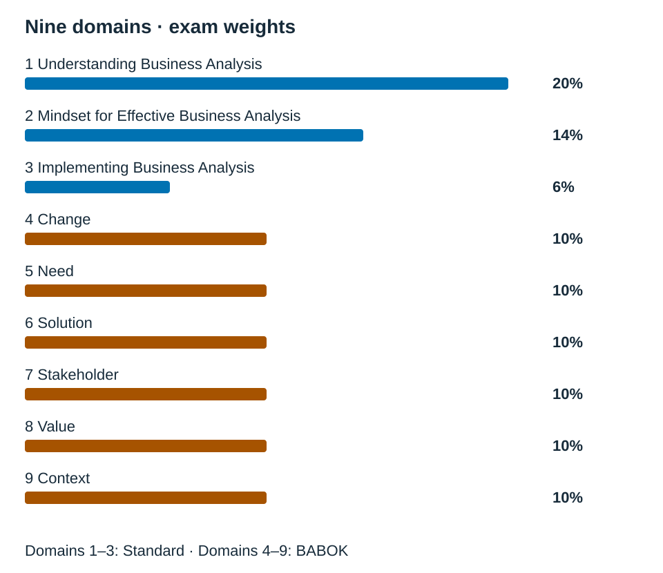
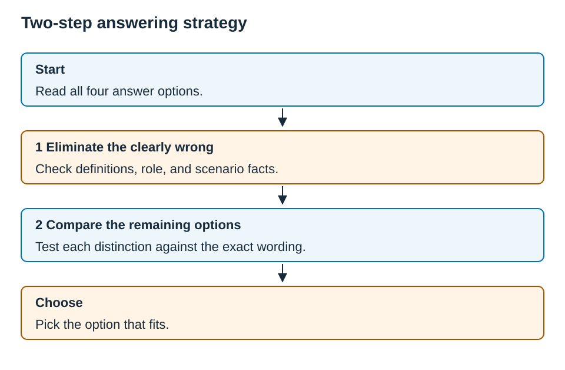
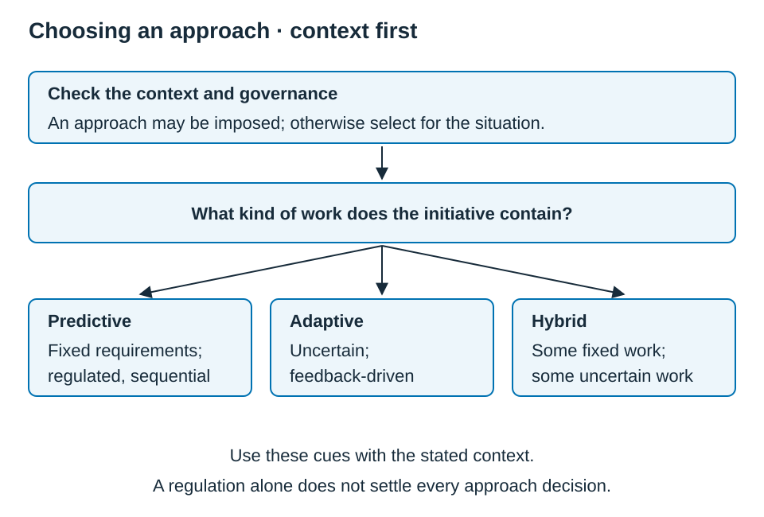
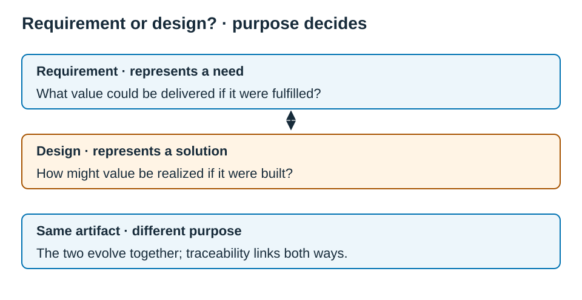
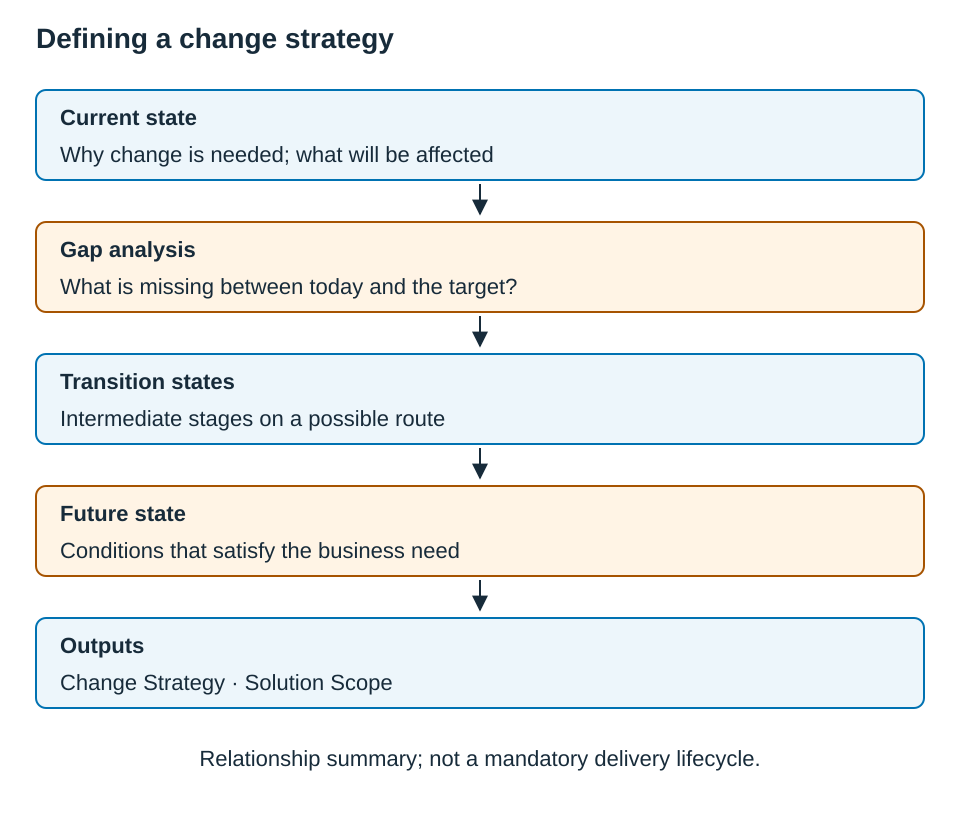
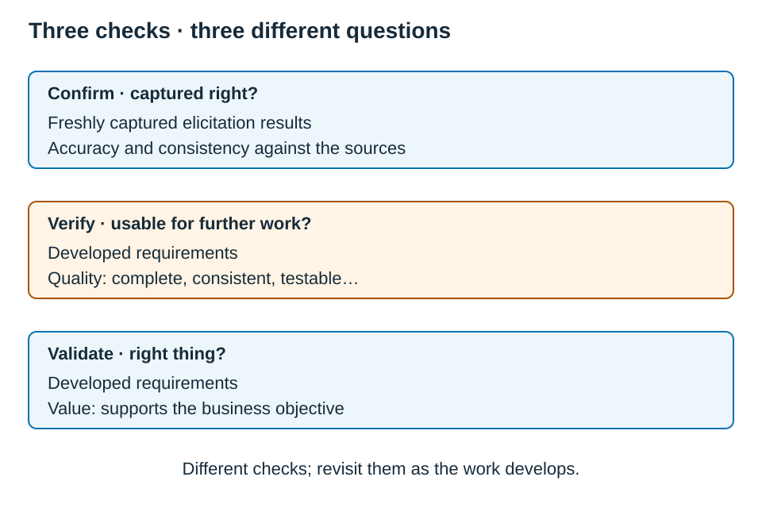
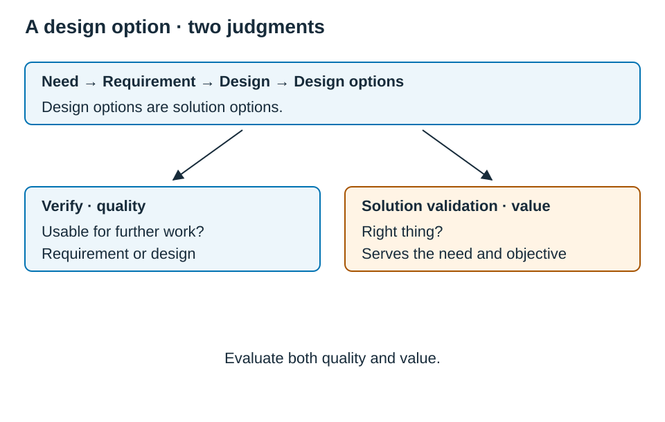
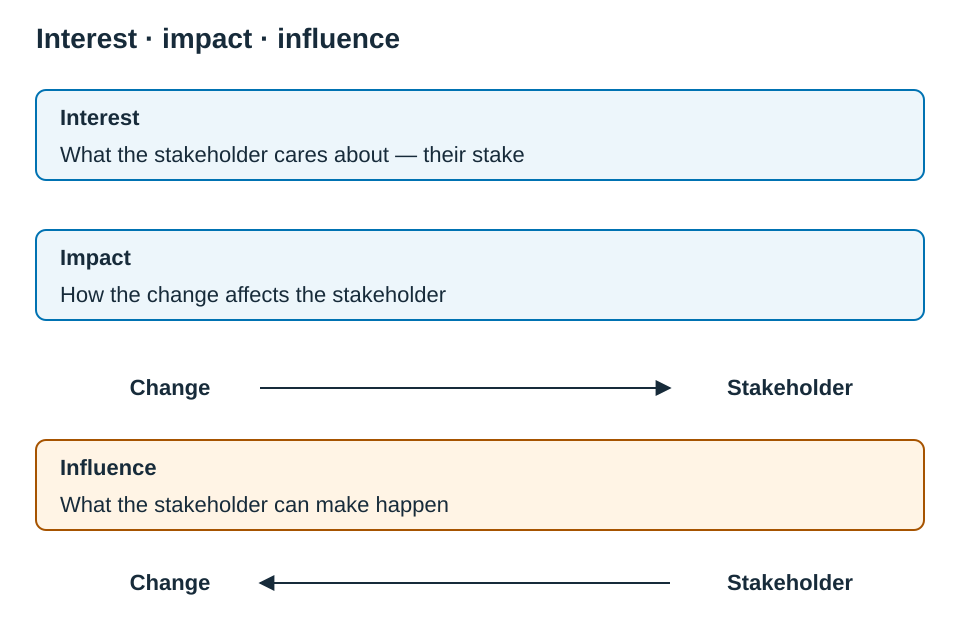
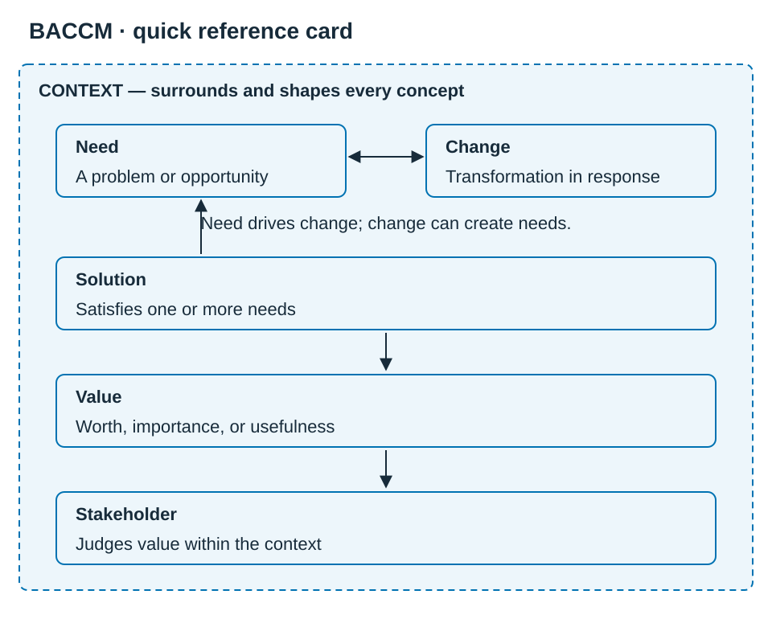

IIBA® ECBA™ Exam Guide: From Business Analysis Basics to Exam-Ready
A Study Guide for the Entry Certificate in Business Analysis™
Study business analysis concepts, work through examples, and review your reasoning against the source references.
By Kadir Çamoğlu
| Study reference | Detail |
|---|---|
| Blueprint | ECBA Exam Blueprint V1.1 |
| Content sources | The Business Analysis Standard (2025) · A Guide to the Business Analysis Body of Knowledge® (BABOK® Guide), v3 |
| Exam format | 50 questions · 75 minutes · 9 domains |
Check the current official information before booking or sitting the exam.
Copyright and notices
© Kadir Çamoğlu.
The author's original text, questions, explanations, and diagrams in this freely shared guide are licensed under Creative Commons Attribution–NonCommercial 4.0 International (CC BY-NC 4.0). You may share and adapt that material for noncommercial purposes under the licence terms, with attribution, a link to the licence, and an indication of changes.
IIBA material quoted or identified here, including the activity statements from the ECBA Exam Blueprint, remains the property of IIBA and is excluded from this licence. Other third-party material retains its owners' rights. The licence does not grant rights to IIBA publications or trademarks.
International Institute of Business Analysis™ (IIBA®) owns the registered marks IIBA®, BABOK® Guide, and Business Analysis Body of Knowledge®. Entry Certificate in Business Analysis™ (ECBA™) and Business Analysis Core Concept Model™ (BACCM™) are IIBA trademarks. The Business Analysis Standard is an IIBA publication. These names identify the certification and sources discussed in this guide.
This guide is an independent, unofficial study aid. It is not affiliated with, endorsed by, or sponsored by IIBA. Its practice questions are study exercises and are not official IIBA exam questions.
The study references are the ECBA Exam Blueprint V1.1, The Business Analysis Standard (2025), and the BABOK® Guide v3. Before booking or sitting the exam, check the current blueprint, reference map, handbook, and exam arrangements through the official resources. IIBA's current materials take precedence if they differ from this guide.
Introduction — About This Book
What this book is
This guide teaches concepts mapped to the ECBA activity statements. It brings together explanations, workplace examples, questions, and references to The Business Analysis Standard and the BABOK® Guide. Use the cited official materials alongside it when you need the full source discussion.
Two commitments shape every page.
The first commitment is to stay on the mapped scope, without drifting into unnecessary advanced detail. The book is anchored to the exam’s 36 activity statements and to the official Reference Map. Each chapter covers one domain, and each section covers one activity statement, so the book stays on what the exam tests rather than restating the full source books. It is worth remembering that IIBA can update its blueprint and handbook, so you should confirm the current official materials before exam day.
The second commitment is that concepts are traceable to their source. Where the exam draws on The Business Analysis Standard, which covers the three foundational domains, the book follows the Standard. Where it draws on the BABOK® Guide, which covers the six BACCM domains, the book follows BABOK. In other words, you are never left guessing which book a point comes from.
You can read a chapter, attempt its questions, and use the answer explanations and Review links to revisit the relevant concepts. The practice questions support study; they do not predict an official exam result.
Who this book is for
The ECBA has no work-experience requirement, and neither does this book. It is written for several kinds of reader.
It is written for career changers who are moving into business analysis from another field and need the fundamentals built up from the ground. It is written for students and recent graduates who are seeking a recognized first credential. It is written for working professionals, such as project coordinators, quality assurance analysts, and people in product or operations roles, who already do business-analysis-like work and want to formalize it. And it is written for experienced analysts who know the practice well but want a precise, exam-focused refresher before they sit the ECBA.
No prior knowledge of business analysis is assumed. The chapters introduce terms and use workplace examples to explain the distinctions in the mapped sources.
One idea runs through the book: read the analyst’s responsibilities in context. Many activity statements describe work under guidance. Support the responsible decision makers where the scenario requires it, and exercise any responsibility assigned by the role and agreed governance. Certification level alone does not determine a person’s authority (Standard §4.1; Standard §4.6).
How this book is organized
The book moves through four stages: orientation, then teaching, then practice, and finally reference.
Chapter 0, ECBA Exam Onboarding, orients you to the exam itself. It covers the exam format, the nine domains and their weights, the two question types, a method for reasoning through answer options, and two week-by-week study plans.
Chapters 1 to 9, the nine domain chapters, are the core of the book. Each chapter opens with a Domain Snapshot and then teaches one activity statement at a time, using plain-language explanations, real-world sidebars, the confusable distinctions flagged as Exam Traps, and fully worked example questions. Each chapter ends with a set of Practice Questions, which contains the questions only.
Chapter 10, the Practice Exam, is one full, 50-question, blueprint-weighted simulation. You should take it timed, after you have worked through the nine chapters.
The Practice Answers and Rationale section in the back matter holds the answers and full explanations for every chapter’s Practice Questions, and each explanation includes a pointer back to the section to reread. The Practice Exam Answer Key and Rationale does the same for Chapter 10.
The reference appendices, namely a BACCM Quick Reference, a Techniques Quick Reference, a Competency Quick Reference, and a Critical Concept Pairs and Near-Miss Distinctions list, are condensed tools for your final week. The Glossary defines the key terms concisely.
How to read and study it
Read in order, at least the first time. The domains build on one another. For example, Domain 1 introduces the BACCM, which is the backbone of Domains 4 to 9. If you skip ahead, you will meet those six concepts without their foundation.
Use the read, practice, and review loop. After each chapter, do its Practice Questions before you look at the answers. Then read the rationale for every question, especially the ones you got right by luck and the ones you got wrong. The explanations are written to teach the distinction that the question turns on, and not merely to confirm the letter of the answer.
Make the two-step strategy a habit. Chapter 0, section 0.5, presents a reasoning method: eliminate options that conflict with definitions or scenario facts, then compare the remaining options against the question. If two seem plausible, name the distinction between them and test it against the wording. Use the method to explain your choice, rather than memorizing an answer letter.
Save the appendices for consolidation. Once you have read the chapters, the appendices become powerful. The Critical Concept Pairs appendix collects concept pairs in three study groups, and the BACCM Quick Reference keeps the six core concepts and their relationships on a single page. Use them in your final week and on the day before the exam.
Then simulate. Take the Chapter 10 Practice Exam under real conditions, with 50 questions, 75 minutes, and no notes. Score it by domain, and let your weakest domains tell you where to spend your last days.
For the exam’s mechanics and the detailed study-plan tables, turn to Chapter 0. For a one-page map of where every activity statement is taught and what it is sourced from, use the Objective Map that follows.
Objective Map
This is a single-page map of all 36 activity statements. It shows where each one is taught and what it is sourced from. Domains 1 to 3 are sourced from The Business Analysis Standard, while Domains 4 to 9 are sourced from the named tasks in the BABOK® Guide. You can use this map to track your preparation, one activity statement at a time.
First time through? This is a reference table, not a lesson, so do not worry if some of the terms here are new to you, such as elicitation, artifacts, and KPIs, together with the BABOK task names. Every one of them is introduced and explained in its own chapter. For now, skim the map to get a sense of the shape of the exam. You can then come back to it later to track your progress.
Domains 1–3 — The Business Analysis Standard
| A.S. | Activity statement (short form) | Chapter / § | Source | Practice question / Exam Lens |
|---|---|---|---|---|
| 1.1 | Define business analysis and its role in enabling change | Ch 1 · §1.1 | Standard, Ch. 2 | C1-EL01, C1-Q01, C1-Q02, C1-Q03 |
| 1.2 | The six BACCM concepts and how they relate | Ch 1 · §1.2 | Standard, Ch. 2 | C1-EL02, C1-EL03, C1-Q04, C1-Q05, C1-Q06 |
| 1.3 | How business analysis supports value creation across industries | Ch 1 · §1.3 | Standard, Ch. 2 | C1-EL04, C1-Q07, C1-Q08 |
| 1.4 | Define value; how outcomes are assessed | Ch 1 · §1.4 | Standard, Ch. 2 | C1-EL05, C1-Q09, C1-Q10 |
| 2.1 | How mindset influences effectiveness; the empowering mindset | Ch 2 · §2.1 | Standard, Ch. 3 | C2-EL01, C2-Q01, C2-Q02 |
| 2.2 | The shared values that drive the work | Ch 2 · §2.2 | Standard, Ch. 3 | C2-EL02, C2-Q03, C2-Q04 |
| 2.3 | Core business analysis principles | Ch 2 · §2.3 | Standard, Ch. 3 | C2-EL03, C2-Q05, C2-Q06 |
| 2.4 | Foundational competencies and when to apply them | Ch 2 · §2.4 | Standard, Ch. 3 | C2-EL04, C2-EL05, C2-Q07, C2-Q08 |
| 3.1 | Roles that perform BA; how responsibilities vary | Ch 3 · §3.1 | Standard, Ch. 4 | C3-EL01, C3-Q01 |
| 3.2 | Comparing BA approaches and choosing one | Ch 3 · §3.2 | Standard, Ch. 4 | C3-EL02, C3-Q02, C3-Q03 |
| 3.3 | Organizational considerations and their impact | Ch 3 · §3.3 | Standard, Ch. 4 | C3-EL03, C3-Q04 |
| 3.4 | Requirements vs. designs and how they evolve | Ch 3 · §3.4 | Standard, Ch. 4 | C3-EL04, C3-Q05, C3-Q06 |
Domains 4–9 — BABOK® Guide (tasks named)
| A.S. | Activity statement (short form) | Chapter / § | Source (BABOK tasks) | Practice question / Exam Lens |
|---|---|---|---|---|
| 4.1 | Organizational, environmental, and stakeholder factors | Ch 4 · §4.1 | Plan BA Approach; Analyze Current State; Assess Enterprise Limitations | C4-EL01, C4-Q01, C4-Q02 |
| 4.2 | Identify impacted areas and evaluate impacts | Ch 4 · §4.2 | Plan BA Governance; Define Change Strategy | C4-EL02, C4-Q03 |
| 4.3 | Track progress; support adapting to change | Ch 4 · §4.3 | Identify BA Performance Improvements; Trace Requirements; Analyze Performance Measures | C4-EL03, C4-EL04, C4-Q04, C4-Q05, C4-Q06 |
| 4.4 | Suggest and help implement simple improvements | Ch 4 · §4.4 | Plan BA Governance; Assess Requirements Changes | C4-EL05, C4-Q07 |
| 5.1 | Basic elicitation and building rapport | Ch 5 · §5.1 | Prepare for Elicitation | C5-EL01, C5-Q01, C5-Q02 |
| 5.2 | Document requirements; validate needs under guidance | Ch 5 · §5.2 | Confirm Elicitation Results; Specify and Model Requirements | C5-EL02, C5-Q03 |
| 5.3 | Compare needs with outcomes; flag conflicts | Ch 5 · §5.3 | Confirm Elicitation Results; Validate Requirements | C5-EL03, C5-Q04, C5-Q05 |
| 5.4 | Support prioritizing needs | Ch 5 · §5.4 | Prioritize Requirements | C5-EL04, C5-Q06, C5-Q07 |
| 6.1 | Basic solution validation; record findings | Ch 6 · §6.1 | Trace Requirements | C6-EL01, C6-Q01, C6-Q02 |
| 6.2 | Evaluate options (feasibility, risks); recommendations | Ch 6 · §6.2 | Define Future State; Assess Risks; Define Design Options; Recommend Actions to Increase Solution Value | C6-EL02, C6-Q03, C6-Q04, C6-Q05 |
| 6.3 | Support scope; plan and monitor implementation | Ch 6 · §6.3 | Assess Requirements Changes; Define Requirements Architecture | C6-EL03, C6-Q06 |
| 6.4 | Support preparing and updating design artifacts | Ch 6 · §6.4 | Plan BA Information Management; Maintain Requirements; Specify and Model Requirements | C6-EL04, C6-Q07 |
| 7.1 | Tailored communication to maintain engagement | Ch 7 · §7.1 | Conduct Elicitation; Communicate BA Information | C7-EL01, C7-Q01, C7-Q02 |
| 7.2 | Stakeholder roles and interests; impact analysis | Ch 7 · §7.2 | Plan Stakeholder Engagement | C7-EL02, C7-Q03, C7-Q04 |
| 7.3 | Facilitate collaboration and feedback | Ch 7 · §7.3 | Conduct Elicitation; Manage Stakeholder Collaboration | C7-EL03, C7-Q05, C7-Q06 |
| 7.4 | Stakeholder motivations, drivers, and concerns | Ch 7 · §7.4 | Plan Stakeholder Engagement; Manage Stakeholder Collaboration; Approve Requirements | C7-EL04, C7-Q07 |
| 8.1 | Confirm desired outcomes aligned with objectives | Ch 8 · §8.1 | Define Future State | C8-EL01, C8-Q01, C8-Q02 |
| 8.2 | Identify value opportunities; address barriers | Ch 8 · §8.2 | Prioritize Requirements; Define Change Strategy; Analyze Potential Value and Recommend Solution; Recommend Actions to Increase Solution Value | C8-EL02, C8-Q03, C8-Q04 |
| 8.3 | Describe how solutions meet goals; relay information | Ch 8 · §8.3 | Communicate BA Information; Validate Requirements | C8-EL03, C8-Q05 |
| 8.4 | Support KPIs aligned with value | Ch 8 · §8.4 | Identify BA Performance Improvements; Measure Solution Performance | C8-EL04, C8-Q06, C8-Q07 |
| 9.1 | Validate information quality and alignment; document | Ch 9 · §9.1 | Plan BA Information Management; Maintain Requirements; Approve Requirements | C9-EL01, C9-Q01, C9-Q02 |
| 9.2 | Recognize constraints; adapt plans | Ch 9 · §9.2 | Analyze Current State; Assess Solution Limitations; Assess Enterprise Limitations | C9-EL02, C9-Q03, C9-Q04 |
| 9.3 | Analyze technology trends; support integration | Ch 9 · §9.3 | Define Requirements Architecture | C9-EL03, C9-Q05 |
| 9.4 | Apply industry standards and frameworks | Ch 9 · §9.4 | Plan BA Approach; Verify Requirements | C9-EL04, C9-Q06, C9-Q07, C9-Q08 |
Chapter 0 — ECBA Exam Onboarding
The Introduction told you about this book. This chapter tells you about the exam. It explains what the ECBA is, how the exam is structured, the two kinds of questions you will face, a method for reasoning through answer options, and two study plans that will carry you to exam day. You should read this chapter once before you start Chapter 1, and then read it again in your final week.
0.1 — What the ECBA Is
The Entry Certificate in Business Analysis (ECBA™) is the foundational certification offered by the International Institute of Business Analysis (IIBA®). It recognizes that a candidate understands the fundamentals of business analysis and is ready to contribute to business analysis work at an entry level, in a supporting role and under direction. There is no work-experience requirement. The ECBA can be a first step for career changers, for students, and for professionals who are moving into business analysis from another field.
The exam tests understanding and applied judgment at a foundational level. It does not test advanced practice, and it does not test the kind of independent decision-making expected of a senior analyst. Holding this picture of the entry-level role in mind is itself an exam skill, and section 0.5 returns to it.
Tip. Use the activity statements and Reference Map to organize your study. Practice recognizing a concept, technique, or appropriate action from the facts of a workplace situation.
0.2 — Exam Format at a Glance
| Item | Detail |
|---|---|
| Questions | 50 multiple-choice questions |
| Time | 75 minutes |
| Pace | ~90 seconds per question |
| Question styles | Situation-based and standard (see §0.4) |
| Delivery | Online, remote proctored |
| Result | Pass/fail, shown on screen; confirmed by email |
| Answer choices | Four options (A–D); exactly one is best |
Fifty questions in seventy-five minutes is a comfortable pace, provided that you do not get stuck. A time-management habit to practice is simple: answer the question in front of you, and if it is taking more than about two minutes, mark it, record your best guess, and move on. There is no advantage to leaving an answer blank, because an unanswered question and a wrong answer score the same. For that reason, you should always record a best choice before time runs out.
0.3 — The Nine Domains and Their Weights
The exam is organized into nine domains. The first three domains are foundational, and they are drawn from The Business Analysis Standard. The next six domains apply the Business Analysis Core Concept Model (BACCM), and they are drawn from the BABOK® Guide. This split is the reason that Chapters 1 to 3 of this book cite the Standard, while Chapters 4 to 9 cite BABOK tasks.
Figure 0.1 — The nine domains by exam weight

| Domain | Name | Weight | Chapter | Source |
|---|---|---|---|---|
| 1 | Understanding Business Analysis | 20% | Chapter 1 | Standard |
| 2 | Mindset for Effective Business Analysis | 14% | Chapter 2 | Standard |
| 3 | Implementing Business Analysis | 6% | Chapter 3 | Standard |
| 4 | Change | 10% | Chapter 4 | BABOK |
| 5 | Need | 10% | Chapter 5 | BABOK |
| 6 | Solution | 10% | Chapter 6 | BABOK |
| 7 | Stakeholder | 10% | Chapter 7 | BABOK |
| 8 | Value | 10% | Chapter 8 | BABOK |
| 9 | Context | 10% | Chapter 9 | BABOK |
It is worth reading these weights in practical terms. Domain 1 alone is a fifth of the exam, and Domains 1 and 2 together make up a third of it. The six BACCM domains, which are Domains 4 to 9, each carry an equal weight of 10 percent, so no single one of them dominates. Taken together, however, they make up 60 percent of the exam. Domain 3 is the lightest, at 6 percent, which is roughly three questions, so you should study it for understanding but not over-invest in it. A good rule is to spend your study time roughly in proportion to these weights, and the study plans in section 0.6 already do this for you.
⚠️ Exam Trap — domain numbering versus BACCM order. The six BACCM concepts, which are Change, Need, Solution, Stakeholder, Value, and Context, line up with Domains 4 to 9 in that order. It helps to keep the concept and the domain number loosely associated. However, you should answer on the meaning of the concept, and not on its number.
0.4 — The Two Question Types
Every question is multiple choice with four options, but the questions come in two styles.
Standard questions test whether you know a definition, a distinction, or a fact directly. Read the wording carefully even when no scenario is given.
Example shape: “In the BACCM, which concept is defined as a problem or opportunity to be addressed?”
Situation-based questions give you a short workplace scenario and ask what the concept, the technique, or the best entry-level action is. Read the stated facts before comparing the answer options, including distractors that sound reasonable but do not fit those facts.
Example shape: “Six weeks after launch, every planned feature shipped but the problem the project targeted has not improved. Working under direction, what is the MOST appropriate business analysis contribution?”
The difference between the two styles matters for how you read. A standard question rewards precise recall. A situation-based question, on the other hand, rewards reading the scenario carefully, identifying what is really being asked, and matching it to the right concept and the right entry-level behavior. Watch the qualifier words, such as BEST, FIRST, MOST appropriate, and NEXT. These words tell you that more than one option may be defensible, and that you must choose the strongest, the earliest, or the most suitable one.
0.5 — How ECBA Questions Think: The Two-Step Strategy
The two-step strategy is a reasoning method for practice. First eliminate options that conflict with a definition or the scenario. Then compare the remaining options against the question’s exact focus. If two seem plausible, identify the distinction between them. This method does not assume that a fixed number of options will remain.
Figure 0.2 — The two-step answering strategy

| Stage | What you do | Result |
|---|---|---|
| Start | Read all four answer options | — |
| Step 1 | Eliminate the clearly wrong (misused definition · outside entry-level role · contradicts the scenario) | Options that need closer comparison |
| Step 2 | Compare the remaining options; test each against the scenario’s exact wording | Identify a mismatch in concept, role, or scenario facts |
| Choose | Pick the option that fits | The correct answer |
Step 1 — Eliminate the clearly wrong. Remove the options that misuse a definition, that fall outside the entry-level role, or that contradict the scenario. Keep every option that still fits for closer comparison.
Step 2 — Compare the remaining options using the distinction. Identify what makes each option different, and test it against the exact wording of the scenario. For example, an option may narrow a concept too far, swap similar ideas, or assign the analyst authority that the scenario gives to another role.
Two habits make Step 2 reliable.
Hold the role and governance filter. Read the responsibilities stated in the activity statement and scenario. When work is under guidance, support the responsible decision makers and follow the agreed approval process. Do not assume that a certification level creates a universal ban on authority: responsibilities vary with the role, context, and delegated authority (Standard §4.1; Standard §4.6). A.S. 3.2 also requires you to compare approaches and explain how to choose one for the situation. Recommend, decide, or seek approval according to that context.
💡 Supporting is active work. Investigate causes, compare options, prepare recommendations, and raise concerns. Where the scenario assigns a decision to another stakeholder, do not take it over. Where it gives you responsibility to select a technique or shape the approach, exercise that responsibility within the agreed governance.
Recognize the near-miss families. Compare Need versus requirement, Verify versus Validate, output versus outcome, and Centre of Excellence versus Community of Practice. The domain chapters discuss these distinctions in Exam Traps, and Appendix C collects concept pairs in study groups. Use the groups to organize review, without treating them as a ranking of exam frequency.
In Practice — checking a confident-sounding answer. A scenario describes a context change, such as a new regulation, that arrives after the design has been agreed. The tempting option has the analyst “document it and continue with the agreed design unless directed otherwise,” which sounds disciplined and safe. The keyed answer, on the other hand, has the analyst flag that the need, the solution, and the value may now need to be re-examined. The disciplined-sounding option is the near-miss, because at ECBA level the analyst raises the issue rather than filing it and waiting. In this example, raising the consequences of the context change fits the stated responsibilities and the relationships among the BACCM concepts.
0.6 — Study Plans
Two plans follow. The 8-week plan suits a true beginner, or anyone studying around a full-time job. The 4-week plan suits someone with some business analysis exposure, or someone working to a tighter timeline. Both plans spend time roughly in proportion to the domain weights in section 0.3, and both follow the same rhythm: read a chapter, then immediately do its end-of-chapter Practice Questions, and then check the answers and reread the sections you missed. That read, practice, and review loop is what moves material into memory.
8-Week Plan (steady / beginner)
| Week | Focus | Activities |
|---|---|---|
| 1 | Orientation + Domain 1 (20%) | Read the Introduction, this chapter, and Chapter 1. Do Chapter 1 Practice Questions; review rationales. |
| 2 | Domains 2–3 (14% + 6%) | Read Chapters 2 and 3. Do their Practice Questions; review. |
| 3 | Domains 4–5 (Change, Need) | Read Chapters 4 and 5. Do their Practice Questions; review. |
| 4 | Domains 6–7 (Solution, Stakeholder) | Read Chapters 6 and 7. Do their Practice Questions; review. |
| 5 | Domains 8–9 (Value, Context) | Read Chapters 8 and 9. Do their Practice Questions; review. |
| 6 | Consolidate | Reread the domains where your Practice-Question score was weakest. Start Appendix A (techniques) and Appendix B (competencies). |
| 7 | Distinctions | Work through Appendix C (concept pairs) and the BACCM Quick Reference. Redo every question you got wrong. Skim the Glossary. |
| 8 | Simulate + final review | Take the Practice Exam (Chapter 10) timed: 50 questions, 75 minutes. Study the answer key and rationale. Do a last-day pass of the appendices. |
4-Week Plan (intensive / some background)
| Week | Focus | Activities |
|---|---|---|
| 1 | Orientation + Domains 1–3 | Read the Introduction, this chapter, and Chapters 1–3. Do each chapter’s Practice Questions; review. |
| 2 | Domains 4–6 | Read Chapters 4–6. Do their Practice Questions; review. Skim Appendix A. |
| 3 | Domains 7–9 | Read Chapters 7–9. Do their Practice Questions; review. Skim Appendix B. |
| 4 | Distinctions + simulate | Work through Appendix C and the BACCM card. Take the Practice Exam timed; study the rationale. Redo missed questions; last-day pass of appendices and Glossary. |
Tip — use your wrong answers. The questions you miss are the most valuable pages in the book. For each one, do not just note the right letter. Instead, read why the near-miss was tempting and why it fails. That is the exact skill that Step 2 of the strategy depends on.
0.7 — How to Use This Book
The Introduction covers the book’s purpose, audience, and reading order in full. This section is the quick structural map, so that you can navigate while you study.
Each domain chapter opens with a Domain Snapshot, which gives the weight, the number of questions, the source, and the activity statements covered. The chapter then teaches one activity statement at a time. The sections combine plain-language explanations, workplace examples, distinctions to check, and worked Exam Lens questions.
Each chapter ends with Practice Questions, which are the questions only. The answers and full rationale live at the back of the book, in the Practice Answers & Rationale section, so that you can attempt the questions honestly before checking. Each answer ends with a See § pointer back to the section to reread.
Chapter 10 is a full, 50-question Practice Exam that mirrors the weighting of the real exam. You should take it timed, after the nine domain chapters. Its answer key and rationale are in the back matter.
The reference appendices, which are the BACCM Quick Reference, the Techniques Quick Reference, the Competency Quick Reference, and the Critical Concept Pairs, are tools for your final week. The concept-pairs appendix in particular is your sharpest defence against near-miss distractors.
The Glossary gives concise definitions of the key terms. You should use it whenever a term is unfamiliar.
0.8 — Exam-Day Notes
Because the exam is online and remote proctored, a little setup prevents avoidable stress.
Before the day, have your government-issued photo ID ready, and prepare a quiet, private, and well-lit room with a clear desk. Complete the practice or tutorial test that your exam provider offers, so that the room scan and the exam interface hold no surprises on the day. Log in early, so that you can handle any technical check-in steps before your start time. At the end of the exam you will see your pass or fail result on screen, and an email confirmation will follow.
Scheduling, rescheduling, and the detailed check-in procedure are all handled through your IIBA candidate portal and your proctoring provider. You should follow their current instructions, because those steps change from time to time. Your job in this book is the part that does not change, which is knowing the material and the way the questions think.
Chapter 1 — Understanding Business Analysis
1.0 — Domain Snapshot
| Item | Detail |
|---|---|
| Blueprint weight | 20% — the highest-weight domain |
| Questions per ECBA exam | 10 out of 50 |
| Source | The Business Analysis Standard (2025), Ch. 2 — Understanding Business Analysis |
| Activity Statements | 1.1, 1.2, 1.3, 1.4 |
| A.S. | Full Activity Statement |
|---|---|
| 1.1 | Define business analysis, describe its role in enabling change, and outline key activities across contexts. |
| 1.2 | Describe the six BACCM concepts, explain how they relate, and use them to support structured thinking. |
| 1.3 | Explain how business analysis supports value creation and benefits organizations in various industries. |
| 1.4 | Define value in business analysis and explain how outcomes are assessed to support value realization. |
Domain 1 checks whether you understand what business analysis is before you begin applying techniques, tasks, or exam tactics. The goal is not to memorize a job description or to associate business analysis with only one specific role.
Instead, this domain asks you to build three core habits of thinking. First, you should be able to recognize business analysis work across different roles, industries, and delivery approaches. Second, you should be able to use the BACCM as a structured way to think about business analysis situations. Third, you should be able to make better decisions in exam scenarios by keeping value, outcomes, and stakeholder needs at the center of your reasoning.
This domain carries the largest share of the exam, with ten of the fifty questions. That makes it important not only because of the number of questions, but also because the ideas in this domain support how you interpret many business analysis situations throughout the exam.
The encouraging part is that Domain 1 is not mainly about memorizing complex details. It is about developing a clear understanding of the purpose, the mindset, and the language of business analysis. Once this foundation is in place, many questions become easier to reason through.
For that reason, focused study on Domain 1 is a strong investment. It helps you gain confidence early, answer foundational questions more reliably, and approach the later domains with a stronger business analysis perspective.
💡 Exam Tips — Domain 1
- Domain 1 carries the largest share of the exam, so it is worth building a solid understanding of the BACCM early. Do not treat it as a diagram to memorize; use it as a thinking model for analyzing business analysis situations.
- In these questions, “BA” means any person performing business analysis work. It does not necessarily mean someone with the job title of “business analyst.”
- When a question asks about the role of the business analyst, avoid thinking only in terms of documenting requirements or jumping directly to a solution. A stronger way to reason is to understand the need, consider the stakeholders and the context, clarify the expected value, and then recommend solution options that can help deliver that value.
- It is useful to learn the exact wording of a few core definitions, especially business analysis, the six BACCM concepts, and value. However, you do not need to memorize every sentence in the chapter. For most of the material, your goal is to recognize the idea, understand how it works in a scenario, and choose the answer that best fits the Standard’s way of thinking.
1.1 — A.S. 1.1: Define Business Analysis
Activity Statement 1.1: “Define business analysis, describe its role in enabling change, and outline key activities across contexts.”
Reference Map: Standard ch.2
Glossary: Adaptive approach, Business analysis, Business Analysis as a Service (BAaS), Centre of Excellence (CoE), Community of Practice (CoP), Dispersed delivery (dispersed across business units), Enterprise, Hybrid approach, Nine functions of business analysis, Performance enhancement, Predictive approach, Role-agnostic / industry-agnostic.
Activity statement: IIBA ECBA Exam Blueprint V1.1; source mapping: ECBA Reference Map.
What this means. This activity statement asks you to hold three connected ideas.
First, you need to be able to describe what business analysis is using the Standard’s own definition. This matters because the exam does not want you to rely only on personal experience or on informal job descriptions.
Second, you should understand that the purpose of business analysis is to enable change. A business analyst is not there simply to write down requests or to produce documents. The real focus is to help the organization understand needs, explore options, and move toward better outcomes.
Third, you should be able to recognize business analysis work in different contexts. It may appear under different job titles, in different industries, or within different delivery approaches, such as predictive, adaptive, or hybrid environments. The name of the role may change, but the nature of the work can still be business analysis.
So, when you read this statement, think of it as three exam-relevant ideas: know the formal definition, understand business analysis as a change-enabling discipline, and recognize the work even when it appears in different forms.
How it is tested. Use two question forms to practice this idea.
The first type is an identification question. It is essentially asking, “Is this business analysis?” These questions may place the work in an unfamiliar industry, or describe someone who is not formally called a business analyst. Do not focus only on the job title. Look at the nature of the work being performed.
The second type is a definition question. Here, the exam may try to pull you toward a familiar but incomplete answer, such as “documenting requirements.” Requirements documentation can be part of business analysis, but it is not the whole purpose of business analysis.
In both types of question, the best answer should align with the Standard’s definition and stay within entry-level expectations. A practical way to remember this is simple: the business analyst helps understand the need, supports the analysis, and recommends possible ways forward. The business analyst does not approve, authorize, or own the change decision.
The Official IIBA Definition
The Standard defines business analysis as:
“the practice of enabling change in an enterprise by defining needs and recommending solutions that deliver value to stakeholders within a given context.”
For the exam, you should not reduce this definition to “requirements work.” Each phrase in it carries weight, and the table below shows what each one means when it appears in a question.
| Definition element | What it means on the exam |
|---|---|
| Enabling change | Business analysis supports transformation — moving the enterprise from a current state toward a desired future state. It is not limited to documenting what someone already asked for. |
| Enterprise | The setting can be a whole organization, part of one, or a broader system of organizations. |
| Defining needs | Start with the problem or opportunity, not the proposed feature, tool, or project. |
| Recommending solutions | A solution is a way of satisfying one or more needs in context. The BA contributes analysis and recommendation, not unilateral authority. |
| Deliver value | The point is beneficial outcomes, not just finished deliverables. |
| Stakeholders | Value is judged from stakeholder perspectives, not the BA’s personal preference. |
| Context | Surrounding conditions matter: culture, regulations, market, technology, goals, stakeholders, and more. |
Where authorization belongs to the sponsor or another designated role, the analyst does not take over that authorization. Instead, the business analyst helps define the need, clarify the context, analyze the options, and support the recommendations, so that the decision-makers can act with better information. You will also see the phrase “working under direction” in this book. In a scenario requiring direction, the analyst supports, analyzes, and recommends within the responsibilities and approval authority that the scenario assigns.
The 9 Functions of Business Analysis
These nine functions are easier to hold in mind once you see that they cluster into three jobs. The first two functions are about understanding the problem. The next four are about shaping a value-focused solution. The last three are about delivering it and continuing to improve. You do not need to memorize the list word for word. Instead, recognize the pattern, and note the three functions flagged in section 1.3 that the exam leans on most. The third column shows the value angle, which is revisited in A.S. 1.3, so the table is given once, here.
| Function | One-line exam meaning | How it creates value |
|---|---|---|
| Problem understanding | Look past visible symptoms to the underlying cause or opportunity. | Prevents wasted effort on symptoms or assumed solutions. |
| Needs prioritization | Help stakeholders compare relative importance so limited resources are well focused. | Directs limited time, money, and attention to the most important needs. |
| Value-centric solutions | Keep the goal in view: outcomes and measurable results, not only solution features. | Keeps the team aimed at results rather than just shipping features. |
| Risk management | Identify and communicate risks that may affect the change, solution, or value. | Protects expected value by surfacing threats before they cause damage. |
| Performance enhancement | Keep monitoring outcomes and improvement opportunities after implementation. | Checks whether value is actually being realized once the solution is live. |
| Value delivery | Manage the balancing act: maximize benefits while handling stakeholder concerns and trade-offs. | Keeps benefits and concerns in balance across stakeholder groups. |
| Stakeholder collaboration | Break down silos and help stakeholders build shared understanding. | Creates alignment so work is not fragmented across silos. |
| Leadership support | Help leaders articulate purpose, goals, and expectations clearly. | Connects teams to purpose and expected outcomes. |
| Agility | Support whatever way of working the context calls for — predictive (plan-driven, sequential, like waterfall), adaptive (iterative and feedback-driven, like agile), or a hybrid of both. | Helps the organization respond as needs, technology, or market conditions change. |
When comparing business analysis responses, use this reasoning sequence: first understand the problem, then consider the context and the stakeholders, and only then support a value-focused solution.
Who Performs Business Analysis?
Business analysis is both role-agnostic and industry-agnostic. This means that it is not limited to one job title, one department, one sector, or one delivery approach.
In practice, many different people may perform business analysis work. A product owner may analyze customer needs and help shape a product backlog. A process analyst may examine how work flows through an organization and identify opportunities for improvement. A data analyst may explore patterns in data to support better business decisions. An operations lead may investigate recurring problems in day-to-day work and recommend changes. A consultant may help an organization understand its current situation, define a desired future state, and evaluate possible solutions. And, of course, someone with the formal title of “business analyst” may do the same type of work.
The key point is this: business analysis is identified by the nature of the work, and not by the person’s title. If someone is using business analysis concepts, practices, and tasks to understand needs, support change, and improve outcomes, then that person is performing business analysis work.
This is important for the exam because questions may deliberately describe business analysis in an unfamiliar setting. The person in the scenario may not be called a business analyst. The industry may not be software or IT. The work may happen in healthcare, finance, education, manufacturing, government, or operations. Do not let the label distract you. Look for the purpose of the work, which is understanding needs, enabling change, and helping the organization achieve better outcomes.
⚠️ Exam Trap — “Business analysis = IT work.”
A common mistake is to assume that business analysis only happens in software or IT environments. The Standard is clear on this point: business analysis can be applied across different industries, roles, and delivery approaches.
So, if the exam scenario describes a hospital improving patient intake, a farm optimizing its supply process, or a city government redesigning a public service, do not dismiss it just because there is no software system involved. It may still be a business analysis situation.
The key is to look at what the work is trying to achieve. If the scenario involves understanding needs, enabling change, evaluating options, or improving outcomes, then you should treat it as business analysis work, even when the setting is far outside IT.
The 4 Delivery Models for Business Analysis
These four models describe how an enterprise organizes its business analysis capability.
| Delivery model | In plain terms | Exam clue |
|---|---|---|
| Centre of Excellence (CoE) | A dedicated in-house team that owns “how we do BA here.” | Standards, templates, methods, quality, consistency. |
| Community of Practice (CoP) | An informal group who voluntarily swap tips and lessons. | Sharing experience, peer learning, practice community. |
| Business Analysis as a Service (BAaS) | BA work is bought from an outside provider. | An external provider supplies BA capability. |
| Dispersed across business units | BA work is done inside each department, with no central home. | Marketing, operations, compliance, product teams each do BA locally. |
⚠️ Exam Trap — Centre of Excellence versus Community of Practice. A Centre of Excellence, or CoE, is a specialized unit that drives standards, quality, and consistency. A Community of Practice, or CoP, is a group that voluntarily shares experience and practices. A quick way to keep the abbreviations straight is to link the letters to the words: the CoE is the Excellence unit that sets the rules, while the CoP is the Practice community that swaps tips. When a description names a central standards-owning unit, distinguish it from voluntary peer sharing and from dispersed analysis. For the exam, focus on telling the four models apart. In real life, on the other hand, an organization may run more than one of them at once.
In Practice — a registrar who had never heard the word “requirement.” A community college registrar notices that students keep dropping a popular course after the second week. Before proposing any fix, she interviews the academic advisors, reviews the enrollment and drop data, and clarifies what the college actually wants, which might be fewer late drops, or a better fit between students and courses. Only after that does she recommend changes to the advising checklist. There is no software here, no project charter, and no “analyst” on her business card. Even so, every step is business analysis, because she is defining a need, analyzing the context, and recommending a change that is focused on value.
Exam Focus — A.S. 1.1
Traps. Check three distinctions in this activity statement. The first is the assumption that business analysis equals IT work, when non-IT scenarios are still business analysis questions. The second is the Centre of Excellence versus Community of Practice pair, a distinction where the CoE owns standards and quality while the CoP is about voluntary sharing. The third is treating the definition as requirements documentation, when documentation is only one activity and not the definition.
How questions are framed. Practice three question forms. The first is an identity question that asks “Is this business analysis?”, set in an unfamiliar industry or carried out by someone without the title, where the cue is whether a need is being defined and a value-focused change recommended. The second is a description swap between the Centre of Excellence and the Community of Practice. The third is a “which statement best matches the definition?” question, where the distractors substitute requirements work, project management, or solution implementation. In all three, the keyed answer respects the role-agnostic frame, in which the business analyst supports rather than authorizes.
Exam Lens C1-EL01
A.S.: 1.1
Stem. A facilities manager is asked to choose software for tracking office-space use. Before comparing tools, she interviews department heads, reviews hybrid-work patterns, and clarifies the expected value of reducing unused space. Which statement BEST describes her work?
Options.
- A. She is not performing business analysis because she does not hold the business analyst title.
- B. She is performing business analysis because she is defining needs and context before recommending a value-focused solution.
- C. She is performing project management because she is preparing to control scope and schedule.
- D. She is performing solution implementation because the software category has already been named.
C1-EL01 — Show answer and explanation
C1-EL01 — Answer: B
| ID | Answer | Domain | A.S. | Type | Difficulty | Source |
|---|---|---|---|---|---|---|
| C1-EL01 | B | 1 | 1.1 | situation | medium | Standard §2.1; Standard §4.1 |
A. A job title does not determine whether the work is business analysis.
B. Defining needs, examining context, and clarifying value fit business analysis.
C. No scope or schedule control activity is described.
D. Naming a software category does not mean implementation has begun.
Reasoning (two-step). In Step 1, you eliminate the clearly wrong options. Option A fails the role-agnostic rule, because the job title is irrelevant. Option C describes the control of scope and schedule, which is not present in the scenario. That leaves options B and D. In Step 2, you apply the scope and source filter. The Standard says that business analysis means defining needs and recommending value-focused solutions, and the scenario shows exactly that, because she conducts interviews, considers the context, and clarifies the expected value before any tool is chosen. Option B fits.
Source detail: Standard §2.1; Standard §4.1
Review: A.S. 1.1
1.2 — A.S. 1.2: The BACCM
Activity Statement 1.2: “Describe the six BACCM concepts, explain how they relate, and use them to support structured thinking.”
Reference Map: Standard ch.2
Glossary: BACCM (Business Analysis Core Concept Model), Change, Context, Need, Solution, Stakeholder, Value.
Activity statement: IIBA ECBA Exam Blueprint V1.1; source mapping: ECBA Reference Map.
What this means. You should be able to define each of the six core concepts, explain that they are interrelated, and use them as a checklist for reasoning about any business analysis situation. Saying that they are interrelated means that you cannot fully understand one of them without the others. This is the single most important model in Domain 1. It is also the spine of Domains 4 to 9, because each of those domains is built around one of these concepts.
How it is tested. Practice two angles. The first is a definition-match question, which asks “Which concept is this?” The second is an application question, which asks “Which concept is missing, violated, or affected here?” An application example shows a business analyst jumping to a Solution before defining the Need, or ignoring the Context. When one concept changes, the entry-level move is to flag that the others may need to be re-examined, rather than to decide alone.
Why the BACCM Exists
The Business Analysis Core Concept Model (BACCM) is a thinking and organizing model for business analysis work. It gives you six concepts that appear in almost every situation: Change, Need, Solution, Stakeholder, Value, and Context. Their defining feature, and the thing the exam tests most, is that they are interrelated. In other words, if you change any one of them, you should re-check the others.
Figure 1.1 — The BACCM and how its six concepts relate
| Relationship | What it means |
|---|---|
| Need ⇄ Change | A need drives a change, and a change can in turn create new needs. |
| Solution → Need | A solution satisfies one or more needs. |
| Solution → Value | A solution delivers value. |
| Value → Stakeholder | That value is judged by stakeholders. |
| Context → everything | Context surrounds and shapes all of the above. If you change one concept, re-check the others. |
The 6 BACCM Concepts — One Scenario, Six Lenses
To show how the six concepts fit together, the example column in the table below follows one running scenario, which is a bank fixing its account onboarding.
| Concept | Definition to know | The bank-onboarding scenario |
|---|---|---|
| Change | The act of transformation in response to a need. | The bank redesigns its onboarding process. |
| Need | A problem or opportunity to be addressed. | Customers abandon account applications partway through. |
| Solution | A specific way of satisfying one or more needs in a context. | A simplified flow with clearer identity-verification steps. |
| Stakeholder | A group or individual with a relationship to the change, the need, or the solution. | Customers, compliance, support agents, the product team, operations. |
| Value | The worth, importance, or usefulness of something to a stakeholder within a context. | Fewer abandoned applications, lower support cost, more customer trust. |
| Context | The circumstances that influence, are influenced by, and provide an understanding of the change. | Banking regulations, customer expectations, risk tolerance, technology. |
How the BACCM Concepts Relate
| Relationship | Exam meaning | Quick example |
|---|---|---|
| Need → Change | A problem or opportunity motivates stakeholders to act. | Abandoned applications (need) prompt the onboarding redesign (change). |
| Change → Need | A change can create new needs by raising or lowering the value of existing solutions. | Rolling out a new CRM (a change) creates fresh needs — staff training and data migration — that did not exist before. |
| Solution → Need | A solution is only meaningful because it satisfies one or more needs. | The simplified flow matters only because it addresses the abandonment problem. |
| Solution + Context | A solution must fit the circumstances around the change. | Identity steps must satisfy the banking regulations in force. |
| Stakeholder + Value | Different stakeholders can value different outcomes. | Customers value speed; compliance values thorough checks. |
| Context + Value | The same outcome can be worth more or less depending on circumstances. | Faster onboarding is worth more in a competitive market than a captive one. |
| All concepts together | If one concept changes, revisit the others. | A new regulation (context) can shift the need, solution, value, and stakeholders at once. |
A simple way to apply the BACCM in a scenario is to ask six questions, one for each concept.
| BACCM question | What you are checking |
|---|---|
| What is changing? | Change |
| What problem or opportunity is being addressed? | Need |
| What could satisfy the need? | Solution |
| Who is related to the change, need, or solution? | Stakeholder |
| What is worth achieving or preserving? | Value |
| What circumstances shape the work? | Context |
⚠️ Exam Trap — Context versus project environment. Context is the set of dynamic circumstances that influence the change, are influenced by it, and help you understand it. It includes culture, attitudes, regulations, technology, competition, market trends, and more. For that reason, it is much broader than the project boundary or the scope statement. If an option narrows Context to “what is inside the project,” it is wrong.
⚠️ Exam Trap — Need versus requirement. A Need is a problem or opportunity to be addressed. Requirements come later, and they represent needs in a usable form. You should not confuse the BACCM concept of Need with a stakeholder request or a technical requirement.
In Practice — one regulation, six ripples. A grocery chain plans to let shoppers order online for same-day pickup, which is the Change, because customers are drifting to competitors who already offer it, which is the Need. The team picks a pickup app and a locker setup, which is the Solution. Midway through the project, a new food-safety rule changes how chilled items must be held, which is a shift in the Context. A junior analyst does not decide anything. However, he flags that the rule may affect the locker design, the cost, which is part of the Value, and which departments are now involved, which is the Stakeholder concept. That single flag is the BACCM doing its job: when you touch one concept, the others light up.
Exam Focus — A.S. 1.2
Traps. - Context vs. project environment — Context is far wider than the project boundary. - Need vs. requirement — the problem/opportunity is not the written requirement. - Solution vs. request vs. value — neighboring concepts that distractors borrow.
How questions are framed. Practice three question forms. The first is a “Which BACCM concept is this?” definition match. The second is a “Which concept is missing or violated?” question, which can show a business analyst leaping to a Solution before the Need, or ignoring the Context. The third is a “change in one concept” scenario, where the entry-level answer is to flag the others for review rather than to act alone.
Exam Lens C1-EL02
A.S.: 1.2
Stem. In the BACCM, which concept is defined as a problem or opportunity to be addressed?
Options.
- A. Change
- B. Need
- C. Solution
- D. Context
C1-EL02 — Show answer and explanation
C1-EL02 — Answer: B
| ID | Answer | Domain | A.S. | Type | Difficulty | Source |
|---|---|---|---|---|---|---|
| C1-EL02 | B | 1 | 1.2 | standard | easy | Standard §2.2 |
A. Change is a transformation in response to a need.
B. Need is the problem or opportunity to address.
C. Solution is a way to satisfy a need.
D. Context comprises the circumstances surrounding the change.
Reasoning (two-step). In Step 1, options C and D describe different concepts, because a Solution is a way of satisfying a need, and Context is the surrounding circumstances, so you can eliminate both. In Step 2, you choose between A and B. A Change is the transformation that happens in response to a need, while the problem or opportunity itself is the Need. Option B matches the exact wording.
Source detail: Standard §2.2
Review: A.S. 1.2
Exam Lens C1-EL03
A.S.: 1.2
Stem. A sponsor says, “Our need is to add a chatbot to the website.” A business analyst working under direction responds by asking what customer or business problem the chatbot is meant to address. Which BACCM idea is the analyst applying?
Options.
- A. Distinguishing the underlying Need from the proposed chatbot Solution.
- B. Replacing the Need with a clearer Stakeholder request.
- C. Confirming the Value before the Context is understood.
- D. Treating the chatbot as the Change that defines the initiative.
C1-EL03 — Show answer and explanation
C1-EL03 — Answer: A
| ID | Answer | Domain | A.S. | Type | Difficulty | Source |
|---|---|---|---|---|---|---|
| C1-EL03 | A | 1 | 1.2 | situation | medium | Standard §2.2 |
A. The analyst distinguishes the underlying problem from the proposed tool.
B. A clearer request still does not establish the underlying need.
C. No assessment of worth is described; the analyst asks about the problem.
D. Labelling the chatbot as the change skips clarifying its purpose.
Reasoning (two-step). In Step 1, option B reframes a request as a need, which is backwards, and option D calls the proposed tool the “Change” and skips the need entirely, so you can eliminate both. In Step 2, you choose between A and C. The analyst is not discussing worth, which would be Value, at all. Instead, he is separating the stated solution, which is a chatbot, from the underlying problem. That is the Need-versus-Solution distinction, so option A fits.
Source detail: Standard §2.2
Review: A.S. 1.2
1.3 — A.S. 1.3: Business Analysis and Value Creation
Activity Statement 1.3: “Explain how business analysis supports value creation and benefits organizations in various industries.”
Reference Map: Standard ch.2
Glossary: Performance enhancement, Strategic / tactical / operational levels.
Activity statement: IIBA ECBA Exam Blueprint V1.1; source mapping: ECBA Reference Map.
What this means. You should be able to connect the work of business analysis to organizational value. You already saw the value link for each function in the table in section 1.1. You should also recognize that this value is created in any industry, and at the strategic, tactical, and operational levels. The shift from A.S. 1.1 is one of angle. The question is no longer “What is business analysis?” but rather “How does business analysis help the organization gain value?”
How it is tested. A mistake to check for is declaring success too early, where a solution ships, one metric moves, and a distractor calls the work done. The keyed answer keeps monitoring the outcomes. Other angles include distinguishing a symptom from the underlying problem, and recognizing business analysis value in a non-IT or cross-industry scenario.
The Three Functions the Exam Leans On
All nine functions from section 1.1 support value. Compare these three functions when reviewing outcome-focused work.
| Function to compare | What to remember |
|---|---|
| Problem understanding vs. symptom-fixing | “Complaints increased” is a symptom. The BA helps investigate why before recommending a fix. |
| Performance enhancement | Business analysis does not stop at delivery; once the solution is live, outcomes still need monitoring. |
| Value-centric solutions | Delivering a dashboard, app, or report is not enough — what changed because of it? |
Value Creation Across Three Levels
Business analysis supports value at three levels, and it helps keep those levels pointed at the same outcomes. The strategic level is the long-term direction and the goals of the organization. The tactical level is the set of initiatives and the trade-offs chosen to pursue that direction. The operational level is the day-to-day work, the processes, and the performance.
In an exam scenario, you may be given a strategic goal, an initiative, or an operational issue, and asked what the business analyst should do. Do not switch into the mode of an executive decision-maker. At ECBA scope, the business analyst supports the analysis, the communication, the prioritization, and the value-focused understanding, so that the three levels stay aligned toward the same desired outcomes. For example, the business analyst may help confirm that a new operational process actually serves the strategic goal behind it.
Business Analysis Across Industries
Business analysis is not tied to any one sector. The Standard frames it broadly. It involves clarifying strategy and outcomes, improving how value is delivered to customers, driving change, analyzing needs and shaping solutions, facilitating stakeholders, supporting new products and services, and improving processes and operations. In an exam scenario, this simply means that a banking, healthcare, government, manufacturing, or retail setting is all fair game, and that the business analysis reasoning is the same in each one.
⚠️ Exam Trap — “The business analyst’s job ends at implementation.” Performance enhancement includes the ongoing monitoring and evaluation that happen after the solution is live. If the solution is delivered but the value is not being realized, the business analyst continues to support the analysis and the improvement. Treating “delivered” as “done” is the wrong answer.
In Practice — the complaint that was not about rudeness. A delivery company sees a spike in complaints that its staff are “rude and unhelpful.” A manager wants to fund customer-service training right away. A business analyst supporting the work looks first at why the complaints rose, and finds the real trigger: a recent change has made delivery times far less predictable, so customers arrive frustrated before any staff interaction takes place. Training the staff would have polished a symptom. The value, on the other hand, comes from fixing the scheduling problem underneath. Understanding the real problem, rather than the loudest symptom, is where business analysis creates value.
Exam Focus — A.S. 1.3
Traps. Two traps recur here. The first is to declare success after a single metric moves, or at the moment of implementation, when you should instead keep monitoring the outcomes. The second is to confuse a symptom with the underlying problem, when you should investigate the cause rather than fix the surface.
How questions are framed. Practice three question forms. The first is a “the work is done because it shipped, or because one number improved” distractor, set against continued outcome monitoring. The second is a symptom-versus-problem scenario, where the business analyst investigates first. The third is a cross-industry or multi-level recognition, across the strategic, tactical, and operational levels, where the business analyst stays in a supporting, value-focused role rather than deciding.
Exam Lens C1-EL04
A.S.: 1.3
Stem. After a packaging change, a meal-kit company sees a sharp rise in complaints about “late deliveries.” A manager proposes adding a customer-complaint hotline. Working under direction, what should the BA do FIRST?
Options.
- A. Draft requirements for the complaint hotline, since the manager has chosen it.
- B. Investigate why complaints rose before recommending or refining any solution.
- C. Recommend hiring more delivery drivers, because complaints mention lateness.
- D. Treat the complaints as a customer-service matter outside business analysis.
C1-EL04 — Show answer and explanation
C1-EL04 — Answer: B
| ID | Answer | Domain | A.S. | Type | Difficulty | Source |
|---|---|---|---|---|---|---|
| C1-EL04 | B | 1 | 1.3 | situation | medium | Standard §2.4 |
A. Drafting hotline requirements assumes the proposed solution is appropriate.
B. Investigating the complaint increase establishes the problem before selecting a response.
C. Adding drivers assumes a cause not established by the evidence.
D. Understanding a service problem can be business analysis work.
Reasoning (two-step). In Step 1, option A jumps to building a chosen solution before the problem is understood, and option C leaps to a fix that the evidence does not yet support, so you can eliminate both. Option D wrongly pushes the issue out of scope. In Step 2, problem understanding comes first. The business analyst investigates the underlying cause, for example whether the packaging change slows handling or mislabels orders, before recommending anything. Option B fits, and it stays in a supporting role.
Source detail: Standard §2.4
Review: A.S. 1.3
1.4 — A.S. 1.4: Defining Value and Assessing Outcomes
Activity Statement 1.4: “Define value in business analysis and explain how outcomes are assessed to support value realization.”
Reference Map: Standard ch.2
Glossary: Intangible value, Outcome, Output, Tangible value, Value, Value preserved, Value realized.
Activity statement: IIBA ECBA Exam Blueprint V1.1; source mapping: ECBA Reference Map.
What this means. You should be able to define value in the Standard’s terms, recognize its forms, which include tangible and intangible, realized and preserved, and always relative to a stakeholder and a context, and tell the difference between an output and an outcome. An output is what was delivered, while an outcome is what changed as a result. Value realization is judged by outcomes, and not by delivery.
How it is tested. The dominant pattern is output versus outcome. An option calls a project successful because something was delivered on time, while the keyed answer asks whether the intended change actually happened. Watch also for preserved value, where avoiding a loss or a risk still counts, and for relative value, where different stakeholders value different things, so you should not crown a single winner.
IIBA’s Definition of Value
In the BACCM, Value is:
“the worth, importance, or usefulness of something to a stakeholder within a context.”
This definition tells you how to answer value questions. Value is not automatically money, features, or speed. Instead, it depends on the stakeholder and the context.
Tangible vs. Intangible Value
| Value type | Meaning | Examples |
|---|---|---|
| Tangible value | Directly measurable; often has a monetary component. | Revenue increase, cost reduction, faster processing, fewer errors. |
| Intangible value | Measured indirectly; often perception- or motivation-based. | Employee morale, reputation, customer trust, stakeholder confidence. |
Do not treat intangible value as “not real.” The Standard includes intangible value as well, and the exam may use morale, reputation, trust, or confidence as correct examples of value.
Value Realized vs. Value Preserved
| Distinction | Meaning | Example |
|---|---|---|
| Value realized | New returns, gains, or improvements are created. | A new onboarding flow increases completed applications. |
| Value preserved | Losses, risks, or costs are reduced or avoided. | A compliance change reduces the risk of regulatory penalties. |
Do not assume that value exists only when revenue increases. However, reducing a risk or avoiding a loss also preserves value.
Value Is Relative
The same outcome can have a different value for different stakeholders. For example, a solution that cuts handling time may be valuable to the operations team, but it may reduce customer satisfaction if it removes human support. A good business analysis response does not simply pick the loudest stakeholder and ignore the rest. Instead, it helps compare the perspectives, the context, the trade-offs, and the desired outcomes.
Outcomes vs. Outputs
| Term | Meaning | Example |
|---|---|---|
| Output | What was produced or delivered. | Dashboard, report, portal, process, training material. |
| Outcome | What changed because of the output. | Faster decisions, fewer errors, lower abandonment, higher trust. |
An output-focused option can sound productive, such as “deliver the dashboard,” “complete the app,” or “publish the report.” Value-focused options, on the other hand, ask whether the dashboard, the app, or the report actually changed performance in the intended way.
⚠️ Exam Trap — output versus outcome. An output is what was delivered, such as a dashboard, a portal, or a new process. An outcome is what changed as a result, such as faster decisions, fewer errors, or higher trust. ECBA questions test whether the business analyst focuses on outcomes, and not just on delivered outputs. “Delivered on schedule” is not proof of value.
In Practice — a portal that changed nobody’s behavior. A utility company launches a self-service account portal, on time and on budget. Months later, customers are calling the service center at exactly the same rate as before. The output, which is the portal, exists. However, the outcome the company wanted, which is fewer calls and lower service cost, has not appeared. When a manager calls the project a success “because we shipped it,” the value-focused contribution of the business analyst is to point out that the desired outcome has not yet been realized, and to support finding out why.
Exam Focus — A.S. 1.4
Traps. Check three distinctions here. The first is output versus outcome, because delivery is not value. The second is the idea that value means revenue only, when preserved value, through risk or loss avoidance, also counts. The third is treating one stakeholder’s view as the value, when value is relative and should be assessed against the agreed outcomes.
How questions are framed. Practice three question forms. The first is a “delivered on time or on budget, therefore successful” distractor, set against an outcome check. The second is an improvement with no new feature, such as risk or loss avoidance, that is still genuine value. The third is two options favored by different stakeholders, where the keyed answer assesses each one against the agreed desired outcomes, rather than declaring one of them “most valuable.”
Exam Lens C1-EL05
A.S.: 1.4
Stem. A team delivered a new executive dashboard on time. Leaders say decisions are still delayed because the dashboard does not highlight exceptions clearly. What is the BEST business analysis interpretation?
Options.
- A. The output was delivered, but the desired outcome has not yet been achieved.
- B. The initiative has delivered value because the dashboard exists.
- C. The solution should be considered successful because it met the schedule.
- D. The problem is only a training issue, because dashboards always improve decisions.
C1-EL05 — Show answer and explanation
C1-EL05 — Answer: A
| ID | Answer | Domain | A.S. | Type | Difficulty | Source |
|---|---|---|---|---|---|---|
| C1-EL05 | A | 1 | 1.4 | situation | medium | Standard §2.5 |
A. The dashboard is an output; timely decisions are the intended outcome.
B. An artifact existing does not establish the intended benefit.
C. Schedule achievement does not establish improved decision-making.
D. The cause has not been established, and dashboards do not guarantee better decisions.
Reasoning (two-step). In Step 1, options B and C both equate existence or schedule with value, so you can eliminate them. Option D over-generalizes, with “dashboards always improve decisions,” and assumes a cause that is not in the scenario. In Step 2, option A separates the output, which is the dashboard, from the outcome, which is faster and better decisions. That is exactly the value-realization question, so option A fits.
Source detail: Standard §2.5
Review: A.S. 1.4
Chapter 1 — Summary
- Domain 1 is worth 20% of the exam — about 10 questions — and underpins many later domains.
- Business analysis means enabling change by defining needs and recommending solutions that deliver value to stakeholders within a context.
- “BA” is not only a job title. Anyone applying business analysis concepts, practices, and tasks may be doing business analysis.
- Do not reduce business analysis to IT, requirements documentation, project management, or solution implementation.
- The BACCM has six interrelated concepts: Change, Need, Solution, Stakeholder, Value, Context. Change one, revisit the others.
- A Need is a problem or opportunity — not a requirement or a stakeholder’s proposed feature.
- Context is broader than the project boundary: culture, regulations, market, technology, attitudes, processes.
- Value can be tangible or intangible, and realized or preserved; it is relative to the stakeholder and context.
- Outputs are what you deliver; outcomes are what change because of it. ECBA value questions favour outcomes.
- Business analysis does not stop at implementation. If the solution is live but value is not being realized, the BA supports monitoring, analysis, and improvement.
Chapter 1 — Exam Essentials
Use this as your prioritized revision list. It sorts Domain 1 into what to memorize, what to recognize, and what to watch.
Memorize exactly.
- The definition of business analysis: enabling change by defining needs and recommending solutions that deliver value to stakeholders within a context.
- The six BACCM concepts by name: Change, Need, Solution, Stakeholder, Value, and Context.
- The definition of value: the worth, importance, or usefulness of something to a stakeholder within a context.
- The difference between an output and an outcome. An output is what you deliver, while an outcome is what changes as a result.
Recognize by clues.
- The nine business analysis functions. Recognize the pattern, which is to understand the problem, then shape a value-focused solution, and then deliver it and keep improving. You do not need to recite the list.
- The four delivery models by their signal words: the CoE is about standards and quality, the CoP is about voluntary sharing, BAaS is an external provider, and dispersed means the work is embedded in the units.
- Preserved value, which is risk or loss avoidance, as distinct from realized value, which is new gains.
- A change in Context, which is a cue to re-examine the other BACCM concepts.
- Role-agnostic business analysis, which can happen under any title, in any industry, and with or without software.
- Performance enhancement, which means that business analysis work continues after the solution is live.
Watch (traps).
- A Need is not a requirement.
- An output is not an outcome, and “delivered on time” is not the same as value.
- Context is not the project scope.
- Business analysis is not a job title, and it is not limited to IT.
- A Centre of Excellence is not a Community of Practice.
- Value is not revenue only, and no single stakeholder’s view is “the value.”
- The business analyst supports, recommends, and flags. Decision and approval authority follow the role and governance stated in the scenario.
🚀 Fast Track — Domain 1 (last-minute). If you review only one thing, make it the definition of business analysis, which is enabling change by defining needs and recommending solutions that deliver value to stakeholders within a context, together with the six BACCM concepts by name. After that, hold the three reflexes in mind: a Need is not a requirement, an output is not an outcome, and Context is not the project scope. Remember as well that business analysis is role-agnostic and industry-agnostic, so it can happen under any title, in any sector, and with or without software. This domain is worth 20 percent of the exam, which makes it one of the highest-yield reviews in the book.
Chapter 1 — Practice Questions
Attempt all ten under exam discipline before you check your answers, and aim for about 90 seconds per question. Full answers and rationale are in Practice Answers & Rationale at the back of the book.
C1-Q01
A.S.: 1.1
The Standard defines business analysis as “the practice of enabling change in an enterprise by defining needs and recommending solutions that deliver value to stakeholders within a given context.” A colleague argues that business analysis is essentially just documenting requirements well. Which statement BEST explains the idea that “enabling change” adds beyond careful documentation?
- A. Documenting requirements accurately is the core of business analysis, and “enabling change” simply means keeping that documentation complete and current.
- B. Business analysis accurately records the change that stakeholders have already decided to make.
- C. Business analysis enables a needs-driven move toward a desired future state; documentation supports that purpose.
- D. “Enabling change” means business analysis owns the change and confirms the built solution is correct, which is what separates it from documentation.
C1-Q02
A.S.: 1.1
At an agricultural cooperative, a logistics coordinator who holds no business analyst title studies why members’ produce is rejected at intake, interviews graders, and recommends changes to the intake checklist to reduce rejections. A colleague objects that this cannot be business analysis because no software is involved and no one on the team is a business analyst. Which response is BEST aligned with the Standard?
- A. It is business analysis, because the coordinator is defining a need and recommending a change that delivers value, regardless of job title or technology.
- B. It is quality assurance rather than business analysis, because the coordinator is checking why outputs fail to meet a standard at intake.
- C. It is business analysis only for the parts that involve interviewing graders, since elicitation is the analytical step and the rest is administration.
- D. It is process improvement rather than business analysis, because the coordinator is refining an existing procedure instead of enabling a change.
C1-Q03
A.S.: 1.1
A manufacturing group sets up a small central unit responsible for defining business analysis standards, maintaining templates, and reviewing the quality and consistency of analysis work across its projects. Which delivery model does this BEST represent?
- A. Community of Practice, because practitioners are sharing experience and lessons learned.
- B. Centre of Excellence, because a specialized unit drives standards, quality, and consistency.
- C. Business Analysis as a Service, because an external provider supplies the analysis capability.
- D. Dispersed across business units, because analysis capability is located close to the departments where the work occurs.
C1-Q04
A.S.: 1.2
A retailer needs to cut checkout abandonment. A stakeholder says, “Our solution is the new one-page checkout we asked for.” Using the BACCM meaning of Solution, which statement is MOST accurate?
- A. The requested checkout automatically satisfies the underlying need because stakeholders asked for it.
- B. A Solution satisfies a need in context; the requested checkout is one proposed way.
- C. The Solution is the reduction in checkout abandonment the retailer expects to gain.
- D. The Solution is the documented requirement that the checkout must be completed on a single page.
C1-Q05
A.S.: 1.2
A winery plans to start selling wine online directly to consumers. The team has defined the need, chosen a platform, estimated revenue, and listed the staff affected. A business analyst notes that alcohol-shipping regulations, seasonal harvest timing, and shifting consumer buying habits could each affect whether the solution actually delivers value. Which BACCM concept is the analyst emphasizing?
- A. Context, because dynamic external circumstances influence whether the change delivers value.
- B. Solution scope, because these factors define what the project will include and exclude.
- C. Stakeholder, because regulators and consumers are affected by the change.
- D. Value, because the team has already estimated the expected revenue.
C1-Q06
A.S.: 1.2
Midway through an initiative to automate invoice approvals, a new tax regulation takes effect and changes which approvals are legally required. The solution design has already been agreed, and the team is actively deciding how to respond. Applying the BACCM, which response BEST reflects how the concepts interrelate?
- A. Update the Solution design so the approval logic matches the new regulation, since the design is where the legal change takes effect.
- B. Recalculate the expected Value and business case, because the regulation changes the costs and benefits the initiative will deliver.
- C. Flag that the change in Context may affect the Need, Solution, and Value together, and support re-examining them as a connected set rather than fixing one in isolation.
- D. Raise a formal Change request to add the regulation as a new requirement, so the initiative’s scope is reset around it.
C1-Q07
A.S.: 1.3
The Standard describes business analysis as supporting value creation at strategic, tactical, and operational levels. Which statement BEST reflects how these three levels relate?
- A. Each level should be analyzed in isolation so that strategic work is not slowed by operational detail.
- B. Once the strategic goal is set, business analysis keeps tactical and operational work aligned to it, so the strategic goal itself stays fixed while the lower levels adjust.
- C. Value is realized through operational changes, so measuring operational results is sufficient to confirm whether the strategic goal is being met.
- D. Business analysis helps align the three levels so that strategic goals, initiative decisions, and operational changes support the same desired outcomes.
C1-Q08
A.S.: 1.3
Six weeks after a city launches a mobile parking-payment app, the project team proposes closing the analysis work because every planned feature shipped on time. Early data shows high app adoption, but illegal-parking complaints — the problem the project was meant to address — have not fallen. Working under direction, what is the MOST appropriate business analysis contribution?
- A. Agree that the work is complete, because the planned features were delivered on schedule and adoption is high.
- B. Continue supporting the monitoring and analysis of outcomes, since high usage has not yet produced the intended reduction in complaints.
- C. Report the high adoption rate as the success measure, since strong usage is the clearest evidence the solution is working.
- D. Note that the outcome gap is now an operational concern for the parking-enforcement team, so business analysis support can close.
C1-Q09
A.S.: 1.4
A retailer is asked to fund an improved data-backup and recovery capability. It adds no customer-facing features; its benefit is preventing the severe revenue and reputation loss that a prolonged system failure would cause. A manager says, “This has no real value — customers won’t see anything new.” What is the BEST value-focused response?
- A. The benefit is really risk management rather than value, so it should be justified on a separate risk register, not as part of the solution’s value.
- B. The capability is valuable only if it also lowers day-to-day operating costs.
- C. Preventing potential losses and mitigating risk is a legitimate form of value, even when nothing new is visible to customers.
- D. Value can be claimed only once the capability has measurably prevented a loss that would otherwise have occurred.
C1-Q10
A.S.: 1.4
A business analyst is helping compare two options for a hospital’s appointment system. Option A maximizes the number of daily bookings and is favored by the finance office. Option B books slightly fewer patients but reduces no-shows and improves continuity of care, and is favored by clinicians. The sponsor asks the analyst which option “has the most value.” Working under direction, what is the MOST appropriate response?
- A. Ask which desired outcomes the hospital has agreed to pursue, and help compare both options against those.
- B. Recommend Option A, because a higher number of bookings is an objective, measurable gain.
- C. Recommend Option B, because reducing no-shows and improving continuity of care are closer to the hospital’s service outcomes than maximizing bookings.
- D. Average the two options’ scores into a single value figure so the sponsor can pick the higher number objectively.
Chapter 2 — Mindset for Effective Business Analysis
2.0 — Domain Snapshot
| Item | Detail |
|---|---|
| Blueprint weight | 14% |
| Questions per ECBA exam | 7 out of 50 |
| Source | The Business Analysis Standard (2025), Ch. 3 — Mindset for Effective Business Analysis |
| Activity Statements | 2.1, 2.2, 2.3, 2.4 |
| A.S. | Full Activity Statement |
|---|---|
| 2.1 | Explain how mindset influences your effectiveness and identify ways to adopt an empowering mindset. |
| 2.2 | Recognize the shared values that drive work and explain how those values support the work to be done. |
| 2.3 | Identify core business analysis principles and apply them to guide your work and improve outcomes. |
| 2.4 | Recognize foundational competencies and assess when to apply them in your work. |
Domain 2 tests how you think and behave while you do business analysis, rather than testing definitions. You will be shown a business analysis professional doing something, and asked to judge whether the right mindset, shared value, principle, or competency is being applied. Decision authority depends on the role, context, and governance; do not take over decisions assigned to other stakeholders. Instead, the business analyst raises, supports, contributes, adapts, and helps the group move toward value.
💡 Exam Tips — Domain 2
- Practice applying the mindset as well as defining its terms. Ask “Which behavior demonstrates courage?” and explain the act that supports your choice.
- Learn the shared values, the principles, and the priority competencies as behaviors in scenarios, and not as lists to recite.
- To practice Domain 2, consider a business analyst’s actions in context. Your job is to judge whether the mindset, value, principle, or competency shown fits the situation, and to stay inside entry-level scope.
The four lenses of Domain 2. The hardest move in this domain is telling these four lenses apart, because a single scenario can touch all of them. The table below sets out a frame for keeping them separate.
| Lens | What it is | In a question it shows up as |
|---|---|---|
| Mindset (2.1) | The overall mental framework — plus the focus areas that build it and the abilities it enables. | A BA adapting (or failing to adapt) the approach to the situation. |
| Shared value (2.2) | A belief that drives behavior. | A behavior such as raising a hard truth (Courage) or weighing fairness (Ethics). |
| Principle (2.3) | A rule that guides decisions and trade-offs. | A choice such as removing non-value-adding work (Avoid waste). |
| Competency (2.4) | A skill the BA applies. | A skill in action, such as structuring a neutral workshop (Facilitation). |
The discriminator, in one line, is this: a value is a belief, a principle is a rule, a competency is a skill, and the mindset is the framework that adapts to context.
2.1 — A.S. 2.1: The Empowering Mindset
Activity Statement 2.1: “Explain how mindset influences your effectiveness and identify ways to adopt an empowering mindset.”
Reference Map: Standard ch.3
Glossary: Empowering mindset, Enabled abilities, Focus areas, Mindset.
Activity statement: IIBA ECBA Exam Blueprint V1.1; source mapping: ECBA Reference Map.
What this means. You should be able to say what mindset is in IIBA’s terms, explain why it changes how effective a business analyst is, and recognize an empowering mindset in action. An empowering mindset is flexible, context-aware, and deliberately learning. It does not force one familiar method onto every situation.
How it is tested. Expect application questions, which ask “Which behavior shows an empowering mindset?”, and classification questions, which ask whether something is a focus area, meaning how you build the mindset, or an enabled ability, meaning what the mindset lets you do. A near-miss to examine is a business analyst who reuses a previously successful approach without checking that it fits the new context.
In IIBA’s framework, mindset is the mental framework that guides decision-making, behavior, and team dynamics. It matters because it governs how the business analyst responds when the situation is uncertain, when stakeholder understanding is shifting, or when no single approach obviously fits. A strong answer shows flexibility, context awareness, and deliberate learning. A weak answer forces one familiar method onto every situation.
💡 Exam Tip — A.S. 2.1. If you catch yourself choosing an answer because it is what you would normally do at work, stop. Assess the present context before deciding whether an earlier approach fits. Prior success alone does not establish its suitability.
Six Focus Areas for Developing an Empowering Mindset
| Focus area | Behavioural description | Exam scenario example |
|---|---|---|
| Achieving organizational outcomes | Connect analysis work to the outcome the enterprise needs, not just to tasks completed. | The BA asks how the change supports the desired outcome before documenting details. |
| Discovering value for stakeholders | Look for what stakeholders consider useful, important, or worthwhile in context. | The BA compares stakeholder needs to expected value before helping prioritize. |
| Adopting appropriate principles | Use the business analysis principles (A.S. 2.3) to guide behavior and trade-offs. | The BA applies “See the whole” when a team fixates on one department’s issue. |
| Deciding how to approach the work | Choose and adapt the analysis approach based on the situation. | The BA adjusts the approach because stakeholder feedback is changing the team’s understanding. |
| Actively developing foundational competencies | Deliberately improve the competencies needed for effective analysis (A.S. 2.4). | The BA practices facilitation before a complex multi-stakeholder workshop. |
| Being able to use foundational techniques | Know when and how to apply the basic techniques that support the work. | The BA chooses interviews when one stakeholder needs private clarification first. |
Seven Abilities Enabled by an Empowering Mindset
| Enabled ability | What it means in exam language |
|---|---|
| Create high-quality outcomes | Help the team produce useful, fit-for-purpose outcomes. |
| Uncover value while navigating toward outcomes | Keep value visible while the team learns and adapts. |
| Prioritize focus | Help the team concentrate on what matters most. |
| Empathize with and learn from impacted stakeholders | Listen to those affected and update understanding from evidence. |
| Collaborate to build allies for change | Help stakeholders participate in and support the change. |
| Assess context and adapt to realities and feedback | Change approach when context, evidence, or feedback changes. |
| Simplify the building and sharing of knowledge | Help people understand and use information more easily. |
Distinguish these two lists. Focus areas are how you develop the mindset, while enabled abilities are what the mindset then lets you do. It helps to read them as cause and effect. The focus areas are the inputs you practice, and the enabled abilities are the outputs that the mindset produces. Figure 2.1 shows this relationship.
Figure 2.1 — Focus areas feed the mindset; the mindset produces the abilities

| Part | Items |
|---|---|
| Six focus areas (what you work on) | achieve outcomes · discover value · adopt principles · decide the approach · build competencies · use techniques |
| Empowering mindset | the framework that adapts to context |
| Seven enabled abilities (what it lets you do) | create quality outcomes · uncover value · prioritize focus · empathize and learn · build allies · adapt to feedback · simplify knowledge |
The single anchor that resolves this trap is this: you work on a focus area so that the mindset can produce an enabled ability. For example, you practice facilitation, which is the focus area of actively developing competencies, so that the mindset lets you collaborate to build allies, which is an enabled ability. If the item is something you deliberately do in order to get better, it is a focus area. If it is something the developed mindset now lets you achieve, it is an enabled ability.
⚠️ Exam Trap — focus area versus enabled ability. “Deciding how to approach the work” is a focus area, which is something you work on. “Collaborating to build allies for change” is an enabled ability, which is something the mindset produces. Questions describe one of them and ask which list it belongs to. A quick rule is that a focus area is what you work on, while an enabled ability is what the mindset lets you do.
In Practice — the plan that worked last time. A business analyst joins a new initiative fresh from a success where a detailed, fixed plan worked beautifully. Her instinct is to reuse it. However, here the problem is still emerging, and stakeholder feedback is reshaping the team’s understanding week to week. Instead of reaching for last time’s plan, she starts by reading this context, and then shapes a lighter approach that she can revise as the team learns. The empowering mindset is not the plan she used before. It is the deliberate choice to fit the approach to the situation in front of her.
Exam Focus — A.S. 2.1
Traps. Two traps recur here. The first is focus area versus enabled ability, which are two parallel lists that sound interchangeable, where only the “enabled” items belong to what the mindset produces. The second is reusing a past method without checking that it fits, which feels disciplined but ignores the context, and is the wrong mindset.
How questions are framed. Expect three shapes. The first asks “Which behavior shows an empowering mindset?”, where the keyed answer adapts to the context and the near-miss reuses a proven approach. The second asks “Is this a focus area or an enabled ability?” as a classification. The third is a scenario where uncertainty is rising, and the business analyst should adapt and keep learning, rather than freeze the planning or hand the decision to the sponsor.
Exam Lens C2-EL01
A.S.: 2.1
Stem. A BA previously used a detailed predictive (plan-driven, sequential) analysis plan on a successful initiative. On a new initiative, stakeholder needs are unclear and feedback is changing weekly. What should the BA do?
Options.
- A. Reuse the previous plan, because consistency reduces analysis risk.
- B. Avoid planning until all stakeholder needs are stable.
- C. Adapt the approach to the current context and update it as learning occurs.
- D. Ask the sponsor to select the analysis approach and document the decision.
C2-EL01 — Show answer and explanation
C2-EL01 — Answer: C
| ID | Answer | Domain | A.S. | Type | Difficulty | Source |
|---|---|---|---|---|---|---|
| C2-EL01 | C | 2 | 2.1 | situation | medium | Standard §3.1 |
A. Prior success does not establish that the same plan fits uncertain needs.
B. Uncertainty calls for appropriate planning and adaptation, rather than abandoning planning.
C. Adapting to evidence and context demonstrates an empowering mindset.
D. Recording a sponsor decision alone does not address how analysis should adapt.
Reasoning (two-step). In Step 1, option B is wrong because planning still matters under uncertainty, and option D is wrong because the business analyst contributes to the approach rather than merely recording the sponsor’s choice. In Step 2, you choose between A and C. An empowering mindset is flexible and context-aware, so the business analyst fits the approach to this situation and keeps adapting. Option C fits.
Source detail: Standard §3.1
Review: A.S. 2.1
2.2 — A.S. 2.2: Shared Values
Activity Statement 2.2: “Recognize the shared values that drive work and explain how those values support the work to be done.”
Reference Map: Standard ch.3
Glossary: Collaboration, Continuous learning, Courage, Curiosity, Customer focus, Ethics, Improvement, Inclusion, Respect, Shared values, Value maximization.
Activity statement: IIBA ECBA Exam Blueprint V1.1; source mapping: ECBA Reference Map.
What this means. The Standard presents business analysis as a human-centred, creative process. The shared values are the beliefs that keep that process useful, ethical, and value-focused. You should be able to recognize which value a behavior demonstrates, or which one is being violated.
How it is tested. To practice applying the values, consider a scenario that shows a behavior, such as a business analyst challenging a popular but unsupported solution, or including a stakeholder voice that was being ignored, and asks which value it reflects. Adjacent values, such as Collaboration and Courage, can both seem plausible, so pick the one that names the defining act.
| Shared value | Behavioural meaning | Exam trigger |
|---|---|---|
| Respect | Stakeholder input is heard and considered. | A BA dismisses or includes a stakeholder voice. |
| Courage | Difficult facts, assumptions, or risks are raised even when uncomfortable. | A BA challenges a popular solution the evidence does not support. |
| Collaboration | Stakeholders work together to improve understanding and outcomes. | The BA brings groups together rather than working alone. |
| Ethics | The BA considers whether the work is right and fair — not just legal or fast. | A profitable option may disadvantage a stakeholder group. |
| Curiosity | The BA asks questions and explores beyond the first answer. | A request is treated as a starting point, not the final need. |
| Continuous learning | The BA uses feedback and evidence to improve understanding. | The team updates assumptions after learning from users. |
| Improvement | The BA looks for better ways to work and better outcomes. | The BA suggests a simple change to remove a recurring problem. |
| Customer focus | The BA considers the real customer experience. | The BA checks how a process change affects customers. |
| Value maximization | The BA helps focus effort on the greatest value in context. | The BA supports prioritization by value, not preference alone. |
Ethics is broader than compliance. A solution can be legal, fast, and commercially attractive, and yet still raise ethical concerns. When “best” and “ethical” do not align, the analyst follows the agreed decision process instead of assuming authority to approve or stop the initiative. Instead, the business analyst raises the concern with the appropriate stakeholders, so that the decision weighs value against ethical expectations. Inclusion is a practical part of this. Actively seeking diverse stakeholder perspectives reduces blind spots and produces outcomes that work for the people affected. For example, the business analyst makes sure that the needs of users who rely on a screen reader are represented, and not only the needs of the typical user.
⚠️ Exam Trap — values as abstract definitions versus behaviors. Go beyond asking “What is the definition of Courage?” Consider a business analyst who pushes back on a sponsor’s preferred solution because the evidence does not support it, and then asks which value that behavior shows. Learn each value as a behavior pattern, and not as a dictionary entry.
Several values sit close enough to trip you up. When two of them feel possible, name the defining act.
| Easily confused | How to tell them apart |
|---|---|
| Courage vs. Continuous learning | Raising an uncomfortable, evidence-based concern = Courage; updating your own understanding from feedback = Continuous learning. |
| Curiosity vs. Continuous learning | Probing past the first request to find the real need = Curiosity; revising a belief once evidence arrives = Continuous learning. |
| Respect vs. Collaboration | Hearing and considering a stakeholder’s voice = Respect; getting stakeholders working together = Collaboration. |
| Customer focus vs. Value maximization | Centring the customer’s experience = Customer focus; steering effort to the highest-value work = Value maximization. |
| Improvement vs. Value maximization | Finding a better way to work or a better outcome = Improvement; prioritizing by greatest value = Value maximization. |
💡 Exam Tip — A.S. 2.2. If an option says “it is legal, so proceed,” be wary. Ethics here is not limited to legal compliance, because the business analyst helps stakeholders consider whether the work is also right and fair.
In Practice — saying the unwelcome thing. A product team is excited about a feature that everyone assumes customers want. Quiet in the analysis is an assumption that no one has tested, and the business analyst suspects it is shaky. Raising it now will not be popular, because the room has momentum. She brings the evidence to the appropriate stakeholders anyway, framed as a question worth answering before the team commits. She is not blocking the feature or deciding its fate. She is showing Courage, by surfacing an uncomfortable, evidence-based concern rather than letting enthusiasm carry an untested bet.
Exam Focus — A.S. 2.2
Traps. Check three distinctions here. The first is values as definitions rather than behaviors, because applying a value requires more than recalling its dictionary meaning. The second is treating ethics as legal compliance only, when ethics also asks whether the work is right and fair. The third is adjacent values, because Collaboration, Customer focus, and Continuous learning can all be relevant in the background, so you should name the defining act, such as raising a hard truth, which is Courage.
How questions are framed. Expect three shapes. The first asks “Which value does this behavior demonstrate?”, where two values are plausibly present and you choose the defining one. The second offers a legal-but-questionable option, where the keyed answer raises an ethical concern rather than proceeding. The third asks “Which value is missing or violated?”, when a stakeholder voice is excluded, or a request is accepted without exploring the real need.
Exam Lens C2-EL02
A.S.: 2.2
Stem. A sponsor prefers a solution that will meet the deadline, but early analysis shows it may systematically disadvantage a customer segment. The option appears legal. What should the BA do FIRST?
Options.
- A. Proceed, because the sponsor owns the decision and the option is legal.
- B. Raise the ethical concern with the appropriate stakeholders before proceeding.
- C. Reject the solution, because an ethical concern automatically makes it invalid.
- D. Wait until customers complain, so the team has stronger evidence.
C2-EL02 — Show answer and explanation
C2-EL02 — Answer: B
| ID | Answer | Domain | A.S. | Type | Difficulty | Source |
|---|---|---|---|---|---|---|
| C2-EL02 | B | 2 | 2.2 | situation | medium | Standard §3.2 |
A. Legality and sponsor preference do not settle the ethical concern.
B. Surfacing the concern enables an informed stakeholder decision.
C. An ethical concern calls for examination; it does not automatically invalidate the option.
D. Waiting for complaints withholds a known concern from the decision.
Reasoning (two-step). In Step 1, option C is wrong because the scenario gives the analyst no authority to reject the solution independently, and option D is wrong because waiting can let harm continue. In Step 2, you choose between A and B. Legality and sponsor authority do not erase the ethical issue, so the business analyst surfaces it for consideration. Option B fits, and it stays in scope, because the business analyst raises the concern rather than deciding.
Source detail: Standard §3.2
Review: A.S. 2.2
2.3 — A.S. 2.3: Business Analysis Principles
Activity Statement 2.3: “Identify core business analysis principles and apply them to guide your work and improve outcomes.”
Reference Map: Standard ch.3
Glossary: Acceptance criteria, Analyze to determine what is valuable, Avoid waste, Business analysis principles, Get real using examples, See the whole, Stimulate collaboration and continuous improvement, Think as a customer, Understand what is doable.
Activity statement: IIBA ECBA Exam Blueprint V1.1; source mapping: ECBA Reference Map.
What this means. The seven business analysis principles are rules that help the business analyst decide how to act when several reasonable choices exist. You should be able to match the principle to the behavior in a scenario, and tell apart principles that describe related but distinct ideas.
How it is tested. A scenario shows the business analyst doing something, such as removing a useless report, connecting a local fix to the bigger purpose, or scoping to constraints, and asks which principle it applies. The two classic confusions are Avoid waste versus Understand what is doable, and See the whole versus Stimulate collaboration.
| Principle | Meaning | Behavioural example |
|---|---|---|
| See the whole | Analyze needs in the big-picture context and understand why a change is necessary. | The BA connects a local process issue to enterprise outcomes and stakeholders. |
| Think as a customer | Understand the customer experience and break it into usable detail. | The BA studies how customers experience an alert, service, or process. |
| Analyze to determine what is valuable | Continuously assess and prioritize work to maximize value. | The BA compares options by expected value and stakeholder impact. |
| Get real using examples | Use concrete examples to build shared understanding and support acceptance criteria (the conditions a solution must meet), design, and testing. | The BA walks through sample customer situations to clarify an ambiguous need. |
| Understand what is doable | Consider constraints and the operating environment so the solution can deliver value. | The BA checks budget, policy, staffing, and system limits before shaping options. |
| Stimulate collaboration and continuous improvement | Create conditions where stakeholders contribute and feedback improves the work. | The BA helps stakeholders review feedback and adapt the solution process. |
| Avoid waste | Identify value-adding and non-value-adding activities, then remove what does not help satisfy the need. | The BA removes unused reports or repeated approvals that add no value. |
⚠️ Exam Trap — Avoid waste versus Understand what is doable. Avoid waste means removing work that does not add value, such as dropping an unnecessary sign-off step. Understand what is doable means knowing the constraints and what can realistically be achieved, such as scoping to a budget. Removing useless work tests the first principle, while scoping to limits tests the second.
⚠️ Exam Trap — See the whole versus Stimulate collaboration. See the whole means connecting the work to the context, the reason for the change, the stakeholders, and the desired outcomes. Stimulate collaboration means creating the conditions for stakeholders to contribute and improve through feedback. A meeting full of stakeholders is not automatically “See the whole,” unless the big picture is actually being analyzed.
💡 Exam Tip — A.S. 2.3. “Avoid waste” is stronger than “reduce effort.” The exam-relevant idea is removing activities that do not contribute to satisfying the need, rather than simply doing less.
In Practice — turning “useful alerts” into something testable. A product team agrees that customers “should receive useful alerts,” but everyone pictures something different, and the requirement is too vague to build or test. Rather than debate definitions, the business analyst pulls up several real customer situations, such as a missed payment, a shipment delay, and a password reset, and walks the group through what a useful alert would do in each one. Those concrete cases become the acceptance criteria and the test ideas. This is Get real using examples, because the ambiguity dissolves not through argument but through concrete, shared situations.
Exam Focus — A.S. 2.3
Traps. Two traps recur here. The first is Avoid waste versus Understand what is doable, which is removing non-value work as against scoping to constraints. The second is See the whole versus Stimulate collaboration, which is analyzing the big picture as against getting stakeholders to contribute.
How questions are framed. Expect three shapes. The first asks “Which principle is being applied?”, where one principle clearly matches the action and a neighboring principle is the near-miss. The second asks “Which principle is most at risk?”, when the business analyst is busy collaborating but has not connected the work to its purpose, which is See the whole. The third is an action such as deleting a report that no one uses, keyed to Avoid waste rather than to the broader “prioritize” or “improve” principles.
Exam Lens C2-EL03
A.S.: 2.3
Stem. A team spends two hours every week producing a detailed analysis status report. No stakeholder reads it, it supports no decision, and it does not help satisfy the need. Which principle is BEST applied by removing the report?
Options.
- A. Understand what is doable, because the team has limited time.
- B. Avoid waste, because the activity does not add value or help satisfy the need.
- C. See the whole, because reporting connects the team to the wider enterprise.
- D. Analyze to determine what is valuable, because every activity should be prioritized.
C2-EL03 — Show answer and explanation
C2-EL03 — Answer: B
| ID | Answer | Domain | A.S. | Type | Difficulty | Source |
|---|---|---|---|---|---|---|
| C2-EL03 | B | 2 | 2.3 | situation | medium | Standard §3.3 |
A. The issue is an activity that adds no value, rather than feasibility within constraints.
B. Removing work that does not help satisfy the need applies Avoid waste.
C. The report is not helping establish the wider context.
D. The action removes noncontributing work rather than ranking competing options.
Reasoning (two-step). In Step 1, option C is wrong because the report is not helping anyone understand the bigger picture, and option D is too broad, because the action is not ranking competing work but eliminating useless work. In Step 2, you choose between A and B. Time limits are real, but the tested behavior is removing an activity that does not contribute to the need. That is Avoid waste, so option B fits.
Source detail: Standard §3.3
Review: A.S. 2.3
2.4 — A.S. 2.4: Foundational Competencies
Activity Statement 2.4: “Recognize foundational competencies and assess when to apply them in your work.”
Reference Map: Standard ch.3
Glossary: Adaptability, BABOK (Business Analysis Body of Knowledge), Business Acumen, Business Analysis Tools and Technology, Creative Thinking, Conceptual Thinking, Communication Tools and Technology, Decision Making, Facilitation, Foundational competencies, Industry Knowledge, Leadership and Influencing, Learning, Listening, Negotiation and Conflict Resolution, Non-Verbal Communication, Organization and Time Management, Organization Knowledge, Office Productivity Tools and Technology, Priority five competencies, Problem Solving, Personal Accountability, Systems Thinking, Solution Knowledge, Trustworthiness, Teaching, Visual Thinking, Verbal Communication, Written Communication.
Activity statement: IIBA ECBA Exam Blueprint V1.1; source mapping: ECBA Reference Map.
What this means. Foundational competencies are the basic skills, abilities, and characteristics used in effective business analysis. Standard §3.4 highlights five that matter across initiatives: Adaptability, Facilitation, Leadership and Influencing, Problem Solving, and Systems Thinking. The Blueprint also includes all 29 BABOK underlying competencies: study their purpose, meaning, and signs of effective use together. Appendix B provides a concise guide to those three dimensions, with BABOK Chapter 9 references. The sources do not assign a separate examination depth to the five and the remaining 24.
How it is tested. A scenario shows a skill in action, such as structuring a neutral session, reconciling competing interests, or finding a root cause, and asks which competency it is. Compare Facilitation with Negotiation and Conflict Resolution. One source point matters a great deal: Decision Making is testable, but it is not one of the five priority competencies.
The five priority competencies are Adaptability, Facilitation, Leadership and Influencing, Problem Solving, and Systems Thinking.
| Priority competency | In exam language | What it looks like | Exam trigger |
|---|---|---|---|
| Adaptability | Adjusting your behavioral style to be more effective. | Executive summaries for leaders; concrete workflow examples for operations staff. | Different stakeholders need different styles. |
| Facilitation | Structuring discussions and group interaction toward productive outcomes. | A neutral agenda, clarifying questions, helping a group work through options. | Neutral structure, productive group work. |
| Leadership and Influencing | Building consensus and guiding stakeholders toward value without formal authority. | The BA helps stakeholders align around value and trade-offs. | Guiding, influencing, building support. |
| Problem Solving | Ensuring the value created addresses the root cause of a problem. | Investigating why follow-ups are missed instead of just documenting a dashboard request. | Root cause, not symptom. |
| Systems Thinking | Understanding the enterprise and context holistically to maximize value. | Considering process, policy, technology, stakeholders, and impacts together. | Interconnections, whole enterprise. |
There are two cross-overs to watch. First, do not confuse the competency Systems Thinking with the principle See the whole from section 2.3. See the whole asks why the change matters and whom it serves, while Systems Thinking traces how the parts, which are process, policy, technology, and people, affect one another. Second, the value Curiosity, which is probing past the first request, is not the competency Problem Solving, which is finding the root cause.
⚠️ Exam Trap — telling the people-skills apart. Three competencies all involve working with a group. Facilitation means structuring a discussion neutrally, without taking a position. Negotiation and Conflict Resolution means helping parties with competing interests find common ground. Leadership and Influencing means aligning people toward shared value without formal authority. So, neutral structuring points to Facilitation, competing interests being reconciled points to Negotiation, and building support toward a direction points to Leadership and Influencing.
The five highlighted competencies are a cross-initiative foundation, rather than a separate examination tier. Decision Making also supports business analysis: it helps people compare alternatives using relevant criteria, understand trade-offs, and reach a decision (BABOK §9.1.2). It is included in the 29 but is not one of the five highlighted in Standard §3.4.
| Competency | Testable on the ECBA? | One of the priority five? |
|---|---|---|
| Adaptability | Yes | Yes |
| Facilitation | Yes | Yes |
| Leadership and Influencing | Yes | Yes |
| Problem Solving | Yes | Yes |
| Systems Thinking | Yes | Yes |
| Decision Making | Yes | No |
When a question asks for one of the five, do not pick Decision Making. When a question simply asks which competency is in play, do recognize the behavior of Decision Making.
Where stakeholders own a decision, the business analyst helps them decide without taking over their authority. The business analyst can structure the discussion, ask questions, show trade-offs, recommend under guidance, and help stakeholders see what supports value.
In Practice — two audiences, one analyst. A business analyst has to take the same set of findings to two very different rooms. With the executive sponsors, she leads with a one-page summary: the outcome at stake, the options, and the trade-offs. With the operations team an hour later, she drops the summary and instead walks step by step through how the change lands in their daily workflow, using their own screens and examples. The content is the same, but the delivery is deliberately different. That is Adaptability, which means adjusting your style to be effective with each audience, rather than changing the message.
Exam Focus — A.S. 2.4
Traps. Check three distinctions here. The first is Facilitation versus Negotiation, which is neutral structuring as against reconciling competing interests. The second is that Decision Making is testable but not one of the five priority competencies. The third is Problem Solving as against simply proposing a solution, because Problem Solving targets the root cause.
How questions are framed. Expect three shapes. The first asks “Which competency is being applied?”, where a structured session tempts you toward Facilitation, but competing interests make it Negotiation. The second is a study-guide-style claim that mislabels Decision Making as a priority competency, and you must spot why it is wrong. The third is a scenario that moves from the requested artifact to the underlying cause, which is keyed to Problem Solving.
Exam Lens C2-EL04
A.S.: 2.4
Stem. A BA runs a workshop to gather improvement ideas for an onboarding process. She sets a neutral agenda, keeps every group’s ideas visible, asks clarifying questions, and helps the group organize the options — without favoring any idea or deciding which to keep. Which competency is MOST directly being applied?
Options.
- A. Facilitation
- B. Decision Making
- C. Systems Thinking
- D. Leadership and Influencing
C2-EL04 — Show answer and explanation
C2-EL04 — Answer: A
| ID | Answer | Domain | A.S. | Type | Difficulty | Source |
|---|---|---|---|---|---|---|
| C2-EL04 | A | 2 | 2.4 | situation | medium | Standard §3.4; BABOK §9.5.1; BABOK §9.5.2 |
A. Structuring a neutral session and enabling participation demonstrate Facilitation.
B. The BA is not choosing an option against decision criteria.
C. The scenario does not analyze enterprise interconnections.
D. Leadership can also guide groups, but the specific work is structuring a neutral discussion.
Reasoning (two-step). In Step 1, option B is wrong because no option is being chosen, and option C is wrong because the scenario is not about enterprise interconnections. In Step 2, you choose between A and D. The business analyst is structuring a neutral session, rather than building support for a particular direction. That is Facilitation. There is also no conflict of interests here, so it is not Negotiation either.
Source detail: Standard §3.4; BABOK §9.5.1; BABOK §9.5.2
Review: A.S. 2.4
Exam Lens C2-EL05
A.S.: 2.4
Stem. A stakeholder asks for a new report because customer complaints are rising. Before documenting the report, the BA investigates the complaints and finds that customers receive inconsistent instructions from two teams. Which competency is the BA applying?
Options.
- A. Creative Thinking, because the BA may suggest a different solution.
- B. Problem Solving, because the BA is finding the root cause behind the request.
- C. Adaptability, because the BA is changing the stakeholder’s preferred approach.
- D. Leadership and Influencing, because the BA is guiding stakeholders toward a decision.
C2-EL05 — Show answer and explanation
C2-EL05 — Answer: B
| ID | Answer | Domain | A.S. | Type | Difficulty | Source |
|---|---|---|---|---|---|---|
| C2-EL05 | B | 2 | 2.4 | situation | medium | Standard §3.4; BABOK §9.1.4 |
A. The analyst is investigating a cause rather than generating alternative ideas.
B. Finding the underlying cause before choosing a response demonstrates Problem Solving.
C. No adjustment of the analyst’s behavioral style is described.
D. No attempt to build support for a selected direction is described.
Reasoning (two-step). In Step 1, option C is wrong because the business analyst is not adjusting her behavioral style, and option D is wrong because the scenario is not about consensus or influence. In Step 2, you choose between A and B. A new solution might emerge later, but the behavior shown is digging past the requested artifact to the underlying cause. That is Problem Solving, so option B fits.
Source detail: Standard §3.4; BABOK §9.1.4
Review: A.S. 2.4
Chapter 2 — Summary
- Domain 2 is worth 14% of the exam — about 7 questions — and it tests behavior and judgment, not definitions: a scenario shows a BA acting, and you name the mindset, value, principle, or competency it reflects.
- The discriminator that unlocks the whole domain: value = a belief · principle = a rule · competency = a skill · mindset = the framework that adapts to context.
- The empowering mindset’s core stance is to read the situation and adapt, rather than reuse what worked last time. (Focus areas build that mindset; enabled abilities are what it then lets you do.)
- Shared values are recognized as behaviors, and Ethics reaches beyond legality to what is right and fair.
- Principles are rules for choosing how to act; competencies are the skills you apply — and the three people-skills (Facilitation, Negotiation, Leadership and Influencing) are distinct.
- Scope, throughout: the ECBA-level BA raises, supports, adapts, and recommends — it exercises decision or approval authority only as assigned by the role and governance.
Chapter 2 — Exam Essentials
Use this as your prioritized revision list — what to memorize, what to recognize, and what to watch.
Memorize exactly.
- The definition of mindset: the mental framework that guides decision-making, behavior, and team dynamics.
- The five priority foundational competencies: Adaptability, Facilitation, Leadership and Influencing, Problem Solving, and Systems Thinking.
Recognize by clues.
- An empowering mindset adapts the approach and keeps learning. The wrong-mindset near-miss reuses a past method without checking that it fits.
- A focus area is what you work on, while an enabled ability is what the mindset lets you do.
- Shared values as behaviors: raising a hard truth is Courage; weighing fairness beyond legality is Ethics; including a dismissed voice is Respect; and probing past the first request is Curiosity.
- Principles as actions: removing non-value work is Avoid waste; connecting to the bigger reason is See the whole; scoping to constraints is Understand what is doable; and using concrete cases to fix ambiguity is Get real using examples.
- Competencies as skills: neutral group structuring is Facilitation; reconciling competing interests is Negotiation; finding the root cause is Problem Solving; tracing interconnections is Systems Thinking; tailoring your style is Adaptability; and using criteria and trade-offs to choose is Decision Making.
Watch (traps).
- A focus area is not an enabled ability.
- Avoid waste is not Understand what is doable.
- See the whole is not Stimulate collaboration. A crowded meeting is not, by itself, “See the whole.”
- Facilitation is not Negotiation and Conflict Resolution.
- Close values, such as Courage and Continuous learning, or Customer focus and Value maximization, and cross-category look-alikes, such as See the whole, which is a principle, against Systems Thinking, which is a competency, or Curiosity, which is a value, against Problem Solving, which is a competency. Match the defining act, and not the surface resemblance.
- Ethics is not legal compliance only.
- Decision Making is a BABOK competency, but it is not one of the five priority competencies in section 3.4.
- “Reuse what worked before” needs a context check: explain why the earlier practice fits the present need.
- The business analyst raises, supports, adapts, and recommends. Decision and approval authority follow the role and governance stated in the scenario.
🚀 Fast Track — Domain 2 (last-minute). Hold the four-way split in mind: a value is a belief, a principle is a rule, a competency is a skill, and the mindset is the framework. Master the five priority competencies, which are Adaptability, Facilitation, Leadership and Influencing, Problem Solving, and Systems Thinking, and remember that Decision Making is testable but not one of the five. The sharpest trap is telling apart Facilitation, which is neutral structuring, Negotiation, which is about competing interests, and Leadership and Influencing, which is aligning people toward value.
Chapter 2 — Practice Questions
Attempt all eight under exam discipline before you check your answers, and aim for about 90 seconds per question. Full answers and rationale are in Practice Answers & Rationale at the back of the book.
C2-Q01
A.S.: 2.1
An empowering mindset is developed through certain focus areas and, once developed, enables certain abilities. Which of the following is an enabled ability rather than a focus area?
- A. Deciding how to approach the work on each initiative.
- B. Actively developing the foundational competencies needed for analysis.
- C. Collaborating to build allies who support the change.
- D. Adopting appropriate business analysis principles to guide behavior.
C2-Q02
A.S.: 2.1
A credit union is moving loan applications online. The business analyst built the initial analysis around branch-staff input, but early usage data shows that members abandon the online form at the identity-verification step. Some team members argue the plan was agreed and should not change now. Which response BEST reflects an empowering mindset?
- A. Learn from the new member evidence and adapt the approach accordingly.
- B. Keep the agreed plan, since changing it after sign-off would undermine the team’s discipline.
- C. Ask the sponsor to choose whether the plan should change, and record the decision.
- D. Escalate the abandonment data to the delivery team and let them adjust the form.
C2-Q03
A.S.: 2.2
Analysis shows that a popular proposed feature rests on an assumption no one has tested. The business analyst expects that raising this will be unwelcome because leadership is enthusiastic, but presents the evidence to the appropriate stakeholders anyway. Which shared value is the analyst MOST directly demonstrating?
- A. Collaboration, because the analyst is involving stakeholders in the discussion.
- B. Customer focus, because untested assumptions usually affect customers.
- C. Continuous learning, because the analyst is encouraging the team to learn whether the assumption is valid before committing to the feature.
- D. Courage, because the analyst surfaces an uncomfortable, evidence-based concern despite resistance.
C2-Q04
A.S.: 2.2
In the Standard’s shared values, which behavior BEST reflects Curiosity?
- A. Exploring beyond the first answer by asking what the stakeholder is really trying to accomplish.
- B. Treating a stakeholder’s initial request as the final statement of the need so work can begin.
- C. Removing analysis activities that do not help satisfy the need.
- D. Accepting technical feasibility as sufficient reason to recommend the first proposed solution.
C2-Q05
A.S.: 2.3
Before a team finalizes options for a new returns process, the business analyst reviews a manual approval step that was added years ago to handle a rare exception. Current data shows the step no longer affects return accuracy or risk, and no decision depends on it. The analyst recommends removing it. Which principle is the analyst MOST directly applying?
- A. Understand what is doable, because the analyst is judging whether the step is feasible to keep within current constraints.
- B. Analyze to determine what is valuable, because the analyst is ranking which steps matter most to the process.
- C. Avoid waste, because the step adds effort without contributing to the result.
- D. Stimulate collaboration and continuous improvement, because trimming the step makes the process better over time.
C2-Q06
A.S.: 2.3
To improve a software company’s customer-support escalation process, a business analyst convenes Tier-1 agents, Tier-2 engineers, and the QA team in collaborative workshops where each group suggests improvements. The analyst has not clarified why escalation is being changed, what outcome the company needs, or how slow escalations affect customers downstream. Which principle is MOST clearly at risk?
- A. Stimulate collaboration and continuous improvement, because the busy workshops may still lack proper follow-up afterward.
- B. See the whole, because the analyst jumped to gathering fixes before establishing the bigger picture.
- C. Get real using examples, because the analyst gathered suggestions instead of concrete customer cases.
- D. Avoid waste, because convening three separate groups in parallel risks duplicating effort.
C2-Q07
A.S.: 2.4
Two clinics that are merging disagree on appointment-slot length: one insists on 15-minute slots for throughput, the other on 30-minute slots for complex cases. The business analyst brings both sides together, helps each surface its underlying interests, and guides them toward a blended scheduling rule that both can accept for review. Among the five priority foundational competencies in Standard §3.4, which is the analyst MOST directly applying?
- A. Leadership and Influencing, because the analyst is guiding the two groups toward an agreed direction.
- B. Systems Thinking, because the analyst weighs throughput against the impact on complex cases.
- C. Adaptability, because the analyst adjusts the proposed rule to fit two different positions.
- D. Facilitation, which §3.4 defines to cover running sessions, negotiating, and resolving conflicts.
C2-Q08
A.S.: 2.4
A business analyst uses agreed criteria — value, risk, and effort — to compare three feasible options and recommend one for stakeholder review. A study guide lists this behavior among the “five priority foundational competencies” from Standard §3.4. Why is that classification inaccurate?
- A. The behavior describes Problem Solving, which is one of the five priority competencies, so the study guide’s classification is correct after all.
- B. The behavior describes Decision Making, which is a BABOK underlying competency but not one of the five priority competencies in §3.4.
- C. The behavior describes Systems Thinking, a priority competency, so the guide named the wrong competency but was right to list it among the five.
- D. The behavior is not a competency but a business analysis principle, so it does not belong on the competency list at all.
Chapter 3 — Implementing Business Analysis
3.0 — Domain Snapshot
| Item | Detail |
|---|---|
| Blueprint weight | 6% — the smallest domain |
| Questions per ECBA exam | 3 out of 50 |
| Source | The Business Analysis Standard (2025), Ch. 4 — Implementing Business Analysis |
| Activity Statements | 3.1, 3.2, 3.3, 3.4 |
| A.S. | Full Activity Statement |
|---|---|
| 3.1 | Identify roles that perform business analysis and describe how responsibilities vary across contexts. |
| 3.2 | Compare business analysis approaches and explain how to choose an approach based on the situation. |
| 3.3 | Identify organizational considerations that influence your work and explain their potential impact. |
| 3.4 | Describe the difference between requirements and designs and explain how they evolve throughout the initiative. |
Domain 3 is about how business analysis is put into practice. It covers who performs it, how the work is approached, what organizational factors shape it, and how requirements and designs evolve together. It is the smallest ECBA domain. However, it carries a distinction, which is requirement versus design, that recurs throughout Domains 4 to 9, so the points you learn here pay off well beyond their three questions.
💡 Exam Tips — Domain 3
- The 6% domain weight corresponds to about three of fifty questions. Study all four activity statements; the blueprint does not promise a question for each on every exam.
- Practice telling related concepts apart by their purpose and behavior, such as CoE versus CoP, predictive versus adaptive, and requirement versus design.
- For organizational considerations, such as security, ethics, inclusion, and sustainability, the entry-level business analyst recognizes and raises the issue, rather than deciding it alone. Check whether the scenario assigns the business analyst sole decision authority before choosing such an option.
- Explain the requirement-versus-design distinction here, then use it when reviewing later chapters.
3.1 — A.S. 3.1: Roles and Delivery Models
Activity Statement 3.1: “Identify roles that perform business analysis and describe how responsibilities vary across contexts.”
Reference Map: Standard ch.4
Glossary: Business Analysis as a Service (BAaS), Business Analysis Competency Model, Centre of Excellence (CoE), Community of Practice (CoP), Dispersed delivery (dispersed across business units).
Activity statement: IIBA ECBA Exam Blueprint V1.1; source mapping: ECBA Reference Map.
What this means. Two ideas sit inside this statement. First, business analysis is role-agnostic, because it is not tied to the job title “business analyst.” Second, how the work is organized, and who is responsible for what, varies with the context, because the same analysis activity can sit in a central team, an informal network, an outside provider, or inside a department. You should be able to identify business analysis work across these arrangements, and recognize how responsibilities shift between them.
How it is tested. Practice matching descriptions to the four delivery models, including the distinction between Centre of Excellence and Community of Practice, and explaining which arrangement fits an organization’s stated goal, such as standards and consistency, peer learning, outside capacity, or embedding analysis in the business. The role-agnostic point from Chapter 1 is assumed here, because Domain 3 tests it at the implementation level.
Who Performs Business Analysis — Revisited at Implementation Level
Chapter 1, in section 1.1, established that anyone applying business analysis concepts, practices, and tasks may be doing business analysis, whatever their title. Domain 3 takes the next step. The work has to be organized somewhere, and the way an enterprise organizes it changes who is responsible for which part. A titled analyst in a central team, a product owner in a department, and a consultant from an outside firm may all perform business analysis. However, their responsibilities, autonomy, and standards differ, because their context differs.
The Business Analysis Competency Model is worth recognizing here. It is a research and reference guide for developing business analysis skills, available to anyone who performs the work, regardless of title, in order to build the competencies an organization needs. It is not the ECBA blueprint, and it is not a certification syllabus, so do not let a distractor describe it as one. For the exam, that is all you need: recognize what it is and what it is not. There is no separate list inside it to memorize, so it is not a rabbit hole.
The Four Delivery Models
You met these four models in section 1.1 as part of recognizing business analysis broadly. Here, they are tested as the implementation arrangements that an organization actually uses. For that reason, the table below adds what each one is for, and the governance it carries, with a decision cue in the third column, rather than re-teaching the definitions.
| Delivery model | How the organization arranges BA capability | An organization leans toward it when… |
|---|---|---|
| Centre of Excellence (CoE) | A dedicated internal unit that owns standards, templates, methods, and quality — often with a governance role. | it needs consistency and quality across many initiatives. |
| Community of Practice (CoP) | An informal, voluntary network where practitioners share experience and good practices; no authority to set rules. | it wants peer learning and shared practice, not a formal standards body. |
| Business Analysis as a Service (BAaS) | BA work is bought from an outside provider. | it needs external capability or flexible capacity it does not hold in-house. |
| Dispersed across business units | BA work is embedded inside each department, with no central home. | it wants analysis close to local business areas, integrated where the work happens. |
These models are not mutually exclusive. A single organization may run a CoE for standards, a CoP for sharing lessons, and dispersed practitioners inside product and operations teams at the same time. An exam scenario that names standards and a dedicated unit points to a CoE, even if other arrangements coexist.
⚠️ Exam Trap — CoE versus CoP. The defining act, from section 1.1, still holds at the implementation level: the CoE sets the standard, while the CoP shares the practice. The implementation twist to watch is that a question describing a central, standards-owning unit may try to draw you toward “dispersed.” Anchor on who has the authority to set rules, because only the CoE does.
In Practice — the same job, two different shapes. An analyst moves from a company where a Centre of Excellence owns every template and reviews her work against published standards, to a company where business analysis is dispersed. She now sits inside the operations team, with no central rulebook and far more latitude to decide how to document things locally. Her skills are identical, but her responsibilities are not. In the first context she applies standards that others set, while in the second she shapes the approach herself, under her manager’s direction. That shift, which is the same work but different responsibilities because the context differs, is exactly what A.S. 3.1 is pointing at.
Exam Focus — A.S. 3.1
Traps. Check three distinctions here. The first is CoE versus CoP, a distinction where the CoE owns standards, quality, and governance, while the CoP is voluntary sharing. The second is BAaS versus CoE, because both can supply expert business analysis capability, but BAaS is external or outsourced, while the CoE is an internal unit. The third is treating the Business Analysis Competency Model as a certification guide, when it is a research and reference guide for skill development, and not a syllabus.
How questions are framed. Expect three shapes. The first asks “Which delivery model best fits?”, where the stated goal, which may be consistency, peer learning, outside capacity, or local embedding, points to one model. The second is a CoE-versus-CoP description swap. The third is a “responsibilities vary across contexts” angle, where the same analysis work carries different authority depending on how the organization is arranged. The keyed answer matches the model to the goal in the scenario, and not to whichever sounds most prestigious.
Exam Lens C3-EL01
A.S.: 3.1
Stem. An insurer has skilled analysts scattered across claims, underwriting, and IT, but each group uses different templates and quality bars, and reviews are inconsistent. Leadership wants one internal group to publish shared standards, maintain templates, and check the quality of analysis across initiatives. Which delivery model BEST fits?
Options.
- A. Community of Practice, because the analysts can meet to compare templates and learn from each other.
- B. Business Analysis as a Service, because an outside provider can impose consistent standards.
- C. Centre of Excellence, because a dedicated internal unit can own standards, templates, and quality across initiatives.
- D. Dispersed across business units, because each department can keep refining its own templates locally.
C3-EL01 — Show answer and explanation
C3-EL01 — Answer: C
| ID | Answer | Domain | A.S. | Type | Difficulty | Source |
|---|---|---|---|---|---|---|
| C3-EL01 | C | 3 | 3.1 | situation | medium | Standard §4.6 |
A. A peer-sharing community alone does not meet the requested dedicated standards function.
B. No external provider is requested.
C. A dedicated internal standards and quality function fits a Centre of Excellence.
D. Keeping separate local practices does not meet the request for shared standards.
Reasoning (two-step). In Step 1, you eliminate the clearly wrong options. Option B introduces an outside provider that the scenario never asks for, and option D keeps the very inconsistency that leadership wants to fix. That leaves options A and C. In Step 2, you apply the defining-act filter. The goal is to set and maintain shared standards and check quality, which is a capability function with authority, in other words a CoE. A CoP can compare and share, but it has no mandate to publish standards that others must follow. Option C fits.
Source detail: Standard §4.6
Review: A.S. 3.1
3.2 — A.S. 3.2: Choosing an Approach
Activity Statement 3.2: “Compare business analysis approaches and explain how to choose an approach based on the situation.”
Reference Map: Standard ch.4
Glossary: Adaptive approach, Approach, Backlog, Hybrid approach, Just enough, just in time, Predictive approach.
Activity statement: IIBA ECBA Exam Blueprint V1.1; source mapping: ECBA Reference Map.
What this means. An approach is how business analysis work is performed in a given situation. You should be able to compare the three approaches, which are predictive, adaptive, and hybrid, and explain why a particular situation calls for one rather than another. Choosing an approach is meant to be intentional, and driven by the context: how well-defined the work is, how regulated it is, and how much uncertainty it carries.
How it is tested. Expect a scenario that describes the character of the work, which may be defined and regulated, or uncertain and feedback-driven, or a mix within one initiative, and asks which approach fits. A mistake to check for is reading “adaptive” as “no documentation.” A second angle tests scope: at the entry level the business analyst does not always choose the approach, because it can be imposed, but the business analyst can support a fitting choice when asked.
Comparing the Three Approaches
| Approach | Core idea | Documentation | Best fit when the work is… |
|---|---|---|---|
| Predictive | Start with a plan; identify the information needed up front, then work the plan and track against it. | More formal and up front: scope, requirements, design documents, baselines, test plans. | well-defined, heavily regulated, relatively straightforward, or suitable for sequential completion; weigh the whole context. |
| Adaptive | Deliver value in small, prioritized increments; share with stakeholders, learn from feedback, and adapt. | Just enough, just in time — right-sized for the current increment, not eliminated. | facing complex or poorly defined needs, uncertainty, and requirements that emerge as you go. |
| Hybrid | Use predictive and adaptive together — across initiatives, or within parts of one initiative. | Mixed, matched to whichever part uses which approach. | different parts of the situation genuinely need different approaches. |
Hybrid is not “the average” of the other two, and it is not a polite default for “we are not sure.” It means using what works best for each part. Consider an example of one initiative with two kinds of work. For example, a fixed regulatory component is handled predictively, alongside a new user experience that is refined through feedback. A hybrid approach fits this example because it deliberately combines predictive and adaptive work.
The threshold that separates “adaptive” from “hybrid” trips people up, so use the cue in Figure 3.1.
Figure 3.1 — Choosing predictive, adaptive, or hybrid

| Condition | Approach |
|---|---|
| Core requirements all fixed; regulated and sequential | Predictive |
| The whole thing is uncertain and feedback-driven | Adaptive |
| Some parts fixed, others genuinely uncertain | Hybrid (two different kinds of work in one initiative) |
Adaptive work, when it needs to record and prioritize the remaining items, often does so through a managed backlog, which is a prioritized, evolving list of work that the team draws from increment by increment. Use Appendix A for Backlog Management purpose and usage considerations. Recognize that “prioritized, emerging, iteration-by-iteration work” signals an adaptive setting, and not a predictive one.
⚠️ Exam Trap — “Adaptive means no documentation.” Adaptive approaches use just-enough, just-in-time documentation. They change when and how much you document, and not whether you document at all. The claim that “the team is adaptive, so requirements do not need to be written down” is wrong. Right-sized is not zero.
💡 Exam Tip — A.S. 3.2. Predictive is not “old,” and adaptive is not “better.” The exam never rewards a fashion judgment. It rewards matching the approach to the situation. Regulated, known, and sequential work points to predictive. Uncertain, emerging, and feedback-driven work points to adaptive. Two kinds of work in one initiative point to hybrid.
In Practice — working within an imposed approach. A bank requires baselined requirements and formal reviews for a regulated change. The analyst follows that governance while identifying where feedback or prototypes can help. Standard §4.2 allows an approach to be imposed; where practitioners can choose, they select an approach that fits the context. Entry-level status alone does not remove that choice.
Exam Focus — A.S. 3.2
Traps. Check three distinctions here. The first is that adaptive equals no documentation, when it is just-enough and just-in-time, rather than none. The second is using hybrid as a hedge, when hybrid fits only when parts of the work genuinely differ, and is not a safe default. The third is treating predictive as outdated and adaptive as modern, when both are valid and the context decides.
How questions are framed. Expect four shapes. The first is a single-character scenario, which is regulated and sequential, or uncertain and emerging, keyed to predictive or adaptive. The second is a two-part initiative keyed to hybrid, with single-approach options as near-misses. The third is an “adaptive, therefore skip the documents” claim, where the keyed answer restores just-enough documentation. The fourth, occasionally, is a scope angle where the approach is imposed and the role of the business analyst is to support, rather than to override.
Exam Lens C3-EL02
A.S.: 3.2
Stem. A government agency must replace the form citizens use to renew a license. The legal rules are already fixed, the required fields are known, and the change must pass a defined sequence of formal reviews before release. Which approach is MOST appropriate?
Options.
- A. Adaptive, because building in increments lets the team learn the legal rules as it goes.
- B. Predictive, because the work is well-defined, regulated, and can be completed sequentially.
- C. Hybrid, because any government initiative should blend predictive and adaptive work.
- D. Adaptive, because regulated work benefits most from reducing documentation.
C3-EL02 — Show answer and explanation
C3-EL02 — Answer: B
| ID | Answer | Domain | A.S. | Type | Difficulty | Source |
|---|---|---|---|---|---|---|
| C3-EL02 | B | 3 | 3.2 | situation | medium | Standard §4.2 |
A. The stated rules are already known; discovering them iteratively is not the identified need.
B. Known work and a defined sequential review route support a predictive approach here.
C. Government work does not automatically require a hybrid approach.
D. Reducing documentation does not address the stated review obligations.
Reasoning (two-step). First identify the known rules, fields, and mandatory sequential reviews. Then compare the approaches against those facts. Predictive fits this work; neither public-sector status nor regulation alone dictates an approach.
Source detail: Standard §4.2
Review: A.S. 3.2
3.3 — A.S. 3.3: Organizational Considerations
Activity Statement 3.3: “Identify organizational considerations that influence your work and explain their potential impact.”
Reference Map: Standard ch.4
Glossary: Ethical Analysis, Inclusion and Representation, Organizational considerations, Security Integration, Sustainability Practices.
Activity statement: IIBA ECBA Exam Blueprint V1.1; source mapping: ECBA Reference Map.
What this means. Certain organization-wide considerations shape how analysis work should be done, beyond the immediate need. They are security, ethics, inclusion, and sustainability. You should be able to recognize which consideration a scenario raises, and explain how it affects the work. Most importantly, you should know what the entry-level business analyst does about it.
How it is tested. These come as recognition scenarios. A situation surfaces one of the four considerations and asks which it is, or what the business analyst should do. Check for an option that makes the business analyst the sole decision-maker, for example approving an ethics call, designing the security solution, or deciding whose voice counts. At the ECBA level, the business analyst recognizes the consideration, raises it with the right stakeholders, brings in the right expertise, and supports an informed decision. The business analyst does not decide alone.
The Four Considerations
| Consideration | What it means in analysis | Scenario signal |
|---|---|---|
| Security Integration | Security belongs in analysis, not only after build; the BA flags risks and brings in security expertise when needed. | Access rights, payment or health data, sensitive records, account recovery — and the security people are missing from the discussion. |
| Ethical Analysis | The work should be right and fair, not merely legal or fast — especially where automated systems or AI affect people. | A “best” or most profitable option may disadvantage a group, misuse data, or produce an unfair automated outcome. |
| Inclusion and Representation | More than ticking a representation box: diverse perspectives are actively sought and amplified so they actually shape decisions. | One token representative attended once, but affected groups have no voice in the ongoing decisions. |
| Sustainability Practices | Weigh current needs against future resources — environmental, social-equity, health, and economic viability. | A cheaper or faster option creates waste, inequity, health concerns, or long-term cost. |
There are two quick anchors for the abstract pair. First, inclusion is not satisfied by a token representative who attends once but never shapes the ongoing decisions, because representation happened but inclusion did not. Second, sustainability is not only “environmental,” because it covers long-term viability, social equity, and health, so a cheap disposable part can lose on lifetime cost and waste. In both cases, the business analyst raises the trade-off for the stakeholders who own the decision.
⚠️ Exam Trap — check who owns the decision. Recognize security, ethical, inclusion, and sustainability concerns and make their implications visible. Use the responsibilities and governance in the scenario to identify who may decide or approve. Neither ignoring a concern nor assuming authority assigned to someone else is justified by being proactive.
In Practice — “we will secure it later.” A small team is designing a portal that will hold customer payment details. The plan is moving fast, and someone suggests locking the access rules now and letting IT “add the security afterwards.” The analyst, working under direction, does not try to design the protections himself, and does not stop the project, because neither is his call. What he does is name the gap: sensitive data is in scope, no security specialist is in the room, and security needs to be part of the analysis now, rather than bolted on later.
Exam Focus — A.S. 3.3
Traps. Several traps recur here. The first is the business analyst as the sole decider, when the business analyst raises and supports rather than approving, overriding, or designing alone. The second is treating ethics as legality only, when a legal and profitable option can still be unfair. The third is treating inclusion as mere representation. The fourth is deferring security to “later.”
How questions are framed. Expect three shapes. The first asks “Which consideration applies?”, as a recognition from a scenario signal. The second asks “What should the business analyst do first?”, where the keyed answer raises the concern and involves the right people, while the distractors either proceed regardless or unilaterally halt. The third is a “legal and profitable, so proceed” option that the ethical-analysis answer declines to rubber-stamp.
Exam Lens C3-EL03
A.S.: 3.3
Stem. A retailer is designing dynamic pricing that adjusts prices by neighbourhood. Early analysis suggests the rule would charge higher prices in lower-income areas. The sponsor notes it is legal and would raise margins, and asks the analyst to write it into the requirements. Working under direction, what should the BA do FIRST?
Options.
- A. Write the rule into the requirements, since it is legal and the sponsor has decided.
- B. Remove the rule on the BA’s own authority, because any fairness concern makes a feature unusable.
- C. Raise the fairness concern with the appropriate stakeholders and support an analysis of the impact before the rule is accepted.
- D. Quietly soften the rule in the requirements so the disparity is less visible.
C3-EL03 — Show answer and explanation
C3-EL03 — Answer: C
| ID | Answer | Domain | A.S. | Type | Difficulty | Source |
|---|---|---|---|---|---|---|
| C3-EL03 | C | 3 | 3.3 | situation | medium | Standard §4.5.2 |
A. Legal compliance and margin alone do not resolve the fairness concern.
B. The scenario does not authorize the analyst to remove the rule independently.
C. Raising the concern supports informed ethical analysis before acceptance.
D. Concealing the disparity prevents an informed decision.
Reasoning (two-step). First separate legal compliance from ethical acceptability. Then compare unilateral removal with raising the concern for informed review. The assigned supporting role calls for the latter.
Source detail: Standard §4.5.2
Review: A.S. 3.3
3.4 — A.S. 3.4: Requirements vs. Designs
Activity Statement 3.4: “Describe the difference between requirements and designs and explain how they evolve throughout the initiative.”
Reference Map: Standard ch.4
Glossary: Business requirement, Design, Design idea, Evolve together, Functional requirement, Non-functional requirement, Requirement, Stakeholder requirement, Traceability, Transition requirement.
Activity statement: IIBA ECBA Exam Blueprint V1.1; source mapping: ECBA Reference Map.
What this means. A requirement is a usable representation of a need, while a design is a usable representation of a solution. The difference is purpose, and not format, because the same diagram or document can be either. You should be able to tell them apart, recognize the main requirement types, and explain that requirements and designs evolve together, rather than in a fixed sequence.
How it is tested. Expect classification questions, which ask “Is this a requirement or a design?” or “Which requirement type is this?”, and judgment scenarios where a stakeholder hands the business analyst a solution-shaped request. The trap is classifying by format, where a mock-up “must” be a design, or by who said it, where the sponsor said it, so it “must” be a business requirement. The keyed answer classifies by what the thing represents, which is a need or a solution.
The Distinction: Purpose, Not Format
This is the most important idea in the chapter, and the figure below is the one to carry into the exam.
Figure 3.2 — Requirement versus design (purpose decides which)

| Element | What it represents |
|---|---|
| Requirement | a need — what value could be delivered if it were fulfilled |
| Design | a solution — how value might be realized if it were built |
| Key point | the same artifact can be either; purpose decides; the two evolve together; traceability links the chain both ways |
A future-state process model makes the point concrete. If it expresses what the business needs the process to achieve, it is functioning as a requirement; if it shows how a chosen solution would work, it is functioning as a design. Same model, classified by purpose. So when a question hands you a diagram, a mock-up, or a workflow, do not ask “what format is this?” — ask “does it represent a need, or a solution?”
⚠️ Exam Trap — requirement versus design. A requirement represents a need, which is what value could be delivered if it were fulfilled. A design represents a solution, which is how value might be realized if it were built. The same artifact, whether a process model, a screen, or a document, can be either. Purpose distinguishes them, and not the notation, the tool, or who produced it.
The Five Requirement Types
| Requirement type | What it is | Example |
|---|---|---|
| Business requirement | A goal, objective, or outcome — why the change is being made. | “Cut order-fulfillment time by 20%.” |
| Stakeholder requirement | What a stakeholder group needs from the solution; bridges business and solution requirements. | “Warehouse supervisors need visibility into delayed picking tasks.” |
| Solution requirement — functional | A capability the solution must have — behavior or information it handles. | “The system displays delayed orders by warehouse zone.” |
| Solution requirement — non-functional | A quality or condition the solution must meet — not what it does, but how well. | “The dashboard loads within three seconds.” |
| Transition requirement | A temporary capability needed only to move from the current to the future state. | “Train warehouse staff before the new dashboard goes live.” |
Beginners blur these five types, so fix the pairs that trip people up.
| Easily confused | How to tell them apart |
|---|---|
| Business vs. stakeholder | Business = the organization’s why (a strategic goal or outcome). Stakeholder = what a specific group needs from the solution to reach that goal. “Cut fulfillment time 20%” is the business goal; “supervisors need to see delayed tasks” is the stakeholder need that serves it. |
| Stakeholder vs. functional | Stakeholder states the need in the group’s terms (“supervisors need visibility into delays”); functional states the capability that meets it (“the system displays delayed orders by zone”). The stakeholder requirement is the bridge; the functional one is the solution behavior. |
| Functional vs. non-functional | Functional = what the solution does (a capability); non-functional = how well it must do it (speed, availability, security — a quality). A performance target like “within three seconds” is non-functional. |
| Transition vs. everything else | Transition requirements are temporary — they exist only to cross from old to new (data conversion, training, cutover) and then fall away. The exam signal is the giveaway: if the requirement is only needed during cutover and goes away after go-live, it is transition. If a need persists after go-live, it is not. |
The clearest way to hold all five in mind is to watch one need flow through them, using the same scenario classified at each level.
| Type | One scenario, five levels |
|---|---|
| Business (why) | “Reduce order-to-cash time by 30%.” |
| Stakeholder (who needs what) | “The credit team needs to see which approvals are pending and how long they have waited.” |
| Functional (what it does) | “The system displays a sorted list of pending approvals with customer tier and days waiting.” |
| Non-functional (how well) | “The list loads within two seconds and refreshes every minute.” |
| Transition (temporary) | “Credit-team members complete training on the new workflow before go-live.” |
A memory hook for the order is this: why, then who needs what, then what it does, then how well, then temporary.
💡 Exam Tip — A.S. 3.4. Non-functional requirements are still requirements, and not designs, because a quality the solution must have is a need about the solution, rather than a decision about how to build it. A “must respond in two seconds” target is the classic non-functional cue.
A boundary worth keeping straight is this: a stakeholder requirement and a design idea can both come from a stakeholder, so you should classify by what they describe. If the stakeholder states the need or behavior they require, such as “supervisors need to see delayed tasks,” it is a requirement. If they dictate the layout, the mechanism, or the specific solution, such as “put these five fields in this order on this screen,” they have stepped into design, so you should treat it as a design idea and work back to the need.
Requirements and Designs Evolve Together
Requirements and designs are interdependent and cyclical, rather than a one-way pipeline. Exploring a design can reveal a need that no one had stated, and a changed requirement can force a design to be revisited. So, when a stakeholder opens with a solution-shaped request, such as “build me a dashboard with exactly these columns,” the move is not to reject it, and not to record it as the requirement. It is to treat it as a design idea, and use it to surface the underlying need and the value behind it.
Traceability keeps this chain honest. It tracks the relationships from the original need forward to the solution components, and backward from a component to the need it serves, in both directions. That is why a traceability model does something that a plain requirements list cannot. A list shows names, owners, and status, while traceability shows relationships, so it can expose a solution component that serves no stated need, or a need with nothing built to satisfy it. To make this concrete: if you trace forward from “supervisors need to see delays,” you should land on a built component that shows delays, and if you cannot, the need has nothing behind it. If you trace backward from a “weekly export” feature, you should land on a stated need, and if you cannot, you have found a component that no one asked for.
In Practice — the design that found a missing requirement. While sketching a future-state screen for a returns process, the analyst and a warehouse lead notice that the mock-up has nowhere to flag items returned damaged, and they realize that no one had ever stated that the business needs to separate damaged returns from resaleable ones. The design did not just propose a solution. Exploring it surfaced a requirement that had been invisible until then. That back-and-forth, where the design informs the requirement and the requirement reshapes the design, is what “evolve together” means in practice, and it is why a good business analyst treats an early design as a way to learn, rather than a contract to lock down.
Exam Focus — A.S. 3.4
Traps. Several traps recur here. The first is classifying a requirement or a design by format, when you should classify by purpose, which is need versus solution, and not by notation, tool, or author. The second is business versus stakeholder, where the business requirement is the organization’s why, while the stakeholder requirement is what a specific group needs to reach it. The third is stakeholder versus functional, where the stakeholder need, such as “supervisors need to see delays,” differs from the capability that meets it, such as “the system displays delays by zone.” The fourth is treating a non-functional requirement as a design, when a quality the solution must have is still a requirement. The fifth is treating a transition requirement as permanent, when transition requirements are temporary and exist only for crossing to the future state. The sixth is treating a solution-shaped request as the requirement, when you should treat it as a design idea and explore the underlying need.
How questions are framed. Expect four shapes. The first asks “Is this a requirement or a design?”, where the artifact, such as a process model or a mock-up, could be either, and purpose decides. The second asks “Which requirement type?”, with functional, non-functional, and transition as the common confusions. The third is a stakeholder who states a design-shaped request, where the keyed answer uses it to explore the need. The fourth is a traceability angle, where bidirectional tracing exposes a gap that a flat list would hide.
Exam Lens C3-EL04
A.S.: 3.4
Stem. A senior stakeholder tells the BA, “The new claims tool must open straight to a screen with these five fields in this exact order.” The BA has not yet clarified what the claims team is trying to achieve or what would count as success. How should the BA BEST interpret the statement?
Options.
- A. As a business requirement, because it came from a senior stakeholder and states what the business wants.
- B. As a design idea, to be used as a starting point for exploring the underlying need and value.
- C. As a transition requirement, because the screen will help users move to the new tool.
- D. As a non-functional requirement, because it specifies how the interface must be laid out.
C3-EL04 — Show answer and explanation
C3-EL04 — Answer: B
| ID | Answer | Domain | A.S. | Type | Difficulty | Source |
|---|---|---|---|---|---|---|
| C3-EL04 | B | 3 | 3.4 | situation | medium | Standard §4.4 |
A. The seniority of the speaker does not turn a screen design into a business goal.
B. The specific screen arrangement proposes a solution whose underlying need must be explored.
C. No temporary transition capability is described.
D. A prescribed layout represents a solution rather than a quality target.
Reasoning (two-step). In Step 1, option C misuses “transition,” because there is nothing temporary here, since the screen is meant to be permanent. Option D misreads the layout as a quality target, but a specific screen-and-field arrangement is a proposed solution, and not a quality the solution must meet. In Step 2, you choose between A and B. The request is solution-shaped, because it specifies a particular screen and field order, so it is not a statement of the business goal. A business requirement would say why, meaning the outcome sought, and not what the screen looks like. The right move is to treat it as a design idea and work back to the need. Option B fits.
Source detail: Standard §4.4
Review: A.S. 3.4
Chapter 3 — Summary
- Domain 3 is the smallest domain — 6%, about 3 questions — but it sets up distinctions used throughout Domains 4–9. With four A.S. and three questions, one A.S. can sit out any given exam, so study all four.
- Business analysis is role-agnostic, and how it is organized — and who is responsible for what — varies with context. The four delivery models are different ways to arrange the capability: CoE sets standards, CoP shares practice, BAaS is outsourced, dispersed is embedded in business units; organizations often combine them.
- An approach is chosen intentionally for the situation: predictive for defined, regulated, sequential work; adaptive for uncertainty and emerging needs; hybrid when one initiative holds genuinely different kinds of work. Adaptive uses just-enough, just-in-time documentation — not none. An approach may be imposed; where selection or tailoring is permitted, practitioners compare options and choose according to context and governance.
- Four organizational considerations — security, ethics, inclusion, sustainability — shape the work. The entry-level BA recognizes and raises them and brings in the right people; it respects the decision, approval, and design responsibilities in the scenario.
- A requirement represents a need; a design represents a solution. The difference is purpose, not format. The five requirement types are business, stakeholder, functional, non-functional, and transition. Requirements and designs evolve together, and traceability links them both ways so gaps in either direction show up.
Chapter 3 — Exam Essentials
Use this as your prioritized revision list — what to memorize, what to recognize, and what to watch.
Memorize exactly.
- A requirement is a usable representation of a need, and a design is a usable representation of a solution. They are distinguished by purpose, and not by format.
- The four delivery models by name: CoE, CoP, BAaS, and dispersed.
- The five requirement types: business, stakeholder, functional, non-functional, and transition. In order, the memory hook is why, then who needs what, then what it does, then how well, then temporary.
- The four organizational considerations: security, ethics, inclusion, and sustainability.
Recognize by clues.
- CoE means standards, quality, and governance in a dedicated internal unit; CoP means voluntary sharing; BAaS means external or outsourced; and dispersed means embedded in units.
- Predictive fits defined, regulated, and sequential work. Adaptive fits uncertain, emerging, and feedback-driven work. Hybrid fits two kinds of work in one initiative.
- “Just enough, just in time” is adaptive documentation, and not the absence of documentation.
- A “must respond in N seconds” target, or an availability or security-level target, is a non-functional requirement.
- A temporary enabler, such as data conversion, training, or cutover, is a transition requirement.
- A stakeholder’s solution-shaped request is a design idea, to be used to explore the need behind it, while a stakeholder need stated in the group’s terms is a stakeholder requirement.
- Traceability is lower-frequency but a clean distinction: a flat list shows names, owners, and status, while bidirectional traceability shows relationships, so it exposes a component with no need, or a need with nothing built for it.
Watch (traps).
- A CoE is not a CoP, and BAaS, which is external, is not a CoE, which is internal.
- The Business Analysis Competency Model is not a certification syllabus; it is a reference guide.
- “Adaptive” is not “no documentation,” and hybrid is not a safe default.
- Predictive is not outdated, and adaptive is not automatically better, because the context decides.
- Requirement versus design is decided by purpose, and not by notation, tool, or author.
- A business requirement, which is the why, is not a stakeholder requirement, which is what a group needs; and a stakeholder requirement, which is the need, is not a functional requirement, which is the capability that meets it.
- A non-functional requirement is not a design, and a transition requirement is not permanent.
- On security, ethics, inclusion, and sustainability, the business analyst raises and supports. The role and governance determine who decides, approves, and designs; assess options against those stated responsibilities.
🚀 Fast Track — Domain 3 (last-minute). There are only about three questions, so review fast and do not over-invest. Know the four delivery models by their signal words: CoE means standards and quality, CoP means voluntary sharing, BAaS means an external provider, and dispersed means embedded in units. Then hold the one reflex that pays off most: requirement versus design is decided by purpose, and not by notation or who wrote it. For predictive, adaptive, and hybrid, remember that hybrid needs two genuinely different kinds of work, and not mere uncertainty.
Chapter 3 — Practice Questions
Domain 3 has four activity statements but only about three exam questions, so any one of them can rotate out, and you should study all four. Attempt all six under exam discipline before you check your answers, and aim for about 90 seconds per question. Full answers and rationale are in Practice Answers & Rationale at the back of the book.
C3-Q01
A.S.: 3.1
At a bank, analysts who sit in different departments arrange a voluntary monthly forum where they walk through recent initiatives, compare what worked, and pass techniques on to newer colleagues. No one in the forum owns templates or sets rules that others must follow. Which delivery model does this arrangement BEST represent?
- A. Centre of Excellence, because experienced analysts are guiding newer ones.
- B. Dispersed across business units, because each analyst reports within their own department, not a shared BA team.
- C. Community of Practice, because peers share experience and practices with no governance role.
- D. Business Analysis as a Service, because the forum makes analysis support available to teams that need advice.
C3-Q02
A.S.: 3.2
A university is replacing its financial-aid system. The award-calculation and disbursement rules are set by federal regulation, follow a fixed approval sequence, and must be documented for audit. The student-facing application flow, by contrast, is unclear, and the team will refine it through prototypes and student feedback. Which approach is MOST appropriate?
- A. Predictive across the whole initiative, because the regulated calculations require formal documentation.
- B. Adaptive across the whole initiative, because student feedback will shape the application flow.
- C. Predictive, because adaptive work cannot meet audit documentation needs.
- D. Hybrid, combining predictive calculations with an adaptive application flow.
C3-Q03
A.S.: 3.2
An adaptive team documents only high-level user stories before each iteration and adds the acceptance details as the next increment becomes clearer through stakeholder feedback. A stakeholder objects that this is poor analysis because all requirements were not baselined and signed off up front. What is the BEST response?
- A. The current documentation is appropriate: adaptive work uses just-enough documentation, created just in time to support each increment and its feedback.
- B. The stakeholder is right; without a full requirements baseline up front, the analysis cannot be trusted.
- C. The team should stop writing requirements altogether, since an adaptive approach relies on conversation rather than documents.
- D. The team should keep the current practice but defer all acceptance details until after each increment is released, as a record.
C3-Q04
A.S.: 3.3
A school district is designing a parent portal that will store children’s health and attendance records and allow account access through automated password resets. In the requirements workshop, operations and teaching staff participate, but no cybersecurity specialist is involved, and a stakeholder suggests finalizing the access rules now and letting IT “sort out the protections later.” Which organizational consideration should the business analyst raise FIRST?
- A. Ethical Analysis, because storing children’s records raises fairness questions.
- B. Security Integration, because access protections need specialist input during analysis.
- C. Sustainability Practices, because storing records over the long term consumes resources.
- D. Inclusion and Representation, because parents who share an email account may be excluded.
C3-Q05
A.S.: 3.4
While defining a new booking system, a stakeholder states that “the system must confirm a reservation within two seconds, even during peak load, because slow confirmations cause customers to abandon bookings at busy times.” A team member argues this is a design detail that engineers should decide later. How is this statement BEST classified?
- A. A design, because performance targets describe how the solution will be implemented.
- B. A functional solution requirement, because it describes a capability the system performs.
- C. A non-functional solution requirement, specifying performance rather than implementation.
- D. A transition requirement, because it applies during the move to the new system.
C3-Q06
A.S.: 3.4
A business analyst builds a future-state process model showing how order handling could work after a proposed change. Whether this model is a requirement or a design depends MOST on:
- A. The notation used, since formal diagrams are designs and informal ones are requirements.
- B. Who created it, since requirements come from business stakeholders and designs from technical staff.
- C. When it is produced, since anything created after requirements are signed off is a design.
- D. Whether it represents what the business needs, or how a chosen solution would work.
Chapter 4 — Change
4.0 — Domain Snapshot
| Item | Detail |
|---|---|
| Blueprint weight | 10% |
| Questions per ECBA exam | 5 out of 50 |
| Source | BABOK Guide |
| Activity Statements | 4.1, 4.2, 4.3, 4.4 |
| BACCM concept | Change — the act of transformation in response to a need |
| A.S. | Full Activity Statement |
|---|---|
| 4.1 | Recognize how key organizational, environmental, and stakeholder factors can influence your work. |
| 4.2 | Describe processes and systems to identify areas impacted by changes, and evaluate the impacts. |
| 4.3 | Track progress toward goals and support teams in adapting to changes, under direction. |
| 4.4 | Suggest and help implement simple improvements, working within clear guidelines. |
Domain 4 is built on the BACCM concept of Change, which was introduced in Chapter 1, section 1.2, as “the act of transformation in response to a need.” It is not “change management” treated as a separate discipline. Instead, it is how business analysis helps an enterprise understand, plan, track, and improve a change. From here on, the domains draw on the BABOK Guide, which is the Business Analysis Body of Knowledge, IIBA’s detailed catalogue of business analysis tasks and techniques, so each activity statement maps to one or more specific BABOK tasks. Do not be alarmed by the size of the catalogue. BABOK has dozens of tasks across six knowledge areas, but you only need the handful mapped to each activity statement, and this chapter names them for you.
📌 One thing to settle now. The ECBA does not ask you to recall BABOK task numbers, such as “3.1” or “8.2.” This book names the tasks in plain words, and the numbers live only in the back-end references, for anyone who wants to look up the source. Learn the concepts and the distinctions, rather than the numbering.
💡 Exam Tips — Domain 4
- Domain 4 spans several BABOK tasks. The fastest filter is to ask what kind of work the scenario shows: planning how the analysis work happens, understanding the current situation, tracking and tracing, or evaluating performance.
- The phrases “under direction” and “within clear guidelines” frame the whole domain. The business analyst tracks, traces, suggests, and supports. The business analyst follows the assigned responsibilities for deciding, approving, and leading the change.
- Two adjacent-task confusions recur. The first is Measure Solution Performance, which defines and collects measures, against Analyze Performance Measures, which interprets them. The second is business analysis performance, which is how the analysis work is going, against solution performance, which is how the live solution is doing.
- When value is not appearing even though the solution works, suspect a factor around the solution, which is an enterprise limitation.
Which activity statement is this? Here is a quick orientation before the detail.
| If the scenario is about… | A.S. |
|---|---|
| Context shaping the work — culture, regulation, stakeholders, factors outside the solution | 4.1 |
| How decisions/changes to requirements are governed; the gap from current to future state | 4.2 |
| Tracking progress, tracing requirements, interpreting performance — under direction | 4.3 |
| Suggesting a simple improvement through the proper channel | 4.4 |
4.1 — A.S. 4.1: Factors That Influence the Work
Activity Statement 4.1: “Recognize how key organizational, environmental, and stakeholder factors can influence your work.”
Reference Map: BABOK §3.1; BABOK §6.1; BABOK §8.4
Glossary: Analyze Current State, Assess Enterprise Limitations, Business Capability Analysis, Capability gap, Capability map, Enterprise limitation, Plan Business Analysis Approach, Solution limitation, SWOT Analysis.
Activity statement: IIBA ECBA Exam Blueprint V1.1; source mapping: ECBA Reference Map.
Source: BABOK Guide — Plan Business Analysis Approach; Analyze Current State; Assess Enterprise Limitations.
What this means. Business analysis work never happens in a vacuum. Complexity, risk, regulation, culture, stakeholder availability, technology, and external pressures all shape how the work should be done, and what the change must reckon with. You should be able to spot these factors, and see how they influence the approach, the understanding of the current situation, and whether value can actually be realized.
How it is tested. Practice identifying a context factor and explaining how it affects the work. A solution can function correctly yet fail to deliver value because of surrounding policies, processes, or capabilities. Classify the barrier from its cause, then recommend action within the analyst’s assigned role.
Context Shapes the Approach (Plan Business Analysis Approach)
The first task, Plan Business Analysis Approach, is about fitting how the analysis is done to the situation. A high-risk, heavily regulated change needs more formality than a small internal tweak. Inexperienced stakeholders need more structured validation. A stakeholder group spread across time zones changes how and when you collaborate. These factors do not change what business analysis is. Instead, they change how much rigor, structure, and communication the work calls for.
Understanding the Situation (Analyze Current State)
Analyze Current State is about understanding why the enterprise needs to change, and what will be affected, before anyone designs a solution. It looks at both kinds of influence, as the table below shows.
| Influence | Internal or external? | Why it matters |
|---|---|---|
| Organizational culture | Internal | May support or quietly resist the change. |
| Capabilities and processes | Internal | Define what the enterprise can do today. |
| Technology and infrastructure | Internal | May enable or constrain the change. |
| Regulation | External | May force added formality or compliance. |
| Competitors / market | External | May create urgency or pressure. |
| Suppliers / customers | External | May constrain delivery or shape needs. |
Two techniques help organize this. SWOT Analysis sorts factors into strengths and weaknesses, which are internal, against opportunities and threats, which are external. Reach for it when a scenario gives you both internal and external factors to weigh together. Business Capability Analysis describes what the enterprise is able to do, exposes capability gaps, and supports deciding where to invest. Reach for it when the question is about ability and gaps, rather than a four-box internal and external sort. Its output is a capability map, which is a picture of the enterprise’s abilities, used to spot gaps and guide investment. A capability gap looks like this: a retailer can process orders, but cannot yet handle returns automatically, and that missing ability is the gap the analysis surfaces.
⚠️ Exam Trap — SWOT versus Business Capability Analysis. Both look at the enterprise, but SWOT categorizes internal and external factors, which are strengths, weaknesses, opportunities, and threats, while Business Capability Analysis identifies what the enterprise must be able to do, and where its abilities fall short. “Weigh internal and external factors together” points to SWOT. “What can we do, and where are the gaps?” points to Business Capability Analysis.
Barriers Around the Solution (Assess Enterprise Limitations)
Sometimes a solution works exactly as built, and value still does not appear, because something outside the solution is in the way. Assess Enterprise Limitations names these factors that are external to the solution: culture, operational processes, reporting structures, stakeholder interests, and the technical environment around the solution. They are the “the tool is fine, but the organization is not ready to use it” barriers.
It helps to hold the contrast in one line. A solution limitation is a flaw inside the solution, such as a defect, a missing function, or poor usability. An enterprise limitation is a barrier around it, such as culture, incentives, or reporting lines. In Domain 4 you mostly meet the enterprise side, because the task mapped to A.S. 4.1 is Assess Enterprise Limitations. The full solution-versus-enterprise pairing is developed in Chapters 8 and 9, where both halves are taught together.
⚠️ Exam Trap — solution limitation versus enterprise limitation. Ask one question: is the barrier caused by the solution itself, or by the organization around it? A double-booking bug is inside the solution, which makes it a solution limitation. Managers discouraging use because it changes how they are measured is around it, which makes it an enterprise limitation. “The solution works, but value is not realized” is the classic enterprise-limitation cue.
In Practice — the dashboard nobody was allowed to feed. A business analyst supports a new cross-department analytics dashboard. It is built correctly and passes every test, yet weeks later it shows almost nothing useful. The reason is not the dashboard. A long-standing policy keeps two departments from sharing the underlying data, so the dashboard sits half-empty. Nothing about the solution is broken. The barrier is a factor around it, which is an enterprise limitation. The entry-level move is to name that clearly and raise it with the right stakeholders, rather than to “fix” a dashboard that is already working.
Exam Focus — A.S. 4.1
Traps. Check three distinctions here. The first is solution limitation versus enterprise limitation, which is inside the solution as against around it, where the cause of the shortfall determines the classification. The second is SWOT versus Business Capability Analysis, which is categorizing internal and external factors as against identifying abilities and gaps. The third is treating the approach as one-size-fits-all, when context, such as risk, regulation, and stakeholders, changes how much formality the work needs.
How questions are framed. Expect three shapes. The first is a correctly working solution whose value is blocked by culture, incentives, or reporting lines, keyed to an enterprise limitation. The second is a “which technique?” choice between SWOT and Business Capability Analysis. The third is a context factor, such as regulation or distributed stakeholders, that should shape the approach. The keyed answer recognizes the factor and keeps the business analyst supporting and recommending.
Exam Lens C4-EL01
A.S.: 4.1
Stem. A newly launched expense-approval system meets every functional requirement, but reimbursements are still slow. Investigation shows the software approves correctly; the delay is that managers in one division refuse to approve digitally because their bonus is tied to a separate manual log they do not want to abandon. What should the BA identify this as?
Options.
- A. A solution limitation, because expected value is not being realized.
- B. An enterprise limitation: incentives and the manual process restrict value.
- C. A requirements defect, because fast approval was never written as a functional requirement.
- D. A poor business analysis approach, because a more formal plan would have prevented this.
C4-EL01 — Show answer and explanation
C4-EL01 — Answer: B
| ID | Answer | Domain | A.S. | Type | Difficulty | Source |
|---|---|---|---|---|---|---|
| C4-EL01 | B | 4 | 4.1 | situation | medium | BABOK §8.3; BABOK §8.4 |
A. The described barrier is not an internal defect in the software.
B. Incentives and the parallel process around the solution restrict value.
C. No missing functional requirement has been established.
D. The scenario does not establish that planning formality caused the delay.
Reasoning (two-step). In Step 1, you eliminate the clearly wrong options. Option C invents a requirements-quality problem that the scenario does not show, and option D blames the planning method, which is not the cause. That leaves options A and B. In Step 2, you ask whether the barrier is inside or around the solution. The software approves correctly, so the barrier is not inside the solution. It is the incentive structure and the manual log around it. That is an enterprise limitation, so option B fits.
Source detail: BABOK §8.3; BABOK §8.4
Review: A.S. 4.1
4.2 — A.S. 4.2: Impact and Change Strategy
Activity Statement 4.2: “Describe processes and systems to identify areas impacted by changes, and evaluate the impacts.”
Reference Map: BABOK §3.3; BABOK §6.4
Glossary: Change control (business analysis), Change Strategy, Current state, Define Change Strategy, Evolutionary change, Future state, Gap analysis, Plan Business Analysis Governance, Solution Scope, Transformational change, Transition state.
Activity statement: IIBA ECBA Exam Blueprint V1.1; source mapping: ECBA Reference Map.
Source: BABOK Guide — Plan Business Analysis Governance; Define Change Strategy.
What this means. Two things sit here: how decisions and changes to business analysis information are governed, and how the enterprise plans its route from where it is now to where it needs to be. You should be able to recognize what governance covers, and to read a change-strategy scenario, which includes the current state, the future state, the gap between them, and the transition states that bridge it.
How it is tested. Expect two patterns. The first is a scenario about who approves a change, how it is controlled, and what information is needed, keyed to governance. The second is a scenario describing the scale or shape of a change, keyed to change-strategy concepts, such as evolutionary versus transformational, the current, transition, and future states, and Solution Scope as an output.
Governance: How Decisions Are Made (Plan Business Analysis Governance)
Plan Business Analysis Governance defines how decisions get made about requirements and designs. This includes reviews, change control, prioritization, approvals, and what information a decision-maker needs first. The exam’s favourite bait is to shrink this down to project scope or budget control. In business analysis, change control means managing changes to business analysis information, especially requirements and designs, and not just the project schedule.
| Governance element | The question it answers |
|---|---|
| Decision-making | Who decides, and what happens if there is no consensus? |
| Change control | How are changes to requirements/designs requested, analyzed, documented, communicated, and authorized? |
| Prioritization | How are items ranked against value, risk, cost, and dependency? |
| Approval | Who approves requirements/designs, and when? |
⚠️ Exam Trap — business analysis change control versus project scope control. If an option says change control is “only the project manager’s process for approving scope changes,” be suspicious. Business analysis change control governs changes to requirements and designs: what is requested, analyzed, documented, communicated, and authorized. The give-away in a question is this: a stakeholder wants to change a requirement, and the tempting but wrong option routes it to “update the project schedule,” while the keyed option raises the requirement change through the established change-control process.
Change Strategy: From Current State to Future State (Define Change Strategy)
Define Change Strategy develops and assesses alternative routes for the change, and recommends one. Its engine is gap analysis, which compares the current state with the future state to see what is missing: capabilities, processes, systems, data, structures, or technology. The route across the gap usually passes through one or more transition states, which are intermediate stages between today and the target. Figure 4.1 shows how these pieces fit together.
Figure 4.1 — Define Change Strategy: current state to future state

| Stage | Meaning |
|---|---|
| Current state | why change is needed; what will be affected |
| Gap analysis | what is missing: capabilities, processes, systems, data, structures, technology |
| Transition states | intermediate stages between today and the target |
| Future state | the conditions that satisfy the business need |
| Outputs | the Change Strategy and the Solution Scope |
Two outputs come out of this task: the Change Strategy, which is the recommended route, and the Solution Scope, which is the boundary of what the change will achieve. The scale of a change is described as evolutionary, meaning incremental improvements over time, or transformational, meaning a large-scale shift in how the enterprise operates. This describes the nature of the change, and not whether the team delivers predictively or adaptively.
⚠️ Exam Trap — Solution Scope is an output, not an input. Many candidates treat Solution Scope as something fed into change-strategy planning. In Define Change Strategy, it comes out, because it emerges once you have compared the current state, the future state, readiness, risks, and possible routes.
⚠️ Exam Trap — evolutionary versus transformational. Evolutionary means improving the path through small, incremental steps over time. Transformational means changing the path with a large-scale shift in operating model or direction. These describe the scale and nature of the change, and not the delivery approach, which is predictive or adaptive. A three-year sequence of modest improvements is evolutionary, even if each step is planned in detail. Watch the deliberate bait: the exam-writers count on you pairing “evolutionary equals adaptive,” because both feel small and incremental, and “transformational equals predictive,” because both feel big and planned. They are independent axes. A transformational change can be delivered adaptively, and an evolutionary one predictively. Decide the scale of the change and the delivery approach separately.
In Practice — crossing the river on stepping stones. A hospital network wants to move all of its sites onto one patient-records system, which is the future state. Going live everywhere overnight would be reckless, so the business analyst helps document a route with transition states: first one pilot site runs the new system alongside the old, then a region migrates, and then the rest follow. Each transition state is a real, temporary arrangement that people work in for a while. It is not the final destination, but a safe stepping stone toward it. Reaching each stone usually needs transition requirements, which are the temporary, only-for-the-crossing capabilities from Chapter 3, section 3.4, such as data migration, training, and cutover steps. The two ideas click together: a transition state is where you stand for a while, while transition requirements are what it takes to get there. Mapping that route, and the gaps each step must close, is what Define Change Strategy is for.
Exam Focus — A.S. 4.2
Traps. Check three distinctions here. The first is treating business analysis change control as project scope control, when it governs requirements and designs, and not just the schedule and budget. The second is treating Solution Scope as an input, when it is an output of Define Change Strategy. The third is confusing evolutionary with transformational, which is about the scale and nature of the change, and not the delivery approach.
How questions are framed. Expect three shapes. The first asks “Who approves, how is this change controlled, or what information is needed?”, keyed to governance, with project-scope phrasing as the distractor. The second is a scale-of-change scenario keyed to evolutionary or transformational. The third asks “Which outputs come from Define Change Strategy?”, where the Change Strategy and the Solution Scope together are correct.
Exam Lens C4-EL02
A.S.: 4.2
Stem. A team has compared the current and future states, weighed readiness and risks, and chosen a phased route for a billing-system change. A stakeholder asks what defines the boundary of what this change will deliver. Which best describes that boundary, and where does it come from?
Options.
- A. The Solution Scope, which is an input the team must agree before any change strategy work begins.
- B. Solution Scope, an output of Define Change Strategy that bounds the selected solution.
- C. The Governance Approach, because it sets the boundary of what may change.
- D. The Current State Description, because it already lists everything the change will touch.
C4-EL02 — Show answer and explanation
C4-EL02 — Answer: B
| ID | Answer | Domain | A.S. | Type | Difficulty | Source |
|---|---|---|---|---|---|---|
| C4-EL02 | B | 4 | 4.2 | situation | medium | BABOK §6.4 |
A. The task produces Solution Scope; a complete scope is not a prerequisite to all strategy work.
B. Define Change Strategy produces the boundary of the selected solution.
C. Governance determines decision responsibilities and processes, rather than the solution boundary.
D. Today’s description does not determine the selected future solution boundary.
Reasoning (two-step). In Step 1, option C confuses the boundary of the solution with the decision process, which is governance, and option D confuses the boundary with the description of today. You can eliminate both. In Step 2, both options A and B name Solution Scope, so the split is input versus output. The Solution Scope emerges from the change-strategy analysis that the scenario describes, so it is an output. Option B fits.
Source detail: BABOK §6.4
Review: A.S. 4.2
4.3 — A.S. 4.3: Tracking Progress — Under Direction
Activity Statement 4.3: “Track progress toward goals and support teams in adapting to changes, under direction.”
Reference Map: BABOK §3.5; BABOK §5.1; BABOK §8.2
Glossary: Analyze Performance Measures, BA performance, Cover, Depends, Derive, Identify Business Analysis Performance Improvements, Indicator, KPI (Key Performance Indicator), Lessons Learned, Measure Solution Performance, Metric, Root Cause Analysis, Satisfy, Solution performance, Trace Requirements and Designs, Validate, Working under direction.
Activity statement: IIBA ECBA Exam Blueprint V1.1; source mapping: ECBA Reference Map.
Source: BABOK Guide — Identify Business Analysis Performance Improvements; Trace Requirements; Analyze Performance Measures.
What this means. This is the chapter’s most scope-sensitive statement. You track progress, trace relationships, interpret performance information, and support the team’s adaptation, all under direction. You do not redesign the process, approve the change, or impose a new plan on your own.
How it is tested. Expect three task families: improving the analysis work itself, using traceability to manage change, and interpreting performance information that already exists. Check whether an option proposes that the business analyst independently decides, approves, or enforces, so reject it. The keyed answer tracks, compares, raises, and supports.
Improving the Analysis Work (Identify Business Analysis Performance Improvements)
This task assesses how the business analysis work is going, and proposes improvements. It compares planned against actual performance, finds the root causes of any gaps, and suggests ways to address them. Keep this separate from solution performance.
- Business analysis performance, which is this task, covers slow review cycles, repeated clarifications, and rework from poor handoffs. It is the work about the work.
- Solution performance, which is covered by the performance tasks below, is a live solution’s measured data, such as processing time, complaint volume, and adoption rate.
Two techniques support it. Lessons Learned captures qualitative retrospective insight, which is what went well, what did not, and what to change next time. Root Cause Analysis digs to the underlying cause of a specific problem before a fix is proposed, so that an improvement targets the cause, rather than the symptom.
Traceability Manages Change (Trace Requirements)
Trace Requirements keeps requirements and designs aligned across levels, and lets you see the ripple of a change. It supports scope, change, risk, time, cost, and communication management. Use the exact relationship names, and anchor each one on a concrete link, as the table below shows.
| Relationship | Meaning | A concrete link |
|---|---|---|
| Derive | One requirement is derived from another — a lower-level requirement spawned by a higher one. | From “support contactless payment,” you derive “accept NFC cards.” The detailed one exists because of the broader one. |
| Depends | A requirement needs another for implementation (necessity) or becomes easier to implement with it (effort). | “Email a receipt” depends on “capture a verified email address.” |
| Satisfy | A solution component satisfies (implements) a requirement. | A “send-receipt service” satisfies “email a receipt.” |
| Validate | A test case or check determines whether the built solution fulfils a requirement. | A test “confirm a receipt arrives within 2 min” validates the receipt requirement. |
| Cover | Supplementary coverage check: lower-level items together account for a higher-level need; it is not a fifth named BABOK §5.1 relationship. | Accept, refund, and restock together cover a return. |
⚠️ Exam Trap — satisfies versus validates. A solution component satisfies a requirement, because it implements it. A test case validates a requirement, because it checks whether the built solution fulfils it. If the option says “a test case determines whether the solution meets the requirement,” that is Validate, and not Satisfy.
⚠️ Exam Trap — derive versus cover. These feel alike, but they point in opposite directions. Derive is top-down generation, where a detailed requirement is born from a broader one, such as “accept NFC cards” derived from “support contactless payment.” Cover is bottom-up completeness, where several lower-level items, taken together, fully account for a higher-level one, such as “process a return” covered by accept, refund, and restock. Ask yourself: am I spawning a child from a parent, which is Derive, or checking that the children add up to the parent, which is Cover?
Interpreting Performance Information (Analyze Performance Measures)
Analyze Performance Measures takes performance data that has already been collected, and interprets it: the trends, the variances, and what the numbers mean for value. Its output is the Solution Performance Analysis. Its neighbour, Measure Solution Performance, is the task that defines and collects those measures in the first place. The split is simple: deciding what to measure and setting it up is Measure, while making sense of what was already measured is Analyze. A mnemonic that sticks is this: Measure means make the metrics, and Analyze means assess the numbers.
Here is a measurement vocabulary note that the exam tests. A metric is a quantifiable level of an indicator, which is a number you track. A KPI is a metric tied to a strategic goal or objective. “Daily tickets closed,” on its own, is a metric. “Reduction in resolution time measured against the annual customer-experience goal” is a KPI. Value measurement is developed further in Chapter 8.
⚠️ Exam Trap — Measure versus Analyze Performance. Measure Solution Performance defines and collects the measures, with an output of Solution Performance Measures. Analyze Performance Measures interprets measures that already exist, with an output of Solution Performance Analysis. Ask yourself: is the business analyst deciding what to measure, which is Measure, or making sense of what was already measured, which is Analyze?
💡 Exam Tip — A.S. 4.3. Whenever you see “under direction,” reject options where the business analyst leads, decides, approves, or enforces. Choose the option where the business analyst tracks, compares, traces, raises, and supports.
This is the chapter’s densest stretch, so here is the whole thing on one card, with the cue on the left and the answer on the right.
| When the question asks… | The answer is… |
|---|---|
| Is the analysis work slow, or full of rework? | BA performance (Identify BA Performance Improvements) |
| Is the live solution delivering its intended results? | Solution performance |
| Who decides what to measure, and sets it up? | Measure Solution Performance |
| What does the already-collected data mean? | Analyze Performance Measures |
| Does a component implement the requirement? | Satisfy |
| Does a test case check the requirement? | Validate |
| Is one requirement unimplementable without another? | Depends |
| Is a detailed requirement spawned from a broader one? | Derive |
| Do several sub-requirements together account for a broader one? | Cover |
| Is it a raw number, or a number tied to a strategic goal? | raw = metric; tied to a goal = KPI |
In Practice — noticing, rather than overruling. Working under direction, a junior business analyst sees that requirement-review cycles are taking twice as long as planned, and that reviewers keep asking for the same missing details. The instinct to “just fix it,” by announcing a new review process and making everyone follow it, is the wrong scope. Instead, here is what she does. She compares the actual against the planned, helps trace the rework to a root cause, which is a template that was missing a key section, and brings a suggested improvement to the people who own that decision. She surfaces and supports, rather than imposing.
Exam Focus — A.S. 4.3
Traps. Five traps recur here. The first is business analysis performance versus solution performance, which is the work about the work as against the live solution’s data. The second is satisfies versus validates, where a component satisfies and a test case validates. The third is derive versus cover, which is top-down spawning as against bottom-up completeness. The fourth is Measure versus Analyze, which is define and collect as against interpret. The fifth is over-stepping “under direction,” which means tracking and suggesting, rather than deciding or enforcing.
How questions are framed. Expect four shapes. The first is a slow or rework scenario keyed to business analysis performance, and to Root Cause Analysis, distinct from live-solution data keyed to solution performance. The second is a traceability item that turns on the exact relationship name. The third is an “under direction” scenario where every over-reaching option is wrong. The fourth is a metric-versus-KPI distinction.
Exam Lens C4-EL03
A.S.: 4.3
Stem. A requirement states that orders must be confirmed within two minutes. A test case is linked to it to determine whether the delivered solution actually meets that timing. Which traceability relationship does the test case represent?
Options.
- A. Satisfy, because the test case proves the requirement is implemented.
- B. Validate, because the test case determines whether the solution fulfils the requirement.
- C. Derive, because the test case is a lower-level version of the requirement.
- D. Depends, because the requirement cannot be released without the test case.
C4-EL03 — Show answer and explanation
C4-EL03 — Answer: B
| ID | Answer | Domain | A.S. | Type | Difficulty | Source |
|---|---|---|---|---|---|---|
| C4-EL03 | B | 4 | 4.3 | situation | medium | BABOK §5.1 |
A. Satisfy links an implementation element to the requirement it fulfills.
B. Validate links a requirement to a test or other element that checks fulfillment.
C. The test is not a requirement derived at another abstraction level.
D. The question describes a test relationship rather than a dependency between requirements.
Reasoning (two-step). In Step 1, option C describes deriving a sub-requirement, and not testing, so you can eliminate it, and option D describes an implementation dependency between requirements, and not a test, so you can eliminate it too. In Step 2, you choose between A and B. A component satisfies a requirement, but a test case that checks whether the solution fulfils it is the textbook definition of Validate. Option B fits.
Source detail: BABOK §5.1
Review: A.S. 4.3
Exam Lens C4-EL04
A.S.: 4.3
Stem. A solution has been live for two months. Collected data shows processing time fell but error rates rose. Under direction, what should the BA help do next?
Options.
- A. Define the performance measures that should have been collected before launch.
- B. Analyze the collected measures and explain their implications for value.
- C. Approve an enhancement to bring the error rate down.
- D. Replace the current measurement framework with a new one.
C4-EL04 — Show answer and explanation
C4-EL04 — Answer: B
| ID | Answer | Domain | A.S. | Type | Difficulty | Source |
|---|---|---|---|---|---|---|
| C4-EL04 | B | 4 | 4.3 | situation | medium | BABOK §8.1; BABOK §8.2 |
A. Defining measures does not interpret the data already collected.
B. Analyzing trends and variance explains the observed performance and value implications.
C. The assigned task does not authorize enhancement approval.
D. The evidence does not establish that the whole framework needs replacement.
Reasoning (two-step). In Step 1, option C has the business analyst approving, which is out of scope under direction, and option D over-reaches by replacing the framework, so you can eliminate both. In Step 2, you choose between A and B. The measures already exist, so defining them, which is option A and the Measure Solution Performance task, is the wrong task. The work is to interpret what was collected, which is Analyze Performance Measures. Option B fits.
Source detail: BABOK §8.1; BABOK §8.2
Review: A.S. 4.3
4.4 — A.S. 4.4: Suggesting Improvements — Within Guidelines
Activity Statement 4.4: “Suggest and help implement simple improvements, working within clear guidelines.”
Reference Map: BABOK §3.3; BABOK §5.4
Glossary: Assess Requirements Changes, Root Cause Analysis.
Activity statement: IIBA ECBA Exam Blueprint V1.1; source mapping: ECBA Reference Map.
Source: BABOK Guide — Plan Business Analysis Governance; Assess Requirements Changes.
What this means. You can propose and help carry out simple improvements. However, “simple” is about effort and risk, and not about skipping the rules. A small wording fix can still ripple into a screen label, a training note, or a related requirement, so even simple improvements move through the established governance path.
How it is tested. Expect a “this is just a small change” scenario, where the tempting answer makes the change immediately, or routes it around the process. The keyed answer raises it through change control and helps assess its impact, because the business analyst suggests and supports, rather than deciding or approving alone.
A “Simple” Change Still Goes Through the Process
The governance approach from section 4.2 is not only for big decisions. An improvement suggestion, however small, travels the same path: identify it, understand its cause, raise it through change control, and support its assessment. Skipping that because a change “looks small” is the central error that this statement tests.
Assess Requirements Changes evaluates the implications of a proposed change to requirements or designs. When a change is proposed, the assessment asks the questions in the table below.
| The assessment asks… | Why |
|---|---|
| How formal should this be? | Formality scales with the change’s importance and the governance process. |
| What is the impact? | Related requirements, designs, components, processes, and stakeholders may be affected. |
| Does it add value? | Weigh it against business and stakeholder value. |
| Is it within solution scope? | A good idea can still fall outside the approved scope. |
| Does it shift risk or constraints? | The change may introduce new trade-offs. |
The outputs are a Requirements Change Assessment and a Designs Change Assessment, which are recommendations to approve, modify, or deny. They are not the business analyst personally approving the change.
Before suggesting a fix, ground it in cause. Root Cause Analysis finds the underlying cause of a problem, rather than its symptom, so that the improvement addresses the real issue. If requirements keep returning from review with the same questions, the fix is probably not “write them faster.” The cause might be a missing template, unclear review criteria, or incomplete stakeholder input.
⚠️ Exam Trap — the business analyst “decides” versus “suggests.” At the ECBA level, a business analyst who independently implements an improvement without raising it through governance is wrong, even when the change is genuinely small and helpful. The correct path is to identify, then analyze the cause, then suggest, then raise through change control, and then support implementation.
💡 Exam Tip — A.S. 4.4. “Small” does not mean “skip governance.” If a change touches a requirement or a design, choose the option that follows the established change-control process, rather than the one that edits it on the spot or sends it straight to developers.
In Practice — the five-minute change that was not. A stakeholder asks a business analyst to “just tweak the wording” of a requirement, which surely takes five minutes. Before touching it, the business analyst checks where that wording lives, and finds it echoed in a screen label and a training guide. Suddenly the “tiny” edit could quietly desynchronize three artifacts. So she does not make the change at her desk. She raises it through change control, and helps gather the impact, value, and scope information that the decision-makers need. The improvement may well be approved, but it goes through the door, rather than around it.
Exam Focus — A.S. 4.4
Traps. Check three distinctions here. The first is treating “small” as a reason to skip governance, when even simple changes that touch requirements or designs follow change control. The second is the business analyst approving the change, when the business analyst suggests and assesses, and the outputs are recommendations rather than approvals. The third is fixing the symptom, when you should ground improvements in the root cause, and not the visible symptom.
How questions are framed. Expect three shapes. The first is a “this only affects wording” change that actually touches several artifacts, keyed to raising it through change control. The second is a repeated-rework scenario keyed to root cause analysis before suggesting a fix. The third is a scope check, where a valuable idea still needs assessment because it may fall outside the approved solution scope.
Exam Lens C4-EL05
A.S.: 4.4
Stem. A stakeholder suggests adding a “low stock” warning label to a screen. It seems trivial. The BA confirms it would change a requirement, a screen design, and a help article. Working within the initiative’s guidelines, what is the MOST appropriate action?
Options.
- A. Add the label now, since it is small and clearly useful.
- B. Decline it, because a change touching three artifacts is too big to be a “simple improvement.”
- C. Raise it through the established change-control process and help assess its impact, value, and scope.
- D. Ask developers to add the label now and update the requirement and help article afterward.
C4-EL05 — Show answer and explanation
C4-EL05 — Answer: C
| ID | Answer | Domain | A.S. | Type | Difficulty | Source |
|---|---|---|---|---|---|---|
| C4-EL05 | C | 4 | 4.4 | situation | medium | BABOK §3.3; BABOK §5.4 |
A. Small size does not remove the established change process.
B. Several affected artifacts call for assessment, rather than automatic refusal.
C. Routing the request through governance supports an informed decision on its impacts.
D. Implementing first bypasses assessment and the required decision process.
Reasoning (two-step). In Step 1, option A skips governance for a change that touches three artifacts, and option D reverses the order and bypasses the process, so you can eliminate both. In Step 2, you choose between B and C. Option B over-rejects, because a change with impacts is not automatically too big; it just needs assessment. Option C raises it properly and supports the impact analysis, without the business analyst deciding alone. Option C fits.
Source detail: BABOK §3.3; BABOK §5.4
Review: A.S. 4.4
Chapter 4 — Summary
- Domain 4 is worth 10% of the exam — about 5 questions — and connects the BACCM concept of Change to practical business analysis work. It is the first domain sourced from the BABOK Guide, so each A.S. maps to specific BABOK tasks.
- Context shapes the work (4.1). Organizational, environmental, and stakeholder factors influence the approach and the understanding of the current state. When a solution works but value does not appear, suspect an enterprise limitation — a barrier around the solution, not inside it.
- Governance and change strategy (4.2). Business analysis change control governs changes to requirements and designs, not just project scope. Define Change Strategy bridges current and future state through gap analysis and transition states, and produces the Change Strategy and the Solution Scope (an output, not an input). Change is evolutionary (incremental) or transformational (large-scale) — a description of scale, not of delivery approach.
- Tracking under direction (4.3). The BA tracks, traces, and interprets — and stays in scope. Keep BA performance separate from solution performance; use exact traceability names (a component satisfies; a test case validates); and separate Measure Solution Performance (define/collect) from Analyze Performance Measures (interpret).
- Improving within guidelines (4.4). “Simple” never means “skip governance.” Ground suggestions in root cause, raise them through change control, and remember the BA’s outputs are recommendations — the BA suggests and supports; it follows the assigned decision, approval, and change leadership responsibilities.
Chapter 4 — Exam Essentials
Use this as your prioritized revision list — what to memorize, what to recognize, and what to watch.
Memorize exactly.
- Change, in the BACCM, is the act of transformation in response to a need.
- Define Change Strategy produces two outputs: the Change Strategy and the Solution Scope.
- The five traceability relationships: Derive, Depends, Satisfy, Validate, and Cover.
- A metric is a quantifiable level of an indicator, and a KPI is a metric tied to a strategic goal.
Recognize by clues.
- A solution that works but delivers no value, blocked by culture, incentives, or reporting, is an enterprise limitation, which is around the solution.
- “Weigh internal and external factors together” points to SWOT, while “what can we do, and where are the gaps?” points to Business Capability Analysis.
- “Who approves, how is the change controlled, or what information is needed?” points to Plan Business Analysis Governance, and it covers requirements and designs, not just project scope.
- Incremental improvements over time are evolutionary, while a large-scale operating shift is transformational.
- Slow reviews, repeated clarifications, or rework point to business analysis performance, and to Root Cause Analysis, while live-solution data, such as time, complaints, and adoption, points to solution performance.
- A test case checking the solution is Validate; a component implementing a requirement is Satisfy; “cannot be implemented without” is Depends; a detail spawned from a broader requirement is Derive; and sub-requirements that together account for a broader one are Cover.
- Data already collected and now interpreted points to Analyze Performance Measures, while deciding what to measure and setting it up points to Measure Solution Performance. To remember it: make the metrics is Measure, and assess the numbers is Analyze.
Watch (traps).
- A solution limitation, which is inside, is not an enterprise limitation, which is around the solution.
- Business analysis change control is not project scope or budget control.
- Solution Scope is an output of Define Change Strategy, and not an input.
- Evolutionary is not transformational, which is the scale of the change, and that is a separate axis from predictive and adaptive, which is the delivery approach. Do not pair them.
- Satisfy is not Validate; Derive, which is top-down, is not Cover, which is bottom-up; Measure is not Analyze; and business analysis performance is not solution performance.
- A metric is not a KPI, because a KPI is a metric tied to a goal.
- “Small” does not mean “skip governance.”
- Under direction, and within guidelines, the business analyst tracks, traces, suggests, and supports. The business analyst does not decide, approve, or lead the change alone.
🚀 Fast Track — Domain 4 (last-minute). You do not memorize BABOK task numbers. Keep these tells in mind. An enterprise limitation is a barrier around the solution, while a solution limitation is a flaw inside it. Solution Scope is an output of Define Change Strategy, and not an input. Maintain Requirements preserves content, relationships, and attributes over time; Assess Requirements Changes evaluates proposed changes and their impacts. Under direction, you track, trace, suggest, and support, and you never lead the change alone.
Chapter 4 — Practice Questions
Attempt all seven under exam discipline before you check your answers, and aim for about 90 seconds per question. Full answers and rationale are in Practice Answers & Rationale at the back of the book.
C4-Q01
A.S.: 4.1
A new room-scheduling tool has been live for a month, and the value it was meant to deliver is below target. Investigation shows that the surrounding processes and policies are working as intended, but the tool itself frequently double-books rooms because of a flaw in its conflict-checking logic. How should this barrier BEST be classified?
- A. An enterprise limitation, because the tool is not delivering the expected value.
- B. A solution limitation, because the defect sits within the solution, not its surroundings.
- C. A current-state description finding, because it documents how the tool behaves today.
- D. A business analysis approach issue, because a different planning method would have prevented it.
C4-Q02
A.S.: 4.1
Before planning a change, a business analyst wants one structured view that places the company’s strong logistics network and its ageing IT systems alongside a fast-growing competitor and a new government tax incentive, so stakeholders can weigh them together. Which technique BEST fits?
- A. SWOT Analysis, because it sets internal strengths and weaknesses against external opportunities and threats.
- B. Business Capability Analysis, because it compares what the enterprise does well, where it is weak, and which capabilities may need improvement.
- C. Organizational Modelling, because it maps roles and reporting structures.
- D. Root Cause Analysis, because it identifies the underlying causes of a problem.
C4-Q03
A.S.: 4.2
Over three years, a retailer plans a sequence of modest improvements to its checkout process, each building on the last, rather than one sweeping replacement. How is this change strategy BEST described?
- A. Transformational, because the retailer is changing a core customer-facing process.
- B. Adaptive, because incremental delivery means the team is using an adaptive approach.
- C. Predictive, because a three-year plan implies detailed up-front planning.
- D. Evolutionary, because it is delivered as small, incremental improvements over time.
C4-Q04
A.S.: 4.3
Requirement A (“the system must email a receipt to the customer”) cannot be implemented unless Requirement B (“the system must capture a verified email address”) is also implemented. Which traceability relationship BEST describes the link from Requirement A to Requirement B?
- A. Derives From, because Requirement A is a more detailed version of Requirement B.
- B. Depends On, because Requirement A cannot be implemented without Requirement B.
- C. Satisfies, because Requirement B fulfils Requirement A.
- D. Validates, because Requirement B confirms whether Requirement A works.
C4-Q05
A.S.: 4.3
A team tracks the number of support tickets closed each day. It also tracks the percentage reduction in average resolution time, measured against the company’s annual customer-experience goal. Which statement BEST reflects the metric vs. KPI distinction here?
- A. Both are KPIs, because both are numbers the team tracks regularly.
- B. Daily tickets closed is a KPI; the resolution-time reduction measured against the annual goal is a metric.
- C. Daily tickets closed is a metric; the resolution-time reduction tied to the annual goal is a KPI.
- D. Neither is a KPI until senior leaders formally approve the targets.
C4-Q06
A.S.: 4.3
A new self-checkout system is about to launch. Leadership wants to know later whether it delivers value, but no one has yet decided which indicators will show that. Under direction, the business analyst is asked to help establish what should be measured. Which task does this work BEST fit?
- A. Measure Solution Performance, which establishes the measures to collect.
- B. Analyze Performance Measures, because the BA will interpret the results.
- C. Identify Business Analysis Performance Improvements, because performance is being assessed.
- D. Trace Requirements, because the measures must link back to requirements.
C4-Q07
A.S.: 4.4
Working within the initiative’s guidelines, a junior business analyst receives a stakeholder suggestion to add a confirmation pop-up before users delete a record. It seems small and helpful. The BA confirms that it would touch a requirement, a screen design, and the user training guide. What is the MOST appropriate action?
- A. Implement the pop-up change directly, since it is small, beneficial, and clearly improves usability.
- B. Decline the suggestion, because a change touching three artifacts is too large to count as a simple improvement.
- C. Raise the suggestion through the established change control process and help assess its impact, value, and scope.
- D. Ask the development team to add the pop-up now and update the requirement and training guide afterward.
Chapter 5 — Need
5.0 — Domain Snapshot
| Item | Detail |
|---|---|
| Blueprint weight | 10% |
| Questions per ECBA exam | 5 out of 50 |
| Source | BABOK Guide |
| Activity Statements | 5.1, 5.2, 5.3, 5.4 |
| BACCM concept | Need — a problem or opportunity to be addressed |
| A.S. | Full Activity Statement |
|---|---|
| 5.1 | Use basic elicitation methods and build positive rapport with stakeholders to elicit information. |
| 5.2 | Document requirements clearly and collaborate with stakeholders to validate needs, under guidance. |
| 5.3 | Compare stakeholder needs with outcomes to check alignment and flag conflicts for review. |
| 5.4 | Support stakeholders in prioritizing needs, considering business value and urgency. |
Domain 5 is built on the BACCM concept of Need, from Chapter 1, section 1.2, which is “a problem or opportunity to be addressed.” This chapter connects preparation with eliciting and confirming information, representing requirements, checking alignment, and supporting prioritization. The Reference Map identifies source tasks; it does not turn the other parts of elicitation into excluded work.
💡 Exam Tips — Domain 5
- Distinguish Confirm, Verify, and Validate. These tasks answer different questions: captured accurately, specified with suitable quality, and aligned to business value.
- Elicitation includes preparation, discovery, and confirmation; distinguish the activity asked for from its logistics.
- Prioritization is continual, rather than a one-time event, because priorities are revisited as context, dependencies, and risks change.
- Where work is under guidance, support, assist, flag, check, or document within that assignment. Identify who has authority to approve requirements, resolve stakeholder conflicts, and set priorities.
Which activity statement is this? Here is a quick orientation before the detail.
| If the scenario is about… | A.S. |
|---|---|
| Getting ready for an elicitation session — scope, technique, logistics | 5.1 |
| Checking captured results for accuracy, then writing requirements clearly | 5.2 |
| Checking whether a requirement supports the business goal; flagging conflicts | 5.3 |
| Helping rank what matters most, and re-ranking as things change | 5.4 |
5.1 — A.S. 5.1: Prepare for Elicitation
Activity Statement 5.1: “Use basic elicitation methods and build positive rapport with stakeholders to elicit information.”
Reference Map: BABOK §4.1
Glossary: Document Analysis, Elicitation Activity Plan, Interviews, Logistics, Prepare for Elicitation, Scope (of an elicitation activity), Workshops.
Activity statement: IIBA ECBA Exam Blueprint V1.1; source mapping: ECBA Reference Map.
Source: BABOK Guide — Prepare for Elicitation.
What this means. Elicitation discovers and explores information relevant to a change. It can involve stakeholders, documents, observation, research, and experimentation. Preparation helps you understand the scope, select techniques, arrange logistics, gather materials, and prepare participants. BABOK §4.1 is the Reference Map source for this activity; eliciting information itself also involves conducting and confirming the work, rather than preparation alone (BABOK §4.2; BABOK §4.3).
How it is tested. Distinguish preparing an activity from conducting it and confirming its results. Scope includes the information sought, intended outputs, and stakeholder dynamics; logistics covers practical arrangements. Use the requested action in the scenario to decide which aspect is relevant, rather than assuming that every elicitation question concerns preparation.
What Preparation Covers
| Element | What it means | Exam signal |
|---|---|---|
| Understand the scope | The business domain, expected outputs, stakeholder dynamics, and what the results will feed. | “What are we trying to discover, and who is involved?” |
| Select techniques | Pick techniques to fit the objective, access, availability, cost, time, and culture. | “Interview, workshop, document analysis?” |
| Set up logistics | Participants, roles, resources, location, schedule, channels, tools. | “Who attends, when, where, with what?” |
| Secure supporting material | Find/prepare existing information — policies, rules, models, prior documents. | “What should the BA review or bring?” |
| Prepare stakeholders | Help them understand the purpose, their role, and what to review beforehand. | “How do we help them contribute well?” |
Three Elicitation Techniques to Recognize
| Technique | Best fit when you need… |
|---|---|
| Interviews | Depth, clarification, privacy, or one stakeholder’s perspective — talking to one person or a small group with room for follow-up questions. |
| Workshops | Shared understanding, consensus, or cross-functional alignment — many stakeholders together on a defined goal. |
| Document Analysis | Background before stakeholder sessions, or to compare what stakeholders say against existing sources. |
⚠️ Exam Trap — scope of elicitation versus logistics. Scope covers the business domain, the expected outputs, and the stakeholder dynamics, which is who is involved and how they interact. Logistics covers the participant list, the room, the schedule, and the tools. “Working out that two departments have conflicting expectations for the session” is a scope element, because it is about stakeholder dynamics, rather than logistics. The participant list is logistics, but the dynamics among those participants are scope.
⚠️ Exam Trap — interviews versus workshops. Detailed knowledge from one subject-matter expert, with follow-up, points to an interview. Consensus or shared understanding across multiple business units points to a workshop. The number of people, and the goal, which is depth as against alignment, decide it.
In Practice — planning the room is not the point. A junior business analyst is asked to set up an elicitation session for a new grievance-handling process. A colleague nudges her to “just book a room and send invites.” However, she is doing the work that actually matters first: figuring out which business areas the process touches, what the session’s output needs to feed, whether a process model or a requirements list, and the fact that the union representatives and HR tend to talk past each other. None of that is “planning the room.” It is understanding the scope of the activity, and getting it right is what keeps the eventual session from producing the wrong thing.
Exam Focus — A.S. 5.1
Traps. Check three distinctions here. The first is scope versus logistics, where the domain, the outputs, and the dynamics are scope, while the people, the room, and the time are logistics. The second is interviews versus workshops, which is one expert in depth as against group consensus. The third is jumping ahead, because the keyed answer prepares, rather than running the session or approving requirements.
How questions are framed. Expect three shapes. The first asks “What should the business analyst do first, or to make this effective?”, set before the session, keyed to a preparation element. The second is a scope-versus-logistics split, where stakeholder dynamics is the scope cue. The third is a technique choice driven by depth, which is the interview, against consensus, which is the workshop, against background, which is document analysis.
Exam Lens C5-EL01
A.S.: 5.1
Stem. A junior BA is asked to prepare a session about a new onboarding process. The sponsor mentions that two departments disagree about what the session should produce, and the BA is not sure whether the output should support a process model or a requirements list. What should the BA do FIRST?
Options.
- A. Schedule the workshop immediately so the departments can debate it together.
- B. Clarify the scope of the elicitation activity — its expected outputs and the stakeholder dynamics.
- C. Ask the sponsor to approve one department’s preferred output before elicitation begins.
- D. Prepare the final requirements template so stakeholders can fill it in during the session.
C5-EL01 — Show answer and explanation
C5-EL01 — Answer: B
| ID | Answer | Domain | A.S. | Type | Difficulty | Source |
|---|---|---|---|---|---|---|
| C5-EL01 | B | 5 | 5.1 | situation | medium | BABOK §4.1 |
A. Booking the session does not resolve its unclear purpose and outputs.
B. Scope preparation includes the domain, expected outputs, and stakeholder dynamics.
C. Selecting one department’s output prematurely avoids clarifying the activity’s scope.
D. Choosing a final template assumes the output before it has been clarified.
Reasoning (two-step). First identify the unresolved outputs and stakeholder dynamics. Then compare clarifying the scope with scheduling or selecting a template prematurely. Clarifying scope supports a suitable elicitation activity.
Source detail: BABOK §4.1
Review: A.S. 5.1
5.2 — A.S. 5.2: Confirm and Specify
Activity Statement 5.2: “Document requirements clearly and collaborate with stakeholders to validate needs, under guidance.”
Reference Map: BABOK §4.3; BABOK §7.1
Glossary: Ambiguity, Confirm Elicitation Results, Conflict, Data Modelling, Error, Level of abstraction, Omission, Requirement attributes, Specify and Model Requirements and Designs, User Stories.
Activity statement: IIBA ECBA Exam Blueprint V1.1; source mapping: ECBA Reference Map.
Source: BABOK Guide — Confirm Elicitation Results; Specify and Model Requirements and Designs.
What this means. Before raw elicitation results can be trusted, they must be confirmed, which means checked for accuracy and consistency with other information. Then they are specified and modelled, which means turned into clear, usable requirements and designs at the right level of detail.
How it is tested. The exam hands you raw notes, interview statements, or conflicting documents, and asks what to do next. If the information has not yet been checked against its sources, check its accuracy through Confirm Elicitation Results before treating it as confirmed information. A second angle tests how requirements are represented, whether text, matrix, or diagram, and at what level of abstraction.
📝 A wording heads-up. The activity statement says “validate needs” in a broad, everyday sense, but the BABOK task mapped here is Confirm Elicitation Results. The formal Validate Requirements and Designs task is the subject of section 5.3. So, in this section, “validate” means “check what we captured,” which is Confirm, rather than the value-alignment task that comes later.
The Whole Map First: Confirm vs. Verify vs. Validate
This domain’s centerpiece is a three-way distinction, and the three checks live in different places: Confirm in this section, which is 5.2, and Verify and Validate in the next, which is 5.3. Before diving into any one of them, here is the entire map. There are three tasks, and three different questions.
| Task | The question it answers | Focus | Scenario cue |
|---|---|---|---|
| Confirm Elicitation Results | “Did we capture it correctly?” | Accuracy & consistency of captured info | Notes contradict a policy; statements conflict; a phrase is ambiguous |
| Verify Requirements & Designs | “Is it well-built / usable?” | Quality of the requirement | Vague, incomplete, inconsistent, infeasible, or not testable |
| Validate Requirements & Designs | “Are we solving the right problem?” | Value alignment | Clear and correct, but does not support the business objective |
Figure 5.1 — Confirm, Verify, and Validate: three checks, three questions

| Check | Acts on | Question | Focus |
|---|---|---|---|
| Confirm | freshly captured elicitation results | captured right? | accuracy and consistency vs the sources |
| Verify | developed requirements | usable for further work? | quality (complete, consistent, testable…) |
| Validate | developed requirements | right thing? | value (supports the business objective) |
Here is a one-line memory hook: Confirm means captured right, Verify means quality, or usable for further work, and Validate means value, or the right thing. The rest of this section deep-dives Confirm, while section 5.3 takes Verify and Validate. Every later trap points back to this map.
Confirm Before You Rely On It (Confirm Elicitation Results)
Confirm Elicitation Results checks whether what was captured is accurate and consistent with other information, and it produces Elicitation Results (Confirmed). Four kinds of problem surface here, as the table below shows.
| Problem | Meaning | Example |
|---|---|---|
| Error | Something captured is wrong. | Notes say approval is “optional”; the stakeholder said mandatory. |
| Omission | Something important is missing. | The exception path discussed in the workshop was not captured. |
| Conflict | Two sources contradict each other. | Policy says 30 days; workshop notes say 90 days. |
| Ambiguity | Wording allows multiple readings. | “Notify the manager quickly” means different things to different people. |
Here is a quick way to recall them: an error means something was captured wrong; an omission means something is missing; a conflict means two sources disagree; and an ambiguity means one phrase has several readings. All four are about the captured information, and that is what makes them Confirm problems, rather than quality or value problems.
Specify and Model Clearly (Specify and Model Requirements and Designs)
Once results are confirmed, this task turns them into usable requirements and designs. There are three things to remember. First, requirements can be represented as text, matrices, or diagrams. Second, the level of abstraction must fit the audience and the purpose. Third, requirement attributes, which are metadata such as the ID, priority, status, owner, and source, support management and traceability. Two techniques recur here: User Stories, which are a short, value-focused way to express what a user needs and why, and Data Modelling, which is for data objects, attributes, and relationships. Use the representation and abstraction level that fit the audience and purpose. Appendix A summarizes Data Modelling and User Stories, including their strengths and limitations.
⚠️ Exam Trap — Confirm versus Validate (see the master map above). The easy mix-up here is Confirm, which asks “did we capture it correctly?” and is about the accuracy and consistency of the notes, with Validate, which asks “does it support the business goal?” and is the subject of section 5.3. Reviewing interview notes for contradictions is Confirm. Checking whether a requirement supports the objective is Validate. When the issue is the captured information, it is Confirm.
💡 Exam Tip — A.S. 5.2. “Clearly documented” does not mean “valuable.” A requirement can be well-written and still fail validation later, if it does not support the business objective. Do not let polished wording pull you toward approving something.
In Practice — when “promptly” meant three different things. Reviewing interview notes before they are used, a business analyst hits the line: “The system should alert the supervisor promptly when stock runs low.” Checking back, she finds that “promptly” meant within the hour to one stakeholder, and by end of day to another, and the threshold for “low” was never pinned down. The requirement is not exactly wrong. It is ambiguous. So she does not quietly pick a meaning and move on. She flags the ambiguity and confirms the intended meaning with the stakeholders before the notes get used, because a guess baked in now becomes a defect later.
Exam Focus — A.S. 5.2
Traps. Check three distinctions here. The first is Confirm versus Validate, which is the accuracy and consistency of what was captured as against the alignment to business value. The second is the four confirmation problems, which are error, omission, conflict, and ambiguity, and you should know them by name. The third is treating polished wording as approval, because clear wording is not a substitute for confirming and, later, validating.
How questions are framed. Expect three shapes. The first is raw or conflicting notes, where the keyed action is to confirm before use. The second asks “Which problem is this?”, naming error, omission, conflict, or ambiguity. The third is a representation question, about text, matrix, or diagram, and the level of abstraction. When two sources disagree, that is a conflict, and when one phrase has several readings, that is ambiguity.
Exam Lens C5-EL02
A.S.: 5.2
Stem. A BA compares workshop notes with an existing policy. The notes say refunds are allowed within 90 days; the policy says 30 days. What should the BA do FIRST?
Options.
- A. Validate which refund rule delivers the highest business value.
- B. Identify the conflict and confirm the refund rule with stakeholders.
- C. Rewrite the requirement so both timeframes are included.
- D. Ask the implementation team which rule is easier to build.
C5-EL02 — Show answer and explanation
C5-EL02 — Answer: B
| ID | Answer | Domain | A.S. | Type | Difficulty | Source |
|---|---|---|---|---|---|---|
| C5-EL02 | B | 5 | 5.2 | situation | medium | BABOK §4.3 |
A. Comparing value does not first resolve which rule the sources mean.
B. Contradictory sources indicate a conflict to resolve in confirming elicitation results.
C. Keeping both contradictory rules does not resolve the conflict.
D. Ease of implementation does not determine the intended refund rule.
Reasoning (two-step). First identify the contradiction between the captured results and the policy. Then distinguish confirming the intended rule from evaluating its business value. Confirmation addresses this conflict before the results are relied on.
Source detail: BABOK §4.3
Review: A.S. 5.2
5.3 — A.S. 5.3: Validate and Flag Conflicts
Activity Statement 5.3: “Compare stakeholder needs with outcomes to check alignment and flag conflicts for review.”
Reference Map: BABOK §4.3; BABOK §7.3
Glossary: Assumptions, Measurable evaluation criteria, Root Cause Analysis, Validate Requirements and Designs, Verify Requirements and Designs.
Activity statement: IIBA ECBA Exam Blueprint V1.1; source mapping: ECBA Reference Map.
Source: BABOK Guide — Validate Requirements and Designs; Verify Requirements and Designs; Confirm Elicitation Results.
What this means. This statement is where the domain’s headline distinction lives. Validate checks whether a requirement actually supports the business goal and the value sought. When needs or outcomes do not line up, or stakeholders disagree, the ECBA-level business analyst flags the conflict for review, rather than deciding who is right.
How it is tested. The exam describes a requirement that is clear, complete, and well-formatted, but questionable, because no one can connect it to the objective, and that is a validation issue. A mistake to check for is mixing up the three checking tasks, which are Confirm, Verify, and Validate, and over-stepping by resolving a conflict alone instead of flagging it.
Validate Requirements and Designs
Validate Requirements and Designs checks alignment to business requirements and the delivery of needed value, and it produces Requirements (Validated). It involves making assumptions explicit, so that their risks can be managed, defining measurable evaluation criteria, which is how we will know the change worked, and checking alignment with solution scope, because useful is not the same as in-scope.
Verify and Validate (the second and third checks)
You have already seen the whole map in section 5.2, which is Figure 5.1. This section deep-dives the two checks that act on developed requirements: Verify, which is about quality, and Validate, which is about value. Both differ from Confirm, which acts on freshly captured elicitation results. Here is a quick reminder of where each one sits.
- Confirm, from section 5.2, asks “captured right?” It acts on the raw notes against their sources. An omission here means that something discussed was never written down in the notes.
- Verify asks “usable for further work?” It acts on the quality of the developed requirement. Incompleteness here means that the requirement lacks the detail needed for the next activity. So “missing” appears in both, but Confirm’s omission is a gap in the raw notes, while Verify’s incompleteness is a gap in the specified requirement. Use the purpose and object of the check: elicitation accuracy, requirement/design quality, or business-value alignment. These checks can be repeated as information evolves.
- Validate asks “right thing?” It acts on the requirement’s value alignment to the business objective.
⚠️ Exam Trap — Verify versus Validate (see the master map in section 5.2). Verify Requirements checks whether requirements and designs are usable for further work. BABOK §7.2 lists Atomic, Complete, Consistent, Concise, Feasible, Unambiguous, Testable, Prioritized, and Understandable. Validate Requirements checks their connection to business requirements and potential value (BABOK §7.3). These are checks on requirements and designs; testing a built solution can supply related evidence but is not the definition of either task.
💡 Quality checks. Learn the nine characteristics in BABOK §7.2 and apply them at the level of detail needed for the next activity. Chapter 9, section 9.4 gives the complete list. Verification is iterative; requirements need not be finalized before their quality can be checked.
When You Find a Conflict, Flag It
At the ECBA level you flag conflicts for review, rather than deciding which stakeholder is right. A conflict may come from inconsistent elicitation results, competing stakeholder needs, or a requirement that does not align with the intended outcome. Root Cause Analysis can help here, and you should recognize it as a way to get past the symptom to the underlying cause before anything is “fixed.”
💡 Exam Tip — A.S. 5.3. Listen for the verb the scenario emphasizes. “Clear, complete, testable, consistent” points to Verify. “Supports the objective, outcome, value, or business requirement” points to Validate. “Accurate, consistent with the notes or sources” points to Confirm.
In Practice — clear, correct, and pointing the wrong way. A requirement is atomic, testable, and follows the team’s template perfectly, so it would sail through a quality check. However, in review, the business analyst notices that nobody can explain how it supports the stated objective of reducing application-processing time. Nothing about its wording is wrong. What is wrong is its alignment. That is a validation issue, and not a verification one. The job of the business analyst is not to quietly drop it or rewrite it. It is to flag that the value link is missing, so that the people who own the objective can decide.
Exam Focus — A.S. 5.3
Traps. Check three distinctions here. The first is Verify versus Validate, which is quality, or usable for further work, as against value, or the right thing. The second is Confirm versus Validate, which is captured-accuracy as against business-alignment, from section 5.2. The third is deciding instead of flagging, because the ECBA business analyst surfaces a conflict, rather than resolving it alone.
How questions are framed. Expect four shapes. The first is a well-written but off-goal requirement keyed to Validate. The second is an incomplete or untestable requirement keyed to Verify. The third is an untested assumption behind a requirement’s value, where the action is to make it explicit and flag the value risk. The fourth is a stakeholder conflict, where the keyed answer documents and flags it for review.
Exam Lens C5-EL03
A.S.: 5.3
Stem. A requirement is atomic, testable, and in the team’s standard format. In review, the BA notices it does not support the stated objective of reducing application-processing time. What is the BEST interpretation?
Options.
- A. A verification issue, because it is not written in enough detail.
- B. A validation issue, because it may not support the business objective.
- C. It should be approved, since it meets the quality characteristics.
- D. It should be prioritized lower, since it is probably too costly.
C5-EL03 — Show answer and explanation
C5-EL03 — Answer: B
| ID | Answer | Domain | A.S. | Type | Difficulty | Source |
|---|---|---|---|---|---|---|
| C5-EL03 | B | 5 | 5.3 | situation | medium | BABOK §7.2; BABOK §7.3 |
A. No missing specification detail is identified in this scenario.
B. The concern is alignment with the business objective and expected value.
C. Acceptable specification quality alone does not establish value alignment.
D. No cost evidence supports the proposed lower priority.
Reasoning (two-step). In Step 1, option C treats passing a quality check as sufficient, which it is not, if the value link is missing, and option D invents a cost concern that the scenario never raises. You can eliminate both. In Step 2, you choose between A and B. The requirement is explicitly described as well-written and testable, so quality, which is Verify, is not the problem. The problem is that it does not support the objective, which is alignment, in other words Validate. Option B fits.
Source detail: BABOK §7.2; BABOK §7.3
Review: A.S. 5.3
Quick Drill — Confirm, Verify, or Validate?
Cover the right column and decide which check each scenario calls for. Use the described information and purpose; the same real situation may require more than one kind of review.
| Scenario | Check |
|---|---|
| Interview notes say “30 days”; the policy says “90 days.” | Show answerConfirm — conflict |
| A requirement is complete and consistent, but the business goal it served has changed. | Show answerValidate — value no longer aligns |
| Raw interview notes say “Notify the manager quickly”; the intended meaning has not been confirmed. | Show answerConfirm — ambiguity (in the captured notes) |
| A finalized requirement cannot be tested as written. | Show answerVerify — quality |
| The notes wrote “notify the supervisor”; the stakeholder actually said “the director.” | Show answerConfirm — error |
| A requirement is atomic and well-formatted but nobody can link it to the objective. | Show answerValidate — value |
| The specified requirement omits the data fields needed to build it. | Show answerVerify — completeness (of the finalized requirement) |
| Stakeholders agree it is correct and clear, but its value rests on an untested assumption. | Show answerValidate — flag the assumption/value risk |
Here is the tell: is the issue in the captured information, which is Confirm, in the requirement’s quality, which is Verify, or in its alignment to the goal, which is Validate?
5.4 — A.S. 5.4: Support Prioritization
Activity Statement 5.4: “Support stakeholders in prioritizing needs, considering business value and urgency.”
Reference Map: BABOK §5.3
Glossary: Backlog Management, Prioritization bases, Risk Analysis and Management.
Activity statement: IIBA ECBA Exam Blueprint V1.1; source mapping: ECBA Reference Map.
Source: BABOK Guide — Prioritize Requirements and Designs.
What this means. Prioritization ranks requirements and designs by relative importance, and it is continual, because it is revisited as context, dependencies, costs, and risks change. At the ECBA level the business analyst supports the discussion: surfacing the relevant basis, helping compare trade-offs, and documenting the rationale, rather than setting the final order alone.
How it is tested. Expect a scenario where several things sound important, and you must spot which basis the scenario actually names: value, urgency, dependency, compliance, risk, or cost. A second angle tests the continual nature, because priorities get revisited when something changes, rather than frozen after one pass.
The Common Prioritization Bases
| Basis | Recognize it by… |
|---|---|
| Business value / benefit | “Supports the strategic objective,” “increases retention,” “major stakeholder value.” |
| Time sensitivity / urgency | “Deadline,” “must be done by Friday,” “seasonal window.” |
| Dependencies | “Cannot build B until A is done,” “others rely on this first.” |
| Regulatory / policy compliance | “Required by regulation,” “audit finding” — can be non-negotiable. |
| Risk | “Feasibility uncertain,” “acceptance risk.” |
| Cost / effort | “High effort,” “limited budget,” “cost-benefit trade-off.” |
Two techniques support prioritization. Backlog Management records, tracks, periodically reviews, and re-prioritizes the remaining work. Risk Analysis and Management prioritizes by uncertainty, probability, and impact.
⚠️ Exam Trap — business value versus urgency, and compliance. Business value is the contribution to goals and stakeholder value, such as “high strategic value next year.” Urgency is time sensitivity, such as “must be done by Friday or we pay a penalty.” Regulatory or policy compliance can override stakeholder preference, because it may be non-negotiable. When comparing a preferred feature with a deadline or regulation, check whether timing or compliance is a binding condition, then apply the agreed prioritization criteria.
⚠️ Exam Trap — “the business analyst prioritizes.” At the ECBA level the business analyst supports and facilitates prioritization: helping apply agreed criteria, compare trade-offs, document rationale, and revisit the order. The business analyst does not make the final priority decision alone, and does not let a single stakeholder’s preference override an agreed basis.
💡 Exam Tip — A.S. 5.4. When every option sounds valuable, hunt for the basis the scenario actually names: a deadline, which is urgency, a penalty, a dependency, a regulation, a risk, or a strategic objective, which is value. The named basis is the answer, rather than the most “exciting” feature.
In Practice — the unglamorous requirement everyone wanted to skip. A team prioritizing an analytics platform wants to push a dull data-cleanup task to the bottom, because it has almost no visible value to users. However, the business analyst points out something that the visibility argument misses: three of the highest-value features cannot be built or trusted until the cleanup is done. The importance of the cleanup is not its own direct value. It is the dependency. The business analyst does not overrule the stakeholders. She surfaces the dependency, so that they can re-weigh the order with the full picture in front of them.
Exam Focus — A.S. 5.4
Traps. Four traps recur here. The first is business value versus urgency versus compliance, where you match the basis the scenario names, rather than the flashiest feature. The second is a dependency hiding behind “low value,” because a low-value item can be top priority if others depend on it. The third is treating prioritization as one-and-done, when it is continual and is revisited when context changes. The fourth is the business analyst deciding the order, when the business analyst supports and documents, and the stakeholders decide.
How questions are framed. Expect four shapes. The first is competing “important” items, where the keyed answer names the basis that the stem actually describes. The second is a low-visibility item that is a dependency for high-value work. The third is a “should the agreed order stay fixed?” item, keyed to revisiting priorities as context changes. The fourth is a compliance-versus-preference clash, where compliance can take precedence.
Exam Lens C5-EL04
A.S.: 5.4
Stem. A low-visibility requirement must be implemented to satisfy a new regulation. Several stakeholders would rather rank a flashier dashboard enhancement first. Working under guidance, what should the BA do?
Options.
- A. Rank the dashboard first, because visible features drive engagement.
- B. Raise the regulatory requirement as a prioritization factor that may take precedence over preference.
- C. Decide the final order independently, because compliance is always the BA’s call.
- D. Defer the regulatory requirement until stakeholders agree it has customer value.
C5-EL04 — Show answer and explanation
C5-EL04 — Answer: B
| ID | Answer | Domain | A.S. | Type | Difficulty | Source |
|---|---|---|---|---|---|---|
| C5-EL04 | B | 5 | 5.4 | situation | medium | BABOK §5.3 |
A. Visibility alone is insufficient when a regulatory obligation is present.
B. Compliance is a prioritization basis to raise with stakeholders alongside other factors.
C. The scenario assigns support under guidance, rather than unilateral final ranking.
D. A regulatory obligation is not deferred merely because stakeholders prefer another feature.
Reasoning (two-step). In Step 1, option C has the business analyst deciding alone, which is out of scope, and option D subordinates a non-negotiable regulation to stakeholder agreement, which inverts how compliance works. You can eliminate both. In Step 2, you choose between A and B. Visibility and preference are real, but they do not override a regulatory obligation by default. The ECBA move is to raise compliance as a basis that may take precedence, and to support the discussion, rather than to rank by preference. Option B fits.
Source detail: BABOK §5.3
Review: A.S. 5.4
Chapter 5 — Summary
- Domain 5 is worth 10% — about 5 questions — and is built on the BACCM concept of Need. Its center of gravity is a set of high-value distinctions, above all the three-way Confirm / Verify / Validate.
- Prepare for elicitation (5.1). Good elicitation starts before the session: understand the scope (domain, expected outputs, stakeholder dynamics), pick the technique (interview for depth, workshop for consensus, document analysis for background), and arrange logistics. For preparation work, identify what must be ready before the session.
- Confirm and specify (5.2). Confirm elicitation results for accuracy and consistency — catching error, omission, conflict, ambiguity — before relying on them; then specify and model clearly as text, matrices, or diagrams at the right level of abstraction.
- Validate and flag (5.3). The headline distinction: Confirm = “captured right?”, Verify = “usable for further work?” (quality), Validate = “right thing?” (value). Flag conflicts for review; do not resolve them alone.
- Support prioritization (5.4). Match the prioritization basis the scenario names (value, urgency, dependency, compliance, risk, cost); remember a low-visibility item can rank high as a dependency; prioritization is continual; and the business analyst supports, and does not decide the final order alone.
Chapter 5 — Exam Essentials
Use this as your prioritized revision list — what to memorize, what to recognize, and what to watch.
Memorize exactly.
- Need, in the BACCM, is a problem or opportunity to be addressed.
- The headline three-way: Confirm asks “captured right?”, Verify asks “usable for further work?”, which is about quality, and Validate asks “right thing?”, which is about value.
- The four confirmation problems: error, omission, conflict, and ambiguity.
- The nine BABOK §7.2 characteristics: Atomic, Complete, Consistent, Concise, Feasible, Unambiguous, Testable, Prioritized, and Understandable. See section 9.4 for definitions and examples.
Recognize by clues.
- Anything happening before the session, to make it effective, points to Prepare for Elicitation.
- Domain, expected outputs, and stakeholder dynamics are scope, while the participant list, room, and schedule are logistics.
- One expert in depth points to an interview; group consensus points to a workshop; and background or source-checking points to document analysis.
- Notes that contradict a source, or a phrase with several readings, point to Confirm, as a conflict or an ambiguity.
- Vague, incomplete, or untestable points to Verify, while clear but not supporting the objective points to Validate.
- A deadline points to urgency; a regulation points to compliance; “others cannot proceed until this” points to a dependency; and “high strategic value” points to business value.
Watch (traps).
- Confirm, Verify, and Validate are three tasks with three questions, and they are never interchangeable.
- “Clearly written” is not “valuable,” because quality, which is Verify, does not establish value, which is Validate.
- A low-visibility item can still be top priority if it is a dependency.
- Compliance can take precedence over stakeholder preference, and preference does not override a regulation.
- Prioritization is continual, rather than set once after elicitation.
- The ECBA business analyst supports, checks, flags, and documents. The business analyst does not approve requirements, resolve conflicts, or set final priorities alone.
🚀 Fast Track — Domain 5 (last-minute). Confirm checks elicitation accuracy; Verify checks usability of requirements and designs; Validate checks alignment with business requirements and value. Elicitation includes preparation and discovery as well as confirmation. Revisit priorities as context changes and follow the agreed governance for decisions.
Chapter 5 — Practice Questions
Attempt all seven under exam discipline before you check your answers, and aim for about 90 seconds per question. The central skill being tested is telling apart Confirm, Verify, and Validate. Full answers and rationale are in Practice Answers & Rationale at the back of the book.
C5-Q01
A.S.: 5.1
A junior business analyst is getting ready for an elicitation activity about a new grievance-handling process. She is working out which business areas the activity touches, what the results will feed into, and the fact that the union representatives and the HR team tend to talk past each other. A colleague says she is wasting time on “planning the room” and should just book the meeting. Which preparation element is she actually working on?
- A. Setting up logistics, because she is arranging who will attend the session.
- B. Securing supporting material, because she is gathering background on the process.
- C. Preparing stakeholders, because she is thinking about the union and HR representatives.
- D. Understanding elicitation scope: its domain, expected outputs, and stakeholder dynamics.
C5-Q02
A.S.: 5.1
A claims process touches several teams, but the unusual exception paths are known almost entirely by one experienced adjuster. The business analyst first needs that adjuster’s detailed, step-by-step knowledge of the exceptions, with room to ask follow-up questions as things come up. Which elicitation technique is the BEST fit for this first step?
- A. Interview, because it suits drawing in-depth knowledge from one person with follow-up questions.
- B. Workshop, because several teams touch the process and a group session builds shared understanding.
- C. Document Analysis, because the exceptions are probably written down somewhere.
- D. Survey, because a questionnaire can capture the adjuster’s knowledge efficiently.
C5-Q03
A.S.: 5.2
While reviewing interview notes before they are used, a business analyst finds the captured statement: “The system should alert the supervisor promptly when stock runs low.” Checking back, she finds that to one stakeholder “promptly” meant within the hour, to another it meant by end of day, and the reorder threshold for “low” was never pinned down. What has the analyst MOST likely identified, and what does it call for?
- A. A conflict between two sources, calling for the analyst to resolve which source is correct.
- B. A validation issue, because the statement may not support the business objective.
- C. An ambiguity in the elicitation results, calling for confirmation to clarify the intended meaning before the notes are used.
- D. A verification issue, because the requirement is not yet written in the team’s standard format.
C5-Q04
A.S.: 5.3
A requirement reads: "The system shall generate the monthly compliance report." Stakeholders confirm it clearly supports the objective of cutting compliance-reporting errors, and everyone agrees it belongs in scope. A reviewer points out that it never says which data the report must contain, how often "monthly" is measured, or what counts as complete — so two developers could build very different reports from it. Which task does this situation MOST call for?
- A. Validate Requirements and Designs, because the reviewer is questioning whether the requirement delivers value.
- B. Verify Requirements and Designs, because the problem is the requirement's quality — it is incomplete and not testable.
- C. Confirm Elicitation Results, because the requirement should be checked against the original interview notes.
- D. Prioritize Requirements and Designs, because an unclear requirement should be ranked lower.
C5-Q05
A.S.: 5.3
A proposed requirement for a new self-service portal is well-written and in scope. The projected value rests entirely on the expectation that most customers will move from phone support to the portal once it launches, but no evidence for that shift has been examined. Working under guidance, what is the MOST appropriate validation-focused action?
- A. Approve the requirement, since it is clear, testable, and within scope.
- B. Ask the development team to build the portal first so the behavior can be observed.
- C. Remove the requirement, because value that depends on an untested assumption cannot be delivered.
- D. Make the assumption about customer behavior explicit and flag it so the related value risk can be reviewed.
C5-Q06
A.S.: 5.4
A team is prioritizing work for a new analytics platform. A data-cleanup requirement has almost no visible value to users and stakeholders want to push it to the bottom — but three of the highest-value features cannot be built or trusted until the cleanup is done. Which prioritization basis should the business analyst MOST help stakeholders consider?
- A. Business value, because the cleanup should be judged on the value it directly creates for users.
- B. Urgency, because the cleanup has no fixed deadline of its own.
- C. Dependencies, because other high-value requirements cannot be delivered until the cleanup is complete.
- D. Stakeholder agreement, because most stakeholders already want it ranked low.
C5-Q07
A.S.: 5.4
A team agreed a priority order for its requirements after elicitation. Two weeks later, a new dependency surfaces between two items and a market deadline shifts. A stakeholder asks the junior business analyst whether the agreed order should simply stay fixed. What is the BEST response?
- A. Keep the order fixed, since priorities should change only if the sponsor formally reopens the initiative; record that the order stands.
- B. Revisit the priorities, since they should be reconsidered as dependencies and context change; support the criteria-based discussion and help document the rationale.
- C. Re-rank the items yourself, since the analyst is closest to the requirements and best placed to decide the new order.
- D. Reorder only if the stakeholder who asked insists, to keep that stakeholder satisfied.
Chapter 6 — Solution
6.0 — Domain Snapshot
| Item | Detail |
|---|---|
| Blueprint weight | 10% |
| Questions per ECBA exam | 5 out of 50 |
| Source | BABOK Guide |
| Activity Statements | 6.1, 6.2, 6.3, 6.4 |
| BACCM concept | Solution — a specific way of satisfying one or more needs in a context |
| A.S. | Full Activity Statement |
|---|---|
| 6.1 | Explain basic solution validation concepts and record findings. |
| 6.2 | Assist in evaluating solution options, considering feasibility and risks, and contribute to preparing recommendations. |
| 6.3 | Support defining scope and collaborate on planning and monitoring implementation activities. |
| 6.4 | Support preparation and updating of design artifacts to maintain clarity. |
Domain 6 is built on the BACCM concept of Solution, from Chapter 1, section 1.2, which is “a specific way of satisfying one or more needs in a context.” It tests whether you can support solution validation, compare options, keep scope clear, organize requirements as a coherent whole, and keep design artifacts accurate. The verbs in the activity statements, which are explain, assist, support, and contribute, signal the ECBA scope: you help, document, compare, and raise, and you do not lead, select, approve, or design the technical architecture.
The chapter’s sharpest confusion is requirement versus design, together with the two ways a design option gets judged: by quality, which is Verify, and by value, which is Validate, and here means solution validation. Figure 6.1 holds this picture.
Figure 6.1 — A design option is judged two ways

| Stage / judgment | Meaning |
|---|---|
| Chain | Need → Requirement → Design → Design options (the same as solution options) |
| Verify | usable for further work? — the quality of the requirement or design |
| Solution validation | right thing? — does the option serve the need and the objective? |
💡 Exam Tips — Domain 6
- Compare two distinctions. The first is design constraint versus implementation constraint, which is what the solution must be as against how it can be built. The second is requirements architecture versus solution architecture, which is organizing requirements as against designing the technical system, and the latter is not ECBA-level business analysis work.
- Define Future State has three outputs, rather than one. Options listing only the Future State Description are the trap.
- Maintain and Assess Requirements Changes are adjacent tasks with opposite triggers: fixing existing information as against evaluating a new request.
- Match the proposed action to the role and governance stated in the scenario. Support review where another stakeholder owns the decision; exercise any responsibility assigned to the analyst.
Which activity statement is this? Here is a quick orientation before the detail.
| If the scenario is about… | A.S. |
|---|---|
| Using traceability to spot whether the solution has gaps; recording a finding | 6.1 |
| Comparing solution options on feasibility, risk, value; future state | 6.2 |
| Organizing requirements as a coherent whole; assessing a change request | 6.3 |
| Keeping an existing design artifact accurate, current, findable | 6.4 |
6.1 — A.S. 6.1: Solution Validation Concepts
Activity Statement 6.1: “Explain basic solution validation concepts and record findings.”
Reference Map: BABOK §5.1
Glossary: Orphan component, Orphan requirement, Process Analysis, Solution validation, Trace Requirements and Designs, Workflow gap.
Activity statement: IIBA ECBA Exam Blueprint V1.1; source mapping: ECBA Reference Map.
Source: BABOK Guide — Trace Requirements and Designs.
What this means. Explain how evidence shows that a solution addresses its requirements and business need, and record any gaps. The mapped source, BABOK §5.1, is Trace Requirements: it links requirements and designs across levels and helps manage change. Tests can supply evidence that requirements are fulfilled. Passing a test against a specification does not by itself establish that the specification addresses the business need; traceability and value checks are also needed.
How it is tested. The exam shows you a traceability gap, and asks you to identify it or choose the right action. Distinguish validation, which is value alignment, against verification, which is quality, and over-stepping by removing or approving scope instead of recording and raising the finding.
Validation vs. Verification — the One-Line Reminder
You met the full Confirm, Verify, and Validate map in Chapter 5, section 5.2, in Figure 5.1. Domain 6 leans on just the two that act on developed work.
- Validate asks “are we building the right thing?”, which is alignment to business goals, needs, and value. This is the focus of this domain.
- Verify asks “are the requirements and designs usable?”, which is the quality and usability of the requirement or design.
If a delivered feature works but does not achieve the business outcome, that is validation. If a requirement or design is unclear, inconsistent, or unusable, that is verification. The nine verification quality characteristics live in section 9.4, and you do not need them by name for Domain 6. This is the same “right thing, value alignment” logic you learned in Domain 5. Only the lens differs: in Domain 5 you validated a requirement against the objective, while here you assess solution coverage through traceability gaps.
Traceability for Gap Detection (Trace Requirements and Designs)
Traceability is more than a requirements list, because it records relationships, and that is what lets it expose gaps. You met the five relationships in Chapter 4, section 4.3. Here they are in one line each, so that you need not flip back, as the table below shows.
| Relationship | One-line reminder (from §4.3) |
|---|---|
| Derive | A detailed requirement spawned from a broader one |
| Depends | One requirement cannot be implemented without another |
| Satisfy | A solution component implements a requirement |
| Validate | A test case checks the built solution fulfils a requirement |
| Cover | Lower-level items together account for a higher-level one |
The two gaps the exam cares about are mirror images, so learn both directions.
| Gap type | What traceability reveals | What it may indicate | ECBA action |
|---|---|---|---|
| Orphan component | A solution component with no supporting requirement | Scope creep or an unsupported design decision | Record it; raise for review |
| Orphan requirement | A requirement with no design, component, or test | An unaddressed need | Record it; raise for review |
| Workflow gap | A process step nothing in the solution supports | A broken or missing workflow step | Record it; raise for review |
Process Analysis is the technique that surfaces the workflow side of this: bottlenecks, unnecessary handoffs, missed steps, and duplicated work. Reach for it when the scenario is about a workflow that the solution does not fully support. For example, tracing a returns process and finding a step where nothing in the solution handles damaged-item approval, Process Analysis is what exposes that missing step.
⚠️ Exam Trap — satisfies versus validates (from section 4.3). The defining directions still hold. A solution component satisfies a requirement, which runs from component to requirement, because it implements it. A test case validates a requirement, which runs from test to requirement, because it checks that the built solution fulfils it. Questions swap the two, so “the solution component validates the requirement” is the wrong-direction bait.
🪞 Terminology Alert — “validate.” This word does double duty in Domain 6, and the exam knows it. Solution validation, which is this activity statement, is the concept, meaning “are we building the right thing?”, which is value alignment. The Validate traceability relationship, above, is narrower, meaning a test case checking that the built solution fulfils a requirement. A test confirms that the thing was built to spec. It does not confirm that the spec was the right thing. A rule of thumb is this: if the sentence is about a test case linked to a requirement, it is the relationship, but if it is about whether the solution serves the need or value, it is the concept.
💡 Exam Tip — A.S. 6.1. When a feature “works but does not achieve the outcome,” that is a validation finding, and the ECBA move is to record and raise, rather than to approve the feature, because a design alone does not prove alignment, or to unilaterally remove it from scope.
In Practice — the feature nobody needed. Tracing a new customer-notification feature, a business analyst follows it to a tidy design component, and then cannot find a single stakeholder requirement or business objective that it supports. The feature is not broken. It is unsupported. The temptation is to wave it through, because “it has a design, so it is fine,” or to cut it on the spot. Neither is the entry-level move. She records the traceability gap, which is a solution component with no requirement behind it, and raises it with the right stakeholders, who own the decision about whether it stays.
Exam Focus — A.S. 6.1
Traps. Check three distinctions here. The first is validation versus verification, which is value alignment, or the right thing, against quality, or usable for further work. The second is satisfies versus validates, which runs component to requirement against test to requirement, and the directions matter. The third is over-stepping, because you record and raise a gap, rather than approving an unsupported feature or removing scope alone.
How questions are framed. Expect three shapes. The first is a traceability gap, such as an orphan component, or a requirement with no coverage, keyed to record and raise. The second is a “works but misses the outcome” feature keyed to validation. The third is a satisfies-or-validates direction question. A design component alone never proves alignment to a need.
Exam Lens C6-EL01
A.S.: 6.1
Stem. A team traces a new customer-notification feature to a design component but cannot find any stakeholder requirement or business objective it supports. What should the ECBA-level BA do FIRST?
Options.
- A. Approve the feature, because it already has a design component.
- B. Record the traceability gap and raise it for review with the appropriate stakeholders.
- C. Remove the feature from scope immediately, because unsupported features are always invalid.
- D. Ask testers to validate the feature so no further analysis is needed.
C6-EL01 — Show answer and explanation
C6-EL01 — Answer: B
| ID | Answer | Domain | A.S. | Type | Difficulty | Source |
|---|---|---|---|---|---|---|
| C6-EL01 | B | 6 | 6.1 | situation | medium | BABOK §5.1 |
A. A design link alone does not establish a business need or objective.
B. Recording and raising the gap supports review of possible unsupported scope.
C. A missing link needs investigation, rather than automatic deletion.
D. Testing this specification alone does not restore its missing business justification.
Reasoning (two-step). In Step 1, option A treats “has a design” as proof of alignment, which it is not, and option C has the business analyst unilaterally removing scope, which is out of role. You can eliminate both. In Step 2, you choose between B and D. A test confirms that the feature works, rather than that it is needed, so it cannot fill a requirement or objective gap. Recording the gap and raising it is the entry-level action. Option B fits.
Source detail: BABOK §5.1
Review: A.S. 6.1
6.2 — A.S. 6.2: Evaluate Solution Options
Activity Statement 6.2: “Assist in evaluating solution options, considering feasibility and risks, and contribute to preparing recommendations.”
Reference Map: BABOK §6.2; BABOK §6.3; BABOK §7.5; BABOK §8.5
Glossary: Accept, Avoid, Brainstorming, Business Objectives, Define Design Options, Define Future State, Design constraint, Design options, Future State Description, Goal (business goal), Implementation constraint, Mitigate, Objective (business objective), Potential value, Risk, Risk Analysis and Management, Transfer.
Activity statement: IIBA ECBA Exam Blueprint V1.1; source mapping: ECBA Reference Map.
Source: BABOK §6.2; BABOK §6.3; BABOK §7.5; BABOK §8.5.
What this means. You help compare possible solutions, including their feasibility, risks, and value, and you contribute to a recommendation. The verbs, which are assist and contribute, are the scope signal: you support the comparison, and you do not pick the final solution. Underpinning this are the future state, which is the conditions needed to meet the need, the risks that bear on each option, and the design options themselves.
How it is tested. Expect four shapes: a constraint-classification question, which is design versus implementation; a “what does Define Future State produce?” output question; a risk-response identification; and an option comparison, where choosing on a single factor, such as cheapest or fastest, is the trap.
Define the Future State (Define Future State)
The future state describes the conditions needed to meet the business need, rather than a technical design or a delivery plan. It distinguishes a goal, which is broad and directional, such as “become the preferred digital channel,” from an objective, which is specific and measurable, such as “increase self-service transactions by 25 percent in 12 months,” and it considers solution scope, business potential, change impact, and transition states.
This task produces three outputs, and you should know all three: Business Objectives, the Future State Description, and Potential Value.
⚠️ Exam Trap — Define Future State has three outputs. The Future State Description is not the only one. The full set is Business Objectives, the Future State Description, and Potential Value, and a memory hook is “B, D, P,” for Business objectives, Description, and Potential value. Options listing only one or two are the bait, and so is an option offering a different task’s outputs, such as Solution Scope, Change Strategy, Requirements Architecture, or Design Options. Those are not Define Future State outputs.
Design vs. Implementation Constraints
This is the domain’s highest-frequency trap. Both limit the work, but they limit different things, as the table below shows.
| Design constraint | Implementation constraint | |
|---|---|---|
| Limits | What the solution itself must (or must not) be | How the solution can be built or delivered |
| Ask | “What must be true about the solution?” | “What limits the time, budget, resources, or delivery?” |
| Examples | Must integrate with the existing ERP; must not store personal data outside the country; must run on the existing identity provider | Budget ≤ $500,000; must ship in 6 months; only two developers available |
⚠️ Exam Trap — design versus implementation constraint. Use this comparison: is the limit about the nature of the solution, or about the resources and time to build it? “Must encrypt all stored health data” and “must run on the existing identity provider” shape the solution, so they are design constraints. “Finish in four months” and “only one developer available” shape delivery, so they are implementation constraints. This pair returns in Chapter 8 from the value angle.
Assess Risks (Assess Risks)
Risk is uncertainty and its effect on value. The four responses are worth knowing by their defining move, as the table below shows.
| Response | Defining move | Example |
|---|---|---|
| Avoid | Change the approach so the risk is no longer taken | Drop an unproven vendor for a regulated payment process |
| Transfer | Shift responsibility/exposure to another party | Insurance, or a vendor contract for an operational risk |
| Mitigate | Reduce probability or impact (does not remove it) | Pilot before enterprise rollout |
| Accept | Take it knowingly | Accept a minor usability risk because expected value is high |
⚠️ Exam Trap — avoid versus mitigate. Mitigate reduces a risk that you are still taking, while Avoid changes the approach so that the risk is not taken at all. “Switch to a fully supported component so the exposure no longer exists” is Avoid, because the risk is gone, rather than Mitigate, which would merely lessen it. Note as well that Avoid stays Avoid even if the new approach introduces a different risk, because eliminating the original exposure is what defines it.
Here is a quick drill. Match the move to the response.
| The team… | Response |
|---|---|
| buys insurance, or signs a vendor contract that carries the exposure | Transfer (to an external party) |
| runs a limited pilot before full rollout to reduce the chance of failure | Mitigate |
| changes the approach so the risk no longer exists at all | Avoid |
| proceeds knowingly, judging the value worth the small risk | Accept |
🪞 Terminology Alert — “transfer.” Transfer means moving the exposure to an external party, such as an insurer or a vendor. Re-assigning a risk to another internal team is not transfer, because the enterprise still carries it.
Define Design Options (Define Design Options)
Design options are possible ways to satisfy the need and reach the future state, typically create, which is to build new, purchase, which is to buy or adopt existing, or a combination. Compare them on their trade-offs: value, feasibility, risk, cost, time, constraints, and alignment to objectives. The lowest cost is not automatically best. Two techniques support this: Risk Analysis and Management, which compares by probability, impact, tolerance, and response, and Brainstorming, which generates options before narrowing.
🪞 Terminology Alert — “solution options” equals “design options.” The activity statement says “evaluate solution options,” while the BABOK task is “Define Design Options.” Treat them as the same thing on the exam, because both mean the candidate ways to satisfy the need. Do not hunt for a distinction that is not there.
💡 Exam Tip — A.S. 6.2. When comparing options, distrust any answer that decides on one factor, such as cheapest, fastest, or most requirements. The ECBA answer supports a balanced comparison, across value, time, opportunity cost, risk, and feasibility, for the decision-makers.
In Practice — the cheaper option that cost more. A business analyst helps compare two future states for the same need. Option 1 is cheaper, but it barely moves customer value, and it leaves several high-value opportunities on the table. Option 2 costs more up front, but it improves self-service, cuts operational effort, and builds reusable capability. The stakeholder’s instinct is to “go cheap.” The contribution of the business analyst is not to argue for a favourite. It is to lay the comparison out honestly: the quantitative and qualitative value, the time, the opportunity cost, and what level of investment is acceptable, so that the decision-makers see that the cheaper sticker hides a larger opportunity cost.
Recommend Actions to Increase Solution Value
BABOK §8.5 connects option evaluation with action after limitations are understood. Compare whether to adjust performance measures, change organizational conditions, simplify interfaces, remove duplication or waste, use additional capabilities, retire a solution, or take no action. Record the rationale and the relevant governance decision.
Exam Focus — A.S. 6.2
Traps. Four traps recur here. The first is design versus implementation constraint, which is the nature of the solution as against the resources and time to build it. The second is that Define Future State has three outputs, rather than just the Future State Description. The third is avoid versus mitigate, which is risk gone as against risk lessened. The fourth is a one-factor option choice, because cheapest or fastest is not automatically best.
How questions are framed. Expect four shapes. The first is a list of limits to sort into design versus implementation. The second is an outputs question, where the three-part set is correct. The third is a risk-response scenario that turns on the defining move. The fourth is an option comparison keyed to balanced trade-offs, rather than a single metric.
Exam Lens C6-EL02
A.S.: 6.2
Stem. A team compares two solution options. Option 1 must store data in the existing enterprise platform. Option 2 must be delivered before a regulatory deadline using only the current team. Which BEST classifies these constraints?
Options.
- A. Both are design constraints, because both affect the solution.
- B. Existing-platform storage is a design constraint; deadline and staffing constrain implementation.
- C. The deadline is a design constraint; the data-storage rule is an implementation constraint.
- D. Both are implementation constraints, because both affect delivery planning.
C6-EL02 — Show answer and explanation
C6-EL02 — Answer: B
| ID | Answer | Domain | A.S. | Type | Difficulty | Source |
|---|---|---|---|---|---|---|
| C6-EL02 | B | 6 | 6.2 | situation | medium | BABOK §6.2 |
A. The deadline and team availability constrain implementation, rather than the solution’s nature.
B. Platform storage constrains the solution; time and staffing constrain implementation.
C. This reverses the two categories of constraint.
D. The storage platform rule constrains the solution itself.
Reasoning (two-step). In Step 1, option C reverses the distinction, and option D ignores that the storage rule shapes the solution itself, rather than just delivery. You can eliminate both. In Step 2, you choose between A and B. The storage rule constrains what the solution must be, which is design, while the deadline and the team availability constrain how it gets built, which is implementation. They are mixed, so “both the same,” which is option A, is wrong. Option B fits.
Source detail: BABOK §6.2
Review: A.S. 6.2
6.3 — A.S. 6.3: Scope and Change Impact
Activity Statement 6.3: “Support defining scope and collaborate on planning and monitoring implementation activities.”
Reference Map: BABOK §5.4; BABOK §7.4
Glossary: Assess Requirements Changes, Define Requirements Architecture, Process Modelling, Requirements architecture, Scope Modelling, Solution architecture, View, Viewpoint.
Activity statement: IIBA ECBA Exam Blueprint V1.1; source mapping: ECBA Reference Map.
Source: BABOK Guide — Define Requirements Architecture; Assess Requirements Changes.
What this means. There are two jobs here: helping requirements fit together as a coherent whole, which is requirements architecture, and helping evaluate the ripple of a proposed change during implementation, which is assess requirements changes. The business analyst supports clarity about what is in, out, related, or affected.
How it is tested. Expect two shapes. The first is a “how do these requirements fit together, and are any missing?” scenario keyed to requirements architecture, with solution architecture as the bait. The second is a stakeholder requesting something new mid-implementation, keyed to assessing the change across value, scope, cost, schedule, risk, and related requirements.
Organize Requirements as a Whole (Define Requirements Architecture)
Requirements architecture organizes requirements so that they work together and collectively support the objectives. It is not technical solution architecture. A viewpoint is a set of conventions for representing requirements from a perspective; a view is the actual requirements produced using that viewpoint; and the architecture shows the relationships among requirements, and whether they cohere and are complete as a set.
⚠️ Exam Trap — requirements architecture versus solution architecture. Requirements architecture organizes requirements, by stakeholder perspective, dependency, and completeness, so that they form a coherent whole, and that is business analysis work. Solution architecture designs the technical components and their interactions, and that requires the technical expertise and responsibility specified in the scenario. “Organizing requirements by user group and showing how they depend on each other, and where the gaps are” points to requirements architecture. “Designing the API and the database schema” points to work that is not business analysis at this level.
Held side by side, the two are easy to keep apart, as the table below shows.
| Requirements architecture | Solution architecture | |
|---|---|---|
| What it does | Organizes requirements so they cohere and are complete | Designs the technical system and how its parts interact |
| Who does it | Business analysis (ECBA-level supports) | Technical design expertise; check assigned responsibilities |
| Example output | A structure showing how business, data, security, and service requirements relate, and where gaps are | A diagram of microservices, APIs, and database tables |
| Exam clue | “organize requirements,” “coherent whole,” “find gaps,” “without designing components” | “design the system,” “database schema,” “API endpoints” |
If an option describes designing technical components, such as APIs, schemas, or microservices, it is not the role of the ECBA-level business analyst, so reject it as the keyed answer.
Assess a Proposed Change (Assess Requirements Changes)
During implementation, stakeholders may request new or changed requirements. This task assesses the implications, rather than auto-accepting or rejecting them. The factors are set out in the table below.
| Factor | The question |
|---|---|
| Value | Does the change improve expected value? |
| Scope alignment | Does it fit the agreed solution scope? |
| Cost | What effort or rework is needed? |
| Schedule | What commitments are affected? |
| Risk | What new uncertainty appears? |
| Related requirements | What dependencies, conflicts, or downstream impacts exist? |
At the ECBA level the business analyst helps gather, document, and analyze these impacts under guidance, and no single factor, not even “an influential stakeholder asked,” is sufficient on its own.
Two techniques support scope work. Scope Modelling visualizes the solution boundaries, the in-scope and out-of-scope elements, and the external interfaces. Process Modelling shows the activity flow, the handoffs, and the implementation-related process impacts.
💡 Exam Tip — A.S. 6.3. If the scenario is about how requirements fit together, it is requirements architecture. If a stakeholder asks for something new or different during implementation, it is assess requirements changes, and the keyed answer assesses impact, rather than approving, rejecting, or sending it to a technical designer.
In Practice — a long list that did not hang together. A team has a long, approved requirements list, but stakeholders cannot see how the business-process, data, security, and customer-service requirements relate, and they suspect that some security requirements are missing. A junior analyst is asked to help, without designing any system components. That last clause is the tell: this is not solution architecture. The work is to organize the requirements into a coherent structure that shows how they support one another, and where the gaps are, which is requirements architecture. The analyst maps the relationships and surfaces the missing-security suspicion for the team, while designing nothing technical.
Exam Focus — A.S. 6.3
Traps. Check three distinctions here. The first is requirements architecture versus solution architecture, which is organizing requirements as against designing the technical system. The second is approving or rejecting a change, when the business analyst assesses impact, rather than deciding. The third is treating one factor as enough, when a sound change decision weighs value, scope, cost, schedule, risk, and related requirements together.
How questions are framed. Expect three shapes. The first is a “make these requirements cohere, find gaps, design nothing technical” scenario, which points to requirements architecture. The second is a mid-implementation request, which points to assessing across all impact factors. The third is a “which factor is least sufficient alone?” item, where “an influential stakeholder asked” is the answer.
Exam Lens C6-EL03
A.S.: 6.3
Stem. During implementation, a stakeholder asks to add a dashboard that would draw on three existing requirements and may affect reporting scope. What should the ECBA-level BA do FIRST?
Options.
- A. Approve the dashboard, because it uses existing data and may add value.
- B. Reject the dashboard, because implementation has already started.
- C. Help assess the proposed change for scope, value, schedule, risk, and related requirement impacts.
- D. Ask the technical architect to design the dashboard before analysis continues.
C6-EL03 — Show answer and explanation
C6-EL03 — Answer: C
| ID | Answer | Domain | A.S. | Type | Difficulty | Source |
|---|---|---|---|---|---|---|
| C6-EL03 | C | 6 | 6.3 | situation | medium | BABOK §5.4; BABOK §7.4 |
A. Possible value does not replace scope and impact assessment.
B. Implementation starting does not automatically rule out changes.
C. Assessing scope, value, schedule, risk, and related requirements supports the change decision.
D. Technical design does not replace assessment of the requested change.
Reasoning (two-step). First recognize a proposed scope change during implementation. Then distinguish impact assessment from immediate approval, refusal, or detailed design. The assigned task is to help assess the change through the established process.
Source detail: BABOK §5.4; BABOK §7.4
Review: A.S. 6.3
6.4 — A.S. 6.4: Maintain Design Artifacts
Activity Statement 6.4: “Support preparation and updating of design artifacts to maintain clarity.”
Reference Map: BABOK §3.4; BABOK §5.2; BABOK §7.1
Glossary: Information management approach, Maintain Requirements and Designs, Plan Business Analysis Information Management.
Activity statement: IIBA ECBA Exam Blueprint V1.1; source mapping: ECBA Reference Map.
Source: BABOK §3.4; BABOK §5.2; BABOK §7.1.
What this means. Keep business analysis information usable, which means findable, current, understandable, and trusted. The mapped tasks cover information management, maintenance, and specification/modeling: an information management approach, which is how business analysis information is organized, stored, accessed, traced, and reused, and maintaining existing requirements and designs, which is keeping them accurate and consistent, including the attributes and reuse.
How it is tested. Compare Maintain with Assess Requirements Changes: fixing or upkeeping existing, still-valid information is Maintain, while a request for something new or different is Assess Changes. A second angle is an information-management problem, such as artifacts scattered or versions unclear, which calls for the approach, rather than buying a tool.
Keep Information Usable (Plan Business Analysis Information Management)
The information management approach defines how business analysis information is organized, the right level of abstraction, the traceability approach, the plan for reuse, the storage and access, and the requirement attributes, which are metadata, used to manage it. A repository can help, but this task is about the approach, rather than simply buying or replacing a tool.
Maintain Existing Requirements and Designs (Maintain Requirements and Designs)
Maintain keeps existing requirements and designs accurate and consistent, by correcting attributes, fixing errors, and enabling reuse, when what the requirement says is still valid. The trigger tells you whether it is Maintain or Assess Changes, as the table below shows.
| Trigger | Task |
|---|---|
| A status attribute is wrong; the source stakeholder is missing | Maintain |
| A typo or stale metadata on an otherwise-valid requirement | Maintain |
| A requirement is being reused for a later initiative | Maintain |
| A stakeholder requests a new capability | Assess Requirements Changes |
| A requirement is proposed for deletion or expansion | Assess Requirements Changes |
⚠️ Exam Trap — Maintain versus Assess Requirements Changes. Maintain Requirements retains accuracy and consistency through and beyond a change and supports reuse (BABOK §5.2). It includes requirement content, relationships, and attributes. Assess Requirements Changes evaluates a proposed change and its consequences (BABOK §5.4). A content correction can be maintenance and still need change assessment or approval under the agreed governance; these tasks are complementary.
Data Modelling appears here too. Choose it when the scenario needs a structural representation of data, including the entities, attributes, and relationships.
💡 Exam Tip — A.S. 6.4. If an existing artifact is inaccurate, unclear, hard to find, or missing metadata, that points to Maintain or information management. If a new capability is requested, that points to Assess Changes. The words “still valid” in a stem are a strong Maintain signal.
In Practice — still right, just out of date. A valid screen design has an incorrect status and a missing source stakeholder. Correct the information through the agreed information-management process. This is maintenance, but the required access rights, versioning, and approval controls still apply. If the correction changes the agreed need or design, assess its impacts as well.
Specify and Model the Artifact
BABOK §7.1 supports clear textual, matrix, and diagrammatic representations at a level of abstraction suitable for the audience. Choose a representation that makes the need or design understandable, maintain its attributes and relationships, and keep the representation current under the information-management approach.
Exam Focus — A.S. 6.4
Traps. Maintenance covers ongoing accuracy, consistency, and reuse, including content and attributes. Change assessment evaluates proposed changes and their impacts. Information-management planning sets the approach for both; a new tool alone does not define that approach. Apply the agreed controls to corrections instead of assuming that metadata edits never need approval.
How questions are framed. Expect three shapes. The first is a still-valid artifact with wrong or missing attributes, which points to Maintain. The second is scattered artifacts and unclear versions, which points to the information management approach. The third is a Maintain-versus-Assess-Changes split, which turns on whether the requirement’s content changes.
Exam Lens C6-EL04
A.S.: 6.4
Stem. A design diagram is still valid, but it shows the wrong owner, an outdated status, and no link to its related requirement. What should the ECBA-level BA support?
Options.
- A. Assess it as a requirements change, because any update during implementation is a change request.
- B. Maintain the artifact by correcting attributes and restoring traceability per the information-management approach.
- C. Replace the diagram with a text document, because diagrams are too hard to maintain.
- D. Ask the sponsor to approve the artifact before any metadata can be corrected.
C6-EL04 — Show answer and explanation
C6-EL04 — Answer: B
| ID | Answer | Domain | A.S. | Type | Difficulty | Source |
|---|---|---|---|---|---|---|
| C6-EL04 | B | 6 | 6.4 | situation | medium | BABOK §3.4; BABOK §5.2 |
A. A metadata correction is not automatically a request for a different capability.
B. Correcting attributes and relationships maintains accurate, usable design information.
C. No evidence justifies discarding a valid diagram.
D. Follow the agreed maintenance permissions; the scenario does not require fresh sponsor approval.
Reasoning (two-step). First distinguish a valid design with stale attributes from a request to change its capability. Then apply the agreed maintenance and access rules to correct the information and relationships.
Source detail: BABOK §3.4; BABOK §5.2
Review: A.S. 6.4
Chapter 6 — Summary
- Domain 6 is worth 10% — about 5 questions — and is built on the BACCM concept of Solution: a specific way of satisfying needs in a context. The ECBA role throughout is to support, compare, record, and raise — not select, approve, or design the technical architecture.
- Solution validation (6.1). Validate = right thing (value alignment); Verify = usable for further work (quality). Use traceability (the five relationships from §4.3) to detect gaps — orphan components, unaddressed requirements, unsupported process steps — then record and raise. A component satisfies a requirement; a test validates it.
- Evaluate options (6.2). Define Future State yields three outputs — Business Objectives, Future State Description, Potential Value. Sort design constraints (what the solution must be) from implementation constraints (how it is built). Know the four risk responses (avoid/transfer/mitigate/accept). Compare options on balanced trade-offs — lowest cost is not automatically best.
- Scope and change impact (6.3). Requirements architecture organizes requirements into a coherent whole (not technical solution architecture). Assess Requirements Changes weighs a mid-implementation request across value, scope, cost, schedule, risk, and related requirements — no single factor decides.
- Maintain artifacts (6.4). An information-management approach keeps BA information organized and usable; Maintain keeps existing, valid requirements/designs accurate. The dividing line from Assess Changes evaluates a proposed change; Maintain keeps content, relationships, and attributes current, including after approved changes.
Chapter 6 — Exam Essentials
Use this as your prioritized revision list — what to memorize, what to recognize, and what to watch.
Memorize exactly.
- Solution, in the BACCM, is a specific way of satisfying one or more needs in a context.
- Define Future State produces three outputs: Business Objectives, the Future State Description, and Potential Value.
- The four risk responses: avoid, transfer, mitigate, and accept.
- The three kinds of design option: create, purchase, and combination.
Recognize by clues.
- A feature works but misses the outcome points to validation, while an unclear, inconsistent, or unusable requirement points to verification.
- An orphan component, an unaddressed requirement, or an unsupported process step is a traceability gap to record and raise.
- Component to requirement is satisfies, while test to requirement is validates.
- “Must be, or must not be, true of the solution” is a design constraint, while “limits time, budget, resources, or delivery” is an implementation constraint.
- A risk approach changed so that the risk is not taken is avoid; a risk reduced is mitigate; a risk moved to another party is transfer; and a risk taken knowingly is accept.
- “Make requirements cohere, find gaps, design nothing technical” is requirements architecture, while “design the components or schema” is solution architecture, which is a distinct technical design responsibility in these scenarios.
- An existing valid artifact with wrong or missing metadata points to Maintain, while a new or different capability requested points to Assess Requirements Changes.
Watch (traps).
- Validation is not verification, which is the right thing as against usable for further work.
- Satisfies, which is the component, is not validates, which is the test, and the directions matter.
- Define Future State has three outputs, rather than one.
- A design constraint is not an implementation constraint.
- Avoid is not mitigate, which is gone as against lessened.
- Requirements architecture is not solution architecture, and the latter is not ECBA-level business analysis work.
- Maintain is not Assess Changes, which is content unchanged as against content that would change.
- An information-management problem needs an approach, rather than just a new tool. The ECBA business analyst supports, records, compares, and raises, and does not select, approve, authorize, or redesign.
Distinctions at a Glance
Domain 6 turns on more confusable pairs than any other domain, so here they are in one place for last-minute review. Every row is taught above, and nothing here is new.
| Distinction | The tell |
|---|---|
| Validation vs. verification | Right thing (value) vs. built right (quality) |
| Satisfies vs. validates | Component → satisfies; test → validates (direction matters) |
| “validate” the concept vs. the relationship | Solution = value alignment; test-to-requirement link = the relationship |
| Design vs. implementation constraint | What the solution IS vs. how it is BUILT |
| Avoid vs. mitigate | Risk GONE vs. risk LESSENED |
| Define Future State outputs | Business Objectives + Description + Potential Value (B-D-P) |
| Requirements vs. solution architecture | Organize requirements vs. design technical components (latter ≠ BA) |
| Maintain vs. Assess Changes | Content UNCHANGED vs. content WOULD CHANGE |
| Solution options = design options | Same thing — not a distinction |
🚀 Fast Track — Domain 6 (last-minute). Requirement versus design is decided by purpose, and not by notation, because the same artifact can be either. Solution options and design options are the same thing. A design option is judged two ways: Verify is quality, and solution validation is value, or fit to the need. “Do nothing” can be a valid, evidence-backed recommendation. You assist, compare, and raise, and you do not select or approve the option alone.
Chapter 6 — Practice Questions
Attempt all seven under exam discipline before you check your answers, and aim for about 90 seconds per question. Compare two distinctions in this domain: design versus implementation constraint, and requirements versus solution architecture. Full answers and rationale are in Practice Answers & Rationale at the back of the book.
C6-Q01
A.S.: 6.1
While reviewing the traceability matrix for a loan-application system, an entry-level business analyst sees that the requirement “applicants must be told within one business day if documents are missing” has no design element, solution component, or test linked to it. Everything else traces cleanly. What does this finding MOST likely indicate, and what should the analyst do?
- A. A solution component without a requirement, so the analyst should remove the orphaned component.
- B. A passed validation, so the analyst should mark the requirement complete.
- C. A verification issue, so the analyst should rewrite the requirement more clearly.
- D. An unaddressed requirement, so the analyst should record the gap and raise it for review.
C6-Q02
A.S.: 6.1
A team links test case TC-22 to requirement R-40 so it can check whether the delivered solution meets R-40. It also links the password-reset workflow component to R-15, the account-recovery requirement it implements. Which traceability relationships do these two links represent, in order?
- A. TC-22 → R-40 is “satisfies”; the workflow → R-15 is “validates.”
- B. TC-22 → R-40 is “validates”; the workflow → R-15 is “satisfies.”
- C. Both are “satisfies,” because both elements support their requirements.
- D. Both are “validates,” because both confirm that a requirement is met.
C6-Q03
A.S.: 6.2
While comparing solution options, a team records four limits: (1) the solution must encrypt all stored health data; (2) the rollout must be finished within four months; (3) the solution must run on the hospital’s existing identity-provider; (4) only one integration developer is available. Which limits are design constraints?
- A. (2) and (4), because both restrict the project’s schedule and resources.
- B. (1) and (3), because both define what must be true about the solution itself.
- C. (1), (2), and (3), because anything mandatory shapes the design.
- D. All four, because every constraint affects the solution that gets built.
C6-Q04
A.S.: 6.2
A proposed solution option relies on a third-party component that the vendor has announced will lose support before the planned launch. The team decides to switch to a different, fully supported component, so that this exposure no longer exists at all — though the new component introduces a separate integration effort. Which risk response does the switch to the supported component BEST represent?
- A. Mitigate, because the team is reducing the likelihood that the risk causes harm.
- B. Transfer, because responsibility moves to a different vendor.
- C. Accept, because the team proceeds with a known limitation.
- D. Avoid, because the approach is changed so the risk is no longer taken.
C6-Q05
A.S.: 6.2
A sponsor says, “Just give me the target-state description — we don’t need the objectives or the expected value yet.” According to Define Future State, which response is BEST?
- A. Explain that Business Objectives, Future State Description, and Potential Value belong together.
- B. Provide only the Future State Description, since that is what the sponsor asked for and it fully captures the desired outcome.
- C. Provide the Solution Scope, Change Strategy, and Requirements Architecture instead.
- D. Provide the Design Options, Risk Analysis Results, and Solution Recommendation.
C6-Q06
A.S.: 6.3
A team has a long, approved requirements list, but stakeholders cannot see how the business-process, data, security, and customer-service requirements fit together, and they suspect some security requirements are missing. A junior analyst is asked to help so the requirements work as a coherent whole and fully support the objectives — without designing any system components. Which work does this BEST describe?
- A. Define Requirements Architecture, organizing related requirements and identifying gaps.
- B. Solution architecture, because the team needs the technical components and their interactions designed.
- C. Trace Requirements and Designs, because each requirement must be linked to a test case.
- D. Assess Requirements Changes, because missing security requirements are a change request.
C6-Q07
A.S.: 6.4
A previously approved screen design is still correct and no one is asking to change what it does. However, its status attribute still reads “draft” and the field naming the source stakeholder is blank. Working under guidance, which task does this work BEST fit?
- A. Assess Requirements Changes, because the design information is being updated during implementation.
- B. Define Requirements Architecture, because the design must be fitted into a cohesive structure.
- C. Maintain Requirements and Designs, because existing design information and its attributes must be kept accurate and current.
- D. Define Design Options, because the design needs to be re-evaluated before it can be corrected.
Chapter 7 — Stakeholder
7.0 — Domain Snapshot
| Item | Detail |
|---|---|
| Blueprint weight | 10% |
| Questions per ECBA exam | 5 out of 50 |
| Source | BABOK Guide |
| Activity Statements | 7.1, 7.2, 7.3, 7.4 |
| BACCM concept | Stakeholder — a group or individual with a relationship to the change, the need, or the solution |
| A.S. | Full Activity Statement |
|---|---|
| 7.1 | Communicate with stakeholders using tailored messages to maintain engagement. |
| 7.2 | Identify stakeholder roles and interests, and support analysis of their impact. |
| 7.3 | Facilitate stakeholder collaboration and feedback throughout the initiative. |
| 7.4 | Identify key stakeholder motivations, drivers, and concerns to understand their decisions. |
Domain 7 is built on the BACCM concept of Stakeholder, from Chapter 1, section 1.2, which is a group or individual with a relationship to the change, the need, or the solution. It tests how the business analyst communicates with stakeholders, analyzes their roles and standing, sustains collaboration, and reads their motivations. The verbs throughout, which are communicate, support, facilitate, and identify, keep the ECBA scope clear: you help, tailor, flag, and clarify, and you respect the decision authority assigned by the role and governance.
Distinguish interest, impact, and influence by the direction of the relationship. Figure 7.1 shows what the stakeholder cares about, how the change affects them, and how they can affect the change.
Figure 7.1 — Interest, impact, and influence

| Dimension | Direction | Meaning |
|---|---|---|
| Interest | — | what the stakeholder cares about (their stake) |
| Impact | the change → the stakeholder | how the change affects them |
| Influence | the stakeholder → the change | what they can make happen |
💡 Exam Tips — Domain 7
- Three analysis dimensions get swapped constantly: interest, which is what they care about, impact, which is how the change affects them, and influence, which is their ability to affect the change.
- Communicate, which is shared understanding, and Confirm, which is checking captured results, are adjacent tasks with very different purposes.
- Collaboration means working toward a common goal, rather than forcing full agreement on every detail.
- In motivation scenarios, separate the driver, which pulls toward support, from the concern, which causes hesitation. A single stakeholder often has both.
Which activity statement is this? Here is a quick orientation before the detail.
| If the scenario is about… | A.S. |
|---|---|
| Tailoring a message so an audience actually understands it | 7.1 |
| Identifying who the stakeholders are and analyzing their standing | 7.2 |
| Keeping groups working together toward the shared outcome | 7.3 |
| Reading why a stakeholder supports, hesitates, or resists | 7.4 |
7.1 — A.S. 7.1: Communicate with Stakeholders
Activity Statement 7.1: “Communicate with stakeholders using tailored messages to maintain engagement.”
Reference Map: BABOK §4.2; BABOK §4.4
Glossary: Communicate Business Analysis Information, Communication competencies, Conduct Elicitation, Elicitation Results (Unconfirmed), Tailoring decisions.
Activity statement: IIBA ECBA Exam Blueprint V1.1; source mapping: ECBA Reference Map.
Source: BABOK Guide — Communicate Business Analysis Information; Conduct Elicitation.
What this means. Communication is not the same as sending information. Communicating business analysis information creates shared understanding, because a document, matrix, or presentation only succeeds when the target stakeholder understands it, can respond, and can use it. The job is tailoring: the right information, at the right time, in the right format, in the right terminology, for the right audience.
How it is tested. The exam shows you several audiences who each need a different cut of the same findings, and asks how to communicate. The keyed answer tailors per audience, while sending everyone the identical full package is the classic wrong answer. A second angle separates communicating, which is sharing for understanding, from confirming, which is checking captured results, because they are adjacent tasks with different purposes.
Tailoring the Message (Communicate Business Analysis Information)
There are five tailoring decisions, as the table below shows.
| Decision | The question | Example |
|---|---|---|
| Information | What does this stakeholder need to know? | Business impact, workflow effect, requirement detail |
| Timing | When do they need it? | Before a decision, a review, or implementation planning |
| Format | What form supports understanding? | Text, diagram, matrix, presentation |
| Terminology | What language will they understand? | Business terms for users; technical detail for implementation SMEs |
| Audience | Who receives this package? | Sponsor, end users, testers, developers, regulator |
Communication also leans on the communication competencies, which are verbal, meaning spoken explanation and clarification, written, meaning notes, models, and matrices, and non-verbal, meaning tone, and reading visible confusion or concern. Reaching shared understanding often means noticing the puzzled face, rather than just delivering the slide.
Elicitation Is Not Silent Collection (Conduct Elicitation)
Conduct Elicitation is the active gathering itself. The business analyst guides stakeholders, keeps the activity aligned to its goal, and captures outcomes. Its output is Elicitation Results (Unconfirmed), which is the raw information, before it has been checked for accuracy or consistency. That checking is Confirm Elicitation Results, from Domain 5, and the alert below covers it.
The two tasks sit one step apart, so hold them side by side, as the table below shows.
| Activity | Task |
|---|---|
| Reviewing interview notes with the SME — “did I capture this right?” | Confirm Elicitation Results |
| Presenting a tailored requirements summary to the steering committee | Communicate BA Information |
🪞 Terminology Alert — “communicate” versus “confirm.” These sit next to each other, and the exam swaps them. Communicate Business Analysis Information means sharing assembled information so that stakeholders understand it, can ask questions, and can raise concerns, for example presenting findings to a steering committee. Confirm Elicitation Results means checking that captured information is accurate and consistent with the source, for example reviewing interview notes with the subject-matter expert. A rule of thumb is this: if something is being checked for accuracy, it is Confirm, while if information is being shared for understanding, it is Communicate.
💡 Exam Tip — A.S. 7.1. When stakeholders are confused, disengaged, or using the information differently than intended, check their communication needs and adapt the content, format, or delivery to support shared understanding.
In Practice — three audiences, one finding. A business analyst finishes analysis on a new returns process. The warehouse team needs to know how their picking and restocking steps change. The finance director needs the cost and write-off impact to make a funding call. The integration developers need the detailed data rules. A teammate suggests just emailing everyone the full requirements document, so that “no one is left out.” However, identical information is not shared understanding, because it buries the warehouse team in data rules and makes the finance director hunt for the one number she needs. The business analyst prepares three tailored packages instead, with the same findings seen through three lenses, so that each group can actually act on what they receive.
Exam Focus — A.S. 7.1
Traps. Check three distinctions here. The first is Communicate versus Confirm, which is sharing for understanding as against checking captured accuracy. The second is treating identical as fair, because sending everyone the full package is not tailoring, and it does not by itself establish understanding. The third is treating communication as delivery, when the goal is shared understanding, rather than transmission.
How questions are framed. Expect three shapes. The first is several audiences needing different cuts of the same findings, keyed to tailored packages. The second is confused or disengaged stakeholders, keyed to adapting the package, rather than resending it. The third is a communicate-versus-confirm split, where “checking notes with the subject-matter expert” is Confirm and “presenting findings” is Communicate.
Exam Lens C7-EL01
A.S.: 7.1
Stem. A BA needs to share findings about a new customer-onboarding process. Executives want the business impact, end users want the workflow changes, and implementation SMEs need detailed requirement implications. What should the BA do?
Options.
- A. Send the full detailed requirements package to all stakeholders so everyone receives identical information.
- B. Prepare tailored communication packages using the format, terminology, and detail each audience needs.
- C. Ask the sponsor to choose one format and require all groups to use it.
- D. Delay all communication until every requirement is approved.
C7-EL01 — Show answer and explanation
C7-EL01 — Answer: B
| ID | Answer | Domain | A.S. | Type | Difficulty | Source |
|---|---|---|---|---|---|---|
| C7-EL01 | B | 7 | 7.1 | situation | medium | BABOK §4.4 |
A. Identical detail can fail the needs of different audiences.
B. Tailored packages help each audience understand and use relevant information.
C. Sponsor preference does not replace analysis of audience needs.
D. Communication supports understanding before as well as after approval.
Reasoning (two-step). In Step 1, option C substitutes sponsor preference for the audiences’ actual needs, and option D treats communication as a post-approval event, when it supports understanding throughout. You can eliminate both. In Step 2, you choose between A and B. Identical information is not shared understanding, because it overwhelms some and under-serves others. Tailoring to each audience’s needs is the point of the task. Option B fits.
Source detail: BABOK §4.4
Review: A.S. 7.1
7.2 — A.S. 7.2: Stakeholder Roles and Impact
Activity Statement 7.2: “Identify stakeholder roles and interests, and support analysis of their impact.”
Reference Map: BABOK §3.2
Glossary: Domain SME, End User, Impact, Implementation SME, Influence, Interest, Leadership and Influencing, Organizational Modelling, Persona, Plan Stakeholder Engagement, Regulator, Sponsor, Stakeholder Engagement Approach, Stakeholder List, Map, or Personas, Stakeholder map/matrix.
Activity statement: IIBA ECBA Exam Blueprint V1.1; source mapping: ECBA Reference Map.
Source: BABOK Guide — Plan Stakeholder Engagement.
What this means. Identify who the stakeholders are, both internal and external, what role each one plays, and how each one relates to the change: what they care about, how the change affects them, and how they can affect it. The output is not just a contact list. It is a Stakeholder Engagement Approach.
How it is tested. Practice classifying a stakeholder along interest, impact, and influence, keeping impact separate from influence. Also consider who belongs in stakeholder analysis, where the right answer is broad, meaning anyone with a relationship to the change, need, or solution, rather than “only the project team” or “only approvers.”
The Three High-Value Dimensions
| Dimension | Definition | Scenario trigger |
|---|---|---|
| Interest | What the stakeholder cares about — the stake they hold | “What do they care about / stand to gain or lose?” |
| Impact | How much the change affects them | “Whose work changes? Who is disrupted?” |
| Influence | Their ability to affect the change | “Who can block, approve, accelerate, or redirect it?” |
The asymmetry is the whole game. A stakeholder can have high impact and low influence, where the change upends their daily work but they cannot stop or steer it, or the reverse, where a compliance officer barely touches the solution yet can halt the launch. The three dimensions also move independently. Someone who reads every status report, but whose work does not change and who cannot approve anything, is high interest, low impact, and low influence. Always check all three separately: what they care about, what happens to them, and what they can make happen.
🪞 Terminology Alert — “impact” versus “influence.” In everyday speech these are near-synonyms, but BABOK treats them as two distinct analytical dimensions. Impact is “what happens to them,” which is being affected by the change. Influence is “what they can make happen,” which is being able to affect the change. The exam relies on you blurring them. When you read a stakeholder, tag each direction separately.
Common Stakeholder Roles
| Role | Signal |
|---|---|
| Sponsor | Authorizes the work; controls budget/scope; may approve key information |
| Domain SME | Knows the business area, policy, process, or need |
| End User | Directly uses the solution or takes part in the process |
| Implementation SME | Knows how solution components can be built |
| Regulator | Defines or enforces standards, legislation, audit, or compliance |
Technique: Stakeholder List, Map, or Personas
| Format | Use it when you need… | It shows |
|---|---|---|
| Stakeholder list | A simple inventory, so no one is missed | Who the stakeholders are |
| Stakeholder map / matrix | To analyze standing — power, interest, influence, impact | How stakeholders relate to the change and each other |
| Persona | A detailed profile of a user type | Goals, needs, behaviors of a representative user group |
A persona reads like a sketch of a representative person, for example “Sara, a floor nurse who works 12-hour shifts, skips lunch on busy days, and needs to log vitals in under 30 seconds without removing gloves.” That profile of goals, constraints, and behavior is what a persona captures, where a list would just name “nurses” and a map would plot them on a grid.
The map or matrix is the one for comparing dimensions, for example power against interest, to see who needs the most active engagement. Leadership and Influencing also appears here. It means enabling support without formal authority, which at the ECBA level means helping stakeholders see shared goals and relevant information, rather than manipulating or deciding for them.
The output of this work is the Stakeholder Engagement Approach, which is broader than a contact list or a communications plan. Beyond who is informed when, it captures the engagement strategy: how much each stakeholder is involved, which technique fits whom, for example an interview to surface a high-influence, hesitant stakeholder’s concern, what engagement risks to watch, and what kind of feedback to expect from each. The “not just a contact list” point is exactly this added strategy layer.
💡 Exam Tip — A.S. 7.2. For “who should be in stakeholder analysis?”, reject narrow answers, such as “only the project team” or “only approvers.” Stakeholders are anyone, internal or external, with a relationship to the change, need, or solution: affected operations staff, customers, suppliers, and regulators where relevant.
In Practice — barely touches it, but can stop it. A hospital rolls out bedside data-entry tablets. Floor nurses will use them every shift, and their routines change substantially, but they cannot stop or redirect the rollout. The data-protection officer will almost never touch a tablet, yet he can halt the launch outright if it breaches privacy rules. By job title, you might rank the officer “minor” and the nurses “major.” By dimension, it is the opposite split: the nurses are high impact, because the change hits their daily work, while the officer is high influence, because he can make or break the launch. Reading both correctly is what stakeholder analysis is for.
Exam Focus — A.S. 7.2
Traps. Check three distinctions here. The first is impact versus influence, which is affected by as against able to affect. The second is ranking by job title, when you should read the scenario signal, rather than the seniority. The third is a narrow stakeholder set, because the analysis includes internal and external parties with any relationship to the change.
How questions are framed. Expect three shapes. The first is a two-stakeholder scenario, where one is high-impact and low-influence and the other is the reverse, keyed to correctly tagging each. The second is a “who belongs in the analysis?” item, keyed to the broad internal-and-external answer. The third is a “which format?” choice, where the map or matrix is for comparing dimensions.
Exam Lens C7-EL02
A.S.: 7.2
Stem. A new scheduling solution will significantly change the daily work of store associates. A regional compliance director will barely use it but can reject the approach if it violates policy. Which statement is MOST accurate?
Options.
- A. Store associates have high influence; the compliance director has high impact.
- B. Store associates have high impact; the compliance director has high influence.
- C. Both groups have the same stakeholder role, since both are affected by the change.
- D. Neither group should be analyzed until a solution design is approved.
C7-EL02 — Show answer and explanation
C7-EL02 — Answer: B
| ID | Answer | Domain | A.S. | Type | Difficulty | Source |
|---|---|---|---|---|---|---|
| C7-EL02 | B | 7 | 7.2 | situation | medium | BABOK §3.2 |
A. This swaps being affected with the ability to affect a decision.
B. Daily work changes show impact; policy rejection authority shows influence.
C. Sharing a relationship to a change does not give both groups identical roles.
D. Stakeholder analysis informs early planning and continues as the initiative evolves.
Reasoning (two-step). First identify whose daily work changes and who can reject the approach. Then distinguish impact from influence. Store associates are highly affected; the director’s policy authority gives high influence. The stem does not establish that associates have no influence at all.
Source detail: BABOK §3.2
Review: A.S. 7.2
7.3 — A.S. 7.3: Facilitate Collaboration
Activity Statement 7.3: “Facilitate stakeholder collaboration and feedback throughout the initiative.”
Reference Map: BABOK §4.2; BABOK §4.5
Glossary: Collaboration, Collaborative Games, Facilitation, Manage Stakeholder Collaboration, Stakeholder Engagement, Teamwork, Workshops.
Activity statement: IIBA ECBA Exam Blueprint V1.1; source mapping: ECBA Reference Map.
Source: BABOK Guide — Manage Stakeholder Collaboration; Conduct Elicitation.
What this means. Collaboration means encouraging stakeholders to work toward a common goal, rather than forcing complete agreement on every detail. Groups can disagree about priorities or workflows and still collaborate productively, as long as they stay anchored to the shared business outcome. The output is Stakeholder Engagement, which is a genuine willingness to participate, because attendance alone is not engagement.
How it is tested. Two shapes recur here. The first is a technique choice, between a collaborative game and a workshop. The second is a stalled-collaboration scenario, where the keyed answer refocuses on the shared outcome, rather than escalating, pausing, or waiting for perfect consensus.
Sustaining Collaboration (Manage Stakeholder Collaboration)
The work is to gain agreement on commitments, monitor engagement, which is participation, attitude, confirmations, and approvals, keep communication two-directional, and handle obstacles without damaging relationships. At the ECBA level you help sustain collaboration. You do not unilaterally restructure the approach, remove stakeholders, or escalate to leadership before raising the issue appropriately. Escalating too early looks like running to the sponsor to settle a disagreement between two teams before the teams have been given the chance to work through the trade-offs themselves.
Two Techniques: Games vs. Workshops
| Technique | Best use | Signal |
|---|---|---|
| Collaborative Games | Surface hidden assumptions, unspoken concerns, tacit knowledge | “Assumptions they have not voiced,” “game-like structured activity” |
| Workshops | Bring stakeholders together for a defined goal and work product | “Facilitated session,” “compare options,” “produce a shared output” |
To picture each one: a collaborative game is a light structured activity, such as a card-sorting exercise where each group ranks what it thinks matters most, which then exposes that the two groups were silently optimizing for different things. A workshop is a facilitated working session with a target output, for example several stakeholders in one room producing a shared process model for the next analysis step.
Facilitation structures neutral group discussion, while Teamwork supports shared goals, trust, and productive conflict.
⚠️ Exam Trap — collaborative games versus workshops. Both are group activities, so the purpose decides. If you need to uncover what stakeholders have not said, such as hidden assumptions or tacit knowledge, that points to a collaborative game. If you need to make progress toward a defined output, with multiple stakeholders in one focused session, whether to elicit, decide, model, or review, that points to a workshop.
⚠️ Exam Trap — collaboration is not consensus, and is not escalation. Collaboration requires engaging relevant stakeholders. Be wary of options that escalate too fast, hand the decision to someone else, pause collaboration early, or wait for perfect agreement. Refocus on the shared outcome and consider a structured trade-off discussion within the agreed decision process.
In Practice — two departments, one stuck workflow. Two departments both back the initiative’s business objective, but they are stuck arguing over whose preferred workflow wins, and collaboration is stalling. The tempting moves are to push for full agreement, which will not come, to kick it to the project manager, or to pause until the sponsor picks one. None of those is collaboration. Working under guidance, the business analyst refocuses both groups on the outcome they already share, and supports a structured discussion of the trade-offs between the two workflows, keeping the groups connected to the common goal rather than to their positions.
Exam Focus — A.S. 7.3
Traps. Check three distinctions here. The first is games versus workshops, which is surfacing hidden assumptions as against producing a defined work product. The second is treating collaboration as consensus, when the goal is a common outcome, rather than agreement on every detail. The third is escalating or pausing too early, when you should refocus and facilitate before handing off or stopping.
How questions are framed. Expect three shapes. The first is a “groups restate fixed positions, hidden assumptions suspected” scenario, which points to a collaborative game. The second is a “multiple stakeholders, defined output” scenario, which points to a workshop. The third is a stalled-but-aligned-on-goal scenario, which points to refocusing on the shared outcome and facilitating the trade-off discussion.
Exam Lens C7-EL03
A.S.: 7.3
Stem. Operations and sales stakeholders keep defending familiar positions about a service change. The BA suspects each group holds assumptions it has not expressed. Which approach BEST supports collaboration?
Options.
- A. Hold a standard status meeting so each group can report its position separately.
- B. Use a collaborative game to reveal assumptions and build shared understanding.
- C. Ask the sponsor to choose which group’s assumptions should guide the change.
- D. Stop collaboration until the stakeholders can agree without facilitation.
C7-EL03 — Show answer and explanation
C7-EL03 — Answer: B
| ID | Answer | Domain | A.S. | Type | Difficulty | Source |
|---|---|---|---|---|---|---|
| C7-EL03 | B | 7 | 7.3 | situation | medium | BABOK §4.5; BABOK §10.10 |
A. Reporting positions separately does not address the identified hidden assumptions.
B. A structured game can reveal assumptions and develop shared understanding.
C. Choosing a group’s assumptions does not investigate or reconcile them.
D. Stopping collaboration abandons the work needed to understand the disagreement.
Reasoning (two-step). In Step 1, option C turns a collaboration problem into a premature sponsor decision, and option D abandons facilitation exactly when it is needed. You can eliminate both. In Step 2, you choose between A and B. A status meeting just lets each group restate its position, so it will not surface what is unspoken. A collaborative game is purpose-built to reveal hidden assumptions and build shared understanding. Option B fits.
Source detail: BABOK §4.5; BABOK §10.10
Review: A.S. 7.3
7.4 — A.S. 7.4: Stakeholder Motivations
Activity Statement 7.4: “Identify key stakeholder motivations, drivers, and concerns to understand their decisions.”
Reference Map: BABOK §3.2; BABOK §4.5; BABOK §5.5
Glossary: Approval tracking, Approve Requirements and Designs, Concern, Decision factor, Decision-making authority, Driver, Formal approval, Informal approval, Interviews, Negotiation and Conflict Resolution.
Activity statement: IIBA ECBA Exam Blueprint V1.1; source mapping: ECBA Reference Map.
Source: BABOK Guide — Plan Stakeholder Engagement; Manage Stakeholder Collaboration; Approve Requirements and Designs.
What this means. Stakeholder behavior makes more sense when you separate drivers, which are what pulls them toward support, from concerns, which are what makes them hesitate, resist, or want more information. Reading these correctly shapes how you engage, and it matters most at approval time, when a stated driver does not cancel an unresolved concern.
How it is tested. Expect a stakeholder who voices both a driver and a concern in one breath, and you must tag each one, and recognize that the concern must be handled through the agreed decision process. The trap is treating early support, which is a driver, as approval, or treating the whole statement as one thing.
Drivers vs. Concerns
| Signal | Meaning | Example |
|---|---|---|
| Driver | What the stakeholder hopes to gain | “This will cut manual reconciliation.” |
| Concern | What they fear losing, harming, or risking | “Data ownership is unclear, so approving creates accountability risk.” |
| Decision factor | The reason behind support, hesitation, or resistance | “I want the benefit, but I need supportability confirmed first.” |
A single stakeholder commonly holds both at once. Understanding motivations lets you adjust communication, surface a risk, or clarify what an approver needs. It is not a lever to pressure stakeholders into agreement.
Approval Is Not Just a Signature (Approve Requirements and Designs)
Plan Business Analysis Governance establishes approval roles and the decision process; Approve Requirements uses that governance to obtain and track agreement (BABOK §3.3; BABOK §5.5).
| Concept | Exam meaning |
|---|---|
| Decision-making authority | Who can approve, and under what conditions |
| Formal vs. informal approval | Formal = a defined process with documented sign-off; informal = verbal/lightweight confirmation — the governance approach decides which applies |
| Resolve conflict before approval | Seek agreement before approval; where agreement is incomplete, identify and manage the risks under the governance approach |
| Approval tracking | The BA keeps records of what was approved, by whom, and when |
In a scenario assigning approval to another stakeholder, the business analyst supports that approval rather than granting it. The business analyst prepares information, flags unresolved concerns, and tracks the outcome. To make the formal-versus-informal split concrete: formal approval is a signed-off document in a defined governance process, while informal approval is a verbal “yes” or a lightweight confirmation in a meeting, where the governance approach permits it. Do not confuse either one with approval tracking, which is the separate record of what was approved, by whom, and when, regardless of whether the approval was formal or informal. Two supports appear here: Interviews, to explore one stakeholder’s motivation or concern in depth and in private, and Negotiation and Conflict Resolution, to separate interests from positions and move toward agreement without damaging relationships.
⚠️ Exam Trap — driver versus concern. A driver answers “what does this stakeholder gain?”, while a concern answers “what do they fear losing or risking?” “Expects the new system to cut manual work” is a driver. “Worries the team will not have time to learn it” is a concern. The same stakeholder routinely has both, so do not force the whole statement into one bucket.
💡 Exam Tip — A.S. 7.4. In approval scenarios, never read early support as final approval. If a decision-maker raises a concern during review, the ECBA answer is to help clarify and address it through the agreed approach, rather than to mark it approved, drop it, or route around the decision-maker.
In Practice — “I love it, but I cannot sign yet.” During approval review, a sponsor with approval authority says: “The faster month-end close this gives us is exactly what we need, but I cannot sign off until I know who owns support after go-live.” It is tempting to hear “exactly what we need” and treat it as a yes. However, the sentence holds two opposite forces: a driver, because the faster close pulls the sponsor toward approval, and a concern, because the unresolved support-ownership question holds them back. The business analyst reads both, and helps clarify what information the sponsor needs on support ownership, because approval waits on the concern, rather than on the enthusiasm.
Exam Focus — A.S. 7.4
Traps. Check three distinctions here. The first is driver versus concern, which is gain as against feared loss or risk, and one stakeholder can hold both. The second is treating early support as approval, because a driver is not a sign-off while a concern is open. The third is bypassing the decision-maker, when you should clarify the concern through the agreed approach, rather than routing around them.
How questions are framed. Expect three shapes. The first is a stakeholder voicing a driver and a concern, keyed to tagging each one and clarifying the concern before approval. The second is an “is this approved?” item, where stated support does not equal sign-off. The third is a technique choice, where interviews fit exploring individual motivations in depth.
Exam Lens C7-EL04
A.S.: 7.4
Stem. A sponsor with approval authority says, “I like the expected efficiency gain, but I’m not ready to approve until support ownership is clear.” What is the BEST interpretation?
Options.
- A. Efficiency is a driver; unresolved support ownership is a concern to clarify.
- B. Both statements are concerns, since the sponsor has not approved the requirement.
- C. The sponsor has effectively approved, since they stated support for the efficiency gain.
- D. The BA should bypass the sponsor and seek approval from a stakeholder with fewer concerns.
C7-EL04 — Show answer and explanation
C7-EL04 — Answer: A
| ID | Answer | Domain | A.S. | Type | Difficulty | Source |
|---|---|---|---|---|---|---|
| C7-EL04 | A | 7 | 7.4 | situation | medium | BABOK §3.2; BABOK §5.5 |
A. The efficiency gain motivates support; ownership remains a concern requiring clarification.
B. The first statement expresses a benefit, rather than a reservation.
C. An expressed benefit is not approval while the sponsor explicitly withholds it.
D. An easier sign-off does not replace the assigned approval authority.
Reasoning (two-step). In Step 1, option C reads enthusiasm as sign-off, which it is not while a concern is open, and option D routes around the decision-maker, which exceeds ECBA scope and weakens governance. You can eliminate both. In Step 2, you choose between A and B. The two clauses pull in opposite directions: the efficiency gain pulls toward approval, which is a driver, while the support-ownership question holds back, which is a concern. Calling both “concerns,” which is option B, misreads the first. Option A fits.
Source detail: BABOK §3.2; BABOK §5.5
Review: A.S. 7.4
Chapter 7 — Summary
- Domain 7 is worth 10% — about 5 questions — and is built on the BACCM concept of Stakeholder: anyone with a relationship to the change, need, or solution (not just the project team or approvers). The ECBA role is to communicate, support, facilitate, and clarify — not approve, override, or decide alone.
- Communicate (7.1). Communication creates shared understanding, not mere delivery. Tailor the information, timing, format, terminology, and audience. Do not confuse communicating (sharing for understanding) with confirming (checking captured accuracy).
- Roles and standing (7.2). Identify internal and external stakeholders and read three dimensions: interest (cares about), impact (affected by), influence (can affect). Impact and influence are independent — high impact can pair with low influence. The output is a Stakeholder Engagement Approach.
- Collaboration (7.3). Work toward a common goal, not full consensus. Collaborative games surface hidden assumptions; workshops produce a defined work product. Do not escalate, pause, or wait for perfect agreement prematurely — refocus on the shared outcome.
- Motivations (7.4). Separate drivers (pull toward support) from concerns (cause hesitation); a stakeholder can hold both. Approval uses the authority and process established through governance — early support is not sign-off while a concern is open, and the ECBA BA supports approval (prepares, flags, tracks) and respects the assigned sign-off authority.
Chapter 7 — Exam Essentials
Use this as your prioritized revision list — what to memorize, what to recognize, and what to watch.
Memorize exactly.
- Stakeholder, in the BACCM, is a group or individual with a relationship to the change, the need, or the solution.
- The three analysis dimensions: interest, impact, and influence.
- The driver-and-concern split: a driver pulls toward support, while a concern causes hesitation.
- The output of Plan Stakeholder Engagement is the Stakeholder Engagement Approach, and not just a communications plan.
Recognize by clues.
- Several audiences needing different cuts of the same findings points to tailored communication.
- “Checking notes with the subject-matter expert for accuracy” points to Confirm, while “presenting findings for understanding” points to Communicate.
- “Affected by, or disrupted” points to impact; “can block, approve, or redirect” points to influence; and “cares about, or stands to gain” points to interest.
- Comparing dimensions, such as power against interest, to target engagement points to a stakeholder map or matrix.
- “Surface unspoken assumptions” points to a collaborative game, while “defined goal and work product” points to a workshop.
- “Hopes to gain” points to a driver; “fears losing or risking” points to a concern; and exploring one person’s motivation in depth points to an interview.
Watch (traps).
- Impact is not influence, which is affected by as against able to affect.
- Communicate is not Confirm, which is sharing for understanding as against checking captured accuracy.
- A collaborative game is not a workshop, which is surfacing assumptions as against producing an output.
- Collaboration is not consensus, and you should not escalate, pause, or wait for full agreement too soon.
- A driver is not approval, because early support does not close an open concern.
- The ECBA business analyst supports communication, analysis, collaboration, and approval. Stakeholder analysis considers interests and impact as well as influence, while approvals follow the assigned authority.
Distinctions at a Glance
Domain 7 turns on several confusable pairs, so here they are in one place for last-minute review. Every row is taught above, and nothing here is new.
| Distinction | The tell |
|---|---|
| Interest vs. impact vs. influence | Cares about / affected by / can affect |
| Impact vs. influence | What happens TO them vs. what they can MAKE happen |
| Communicate vs. Confirm | Share for understanding vs. check captured accuracy |
| Collaborative game vs. workshop | Surface hidden assumptions vs. produce a defined output |
| Interview vs. workshop | One person in depth (individual/private) vs. a facilitated group session |
| Driver vs. concern | Pulls toward support vs. causes hesitation |
| Collaboration vs. consensus | Common goal vs. agreement on every detail |
| Early support vs. approval | Enthusiasm vs. sign-off (a concern can still be open) |
🚀 Fast Track — Domain 7 (last-minute). Compare interest, which is what they care about, impact, which is being affected by the change, and influence, which is being able to affect the change. Keep impact separate from influence: impact is done to them, while influence is power they exert outward. Collaboration is a common goal, rather than agreement on every detail. Early support is not approval while a concern is open.
Chapter 7 — Practice Questions
Attempt all seven under exam discipline before you check your answers, and aim for about 90 seconds per question. Watch the pairs this domain loves to swap: impact versus influence, driver versus concern, and games versus workshops. Full answers and rationale are in Practice Answers & Rationale at the back of the book.
C7-Q01
A.S.: 7.1
A business analyst has finished analysis on a new returns process and needs to share it. The warehouse team needs to know how their daily picking and restocking steps change, the finance director needs the cost and write-off impact to make a funding call, and the integration developers need the detailed data rules. A teammate suggests sending everyone the full requirements document so no one is left out. What is the MOST appropriate approach?
- A. Prepare communication tailored to each audience — the right information, format, terminology, and level of detail for each.
- B. Send the full requirements document to all three groups, since complete information is the fairest way to keep everyone informed.
- C. Ask the sponsor to pick one format and have all three groups work from it.
- D. Wait until every requirement is approved, then send one final package to everyone at once.
C7-Q02
A.S.: 7.1
After an interview about a claims process, an analyst does two things. First, she sits with the same subject-matter expert and walks through the written notes line by line, asking, "Did I capture this correctly? Is anything inconsistent with how it actually works?" Later, she prepares a short process-impact summary for operations and a separate risk summary for compliance. Which task is she performing in the FIRST step?
- A. Communicate Business Analysis Information, because she will share tailored summaries with operations and compliance.
- B. Confirm Elicitation Results, checking captured notes against their source.
- C. Manage Stakeholder Collaboration, because she is meeting with the stakeholder.
- D. Validate Requirements and Designs, because she is checking the notes against business value.
C7-Q03
A.S.: 7.2
A hospital is rolling out new bedside data-entry tablets. Floor nurses will use them on every shift and their routines will change substantially, but they cannot stop or redirect the rollout. The hospital’s data-protection officer will almost never touch the tablets, yet can halt the launch if it breaches privacy rules. Which statement is MOST accurate?
- A. Nurses have high influence; the data-protection officer has high impact.
- B. Nurses have high impact; the data-protection officer has high influence.
- C. Both have high impact, because both are stakeholders in the same change.
- D. Both have high influence, because both are involved in a regulated initiative.
C7-Q04
A.S.: 7.2
A junior analyst is compiling the initial stakeholder list for a change to a parcel-delivery process. Which group should be included?
- A. Internal and external parties related to the change, need, or solution.
- B. Only the sponsor and project manager, since they control budget and schedule.
- C. Only the assigned project team, since they are the ones doing the work.
- D. Only the implementation team, since stakeholder analysis matters after a solution is chosen.
C7-Q05
A.S.: 7.3
Two stakeholder groups keep restating the same fixed positions about a new dispatch process, and the analyst senses each side is holding unspoken assumptions about what the other does. The analyst wants a structured, game-like activity with rules that let participants share and explore their assumptions. Which technique is the BEST fit?
- A. A workshop, because it brings the groups together to produce and agree on a defined work product.
- B. A status meeting, because each group can report its position in turn.
- C. A collaborative game, because a structured game-like activity is designed to surface hidden assumptions and tacit knowledge.
- D. A requirements review, because it checks that documented information is accurate.
C7-Q06
A.S.: 7.3
Two departments both back the initiative’s business objective but are stuck arguing over whose preferred workflow to adopt, and collaboration is stalling. Working under guidance, what should the analyst support FIRST?
- A. Keep the discussion going until the two departments reach full agreement on a single workflow.
- B. Ask the project manager to decide which department’s workflow takes priority.
- C. Document both preferences and pause collaboration until the sponsor selects one.
- D. Refocus both groups on the shared business outcome and support a structured discussion of the trade-offs.
C7-Q07
A.S.: 7.4
During approval review, a sponsor who holds approval authority says: “The faster month-end close this would give us is exactly what we need — but I can’t sign off until I know who owns support for this after go-live.” How should the analyst BEST interpret this, and act?
- A. Treat it as approved, since the sponsor clearly values the faster close.
- B. Treat the whole statement as a concern, since the sponsor has not signed off.
- C. Recognize the faster close as a driver and help clarify the support-ownership concern before approval.
- D. Seek approval from a different influential stakeholder who has fewer reservations.
Chapter 8 — Value
8.0 — Domain Snapshot
| Item | Detail |
|---|---|
| Blueprint weight | 10% |
| Questions per ECBA exam | 5 out of 50 |
| Source | BABOK Guide |
| Activity Statements | 8.1, 8.2, 8.3, 8.4 |
| BACCM concept | Value — the worth, importance, or usefulness of something to a stakeholder in a context |
| A.S. | Full Activity Statement |
|---|---|
| 8.1 | Confirm understanding of desired outcomes aligned with business objectives. |
| 8.2 | Support identification of value opportunities and help address barriers to delivery. |
| 8.3 | Describe how solutions meet business goals and relay information effectively for stakeholders. |
| 8.4 | Support defining key performance indicators (KPIs) aligned with value to measure success. |
Domain 8 is built on the BACCM concept of Value, from Chapter 1, section 1.2, which is the worth, importance, or usefulness of something to a stakeholder in a context. The question this domain asks is never just “does the solution work?” but rather “does it help the enterprise and its stakeholders achieve the intended outcomes?” The verbs, which are confirm, support, describe, and relay, keep the ECBA scope clear: you confirm, compare, translate, and flag, and you clarify who is responsible for objectives, recommendations, and the official KPI set before making those decisions.
The chapter’s hardest distinction is how loose ideas of “value” become something measurable, and where a metric stops and a KPI begins. Figure 8.1 shows the path.
Figure 8.1 — From outcome to realized or preserved value, and how it is measured

| Stage | Meaning |
|---|---|
| Desired outcome | the business objective |
| Potential value | financial and non-financial, estimated before delivery |
| After delivery | value realized (new gains) or value preserved (avoided loss or risk) |
| Metric | any tracked number |
| KPI | a metric tied to a strategic goal — every KPI is a metric, but not every metric is a KPI |
💡 Exam Tips — Domain 8
- Distinguish a goal from an objective: an objective has a measure, a target, and a timeframe.
- “Do nothing” is a legitimate BABOK recommendation. Questions check whether you will accept it when the value evidence supports it.
- KPIs are a subset of metrics, because a metric becomes a KPI only when it is tied to a strategic goal or objective.
- Leading indicators predict, while lagging indicators confirm. Neither is universally better. Select indicators according to the information and decisions needed.
Which activity statement is this? Here is a quick orientation before the detail.
| If the scenario is about… | A.S. |
|---|---|
| Confirming what success means before solution work goes deeper | 8.1 |
| Comparing value across options; flagging a barrier to value | 8.2 |
| Translating how a solution supports the goal, for an audience | 8.3 |
| Defining measures that show whether value is realized | 8.4 |
8.1 — A.S. 8.1: Confirm Desired Outcomes
Activity Statement 8.1: “Confirm understanding of desired outcomes aligned with business objectives.”
Reference Map: BABOK §6.2
Glossary: Define Future State, Goal (business goal), Metrics and KPIs, Objective (business objective).
Activity statement: IIBA ECBA Exam Blueprint V1.1; source mapping: ECBA Reference Map.
Source: BABOK Guide — Define Future State.
What this means. Before the team goes deeper into solution work, you confirm what success should look like: the desired outcomes, the business goals, the objectives, the constraints, and the potential value, and whether they are understood clearly enough to guide the work. The future state is a set of necessary conditions for meeting the need, rather than a detailed implementation plan.
How it is tested. Practice classifying a statement as a goal or an objective, and the measurable target is the tell. A second angle is a scope check, where a sponsor states a vague outcome, and the keyed answer confirms and helps clarify a measurable objective under guidance, rather than authoring it alone or jumping to solution work.
Goals vs. Objectives — the Headline Distinction
You met this in Chapter 1, section 1.2, and Domain 8 is where the exam tests it hardest. The line is precise, as the table below shows.
| Concept | Meaning | Example | Tell |
|---|---|---|---|
| Business goal | Broad, directional, qualitative intent | “Improve customer satisfaction” | No measure or timeframe |
| Business objective | Specific, measurable, time-bound target | “Raise the customer-satisfaction score from 72 to 82 by Q4” | Has a baseline, target, measure, or deadline |
A goal describes a desired longer-term condition. Objectives make the desired outcome more specific and link it to measures. Check whether an objective is specific, measurable, achievable, relevant, and time-bounded; the presence of a number alone is not sufficient (BABOK §6.2.4).
🪞 Terminology Alert — goal versus objective. Goals give direction; objectives make the intended result specific enough to assess. Use the context and the SMART checks rather than classifying a statement solely because it contains a number or date. BABOK §6.2.4 describes goals becoming more specific as they are analyzed.
The future state covers more than a target number. Recognize that it also spans solution options and potential value, constraints, organizational structure and culture, capabilities and processes, technology and infrastructure, and policies. For Domain 8, the exam mainly tests desired outcomes and measurable objectives. Recognize that the future state is broader than one metric, but do not try to memorize the full list to recite.
💡 Exam Tip — A.S. 8.1. The safest ECBA action is to confirm alignment and measurability: restate the outcome, check it against the strategy, ask clarifying questions, and help shape a measurable objective under guidance. It is not to invent and finalize the objective independently, and not to jump to designing features.
In Practice — “make customers happier” is not a target. A sponsor says, “We need the new service model to make customers happier,” and the organization’s strategy is built on customer retention. It is tempting either to write a formal objective on the sponsor’s behalf, or to wave the statement through as the objective itself. Neither is the entry-level move. “Happier” points a direction, which is a goal, but it cannot be measured as written. The business analyst restates it, checks with stakeholders how it ties to the retention strategy, and helps shape something measurable, such as a retention or satisfaction target with a number and a timeframe, under guidance.
Exam Focus — A.S. 8.1
Traps. Check three distinctions here. The first is goal versus objective, which is direction as against a measurable, time-bound target. The second is the business analyst authoring the objective, when the business analyst confirms and helps clarify, rather than inventing and finalizing it alone. The third is jumping to a solution, when measurable-outcome alignment comes before feature work.
How questions are framed. Expect three shapes. The first is four statements, with “which is the objective or goal?”, where you find the measure and the timeframe. The second is a vague sponsor outcome, where the keyed answer confirms and helps shape a measurable objective. The third is a statement that sounds like an objective but has no measure, which is the goal in disguise.
Exam Lens C8-EL01
A.S.: 8.1
Stem. A sponsor says, “We need the new service model to make customers happier.” The organization’s strategy focuses on improving customer retention. What should the ECBA-level BA do next?
Options.
- A. Convert the statement into a formal objective independently and add it to the future-state description.
- B. Confirm the desired outcome with stakeholders and help clarify a measurable objective aligned to customer retention.
- C. Ask the solution team to start designing service features, since the business goal is already clear.
- D. Treat the statement as a complete business objective, since it describes the intended improvement.
C8-EL01 — Show answer and explanation
C8-EL01 — Answer: B
| ID | Answer | Domain | A.S. | Type | Difficulty | Source |
|---|---|---|---|---|---|---|
| C8-EL01 | B | 8 | 8.1 | situation | medium | BABOK §6.2 |
A. The assigned supporting role calls for stakeholder confirmation rather than independent finalization.
B. Clarifying a measurable, strategically aligned outcome supports Define Future State.
C. Starting feature design skips clarification of what success means.
D. A broad improvement statement lacks a measure and timeframe.
Reasoning (two-step). First distinguish a broad improvement goal from a measurable objective. Then compare independent finalization with collaborative confirmation. The scenario assigns the analyst a supporting role under guidance.
Source detail: BABOK §6.2
Review: A.S. 8.1
8.2 — A.S. 8.2: Identify Value Opportunities
Activity Statement 8.2: “Support identification of value opportunities and help address barriers to delivery.”
Reference Map: BABOK §5.3; BABOK §6.4; BABOK §7.6; BABOK §8.5
Glossary: Analyze Potential Value and Recommend Solution, Assess Enterprise Limitations, Assess Solution Limitations, Do nothing, Enterprise limitation, Financial value, Market value, Potential value, Recommend Actions to Increase Solution Value, Reputational value, Solution limitation, SWOT Analysis.
Activity statement: IIBA ECBA Exam Blueprint V1.1; source mapping: ECBA Reference Map.
Source: BABOK §5.3; BABOK §6.4; BABOK §7.6; BABOK §8.5. Supplementary limitation analysis: BABOK §8.3; BABOK §8.4.
What this means. You help compare the potential value of options, and flag what blocks value from being realized. “Potential” is the key word, because value is estimated before a solution is fully realized, so it carries uncertainty. And value is broader than money, because it spans financial, reputational, and market dimensions.
How it is tested. Practice three question forms here. The first is an option comparison, where the trap is deciding on one factor, such as cheapest, fastest, or most popular. The second is a “do nothing” scenario, where the keyed answer accepts no change because the value evidence supports it. The third is a “works but no value” scenario, keyed to an enterprise limitation.
Potential Value Is More Than Money (Analyze Potential Value)
| Value type | What it means | Example |
|---|---|---|
| Financial | Revenue, cost reduction, ROI, avoided cost | Cutting operational cost 15% by automating manual processing |
| Reputational | Trust, credibility, brand perception | Rebuilding customer trust after a data breach |
| Market | Competitive position or new opportunity | Entering the small-business insurance segment, or gaining a feature competitors lack |
Here is a bridge to Chapter 1: these dimensions cut across the tangible-and-intangible split you met there. Financial value is usually tangible, because you can put a number on it. Reputational value is usually intangible, because it is real but hard to quantify directly. Market value can be either. Do not treat “intangible” as “not real value,” because reputational and market gains are exactly the value that a money-only comparison misses.
A strong comparison weighs benefits, costs, risks, uncertainty, and alignment to objectives together. The fastest option is not automatically best, and neither is the most popular, nor the one with the highest possible benefit if its cost and uncertainty are too high. And because potential value is estimated before realization, it inherently carries uncertainty, so a comparison should weigh the uncertainty around a benefit, rather than just the best-case figure.
And “do nothing” is a legitimate recommendation. If the change costs more than the likely benefit, or its risk is too high, recommending no change, backed by evidence, is sound analysis, rather than surrender.
🪞 Terminology Alert — “do nothing.” In most workplaces, “do nothing” sounds like giving up or wasting the investment. In BABOK, it is an explicitly valid recommendation when the value analysis does not justify action. On the exam, a business analyst recommending no change, with evidence, is demonstrating judgment, so do not reject an option just because it is the do-nothing one.
Barriers to Value: Solution vs. Enterprise Limitations (Assess Solution / Enterprise Limitations)
When value is not appearing, the cause sits either inside the solution or around it, and this is the domain where both halves are taught together, since you met the enterprise side briefly in Chapter 4. The table below sets out the two.
| Barrier | Where it lives | Example |
|---|---|---|
| Solution limitation | Inside the solution — a defect, missing function, performance issue | A portal too slow at peak traffic |
| Enterprise limitation | Around the solution — culture, incentives, process, structure, adoption | Managers reward the old manual process, so the new tool goes unused |
⚠️ Exam Trap — solution versus enterprise limitation. Investigate whether the barrier is internal to the solution (BABOK §8.3) or belongs to its enterprise environment (BABOK §8.4). Removing the solution mentally can help generate a hypothesis, but evidence about components, processes, culture, and interactions must establish the cause. More than one limitation can contribute to the same value gap.
Recommending Actions to Increase Value (Recommend Actions)
When value is blocked, the recommendation types are worth recognizing by their trigger: do nothing, when value is too low or risk is too high; organizational change, when people, roles, or attitudes block value; reduce solution complexity, when there are needless interfaces or handoffs; eliminate redundancy, when one solution can serve common needs; avoid waste, when activities add no value; and identify additional capabilities, when unused functions could provide value; and retire the solution, when it is obsolete, too costly, or no longer fits. SWOT Analysis supports spotting value opportunities and threats. At the ECBA level your verbs are support, help document, raise, and flag, and you do not approve the recommendation alone.
Here is a quick drill. Match the trigger to the recommendation.
| The situation… | Recommendation |
|---|---|
| Managers still reward the old workaround, so the new tool goes unused | Organizational change |
| Two separate tools do the same job for different teams | Eliminate redundancy |
| Too many handoffs and interfaces cause delay and errors | Reduce solution complexity |
| The component is obsolete and costs more than it returns | Retire the solution |
| Cost and risk outweigh the likely benefit | Do nothing |
In Practice — the system worked; the inbox killed it. A new expense-reporting system runs flawlessly, with no defects. Yet most employees still email spreadsheets to finance, because finance never closed the old spreadsheet inbox, and managers still accept submissions that way. Value is not being realized, and the tempting read is that “low usage means the system is failing.” However, run the test: remove the system entirely, and the parallel inbox and the managers’ acceptance of it would still be there. The barrier is around the solution, rather than in it, so it is an enterprise limitation. The business analyst flags that, rather than a phantom solution defect.
Connect Value with Priority and the Change Route
BABOK §5.3 compares requirements using value, urgency, dependencies, risk, and other agreed criteria; revisit priorities as circumstances change. BABOK §6.4 then compares current and future states, identifies gaps and transition states, and develops a Change Strategy and Solution Scope. These connect a value opportunity to an achievable route for delivery. The limitation tasks below are supplementary context to the mapped tasks.
Exam Focus — A.S. 8.2
Traps. Check three distinctions here. The first is a one-factor option choice, because cheapest, fastest, or most popular is not automatically best, so weigh value, cost, risk, and uncertainty together. The second is the idea that “do nothing” is always wrong, when it is a valid, evidence-backed recommendation. The third is treating a value gap as a solution defect, when a working solution can be blocked by an enterprise limitation.
How questions are framed. Expect four shapes. The first is an option comparison keyed to balanced trade-offs, including non-financial value. The second is a low-benefit, high-cost enhancement keyed to do nothing. The third is a “works but no value” scenario keyed to an enterprise limitation. The fourth is a recommendation-type match, for example incentives that block value pointing to organizational change.
Exam Lens C8-EL02
A.S.: 8.2
Stem. A team analyzes a requested enhancement. Stakeholders like the idea, but the expected maintenance cost is high, the benefit is small, and the current process already meets the business objective. What should the ECBA-level BA support?
Options.
- A. Recommend proceeding, because stakeholder enthusiasm is evidence of value.
- B. Flag that “do nothing” may be a valid recommendation, based on the value analysis.
- C. Ask the implementation team to build the enhancement with fewer controls to reduce cost.
- D. Remove the business objective so the enhancement appears more valuable.
C8-EL02 — Show answer and explanation
C8-EL02 — Answer: B
| ID | Answer | Domain | A.S. | Type | Difficulty | Source |
|---|---|---|---|---|---|---|
| C8-EL02 | B | 8 | 8.2 | situation | medium | BABOK §7.6; BABOK §8.5 |
A. Enthusiasm alone does not outweigh the stated benefit and cost evidence.
B. No change can be a valid recommendation when the evidence does not justify an enhancement.
C. Weakening controls to reduce cost does not establish a worthwhile option.
D. Changing the objective to favor an option undermines the evaluation.
Reasoning (two-step). In Step 1, option C weakens controls to rescue a weak option, which is irresponsible, and option D edits the objective to flatter a preferred option, which undermines alignment. You can eliminate both. In Step 2, you choose between A and B. Enthusiasm is not value when the cost is high, the benefit is small, and the objective is already met. The evidence supports no change, and “do nothing” is a legitimate recommendation. Option B fits.
Source detail: BABOK §7.6; BABOK §8.5
Review: A.S. 8.2
8.3 — A.S. 8.3: Communicate How Solutions Meet Goals
Activity Statement 8.3: “Describe how solutions meet business goals and relay information effectively for stakeholders.”
Reference Map: BABOK §4.4; BABOK §7.3
Glossary: Communicate Business Analysis Information, Relay (active translation), Validate Requirements and Designs.
Activity statement: IIBA ECBA Exam Blueprint V1.1; source mapping: ECBA Reference Map.
Source: BABOK Guide — Communicate Business Analysis Information; Validate Requirements and Designs.
What this means. “Relay” here is active, rather than forwarding. You translate solution information into stakeholder understanding, with the right information, timing, format, and language for the audience, and communication is two-way, because you do not assume understanding just because something was sent. A validation lens sits alongside this: a solution can meet its detailed requirements yet still not support the business objective, and that gap must be communicated.
How it is tested. Expect a technical statement that leaves business stakeholders lost, where the keyed answer translates it into business value terms, rather than forwarding it, asking them to learn the jargon, or hiding the detail. A second angle is a real-time misunderstanding, where the keyed answer restates verbally and checks understanding.
The BA as Translator (Communicate Business Analysis Information)
Match the cut to the audience:
| Audience | What they need | Focus |
|---|---|---|
| Business stakeholders | How the solution supports goals and value | Outcome, value, trade-offs |
| Technical stakeholders | Which requirements and constraints matter | Requirements, dependencies |
| Sponsors | Whether it supports the objectives | Alignment, value, risk, decision support |
| End users | How their workflow changes | Process change, responsibilities, benefit |
When two audiences need the same core information, change the format, the terminology, and the detail, but never the truth. This is the same Communicate task from Domain 7, and the Domain 8 angle is communicating value and goal-fit specifically. The validation lens, from Domains 5 and 6, matters here: if validation shows a requirement-level solution that does not support the objective, communicate what was validated, what the gap is, and why it matters for value.
⚠️ Exam Trap — “relay” treated as passive forwarding. Relaying is active: you interpret, contextualize, and present so that the specific audience can use the information. Forwarding a technical spec to a non-technical executive without translating it is not relaying effectively. Translating keeps the meaning accurate while changing the language, and it never means hiding relevant information or dumbing it down to a bare claim with no “how.”
💡 Exam Tip — A.S. 8.3. When a technical explanation loses the room, the keyed answer connects the technical change to the business goal in the stakeholders’ language, for example turning “fewer duplicate database writes” into “fewer duplicate customer records.” It does not forward, it does not say “go learn the terms,” and it does not strip out the how. Where is the line between translating and dumbing down? Keep the causal link, which is “X causes Y, which gives you the business result you care about,” and drop only the implementation mechanics that the audience does not need. Tailor to the audience, because a technical stakeholder may need more of the “how” than a sponsor, and translating down to a bare claim withholds information that the audience legitimately needs.
In Practice — from “duplicate API calls” to “fewer order corrections.” A solution architect tells business stakeholders that the integration will “reduce duplicate API calls.” The faces are blank. Their business goal is reducing order rework. Forwarding the architect’s notes would preserve every detail and teach them nothing. Asking them to learn the terminology is backwards. Cutting the explanation to “rework will drop” with no mechanism leaves them unable to trust or act on it. The business analyst bridges instead: fewer duplicate calls means fewer duplicate transactions, which means fewer order corrections and less rework. The meaning is accurate, and the language is the business language.
Exam Focus — A.S. 8.3
Traps. Check three distinctions here. The first is treating “relay” as forwarding, when relaying is active translation, rather than passing along a spec. The second is keeping the same information but changing the truth, when you change the format, terminology, and detail, but never the facts. The third is over-correcting by hiding detail, when translation keeps the “how,” rather than reducing to a bare claim.
How questions are framed. Expect three shapes. The first is a technical statement that loses business stakeholders, keyed to translating it into value language. The second is a real-time misunderstanding, keyed to restating verbally and checking understanding. The third is a format choice for an audience, such as an executive summary, a future-state process model, or a detailed package.
Exam Lens C8-EL03
A.S.: 8.3
Stem. A solution architect explains that a proposed integration will “reduce duplicate API calls.” Business stakeholders look confused. The architect has confirmed that duplicate calls create duplicate orders requiring manual correction. Their business goal is reducing order rework. What should the BA do?
Options.
- A. Forward the architect’s technical notes to the stakeholders so the message stays complete.
- B. Translate the explanation into business terms, connecting reduced duplicate calls to fewer order corrections and less rework.
- C. Ask the stakeholders to learn the technical terminology before the next review.
- D. Remove the integration details from the discussion, since business stakeholders do not need accurate information.
C8-EL03 — Show answer and explanation
C8-EL03 — Answer: B
| ID | Answer | Domain | A.S. | Type | Difficulty | Source |
|---|---|---|---|---|---|---|
| C8-EL03 | B | 8 | 8.3 | situation | medium | BABOK §4.4 |
A. Technical notes alone have already failed to create understanding.
B. Explaining the business consequence connects the technical change to the audience’s goal.
C. Requiring stakeholders to decode jargon does not meet their communication needs.
D. Removing relevant detail altogether can obscure the basis for the claimed benefit.
Reasoning (two-step). In Step 1, option C puts the burden on stakeholders to decode jargon, and option D withholds relevant information. You can eliminate both. In Step 2, you choose between A and B. Forwarding the notes preserves detail but creates no understanding, because relaying is active. Translating the technical point into the rework goal keeps the meaning and reaches the audience. Option B fits.
Source detail: BABOK §4.4
Review: A.S. 8.3
8.4 — A.S. 8.4: Support KPI Definition
Activity Statement 8.4: “Support defining key performance indicators (KPIs) aligned with value to measure success.”
Reference Map: BABOK §3.5; BABOK §8.1
Glossary: Balanced Scorecard, Baseline, KPI (Key Performance Indicator), Lagging indicator, Leading indicator, Metric, Metrics and KPIs, Reporting, Target.
Activity statement: IIBA ECBA Exam Blueprint V1.1; source mapping: ECBA Reference Map.
Source: BABOK §3.5; BABOK §8.1. Supplementary measurement technique: BABOK §10.28.
What this means. You help define measures that show whether value is being realized. The measures must connect to business objectives, because a weak set measures what is easy to count, while a strong set measures what matters to the objective.
How it is tested. Practice telling a metric from a KPI, because the KPI is tied to a strategic goal or objective. A second angle tests leading versus lagging indicators, including how a leading indicator can support early warning. A third angle is not to over-instrument, because a long dashboard is not better than a focused set.
Metric vs. KPI — the Headline Distinction
A metric is a quantifiable level of an indicator, which is any measure. A KPI is a metric selected because it indicates progress toward a strategic goal or objective. So, all KPIs are metrics, but not all metrics are KPIs.
| Statement | Metric or KPI? | Why |
|---|---|---|
| “Number of support tickets opened this month” | Metric | Measurable, but no objective linkage |
| “Resolve 95% of priority tickets within 24h, supporting the customer-satisfaction objective” | KPI | Tied to a business objective |
| “Average onboarding time” | Metric | Becomes a KPI once tied to a target and objective |
🪞 Terminology Alert — “metric” versus “KPI.” Every KPI is a metric, but the reverse fails. The exam offers a plain count or rate alongside the same kind of measure tied to an objective, and asks which is the KPI. The tell is the goal or objective linkage: the KPI has it, while the bare metric does not. “Daily tickets closed” is a metric, while “tickets closed against the 24-hour satisfaction target” is a KPI.
Leading vs. Lagging Indicators
| Type | Meaning | Example | Best for |
|---|---|---|---|
| Leading | Predicts future performance | Training-completion rate before rollout | Early warning, course-correction |
| Lagging | Measures results already achieved | Customer-satisfaction score after rollout | Confirming value was realized |
Neither one is universally better. With only lagging indicators, you learn too late to act, while with only leading indicators, you never confirm the outcome. Use a combination when the decision needs both early warning and outcome confirmation. However, a “we want early warning during the pilot” scenario points squarely to a leading indicator.
There are a few supporting concepts. A baseline is the performance level at the start, before the change. A target is the intended level to reach. Reporting is communicating measures at defined intervals. The Balanced Scorecard is worth recognizing, because it pushes measurement beyond finance into four perspectives: financial, customer, internal process, and learning and growth. A scenario about measuring beyond money across these perspectives illustrates the Balanced Scorecard idea (BABOK §10.3); it is supplementary to the 20 techniques listed by the Blueprint. And resist over-instrumenting, because a small set of relevant KPIs beats a long list of loosely related metrics.
💡 Exam Tip — A.S. 8.4. For any proposed measure, ask “what business objective does this support?” If there is no clear answer, it is a metric, rather than a KPI. And for “early warning,” or “before it is too late,” wording, choose the leading indicator.
In Practice — seeing the complaint before it lands. A support team’s objective is to cut customer complaints, which currently only surface in the quarterly satisfaction survey, which is a lagging measure that arrives a quarter too late to act on. The team wants an early signal. The business analyst supports a leading indicator: the percentage of support cases this week that are nearing their service-level-breach threshold. It predicts complaints before they are filed, giving the team a chance to act this week, rather than reading about it next quarter. Past complaint counts and last quarter’s satisfaction score are lagging, which is accurate, but after the fact.
Measure the Analysis Work as Well as the Solution
BABOK §3.5 addresses the effectiveness of business analysis itself: establish performance measures, assess the results, analyze causes of problems, and identify improvements. Distinguish review turnaround or analysis rework from BABOK §8.1 solution measures such as processing time or customer outcomes. Use objectives, stakeholders, and the intended decision to select either kind.
Exam Focus — A.S. 8.4
Traps. Check three distinctions here. The first is metric versus KPI, which is any measure as against a measure tied to a strategic goal or objective. The second is leading versus lagging, which is predicting as against confirming, where “early warning” points to leading. The third is the idea that more KPIs are better, when a focused, objective-linked set beats a long dashboard.
How questions are framed. Expect three shapes. The first is a plain measure beside an objective-linked one, with “which is the KPI?” The second is an “early warning during the pilot” scenario, which points to a leading indicator. The third is a “track everything” option, which is wrong against a small, objective-linked set.
Exam Lens C8-EL04
A.S.: 8.4
Stem. A new claims portal is being piloted. The business objective is to reduce average claim-resolution time after rollout. The sponsor wants an early-warning measure during the pilot. Which measure best fits?
Options.
- A. Average claim-resolution time from the previous quarter.
- B. Percentage of pilot claims exceeding the triage threshold.
- C. Final customer-satisfaction score after the full rollout.
- D. Annual claims-processing cost after the new portal is fully adopted.
C8-EL04 — Show answer and explanation
C8-EL04 — Answer: B
| ID | Answer | Domain | A.S. | Type | Difficulty | Source |
|---|---|---|---|---|---|---|
| C8-EL04 | B | 8 | 8.4 | situation | medium | BABOK §8.1; BABOK §10.28 |
A. Historical resolution time is baseline information, rather than a current pilot warning.
B. A triage backlog can warn of future resolution delays during the pilot.
C. A post-rollout score does not warn during the pilot.
D. Annual post-adoption cost is later and does not directly warn of pilot resolution delay.
Reasoning (two-step). In Step 1, options C and D are both lagging, because they report results after rollout, rather than giving early warning during the pilot. You can eliminate both. In Step 2, you choose between A and B. Option A is a useful baseline, but it says nothing about the current pilot’s trajectory. Option B watches pilot claims in real time and predicts whether the resolution-time objective is at risk, which is a leading indicator. Option B fits.
Source detail: BABOK §8.1; BABOK §10.28
Review: A.S. 8.4
Chapter 8 — Summary
- Domain 8 is worth 10% — about 5 questions — and is built on the BACCM concept of Value: worth to a stakeholder in a context. The whole domain is about value realization, not feature delivery. The ECBA role is to confirm, compare, translate, and flag — not author objectives, approve recommendations, or set the KPI set alone.
- Confirm outcomes (8.1). A goal is broad and directional; an objective is specific, measurable, and time-bound. The future state is a set of necessary conditions, not an implementation plan. The BA confirms and helps shape measurable objectives under guidance.
- Value opportunities (8.2). Potential value spans financial, reputational, and market dimensions and carries uncertainty; compare options on the whole picture, not one factor. “Do nothing” is a legitimate recommendation. A working solution can still be blocked by an enterprise limitation (around it) versus a solution limitation (inside it).
- Communicate value (8.3). “Relay” is active translation — connect the solution to the business goal in the audience’s language, changing format/terminology/detail but never the truth, and never reducing to a claim with no mechanism.
- KPIs (8.4). A KPI is a metric tied to a strategic goal/objective (all KPIs are metrics; not all metrics are KPIs). Leading indicators predict (early warning); lagging confirm (after the fact). Prefer a focused, objective-linked set; the BA supports KPI definition rather than setting it alone.
Chapter 8 — Exam Essentials
Use this as your prioritized revision list — what to memorize, what to recognize, and what to watch.
Memorize exactly.
- Value, in the BACCM, is the worth, importance, or usefulness of something to a stakeholder in a context.
- A goal is broad and directional, while an objective is specific, measurable, and time-bound.
- A KPI is a metric tied to a strategic goal or objective; all KPIs are metrics, but not the reverse.
- The three value dimensions: financial, reputational, and market.
Recognize by clues.
- A statement with a number, target, or deadline points to an objective, while a directional statement with none points to a goal.
- High cost, low or uncertain benefit, and an objective already met mean that “do nothing” may be valid.
- A solution that works as designed but delivers no value, blocked by incentives, culture, process, or adoption, points to an enterprise limitation, while a defect, a missing function, or a too-slow solution points to a solution limitation.
- A technical point that loses the audience points to translating it into the business goal, in their language.
- A measure tied to a strategic objective is a KPI, while a bare count or rate is a metric.
- “Early warning,” or “before it is too late,” points to a leading indicator, while “confirm what happened after” points to a lagging indicator.
Watch (traps).
- A goal is not an objective, which is direction as against a measurable target.
- “Do nothing” is a valid recommendation, rather than a failure.
- A value gap is not a solution defect, so check for an enterprise limitation first.
- “Relay” is not forward, because it is active translation, and translating is not hiding detail.
- A metric is not a KPI, because the objective linkage is the difference.
- Leading is not lagging, and more KPIs is not better.
- The ECBA business analyst confirms, compares, translates, supports, and flags. Responsibilities for objectives, recommendations, and the official KPI set follow the scenario and agreed governance.
Distinctions at a Glance
Domain 8 turns on several confusable pairs, so here they are in one place for last-minute review. Every row is taught above, and nothing here is new.
| Distinction | The tell |
|---|---|
| Goal vs. objective | Direction vs. measurable, time-bound target |
| Metric vs. KPI | Any measure vs. a measure tied to a strategic objective |
| Leading vs. lagging | Predicts (early warning) vs. confirms (after the fact) |
| Solution vs. enterprise limitation | Inside the solution vs. around it (“remove the solution — still there?”) |
| “Do nothing” vs. proceed | Valid when value/cost/risk do not justify change |
| Potential value (3 types) | Financial · reputational · market — not money alone |
| “Relay” active vs. passive | Translate for understanding vs. forward unchanged |
🚀 Fast Track — Domain 8 (last-minute). An output is not an outcome, and value is either realized, as new gains, or preserved, as avoided loss or risk, and both count. For metric versus KPI, every KPI is a metric, but a KPI is tied to a strategic goal. A goal is directional, while an objective is specific, measurable, and time-bound. A leading indicator gives early warning, while a lagging indicator confirms what already happened. You relay and translate for understanding, and you never forward unchanged or hide detail.
Chapter 8 — Practice Questions
Attempt all seven under exam discipline before you check your answers, and aim for about 90 seconds per question. This domain’s favourite distinctions are goal versus objective, metric versus KPI, and leading versus lagging, together with the idea that “do nothing” can be the right recommendation. Full answers and rationale are in Practice Answers & Rationale at the back of the book.
C8-Q01
A.S.: 8.1
Four statements are proposed for a future-state description. Which one is a business objective rather than a business goal?
- A. Become the most trusted home-insurance provider in the region.
- B. Strengthen the company’s reputation for fast, fair claims handling.
- C. Cut average claim-settlement time from 12 to 7 days by Q3-end.
- D. Improve the overall experience of customers who file a claim.
C8-Q02
A.S.: 8.1
A sponsor tells the analyst, “What we want from this project is for our branches to feel less overwhelmed.” The organization’s strategy centers on improving employee retention in frontline roles. Working under guidance, what is the MOST appropriate way for the analyst to confirm the desired outcome?
- A. Write a formal, measurable objective on the sponsor’s behalf and add it to the future-state description.
- B. Record “branches feel less overwhelmed” as the business objective, since it states the intended improvement.
- C. Pass the statement to the solution team so feature design can begin, since the intent is clear.
- D. Restate the desired outcome, check with stakeholders how it aligns with the retention strategy, and help shape a measurable objective.
C8-Q03
A.S.: 8.2
Stakeholders are enthusiastic about a proposed loyalty-program feature. The analyst’s value analysis shows the build-and-maintenance cost is high, the projected benefit is small and uncertain, and the current program already meets the stated objective. Working under guidance, what should the analyst MOST appropriately support?
- A. Raising that “do nothing” may be the valid recommendation, given that cost and risk outweigh the likely benefit.
- B. Proceeding with the feature, since strong stakeholder enthusiasm is itself evidence of value.
- C. Building a cut-down version, since delivering some change is better than recommending none.
- D. Relaxing the objective so the feature’s benefit looks large enough to justify the cost.
C8-Q04
A.S.: 8.2
A new expense-reporting system works exactly as designed and has no defects. Yet most employees still email spreadsheets to finance, because finance has not retired the old spreadsheet inbox and managers still accept submissions that way. Expected value is not being realized. Which barrier should the analyst help flag?
- A. A solution limitation, because employees avoiding the system shows the system itself is failing.
- B. An enterprise limitation: the old submission process blocks value.
- C. A performance-measure issue, because adoption data should be ignored until more time has passed.
- D. A design-option issue, because the system should be compared against alternative designs.
C8-Q05
A.S.: 8.3
A solution architect tells a group of business stakeholders that a proposed change will “cut redundant database writes.” The architect confirms that repeated writes create duplicate customer records. The stakeholders look lost; their business goal is reducing those duplicates. Working under guidance, what should the analyst do?
- A. Forward the architect’s technical note to the stakeholders unchanged, so no detail is lost.
- B. Translate the point into business terms, connecting fewer redundant writes to fewer duplicate customer records.
- C. Ask the stakeholders to learn the technical vocabulary before the next session.
- D. Drop the technical wording and tell the stakeholders only that duplicate customer records will fall, without explaining how the change produces that result.
C8-Q06
A.S.: 8.4
Leadership wants to know whether a new returns process is contributing to the company’s customer-experience strategy. The team measures (1) the total number of returns processed per week, and (2) the percentage of returns completed within 48 hours, tracked against the company’s stated customer-experience goal. Which BEST reflects the metric vs. KPI distinction?
- A. Both are KPIs, because both are tracked on the returns dashboard.
- B. The weekly returns count is a KPI; the 48-hour completion rate is a metric.
- C. Neither is a KPI until the finance team converts them into cost figures.
- D. Weekly volume is a metric; the goal-linked completion rate is a KPI.
C8-Q07
A.S.: 8.4
A support team’s objective is to reduce customer complaints, which currently surface in the quarterly satisfaction survey. The team wants a measure that gives early warning — a chance to act before the next quarter’s complaints land. Which measure BEST serves this purpose, and why?
- A. Cases nearing a service-level breach this week, signalling problems before complaints appear.
- B. Last quarter’s total complaint count, because past complaint volume is the most reliable measure.
- C. The customer-satisfaction score from the previous survey, because it directly reflects how customers feel.
- D. Annual revenue from customers who contacted support, because revenue captures overall customer value.
Chapter 9 — Context
9.0 — Domain Snapshot
| Item | Detail |
|---|---|
| Blueprint weight | 10% |
| Questions per ECBA exam | 5 out of 50 |
| Source | BABOK Guide |
| Activity Statements | 9.1, 9.2, 9.3, 9.4 |
| BACCM concept | Context — the circumstances that influence, are influenced by, and provide understanding of the change |
| A.S. | Full Activity Statement |
|---|---|
| 9.1 | Assist in validating information quality and alignment to your situation, and document those validation outcomes. |
| 9.2 | Support recognizing constraints and adapt plans to maintain alignment. |
| 9.3 | Assist in analyzing technology trends and support technology integration. |
| 9.4 | Apply relevant industry standards and frameworks to guide the work to be done. |
Domain 9 is built on the BACCM concept of Context, from Chapter 1, section 1.2, which is the circumstances that influence, are influenced by, and give understanding of the change. It can feel abstract, because it is not about one deliverable. Instead, it asks “what is shaping the work?”, which might be a regulation, a technology dependency, a standard template, an approval rule, an outdated attribute, or a barrier outside the solution. Your job is to identify the contextual influence, and choose the response that keeps the work aligned. The verbs, which are assist, support, apply, and document, keep the ECBA scope clear: you raise, support, document, and work within the chosen approach, and you work within the assigned decision, approval, and technical design responsibilities.
The distinction the exam tests hardest here is enterprise limitation versus solution limitation, which is a barrier around the solution as against a flaw inside it. There is a one-question test that settles it almost every time, shown in Figure 9.1.
Figure 9.1 — The remove-the-solution test

| Remove the solution — does the barrier remain? | Classification | Examples |
|---|---|---|
| Yes | Enterprise limitation (around the solution) | policy, culture, structure, a manual process, an approval rule |
| No | Solution limitation (inside the solution) | a defect, a missing feature, poor performance |
💡 Exam Tips — Domain 9
- This domain revisits the distinction between Verify and Validate. If it has not fully clicked from Chapters 5 and 6, it must click here.
- The nine quality characteristics support verification for further work. Distinguish Concise from Complete, Consistent from Unambiguous, and Feasible from Testable.
- Solution limitation, which is inside, versus enterprise limitation, which is around it, returns from Domain 8, and the “remove the solution” test still settles it.
- Context is not static, so when it changes, the business analyst helps adapt, under guidance.
Which activity statement is this? Here is a quick orientation before the detail.
| If the scenario is about… | A.S. |
|---|---|
| Information accuracy, attributes, approval status, where the current version lives | 9.1 |
| A constraint limiting the work; a barrier inside vs. around the solution | 9.2 |
| Technology trends, system integration, interface dependencies | 9.3 |
| Standards/frameworks, requirement quality, Verify vs. Validate | 9.4 |
9.1 — A.S. 9.1: Validate Information Quality
Activity Statement 9.1: “Assist in validating information quality and alignment to your situation, and document those validation outcomes.”
Reference Map: BABOK §3.4; BABOK §5.2; BABOK §5.5
Glossary: Approve Requirements and Designs, Document Analysis, Information management approach, Maintain Requirements and Designs.
Activity statement: IIBA ECBA Exam Blueprint V1.1; source mapping: ECBA Reference Map.
Source: BABOK Guide — Plan Business Analysis Information Management; Maintain Requirements and Designs; Approve Requirements and Designs.
What this means. Useful business analysis information is accurate, complete, consistent, accessible, and appropriate for the current situation. This activity statement is about keeping information usable, meaning organized, current, findable, and reliable enough to support continued work, and about the two tasks that act on it once it is captured: Maintain, which keeps existing valid information accurate, and Approve, which gets authorized agreement to proceed.
How it is tested. Expect a scattered-information scenario keyed to an information management approach, rather than “buy a tool,” a still-valid-but-stale-metadata scenario keyed to Maintain, and a Maintain-versus-Approve split, which is upkeep of existing information as against authorized sign-off.
🪞 Terminology Alert — “validate information quality.” The activity statement uses “validate” in a broad, everyday sense, meaning “is this information good enough and appropriate?” Do not confuse it with the formal Validate Requirements and Designs task, which is about business-goal alignment, and which lives in section 9.4. Here, “validate” means checking the quality and fit of the information, which is closer to verifying and maintaining than to value-alignment. A rule of thumb for the word “validate” on the exam is this: if the scenario is about the metadata, organization, currency, or accessibility of information, it is the casual 9.1 sense, which is quality and fit, so think Maintain or information management. If it is about whether requirements support the business goal or deliver value, it is the strict Validate task from section 9.4. Follow the scenario, rather than the word.
Keep Information Usable (Plan BA Information Management)
The information management approach defines how business analysis information is organized, the level of abstraction, the traceability approach, the plan for reuse, the storage and access, and the requirement attributes, which are metadata such as the ID, status, priority, source, and owner. The trap is reading “information management” as “IT picks a repository,” which is too narrow. The concern is whether business analysis information can be located, understood, maintained, protected, and reused. Document Analysis supports this when information is scattered across documents, policies, and prior artifacts.
Maintain vs. Approve
| Task | What triggers it | Example |
|---|---|---|
| Maintain Requirements and Designs | Existing, still-valid information needs accuracy upkeep | A status reads “draft,” or the source-stakeholder field is stale, on an otherwise-valid requirement |
| Approve Requirements and Designs | Authorized stakeholders must agree the work can proceed | A product owner signs off on the requirements baseline |
⚠️ Exam Trap — Maintain versus Approve. Maintain is the ongoing accuracy upkeep of existing information, including its content, relationships, and attributes, throughout and beyond the change. Approve is formal or informal acceptance by authorized stakeholders, so that work can proceed. Updating a stale attribute is Maintain. Signing off the baseline is Approve. Note also that approval does not fix poor quality, because conflicting or unverified requirements should be resolved before approval is sought. Approval only confirms authorized agreement that the information is ready for its next use.
💡 Exam Tip — A.S. 9.1. If the requirement’s content stays the same and only its metadata changes, that points to Maintain. If the question is who agrees the work can proceed, that points to Approve. If information is scattered and versions are unclear, that points to the information management approach, rather than a new tool.
In Practice — still right, just out of date. An approved shift-handover requirement is still completely correct, and nobody questions what it says. However, its owner field still names an analyst who left, and its priority was changed verbally in last week’s review without being recorded. No sign-off is being sought. It is tempting to reopen approval, on the reasoning that “something changed, so re-confirm it.” However, the requirement’s content has not changed at all, and only its attributes are stale. This is maintenance: correct the owner and the priority so that the maintained requirement stays accurate. There is no approval event, no removal, and no duplicate.
Exam Focus — A.S. 9.1
Traps. Check three distinctions here. The first is treating “validate information quality” as the Validate Requirements task, when it is the quality and fit of information as against business-goal alignment, from section 9.4. The second is Maintain versus Approve, which is accuracy upkeep as against authorized sign-off. The third is treating information management as buying a tool, when it is an approach, meaning organize, locate, trace, reuse, and protect.
How questions are framed. Expect four shapes. The first is scattered, conflicting-version information, which points to the information management approach. The second is a valid requirement with stale metadata, which points to Maintain. The third is a “who agrees we can proceed?” item, which points to Approve. The fourth is an “approval will fix the conflict” distractor, which is wrong, because you resolve the quality first.
Exam Lens C9-EL01
A.S.: 9.1
Stem. A requirement is still valid, but its status field says “draft,” its source stakeholder has left the initiative, and its priority was changed in the last review. No sign-off is being sought. What should the BA support next?
Options.
- A. Request approval of the requirement, since the requirement itself has not changed.
- B. Update the relevant attributes so the maintained requirement stays accurate.
- C. Remove the requirement until the new stakeholder confirms every detail.
- D. Create a new requirement to avoid changing the historical record.
C9-EL01 — Show answer and explanation
C9-EL01 — Answer: B
| ID | Answer | Domain | A.S. | Type | Difficulty | Source |
|---|---|---|---|---|---|---|
| C9-EL01 | B | 9 | 9.1 | situation | medium | BABOK §5.2; BABOK §5.5 |
A. No sign-off is sought; the immediate issue is stale information.
B. Updating attributes maintains the valid requirement accurately.
C. Removal would discard valid information without a stated reason.
D. Duplicating the requirement creates another record instead of maintaining the existing one.
Reasoning (two-step). In Step 1, option C removes valid information and creates a gap, and option D duplicates rather than maintains. You can eliminate both. In Step 2, you choose between A and B. No sign-off is being sought, and the content is unchanged, so this is not an approval event. It is accuracy upkeep of stale attributes, which is Maintain. Option B fits.
Source detail: BABOK §5.2; BABOK §5.5
Review: A.S. 9.1
9.2 — A.S. 9.2: Recognize and Adapt to Constraints
Activity Statement 9.2: “Support recognizing constraints and adapt plans to maintain alignment.”
Reference Map: BABOK §6.1; BABOK §8.3; BABOK §8.4
Glossary: Analyze Current State, Constraint, Enterprise limitation, Risk, Risk Analysis and Management, Solution limitation.
Activity statement: IIBA ECBA Exam Blueprint V1.1; source mapping: ECBA Reference Map.
Source: BABOK Guide — Analyze Current State; Assess Solution Limitations; Assess Enterprise Limitations.
What this means. Constraints are contextual boundaries, because they shape what can be done and what plans must change. A constraint can appear before a solution is chosen, during analysis, during implementation, or after a solution is in use. The recurring question is this: is the limiting factor inside the solution, or around it?
How it is tested. Expect a “works but no value” scenario keyed to an enterprise limitation, which is the Domain 8 distinction returning, a constraint-versus-risk split, which is a fixed boundary as against an uncertainty about it, and recognizing a regulatory, technical, budget, or time constraint that must shape the analysis.
Constraint Types
| Type | A boundary that… | Example |
|---|---|---|
| Technical | a technology limit imposes | A legacy system cannot support real-time integration |
| Organizational | a structure/policy/culture imposes | A regional approval policy slows processing |
| Regulatory | a law/audit/compliance imposes | Records must be retained seven years |
| Budget | a funding limit imposes | Only one release can be funded this quarter |
| Time | a deadline imposes | A regulation takes effect in 90 days |
Analyze Current State is mainly tested here through these constraints, such as regulations, policies, technology limits, structure, and infrastructure. A current-state constraint is not automatically a solution limitation, because the limit may be a contextual boundary that shapes the analysis rather than a shortcoming of the solution.
Solution vs. Enterprise Limitations (returning from Domain 8)
You met this pair in Domain 8, section 8.2. The defining cut is unchanged: a barrier sits either inside the solution or around it, as the table below shows.
| Barrier | Where it lives | Example |
|---|---|---|
| Solution limitation | Inside — defect, missing function, poor performance, usability | Search takes 30s because an indexing component is misconfigured |
| Enterprise limitation | Around — culture, incentives, operations, structure, infrastructure | A separate HR policy requires manual approval outside the system |
⚠️ Exam Trap — solution versus enterprise limitation (the “remove the solution” test, from section 8.2). As an initial heuristic, mentally remove the solution and ask whether the barrier would still exist. If yes, it is an enterprise limitation, which is around it. If no, it is a solution limitation, which is inside it. A solution that works exactly as designed but still delivers no value because of policy, culture, incentives, or reporting structure is an enterprise limitation, because the delayed outcome is a symptom, rather than proof that the defect is inside the solution.
Constraint vs. Risk
A constraint and a risk are different things, and the exam pairs them, as the table below shows.
| Constraint | Risk | |
|---|---|---|
| What it is | A known, fixed boundary | An uncertain event and its effect |
| Example | “The supplier contract caps us at 5,000 verification calls/day” | “A seasonal campaign might exceed that cap, possibly disrupting onboarding” |
| BA action | Recognize it; let it shape the plan | Analyze probability/impact; prepare a response |
Risk Analysis and Management is the technique here, because a constraint often creates a risk. A deadline is a constraint, while missing it is the risk. “Adapt plans” does not mean the entry-level business analyst rewrites the initiative. It means supporting updates so that the approach stays aligned: flagging the issue, documenting the impact, supporting the risk analysis, updating the information, and helping stakeholders see options.
💡 Exam Tip — A.S. 9.2. A fixed, known limit is a constraint, while an uncertain event that may or may not happen is a risk. A scenario can contain both, so name each one separately.
In Practice — the dashboard nobody fed. A new customer-analytics dashboard is deployed, and its data connectors work exactly as designed, with no defect anywhere in the build. Yet the insight that executives wanted never appears, because regional business units quietly withhold their customer data. Their bonuses reward local ownership of accounts, and the reporting lines reinforce that turf. This is not the familiar “an old manual channel stayed open” problem, because nothing technical is being bypassed. People are choosing not to contribute, because the incentives and the reporting structure tell them not to. Run the test anyway: remove the dashboard entirely, and the incentive model and the reporting lines are still there, still rewarding the same behavior. The barrier is cultural and structural, which is around the solution, so it is an enterprise limitation, and that is what the business analyst flags.
Exam Focus — A.S. 9.2
Traps. Check three distinctions here. The first is solution versus enterprise limitation, which is inside as against around, and the heuristic helps frame an investigation but evidence establishes the limitation. The second is constraint versus risk, which is a known fixed boundary as against an uncertain event with an effect. The third is treating a symptom as a solution defect, when a delayed outcome can trace to an enterprise barrier.
How questions are framed. Expect three shapes. The first is a “works as designed but no value” scenario, blocked by incentives, policy, or structure, which points to an enterprise limitation. The second is a fixed limit beside an uncertainty about it, where you name the constraint and the risk separately. The third is a regulation or policy that must shape the current-state analysis.
Exam Lens C9-EL02
A.S.: 9.2
Stem. A supplier contract fixes a hard limit of 5,000 identity-verification calls per day. The limit is firmly known, but the team is unsure whether an upcoming seasonal campaign will exceed it, how badly onboarding could be disrupted if it does, and what fallback to prepare. How should the BA BEST treat these two things?
Options.
- A. Both the daily limit and the possible overflow are risks, since both involve the supplier.
- B. Both are constraints, since both restrict what the team can do.
- C. The known daily limit is a constraint; uncertain overflow and disruption are a risk.
- D. The daily limit is a risk; the campaign overflow is a constraint that cannot be changed.
C9-EL02 — Show answer and explanation
C9-EL02 — Answer: C
| ID | Answer | Domain | A.S. | Type | Difficulty | Source |
|---|---|---|---|---|---|---|
| C9-EL02 | C | 9 | 9.2 | situation | medium | BABOK §6.1; BABOK §6.3 |
A. The stated daily cap is a known boundary; the uncertain overflow creates exposure.
B. The possible overflow is uncertain, rather than a fixed boundary.
C. The cap is the constraint; exceeding it and disrupting onboarding is the risk scenario.
D. This reverses the known boundary and uncertain event.
Reasoning (two-step). In Step 1, option D inverts the terms, because the fixed cap is the known boundary, rather than the uncertainty, and option A calls the firmly known cap a risk. You can eliminate both. In Step 2, you choose between B and C. The cap is a fixed, known boundary, which is a constraint, while “might exceed it, possibly disrupting onboarding” is an uncertain event with an effect, which is a risk. Calling both constraints, which is option B, misses the uncertainty. Option C fits.
Source detail: BABOK §6.1; BABOK §6.3
Review: A.S. 9.2
9.3 — A.S. 9.3: Technology Trends and Integration
Activity Statement 9.3: “Assist in analyzing technology trends and support technology integration.”
Reference Map: BABOK §7.4
Glossary: Business Rules Analysis, Define Requirements Architecture, Interface requirements, Requirements architecture, Solution architecture.
Activity statement: IIBA ECBA Exam Blueprint V1.1; source mapping: ECBA Reference Map.
Source: BABOK Guide — Define Requirements Architecture.
What this means. Technology is part of context. You support integration by organizing technology-related requirements, interfaces, dependencies, and stakeholder views, without making the technical design decisions. You are not the architect. You recognize how technology affects requirements, and how requirements must be structured so that the change works as a whole.
How it is tested. Expect an integration scenario where stakeholders disagree on which requirements depend on which interface, keyed to documenting requirements and dependencies, which is requirements architecture, with technical design, such as API specs, platform choice, or schedules, as the bait. A second angle is requirements architecture versus solution architecture, again.
Organize Technology Requirements (Define Requirements Architecture)
Requirements architecture structures requirements and their relationships so that they collectively support the objectives. In integration scenarios, it organizes the interfaces, which are the requirements that relate to system-to-system exchanges, the dependencies, which are the requirements that rely on others, the stakeholder views, the compatibility concerns, and the traceability. A technology trend is context too. The business analyst does not pick the trend to adopt. Instead, it helps stakeholders analyze how a trend may affect needs, requirements, constraints, and integration points. To picture how a trend shows up on the exam: an AI-adoption trend raises new data-quality and privacy requirements; a cloud-migration trend introduces integration and security constraints; and a mobile-first trend changes usability and accessibility requirements. In each one, the contribution of the business analyst is identifying the requirement and constraint impacts, rather than deciding whether to adopt the trend. Business Rules Analysis can express technology constraints as rules, for example “customer data must be encrypted before exchange with external systems,” which makes them visible and traceable.
⚠️ Exam Trap — requirements architecture versus solution architecture (from section 6.3). The cut is unchanged. Requirements architecture organizes requirements, dependencies, and views, and that is business analysis work. Solution architecture designs the API, the schema, the platform, and the protocols, and that requires the technical expertise and responsibility specified in the scenario. “Which requirements depend on the data-exchange requirement” points to requirements architecture. “Which protocol the API gateway will use” points to solution architecture. If an option has the business analyst selecting the platform, designing the API, assigning technical work, or choosing the integration pattern, be suspicious.
💡 Exam Tip — A.S. 9.3. The ECBA answer keeps the business analyst on requirements, relationships, and dependencies, facilitating between business and technical stakeholders and documenting integration requirements, rather than deciding the technology.
In Practice — three systems, one disputed web of dependencies. A new fraud-screening service must exchange data with the order system, the billing system, and a reporting database, and stakeholders disagree about which requirements depend on which interface. The pull toward “just have someone design the APIs” is strong. However, that is solution architecture, and it is not the entry-level business analyst’s call. What the business analyst supports is the requirements side: documenting the interface-related requirements and the dependencies among them, so that the team can see how the pieces must work together before anyone designs a component.
Exam Focus — A.S. 9.3
Traps. Check three distinctions here. The first is requirements architecture versus solution architecture, which is organizing requirements and dependencies as against designing the technical system. The second is the business analyst deciding the technology, when the business analyst supports requirements and facilitates, rather than selecting platforms or designing APIs. The third is treating a schedule or ownership as the answer, because those do not clarify the requirements relationships.
How questions are framed. Expect three shapes. The first is a multi-interface integration with disputed dependencies, which points to documenting the interface requirements and dependencies. The second is a “should we adopt this trend or platform?” item, which you reframe to what requirements and constraints it affects. The third is a requirements-versus-solution-architecture classification.
Exam Lens C9-EL03
A.S.: 9.3
Stem. A new fraud-screening service must exchange data with the order system, the billing system, and a reporting database. Stakeholders disagree about which requirements depend on which interface. Working under guidance and from a requirements perspective, what should the BA MOST appropriately support?
Options.
- A. Producing the final API specification for each of the three interfaces.
- B. Documenting the interface-related requirements and the dependencies among them.
- C. Choosing which integration platform the team should standardize on.
- D. Building the delivery schedule that assigns each interface to a development team.
C9-EL03 — Show answer and explanation
C9-EL03 — Answer: B
| ID | Answer | Domain | A.S. | Type | Difficulty | Source |
|---|---|---|---|---|---|---|
| C9-EL03 | B | 9 | 9.3 | situation | medium | BABOK §7.4 |
A. The assignment is requirements clarification, rather than final technical interface design.
B. Interface requirements and dependencies help the set work together coherently.
C. The assignment does not give platform-selection authority to the analyst.
D. A delivery schedule does not clarify the requirements’ relationships.
Reasoning (two-step). First identify the requested requirements perspective. Then compare clarifying requirements and dependencies with technical specifications, platform decisions, or delivery scheduling. The assignment calls for the requirements work.
Source detail: BABOK §7.4
Review: A.S. 9.3
9.4 — A.S. 9.4: Apply Standards and Frameworks
Activity Statement 9.4: “Apply relevant industry standards and frameworks to guide the work to be done.”
Reference Map: BABOK §3.1; BABOK §7.2
Glossary: Cohesion, Completeness, Atomic, Concise, Unambiguous, Prioritized, Understandable, Consistency, Correctness, Feasibility, Methodology Knowledge, Modifiability, Plan Business Analysis Approach, Testability, Validate Requirements and Designs, Verify Requirements and Designs.
Activity statement: IIBA ECBA Exam Blueprint V1.1; source mapping: ECBA Reference Map.
Source: BABOK Guide — Plan Business Analysis Approach; Verify Requirements and Designs.
What this means. Standards and frameworks guide the approach, representations, review criteria, and governance used for business analysis. BABOK §3.1 helps tailor the approach; BABOK §7.2 checks whether requirements and designs are usable for further work. Its nine named characteristics are listed below. Validation against business value is a related, separate check (BABOK §7.3).
How it is tested. Identify whether the scenario concerns representation quality, business-value alignment, or compliance with an agreed approach. Apply the nine BABOK quality characteristics and any explicitly stated local checklist criteria without treating additional engineering terms as names from the BABOK list.
Standards Shape the Approach (Plan BA Approach)
A methodology, a framework, business policies, regulation, and the risk level all shape the business analysis approach, by influencing the activities, the formality, the documentation, and the governance. At the ECBA level the business analyst applies and follows the relevant approach under guidance. It does not invent the organization’s methodology, waive a regulatory standard, or swap in a preferred prior method because it feels easier. Methodology Knowledge is the competency here: learn the current approach and align to it, rather than replacing it.
The Whole Map First: Verify vs. Validate, and the Nine Characteristics
Before the look-alike pairs, here is the full map. Verify and Validate are the two checks on developed requirements, and you met them in Chapter 5, section 5.2, as the table below shows.
| Verify | Validate | |
|---|---|---|
| Core question | “Is it usable for further work?” (good enough to use) | “Is it the right thing?” |
| Focus | Quality of the requirement as written/modelled | Alignment to business goals and value |
| Signal words | vague, incomplete, inconsistent, untestable, infeasible | objective, goal, outcome, value, business need |
| ECBA action | Check characteristics, flag issues, raise for rework | Check alignment, flag misalignment, support review |
BABOK §7.2 names nine characteristics. Quality depends on the intended users and the next work to be done; completeness and verification detail vary with the life-cycle stage and level of abstraction. The following explanations are paraphrased from BABOK §7.2.4.
| Characteristic | Means | Trigger |
|---|---|---|
| Atomic | Stands on its own as one understandable requirement or design item | Several dependent obligations bundled together |
| Complete | Contains the detail needed for subsequent work | A necessary rule or condition is missing |
| Consistent | Aligns with stakeholder needs and does not conflict with other requirements | Incompatible rules or needs |
| Concise | Omits unnecessary content | Irrelevant material obscures the requirement |
| Feasible | Can reasonably be achieved within agreed risk, time, and budget, or merits investigation | Constraints make the proposal unrealistic |
| Unambiguous | Makes fulfillment of the need clear | Several plausible interpretations |
| Testable | Allows fulfillment to be checked at the relevant level of abstraction | No way to establish whether it is met |
| Prioritized | Has an agreed relative importance or value | No basis for ordering work |
| Understandable | Uses terms familiar to its intended audience | Unexplained jargon prevents shared understanding |
⚠️ Exam Trap — Verify versus Validate (the central pair). Verify is about quality, or “usable for further work,” which is the nine characteristics. Validate is about value, or the “right thing,” which is business-goal alignment. When a scenario says the requirements are well-written and yet something is still wrong, because they are clear, complete, and testable, but no longer support a revised objective, think Validate, because the quality issue is already ruled out, so the open question is alignment.
The characteristic pairs to compare are set out below, cross-referenced to where they are also flagged, in Chapters 5 and 6.
⚠️ Exam Trap — concise versus complete. Irrelevant content calls conciseness into question; missing necessary detail calls completeness into question. A shorter requirement is not automatically a complete one.
⚠️ Exam Trap — consistent versus unambiguous. Conflicting requirements or misalignment with stakeholder needs concern consistency. Several possible readings concern ambiguity. Check both against their sources; a clear sentence can still conflict with an agreed policy.
⚠️ Exam Trap — feasible versus testable. Feasibility asks whether the requirement can reasonably be achieved under the constraints. Testability asks how fulfillment can be checked. Cohesion, correctness, and modifiability can be useful local review terms, but they are not names in the nine-item BABOK §7.2 list. A tailored checklist may include additional concerns.
💡 Exam Tip — A.S. 9.4. For a quality-characteristic question, ignore whether the requirement is valuable, because that is Validate. First ask what is wrong with the requirement as written, or with the set as organized, and then match the characteristic, checking the look-alike partner before you commit.
In Practice — well-written, and pointing at the old goal. A business analyst has verified a requirements set for a new customer portal: it is well-written, complete, consistent, and all testable. Quality is not the problem. However, in review, a senior manager notes that the portal was scoped to reduce call-center volume, while most of the requirements add new self-service features instead. Nothing about the wording is wrong, so this is not a Verify issue, and it is not “completeness,” because the set is complete as specified. The gap is alignment to the original objective, which is a Validate issue. The business analyst flags that the value link is in doubt, for the people who own the objective to weigh.
Exam Focus — A.S. 9.4
Traps. Distinguish requirement/design quality from business-value alignment, necessary detail from unnecessary content, conflicting statements from ambiguous wording, and feasibility from testability. Apply the agreed approach and raise proposed improvements through its governance. Do not replace the BABOK list with a local checklist.
How questions are framed. Ask whether the requirement is usable, supports the intended value, and meets the applicable standards. When a scenario supplies a tailored checklist, use its stated criterion; otherwise use the source definitions.
Exam Lens C9-EL04
A.S.: 9.4
Stem. During a verification review, a requirement says regional tax rates must be configurable. The reviewer notes the related design stores each rate separately inside dozens of screen-specific rules, so one future tax change would mean editing many places and could leave the system behaving inconsistently. The requirement does not contradict any other requirement. Which quality characteristic should the BA MOST directly question? The team’s tailored checklist defines modifiability as avoiding scattered edits and excessive ripple effects; use that stated criterion rather than treating it as a name in the nine BABOK characteristics.
Options.
- A. Consistency, because the design could lead to inconsistent behavior.
- B. Modifiability, because one change requires scattered, error-prone edits.
- C. Completeness, because some tax rules may be missing.
- D. Correctness, because a tax value may be wrong.
C9-EL04 — Show answer and explanation
C9-EL04 — Answer: B
| ID | Answer | Domain | A.S. | Type | Difficulty | Source |
|---|---|---|---|---|---|---|
| C9-EL04 | B | 9 | 9.4 | situation | medium | BABOK §7.2.4 |
A. Possible later inconsistency is a consequence, rather than the stated checklist concern.
B. The design fails the scenario’s explicit modifiability criterion; this is supplementary checklist vocabulary.
C. No missing tax rule is identified.
D. No inaccurate tax value is identified.
Reasoning (two-step). First use the tailored checklist criterion explicitly supplied in the question. Then distinguish scattered edits from a present conflict, missing rule, or wrong value. Modifiability is supplementary checklist vocabulary here, rather than a BABOK quality-characteristic name.
Source detail: BABOK §7.2.4
Review: A.S. 9.4
Quick Drill — Which Quality Characteristic?
The nine BABOK §7.2 characteristics are Atomic, Complete, Consistent, Concise, Feasible, Unambiguous, Testable, Prioritized, and Understandable. Use the intended audience and the next work to judge how much detail is enough.
| Review observation | Characteristic to check |
|---|---|
| Several separately understandable obligations are bundled into one item. | Show answerAtomic |
| A necessary retention condition is missing. | Show answerComplete |
| Two requirements impose incompatible limits. | Show answerConsistent |
| Unrelated cafeteria rules appear in inventory requirements. | Show answerConcise |
| The requested throughput exceeds the available capacity and budget. | Show answerFeasible |
| Readers disagree about the meaning of a condition. | Show answerUnambiguous |
| No evidence could establish whether fulfillment occurred. | Show answerTestable |
| Relative importance has not been agreed. | Show answerPrioritized |
| The intended readers do not understand the terminology. | Show answerUnderstandable |
Use the specific defect: unnecessary content concerns Concise; missing essential detail concerns Complete; conflicting statements concern Consistent; multiple readings concern Unambiguous. Check feasibility, fulfillment evidence, independence, relative priority, and audience understanding as well.
Chapter 9 — Summary
- Domain 9 is worth 10% — about 5 questions — and is built on the BACCM concept of Context: the circumstances shaping the change. The exam pattern is to identify the contextual factor, then choose the entry-level response. The BA supports, documents, raises, applies, and adapts — under guidance.
- Information quality (9.1). Keep BA information usable through an information management approach (organize, locate, trace, reuse, protect — not just a tool). Maintain keeps existing valid information accurate; Approve is authorized agreement to proceed — and approval does not fix quality problems.
- Constraints (9.2). A constraint is a known, fixed boundary; a risk is an uncertain event with an effect — name each separately. A solution limitation is inside the solution; an enterprise limitation is around it (the heuristic must be checked against evidence).
- Technology integration (9.3). Support requirements architecture — interface requirements, dependencies, views — not the technical design (API, schema, platform). The BA helps analyze how a technology trend affects requirements; it does not pick the trend.
- Standards & quality (9.4). Apply and tailor the agreed approach through its governance. Verify checks Atomic, Complete, Consistent, Concise, Feasible, Unambiguous, Testable, Prioritized, and Understandable. Validate checks value alignment.
Chapter 9 — Exam Essentials
Use this as your prioritized revision list — what to memorize, what to recognize, and what to watch.
Memorize exactly.
- Context, in the BACCM, is the circumstances that influence, are influenced by, and give understanding of the change.
- Verify is usable for further work, which is quality, while Validate is the right thing, which is value alignment.
- The nine Verify quality characteristics: Atomic, Complete, Consistent, Concise, Feasible, Unambiguous, Testable, Prioritized, and Understandable.
- A constraint is a known, fixed boundary, while a risk is an uncertain event with an effect.
Recognize by clues.
- Scattered information with unclear versions points to the information management approach; stale metadata on valid information points to Maintain; and authorized sign-off to proceed points to Approve.
- A solution that works as designed but delivers no value, blocked by policy, culture, incentives, or structure, points to an enterprise limitation, while a defect, a missing function, a slow or unusable solution inside points to a solution limitation.
- A disputed “which requirements depend on which interface” points to requirements architecture, while “design the API, schema, or platform” points to solution architecture, which is a distinct technical design responsibility in these scenarios.
- Vague, incomplete, inconsistent, untestable, or infeasible points to Verify, while clear but not supporting the revised objective points to Validate.
- Distinguish Concise from Complete, Consistent from Unambiguous, and Feasible from Testable. Atomic, Prioritized, and Understandable complete the nine-item list.
Watch (traps).
- “Validate information quality” in 9.1 is not Validate Requirements in 9.4, which is the fit and quality of information as against business-goal alignment.
- Maintain is not Approve, and approval does not fix quality.
- A constraint is not a risk, which is a known boundary as against an uncertain event.
- A solution limitation is not an enterprise limitation, which is inside as against around, and the heuristic helps frame an investigation but evidence establishes the limitation.
- Requirements architecture is not solution architecture.
- Verify is not Validate. Use the nine named BABOK characteristics, and read any additional local checklist criterion explicitly stated in the scenario.
- The ECBA business analyst applies, supports, documents, and adapts under guidance. Use assigned design and approval responsibilities, comply with applicable standards, and follow governance when proposing a change of approach.
Distinctions at a Glance
Domain 9 is the most distinction-dense domain, so here they are in one place for last-minute review. Every row is taught above, and nothing here is new.
| Distinction | The tell |
|---|---|
| Verify vs. validate | usable for further work (quality) vs. right thing (value) |
| Concise vs. Complete | Unnecessary content vs. missing necessary detail |
| Consistent vs. Unambiguous | Conflicting statements vs. multiple interpretations |
| Feasible vs. Testable | Achievable under constraints vs. fulfillment can be checked |
| Maintain vs. approve | Accuracy upkeep vs. authorized sign-off |
| “Validate info quality” (9.1) vs. Validate Reqs (9.4) | Fit/quality of information vs. business-goal alignment |
| Constraint vs. risk | Known fixed boundary vs. uncertain event with effect |
| Solution vs. enterprise limitation | Inside the solution vs. around it |
| Requirements vs. solution architecture | Organize requirements vs. design the technical system |
🚀 Fast Track — Domain 9 (last-minute). Verify checks quality for further work; Validate checks value alignment. Review the nine BABOK characteristics, keep maintenance broad enough to include content and reuse, and distinguish solution from enterprise limitations using evidence.
Chapter 9 — Practice Questions
Attempt all eight under exam discipline before you check your answers, and aim for about 90 seconds per question. This is the deepest distinction domain: Verify versus Validate, plus the nine quality characteristics, and the solution-versus-enterprise-limitation split. Full answers and rationale are in Practice Answers & Rationale at the back of the book.
C9-Q01
A.S.: 9.1
An approved requirement for shift-handover reporting is still correct and no one is questioning what it says. But its owner field still names an analyst who left the team, and its priority was changed verbally in last week’s review without being recorded. No sign-off is being sought right now. Which task does this work BEST fit?
- A. Approve Requirements and Designs, because authorized stakeholders must re-confirm the requirement.
- B. Define Requirements Architecture, because the requirement must be reorganized within the set.
- C. Validate Requirements and Designs, because the requirement must be re-checked against business value.
- D. Maintain Requirements and Designs, because the requirement is valid but its attributes are out of date.
C9-Q02
A.S.: 9.1
Requirements for an initiative are spread across two shared drives, a spreadsheet, and an email thread. Stakeholders cannot tell which version is current, and two copies now state different approval limits for the same rule. Working under guidance, what should the analyst support FIRST?
- A. Apply an information management approach defining how the information is organized, stored, accessed, and kept current.
- B. Ask IT to purchase a single enterprise requirements-management tool to replace all current storage.
- C. Delete the older copies so only one version of each requirement remains.
- D. Pause all requirements work until a single owner is appointed for every document.
C9-Q03
A.S.: 9.2
A new customer-analytics dashboard has been deployed and its data connectors work exactly as designed. Yet expected value is not realized, because regional business units withhold their customer data — their incentive model rewards local ownership of accounts, and reporting lines reinforce that behavior. How should this barrier BEST be classified?
- A. A solution limitation, because the dashboard is not producing the expected value.
- B. An enterprise limitation: incentives and reporting structures block data sharing.
- C. A testability issue, because the dashboard’s value cannot be measured.
- D. A risk, because the data may or may not be withheld in future periods.
C9-Q04
A.S.: 9.2
A supplier contract fixes a hard daily limit of 5,000 identity-verification calls. The limit itself is firmly known, but the team is unsure whether an upcoming seasonal campaign will exceed it, how badly onboarding could be disrupted if it does, and what fallback to prepare. Which BEST describes how the analyst should treat these two things?
- A. Both the daily limit and the possible overflow are risks, since both involve the supplier.
- B. Both are constraints, since both restrict what the team can do.
- C. The known daily limit is a constraint; uncertain overflow and disruption are a risk.
- D. The daily limit is a risk; the campaign overflow is a constraint that cannot be changed.
C9-Q05
A.S.: 9.3
A new fraud-screening service must exchange data with the order system, the billing system, and a reporting database. Stakeholders disagree about which requirements depend on which interface. Working under guidance and from a requirements perspective, what should the analyst MOST appropriately support?
- A. Producing the final API specification for each of the three interfaces.
- B. Documenting the interface-related requirements and the dependencies among them.
- C. Choosing which integration platform the team should standardize on.
- D. Building the delivery schedule that assigns each interface to a development team.
C9-Q06
A.S.: 9.4
A requirement is clear, complete, and testable, and follows the team's template. During review, however, no one can explain how it still supports the business goal after that goal was recently revised. Which concept is MOST directly being questioned, and why?
- A. Verification, because the requirement may not be written to a usable quality standard.
- B. Verification happens only after the solution is built, so the timing is wrong to check it now.
- C. Approval, because a revised goal means the requirement must simply be re-signed.
- D. Validation, because the question concerns alignment to the revised goal and value.
C9-Q07
A.S.: 9.4
During a verification review, a requirement states that regional tax rates must be configurable. The reviewer notes that the related design stores each rate separately inside dozens of screen-specific rules, so a single future tax change would mean editing many places and could easily leave the system behaving inconsistently. The requirement does not contradict any other requirement. The team’s tailored verification checklist defines modifiability as the ability to change the design without scattered edits and excessive ripple effects. Which checklist concern should the analyst MOST directly question?
- A. Modifiability, because the design cannot be changed cleanly — a single tax update requires edits in many scattered places.
- B. Consistency, because the design could produce inconsistent behavior across different parts of the system.
- C. Completeness, because some of the regional tax rules may be absent from the requirements.
- D. Correctness, because one or more of the configured tax rate values may be inaccurate.
C9-Q08
A.S.: 9.4
A reviewer is verifying the requirements set for a warehouse-inventory initiative. The set covers receiving, storage, and picking in detail — but it also contains two requirements about planning the staff cafeteria menu, which have nothing to do with inventory. Which quality characteristic is MOST directly missing?
- A. Completeness, because required inventory information may be absent.
- B. Correctness, because the cafeteria requirements may be inaccurate.
- C. Concise, because the set includes unnecessary content unrelated to the inventory need.
- D. Testability, because the unrelated requirements make it harder to design a focused verification review.
Chapter 10 — Practice Exam
This is one full, blueprint-weighted practice exam, with the same shape as the real ECBA. Take it after you have read the nine domain chapters and worked their Practice Questions. The answer key and full rationale are in the Practice Exam — Answer Key & Rationale section at the back of the book; do not look at them until you have finished.
How to Take This Practice Exam
Set a timer for 75 minutes and work without notes, chapter summaries, appendices, or the answer key. Choose the best answer for every question, even when two options seem plausible. Answer every question, because a blank scores the same as a wrong choice.
Read the role and governance in each scenario. Where work is under guidance, support the responsible decision makers. Do not assume authority that the scenario assigns elsewhere, or ignore responsibility that it assigns to the analyst.
Pace: 50 questions in 75 minutes is about 90 seconds each. If a question runs past two minutes, mark it, record your best guess, and move on.
Blueprint weighting of this exam:
| Domain | Name | Questions |
|---|---|---|
| 1 | Understanding Business Analysis | 10 |
| 2 | Mindset for Effective Business Analysis | 7 |
| 3 | Implementing Business Analysis | 3 |
| 4 | Change | 5 |
| 5 | Need | 5 |
| 6 | Solution | 5 |
| 7 | Stakeholder | 5 |
| 8 | Value | 5 |
| 9 | Context | 5 |
Questions
PE-Q01
A.S.: 1.1
A sponsor tells a business analyst, “Your job here is just to write down the features we’ve already agreed and pass them to the developers.” Based on the Standard’s definition of business analysis, which response BEST reflects what business analysis actually is?
- A. The sponsor is correct: at entry level, business analysis is the accurate documentation of agreed features.
- B. Business analysis is whatever the sponsor authorizes, so the scope is limited to documentation in this case.
- C. Business analysis cannot proceed until a formal requirements-management tool is in place to store the features.
- D. Business analysis clarifies needs and recommends value-focused solutions, beyond recording agreed features.
PE-Q02
A.S.: 1.1
A museum is considering extended evening hours. The proposal could increase ticket revenue and community access, but it may also raise staffing costs and reduce volunteer availability. What response BEST demonstrates business acumen in the BA role?
- A. Recommend extended hours because increased revenue is the clearest measure of value.
- B. Help stakeholders evaluate the change in terms of organizational outcomes, value, and stakeholder impacts.
- C. Let each department define success independently so the BA remains neutral.
- D. Recommend against the change because increased staffing cost reduces financial value.
PE-Q03
A.S.: 1.1
A city department wants to extend permit-office hours on Saturdays. The BA notices that no one has clarified which residents are affected, what need is being addressed, what value is expected, or which constraints shape the change. Which response BEST applies the Standard’s definition of BA?
- A. Begin drafting Saturday staffing requirements because the solution direction has been selected.
- B. Ask whether Saturday hours fit the department’s budget before considering residents or value.
- C. Confirm that leadership has authority to approve the schedule change.
- D. Clarify the need, affected stakeholders, expected value, and context before refining or recommending the solution.
PE-Q04
A.S.: 1.2
Which statement BEST reflects how a Solution may be understood in the BACCM?
- A. A solution is the technology product that implements approved requirements.
- B. A solution is the set of project activities used to deliver a change.
- C. A specific way to satisfy needs in context, potentially combining components.
- D. A solution is the business objective that explains why stakeholders initiated the change.
PE-Q05
A.S.: 1.2
An insurance organization is discussing a claims improvement effort. Executives focus on strategic trust, the initiative team focuses on faster claim decisions, and operations focuses on day-to-day handoff errors. The BA is asked to use BACCM to structure analysis conversations across all three groups. How can BACCM most usefully support this work?
- A. By requiring all groups to use the same level of detail before analysis continues.
- B. By allowing the business analyst to select the executive view as the only valid perspective on value.
- C. By separating strategic, tactical, and operational concerns so they do not influence each other.
- D. By connecting needs, stakeholders, solutions, value expectations, and context across strategic, tactical, and operational levels.
PE-Q06
A.S.: 1.2
A manufacturer changes its packaging process to reduce material waste. The change meets the waste-reduction goal, but it causes shipping damage for fragile products, creating customer complaints and rework costs. The team believes the original objective was achieved and considers analysis complete. Which BACCM relationship BEST explains why the team should reassess?
- A. A stakeholder request becomes a solution after implementation begins.
- B. A change can create needs by altering value delivered by existing solutions.
- C. Context is no longer relevant after the change achieves its original target.
- D. Value is achieved once the first measurable benefit appears.
PE-Q07
A.S.: 1.3
Which option contains only activities the Standard lists as ways effective business analysis helps create value?
- A. Assigning project resources; approving scope changes; closing vendor contracts.
- B. Building solution components; managing infrastructure; producing deployment scripts.
- C. Setting executive compensation targets; auditing individual performance; enforcing disciplinary actions.
- D. Clarifying business problems and opportunities; identifying potential value; helping teams assess trade-offs.
PE-Q08
A.S.: 1.3
A public transit agency receives complaints that riders are missing connecting buses. Operations suggests adding more buses to the busiest routes. What should the business analysis professional do FIRST to support value creation?
- A. Recommend approving the extra buses because rider complaints show the current capacity is insufficient.
- B. Compare the cost of additional buses with the cost of updating the route-planning software.
- C. Investigate the underlying causes of missed connections, such as schedule timing, route design, rider information, and transfer patterns.
- D. Ask customer service to categorize the complaints so the agency can report them more clearly to leadership.
PE-Q09
A.S.: 1.4
A hospital pharmacy initiative aims to reduce medication dispensing errors. The team is designing a monitoring approach and considering several candidate KPIs. Which KPI is BEST aligned with assessing whether the desired outcome is being achieved?
- A. Number of barcode scanners installed before rollout.
- B. Dispensing errors per 1,000 medication orders after rollout.
- C. Number of project status meetings held during implementation.
- D. Percentage of pharmacy staff who attended launch training.
PE-Q10
A.S.: 1.4
Which statement BEST describes when value is discovered during an initiative?
- A. Only after go-live, because actual operational outcomes can then be measured.
- B. Only during strategic planning, before requirements and designs are discussed.
- C. Throughout the initiative, as work progresses toward desired outcomes.
- D. Whenever stakeholders agree to a complete feature list.
PE-Q11
A.S.: 2.1
A BA is asked to mark a set of assumptions as “confirmed” so the team can meet a launch deadline. The BA knows the assumptions have not yet been checked with affected users. Which response BEST reflects an empowering mindset aligned with shared values?
- A. Mark the assumptions as confirmed because the delivery deadline is a valid organizational outcome.
- B. Raise the concern, keep the assumptions clearly labelled as unvalidated, and support the team in deciding how to validate them.
- C. Mark the assumptions as confirmed now and schedule a formal validation session for after launch.
- D. Add a private note to revisit the assumptions later, but leave the shared status as confirmed.
PE-Q12
A.S.: 2.1
A BA joins a municipal service improvement initiative. The team is already discussing forms, screens, and reporting fields, but no one has clarified what public-service outcome the change is intended to improve. Which focus area for developing an empowering mindset should the BA emphasize FIRST?
- A. Achieving organizational outcomes.
- B. Being able to use foundational techniques.
- C. Actively developing foundational competencies.
- D. Discovering value for stakeholders.
PE-Q13
A.S.: 2.2
A team has more dashboard requests than it can deliver this quarter. Some requests are easy to build, while others would directly support decisions tied to the initiative’s desired outcomes. The BA suggests comparing requests by expected contribution to stakeholder value before committing to the work. Which shared value is MOST directly guiding the BA’s suggestion?
- A. Respect.
- B. Value maximization.
- C. Improvement.
- D. Customer focus.
PE-Q14
A.S.: 2.2
During a requirements discussion, a quiet stakeholder is repeatedly talked over by more senior participants. The business analysis professional pauses the discussion, summarizes the stakeholder’s point, and asks the group to consider whether the concern affects the work to be done. Which shared value is MOST directly demonstrated?
- A. Collaboration.
- B. Respect.
- C. Value maximization.
- D. Courage.
PE-Q15
A.S.: 2.3
A nonprofit is improving its grant management process. Stakeholders request donor dashboards, volunteer tracking, automated reminders, and a new review workflow. The BA helps compare these requests against stakeholder needs, expected contribution to grant compliance, solution possibilities, and the desired outcome before supporting reprioritization. Which principle is the BA MOST directly applying?
- A. Think as a customer, centering the customer experience.
- B. Analyze to determine what is valuable, comparing value contributions.
- C. Get real using examples, grounding discussions in concrete cases.
- D. Understand what is doable, examining constraints on delivery.
PE-Q16
A.S.: 2.3
A public transit agency wants to reduce complaints about late disruption notifications. The product team initially focuses only on rewriting mobile app messages. A business analysis professional helps the team also examine dispatch procedures, GPS feed latency, third-party data sharing, rider segments, and why the change matters to service reliability. Which principle is the BA applying?
- A. Think as a customer.
- B. Stimulate collaboration and continuous improvement.
- C. See the whole.
- D. Get real using examples.
PE-Q17
A.S.: 2.4
When would Business Acumen be especially useful for a BA applying foundational competencies?
- A. When the BA needs to understand common regulations and market practices across an industry.
- B. When the BA needs to learn the detailed configuration of an existing software product.
- C. When connecting an initiative to organizational goals, operations, costs, and value.
- D. When the BA needs to choose communication tools for remote stakeholder collaboration.
PE-Q18
A.S.: 3.1
A global retailer has business analysis activities embedded in merchandising, supply chain, and store operations teams. For a seasonal regulatory initiative, it also contracts a specialist provider for short-term analysis support. Separately, people who perform analysis across the retailer meet monthly to exchange lessons learned and useful practices. No dedicated internal standards unit is described. Which interpretation BEST aligns with the Standard?
- A. The retailer is using only Business Analysis as a Service because an external specialist provider is involved.
- B. The retailer is using a Centre of Excellence because any recurring cross-team meeting automatically becomes a standards-owning unit.
- C. The retailer is using only dispersed delivery because most business analysis activity is embedded in business teams.
- D. The retailer is combining dispersed delivery, Business Analysis as a Service, and a Community of Practice.
PE-Q19
A.S.: 3.3
A team is evaluating an automated workforce scheduling tool. The preferred configuration improves utilization and is allowed under company policy, but early review suggests it may consistently assign less desirable shifts to employees with caregiving constraints. What should the BA do?
- A. Raise the ethical concern with appropriate stakeholders and support analysis of whether stakeholder needs can be met ethically while still creating value.
- B. Proceed with the configuration because it is allowed by policy and produces the strongest operational performance.
- C. Reject the scheduling tool independently because any automated system that creates ethical risk should not be used.
- D. Proceed with the configuration on a pilot basis, monitor shift assignments for three months, and raise the ethical concern only if complaints occur.
PE-Q20
A.S.: 3.4
Which item is BEST classified as a design rather than a requirement?
- A. Permit applicants must receive status updates within one business day.
- B. A service blueprint specifying how the selected solution implements handoffs between permit-processing teams.
- C. The initiative should reduce average permit review time by 20%.
- D. Call center staff must have temporary support guidance available during the first release week.
PE-Q21
A.S.: 4.1
A change will alter how branch staff, a call center, a third-party service provider, and a compliance team coordinate customer onboarding. Stakeholders are in different countries, use different terminology, and have different levels of experience explaining their needs. What planning response BEST reflects the influence of stakeholder and organizational factors?
- A. Interview only the most experienced stakeholder group and use its terminology as the standard for all others.
- B. Select the organization’s default methodology and avoid tailoring so that the approach remains consistent.
- C. Tailor the business analysis approach to account for stakeholder complexity, geographic and cultural differences, terminology gaps, and participation risks.
- D. Wait to plan business analysis activities until the provider confirms the final solution design.
PE-Q22
A.S.: 4.2
A medical device company is updating requirements and designs for complaint handling. Because the area is highly regulated, stakeholders expect auditability, detailed review, and clear evidence that the information is accurate and adequate before work continues. What should the BA support?
- A. Plan what needs approval, when, by whom, and how approvals are tracked.
- B. Keep approvals informal so the team can reduce documentation and move quickly through implementation.
- C. Focus only on the change strategy because approvals are not part of business analysis governance.
- D. Delegate the approval process entirely to the compliance team and let them define which requirements need sign-off.
PE-Q23
A.S.: 4.3
A regulator changes the required retention period for transaction records. The BA is asked to help the team understand what may need to adapt across requirements and designs. What information would BEST support that work?
- A. Trace links from the retention requirement to affected requirements, designs, and validation elements.
- B. A list of all approved requirements sorted by priority and current status.
- C. A summary of stakeholder preferences about the user interface.
- D. A solution performance dashboard showing current transaction volume and response time.
PE-Q24
A.S.: 4.3
Which statement BEST describes an appropriate use of Lessons Learned when supporting team adaptation during change?
- A. It is used only after the entire initiative is closed, because earlier use can bias stakeholder feedback.
- B. It replaces performance measures when the team needs objective evidence of whether a solution is meeting value targets.
- C. It helps compile successes, improvement opportunities, failures, and recommendations that can improve future project phases or work.
- D. It is primarily a technique for assigning accountability to the person or group that caused a variance.
PE-Q25
A.S.: 4.4
During a review of a self-service onboarding process, a stakeholder suggests removing one approval step to make the process faster. The step may exist because of an internal compliance policy. What should the BA do FIRST within the clear guidelines for the initiative?
- A. Remove the step from the requirement because the improvement is simple and reduces cycle time.
- B. Ask the stakeholder to decide whether the compliance risk is acceptable because they requested the improvement.
- C. Help capture the request and assess the policy, risk, value, and scope implications through the established change process.
- D. Decline the request because any compliance-related step must remain unchanged.
PE-Q26
A.S.: 5.1
A BA is preparing to understand why store associates bypass a new checkout step. One senior associate has been quietly using a workaround and is uncomfortable discussing it in front of peers. The BA needs detailed clarification and wants to build trust before broader elicitation. Which method is the BEST fit?
- A. Workshop, because group discussion can quickly expose different views of the checkout process.
- B. Interview, because a focused conversation supports probing questions and rapport with the individual stakeholder.
- C. Document analysis, because the workaround should be inferred from procedure documents before speaking with staff.
- D. Brainstorming, because generating many possible explanations is more important than understanding the associate’s experience.
PE-Q27
A.S.: 5.2
In Confirm Elicitation Results, why would a BA compare elicitation results to other elicitation results and existing source material?
- A. To identify possible errors, omissions, conflicts, or ambiguity before the information is used further.
- B. To determine which requirements should receive the highest priority in the next release.
- C. To obtain formal agreement that the requirements are approved for delivery.
- D. To prove that the requirements and designs will deliver the intended business value.
PE-Q28
A.S.: 5.2
A university lab system must represent researchers, grants, equipment, reservations, and approval rules. Stakeholders are confused about which grants can fund which equipment reservations. The BA needs a clear model of the information and relationships. Which technique is MOST appropriate?
- A. Process Modelling, because it can show the steps used to request and approve equipment reservations.
- B. Data Modelling, because it represents data entities and relationships relevant to the requirements.
- C. User Stories, because they describe what each researcher wants to accomplish and why.
- D. Workshops, because they allow multiple stakeholders to discuss lab reservation issues together.
PE-Q29
A.S.: 5.3
Stakeholders reviewing a returns process disagree on the needed outcome. Sales wants instant refunds to improve customer satisfaction, while risk management wants extra checks to reduce improper refunds. Early data shows refund disputes spike mainly when returned items have missing serial numbers, but the discussion keeps focusing on approval limits. Which action BEST applies Root Cause Analysis before the conflict is reviewed?
- A. Rank the instant-refund and extra-check requests by expected business value.
- B. Define the problem and examine data to test the missing-serial-number cause.
- C. Facilitate a stakeholder discussion so the two groups can vote on which outcome is more important.
- D. Verify that both requirements are written in consistent terminology and are testable.
PE-Q30
A.S.: 5.4
A nonprofit is prioritizing needs for a new case-management solution. A beneficiary intake change has the strongest expected service value, a donor reporting change must be ready before the next grant review, and a data cleanup requirement is needed before either reporting or advanced intake analytics will work reliably. Stakeholders want all three marked “highest priority.” What should the entry-level BA BEST support?
- A. Mark all three as highest priority because stakeholders have stated that each item is important.
- B. Put the beneficiary intake change first because the highest expected service value should always override timing and dependencies.
- C. Ask the sponsor to decide privately and communicate the final order after the meeting.
- D. Compare benefit, timing, dependencies, and trade-offs with stakeholders; revisit priorities as information changes.
PE-Q31
A.S.: 6.1
A new employee-onboarding solution is being checked against the desired future-state process. Process Analysis shows that the future process includes issuing equipment before day one, but the traceability repository has no requirement or design linked to that process step. What should the BA record?
- A. The equipment step should be removed from the future-state process because it lacks a trace link.
- B. The future-state process map exists, so the onboarding solution can be considered validated.
- C. A potential coverage gap: a future-state process step appears unsupported by requirements or designs and should be reviewed.
- D. The process step should be treated as a project management task, not a solution validation concern.
PE-Q32
A.S.: 6.2
Which comparison BEST supports a recommendation among solution options at the ECBA level?
- A. Rank options by stakeholder enthusiasm, because acceptance is the strongest indicator of feasibility.
- B. Rank options by initial purchase price, because economic feasibility should determine the recommendation.
- C. Compare objectives, value, feasibility, risks, and trade-offs to support an informed recommendation.
- D. Ask the implementation team to select the option with the easiest technical path, because they will build or configure it.
PE-Q33
A.S.: 6.2
A food distributor is comparing two future-state approaches for demand forecasting. Option 1 has the highest potential value but depends on a new data-sharing agreement with retailers; legal review is uncertain and implementation must finish before peak season. Option 2 has lower potential value but uses internal data and fits the enterprise’s current risk tolerance. The sponsor asks the BA to recommend Option 1 because “value should drive the decision.” What is the BEST ECBA-level response?
- A. Recommend Option 1 because the option with the highest potential value should outweigh risk when it supports the business objective.
- B. Present both options against objectives, value, feasibility, risk tolerance, and residual risk for stakeholder decision.
- C. Reject Option 1 because legal uncertainty makes it impossible to evaluate as a design option.
- D. Select Option 2 because it fits current risk tolerance and therefore requires no further stakeholder review.
PE-Q34
A.S.: 6.3
During implementation planning for an employee onboarding solution, HR, IT, and Facilities agree on the scope but disagree about handoff timing, exception paths, and who performs each activity. The BA wants to help the team visualize the desired sequence of work before monitoring rollout readiness. Which artifact is MOST appropriate?
- A. A process model showing roles, trigger events, activities, decision points, paths, and outcomes.
- B. A scope model showing which departments and systems are inside or outside the solution boundary.
- C. A data model showing entities such as employee, equipment request, and access profile.
- D. A requirements architecture showing all stakeholder views and relationships across the full requirement set.
PE-Q35
A.S.: 6.4
A design artifact for an employee onboarding solution describes, in long paragraphs, which roles can create, approve, view, or cancel onboarding tasks. Reviewers keep interpreting the permissions differently. What update would BEST maintain clarity?
- A. Remove the permissions detail from the design artifact and let developers define it during implementation.
- B. Add a longer narrative explanation for each role so every possible interpretation is documented in text.
- C. Ask the sponsor to approve one interpretation and avoid changing the artifact until development is complete.
- D. Support converting the permissions into a clear matrix, with the related design notes and attributes kept consistent.
PE-Q36
A.S.: 7.1
A BA needs to communicate a new appointment-scheduling design to two groups. Call-center leads need to understand exception scenarios before coaching agents, while the sponsor only needs the decision impact and unresolved trade-offs. What should the BA do?
- A. Give both groups the detailed exception catalogue so no information is hidden from the sponsor.
- B. Present only the sponsor-level summary to both groups so the message stays consistent.
- C. Create separate but aligned communication packages: scenario-focused detail for call-center leads and decision-focused summary for the sponsor.
- D. Ask the call-center leads to wait for the sponsor’s decision before receiving any design information.
PE-Q37
A.S.: 7.2
During stakeholder analysis for an electronic medication record change, nurses are highly impacted and worried that the change will slow urgent care. The chief medical officer has high influence and supports the initiative. Under guidance, what should the junior BA do to BEST demonstrate Leadership and Influencing?
- A. Connect both groups to patient safety, record their concerns, and support tailored engagement.
- B. Persuade the nurses to stop raising concerns because the chief medical officer supports the change.
- C. Treat the nurses as low priority because they have less formal authority than the chief medical officer.
- D. Ask the chief medical officer to approve the solution design before further stakeholder analysis.
PE-Q38
A.S.: 7.2
Which statement BEST reflects how impact, influence, interests, and group dynamics should be used when supporting a Stakeholder Engagement Approach?
- A. Stakeholders with the highest influence should always receive the most engagement, because influence is the only dimension that can affect outcomes.
- B. Analyze stakeholder characteristics together to tailor collaboration and communication to each group.
- C. Stakeholder impact should be analyzed only after the solution has been implemented and measured.
- D. Stakeholder interests should be captured only for external stakeholders, because internal stakeholders share the organization’s goals.
PE-Q39
A.S.: 7.3
Which workshop planning risk is specifically consistent with BABOK 10.50 usage considerations?
- A. Workshops cannot provide immediate feedback on issues or decisions.
- B. Workshops do not require facilitation when the participants are subject matter experts.
- C. Inviting more participants always improves representation and workshop effectiveness.
- D. Too many participants can slow work; too few can leave needs overlooked.
PE-Q40
A.S.: 7.4
Why should stakeholder motivations and concerns be revisited as business analysis activities continue?
- A. Their perceptions and engagement needs can change, calling for adjusted collaboration or communication.
- B. All stakeholder concerns eventually become approved requirements if they are documented long enough.
- C. A stakeholder list cannot be created until all requirements and designs have already been approved.
- D. Only stakeholders with negative attitudes need ongoing engagement analysis.
PE-Q41
A.S.: 8.1
A city wants to reduce downtown traffic congestion. One proposed business objective is to increase paid mobile parking transactions by 40% within six months. The city’s strategy also emphasizes equitable access for residents who do not use smartphones. What should an entry-level BA do NEXT?
- A. Recommend canceling the mobile parking objective because it conflicts with equity concerns.
- B. Rewrite the objective independently to focus only on non-digital access.
- C. Flag possible strategic misalignment and help stakeholders clarify the congestion and equity outcomes.
- D. Ask the implementation team to design a mobile app first, then check strategic alignment after pilot results are available.
PE-Q42
A.S.: 8.1
In Define Future State, which element most directly clarifies what will and will not change within the solution space?
- A. Business potential.
- B. Solution scope.
- C. Transition states.
- D. Business goals and objectives.
PE-Q43
A.S.: 8.2
Which item is a guideline or tool for BABOK 7.6 Analyze Potential Value and Recommend Solution?
- A. Recommended Actions
- B. Solution Performance Measures
- C. Stakeholder Engagement Approach
- D. Risk Analysis Results
PE-Q44
A.S.: 8.3
A university enrollment solution pre-fills applicant data to support the business goal of shortening application completion time. Validation also shows the added consent step is required to preserve data-use transparency, and early feedback suggests some applicants may abandon the form at that point. The BA must send a written update to enrollment leaders and compliance stakeholders. Which update is BEST?
- A. “The pre-fill feature shortens application completion time, so the solution is aligned with the enrollment goal. The consent step is a compliance detail and does not need leadership attention.”
- B. “All validation notes, compliance comments, screen mockups, and applicant feedback are attached for review. Please read the full package before the next meeting.”
- C. “The consent step may reduce completion rates, so the solution should be stopped until compliance stakeholders create a new design.”
- D. “Pre-fill supports faster completion. Consent protects transparency but may affect adoption; review its wording and placement before relying on the full value estimate.”
PE-Q45
A.S.: 8.4
A permitting solution has a proposed KPI: “90% of renewal applications completed within five business days.” The team has not identified the current completion time, data source, collection frequency, or who will report the measure. What should the BA suggest NEXT?
- A. Define the baseline, data source, collection frequency, and reporting responsibility before using the KPI.
- B. Remove the KPI because a target value should never be set before implementation begins.
- C. Keep the KPI as written because a clear target is enough to measure success.
- D. Replace it with the number of requirements approved because that data is easier to collect before go-live.
PE-Q46
A.S.: 9.1
A team wants each requirement record to show its source, current status, priority, owner, and the date its quality was last reviewed. Which information management element BEST supports this need?
- A. Storage and access.
- B. Plan traceability approach.
- C. Organization of business analysis information.
- D. Requirements attributes.
PE-Q47
A.S.: 9.2
Which evidence BEST indicates that a value gap is caused by an internal solution limitation rather than an enterprise limitation?
- A. Users maintain a parallel spreadsheet because the sales operations policy still requires its monthly format.
- B. A vendor service-level agreement limits when external support can be contacted.
- C. The matching algorithm in the implemented recommendation engine excludes valid products from search results.
- D. Users distrust the dashboard because their managers still evaluate them using a separate report.
PE-Q48
A.S.: 9.3
A rules engine is being considered because tax-calculation rules change often across regions. What should the BA support clarifying before the technology decision is treated as final?
- A. Which business rules and decision criteria must be explicit and related to requirements, regardless of implementation.
- B. Which rules engine product should be selected because it can automate the most regional variations.
- C. Whether developers can embed the tax rules directly in code to avoid stakeholder review cycles.
- D. Whether all tax-policy requirements can be reclassified as system performance requirements.
PE-Q49
A.S.: 9.4
A team has adopted a cybersecurity framework and a defined delivery methodology. At the ECBA foundational level, what should a BA do with these when planning BA work?
- A. Align BA work, deliverables, terminology, reviews, and timing with the adopted framework and methodology.
- B. Replace them with the BA’s preferred approach if that approach is faster.
- C. Create a new cybersecurity framework before elicitation can begin.
- D. Treat them as background reading that should not influence BA tasks or deliverables.
PE-Q50
A.S.: 9.4
Which finding is MOST clearly a verification issue rather than a validation issue?
- A. The requirement is well written, but stakeholders question whether it supports the intended business outcome.
- B. The requirement says “quickly” but gives no criterion for verifying fulfillment.
- C. The requirement supports the business goal, but the sponsor wants to defer it because another feature has higher value.
- D. The requirement describes a useful capability, but end users prefer a different workflow.
Practice Answers & Rationale
This section gives the answers and rationale for the end-of-chapter Practice Questions in Chapters 1 to 9. Attempt each chapter’s questions before reading these. Each rationale explains options A–D separately and ends with a Review link to the teaching section.
Chapter 1 — Understanding Business Analysis
Show answer key
Answer Key
| ID | Answer | Domain | A.S. | Type | Difficulty | Source |
|---|---|---|---|---|---|---|
| C1-Q01 | C | 1 | 1.1 | standard | easy | Standard §2.1 |
| C1-Q02 | A | 1 | 1.1 | situation | medium | Standard §2.1; Standard §4.1 |
| C1-Q03 | B | 1 | 1.1 | situation | easy | Standard §4.6 |
| C1-Q04 | B | 1 | 1.2 | situation | medium | Standard §2.2 |
| C1-Q05 | A | 1 | 1.2 | situation | medium | Standard §2.2 |
| C1-Q06 | C | 1 | 1.2 | situation | hard | Standard §2.2; Standard §2.3 |
| C1-Q07 | D | 1 | 1.3 | standard | medium | Standard §2.5 |
| C1-Q08 | B | 1 | 1.3 | situation | medium | Standard §2.4 |
| C1-Q09 | C | 1 | 1.4 | situation | medium | Standard §2.2; Standard §2.5 |
| C1-Q10 | A | 1 | 1.4 | situation | hard | Standard §2.2; Standard §2.5 |
Rationale
C1-Q01 — Show answer and explanation
C1-Q01 — Answer: C
A. Option A. Near-miss (tempting but plainly wrong). It correctly says documentation matters, then makes a false claim: that documentation is “the core” and that enabling change simply means keeping docs current. That equation is exactly what the definition rejects — enabling change is the purpose; documentation is one supporting activity, not the core.
B. Option B. Near-miss. Recording a decision stakeholders have already made is documentation — so it describes the very thing “enabling change” is meant to add to, not the thing it adds. It restates the colleague’s view rather than answering it.
C. Why C is correct. The Standard’s definition begins with “enabling change.” Change here means helping the enterprise move from its current state to a desired future state in response to a need. Documentation supports this work, but it is not the purpose — and only C names the transformational purpose that “enabling change” adds beyond careful documentation, while correctly placing documentation as a support activity.
D. The scenario assigns neither ownership of the change nor authority to decide alone. Checking a built solution also does not define the wider purpose of enabling a needs-driven change.
Trap. B simply restates “documentation”; A and D each contain a specific false claim wrapped around a true-sounding phrase — A overstates documentation as “the core,” D overstates the BA’s ownership and swaps in verification. Only C names the transformational purpose while keeping documentation in its supporting place.
Topic: “Enabling change” in the BA definition
Source detail: Standard §2.1
Review: A.S. 1.1
C1-Q02 — Show answer and explanation
C1-Q02 — Answer: A
A. Why A is correct. Business analysis is role-agnostic and industry-agnostic. Anyone who defines a need, analyzes context, and recommends a value-focused change is performing business analysis — title and technology are irrelevant. The coordinator investigates the rejection problem, elicits information from graders, and recommends a change to deliver value, which fits the Standard’s definition directly.
B. Option B. Near-miss. “Checking why outputs fail a standard” does sound like quality assurance, and QA and BA can overlap — but the coordinator is not just inspecting against a standard; she investigates the underlying cause and recommends a value-focused change, which is the business analysis act.
C. Option C. Near-miss. Splitting the work and calling only the interviews “analytical” is tempting because elicitation is visibly analytical. But business analysis is the whole arc — understanding the need, analyzing it, and recommending a change — not just the elicitation step; the rest is not mere administration.
D. Option D. Near-miss. The work does refine an existing procedure, so “process improvement” feels right. But process improvement is business analysis when it is driven by defining a need and recommending a value-focused change; the label does not remove it from BA.
Trap. Each distractor relabels genuine business analysis as a neighboring discipline (QA, “only the elicitation part,” process improvement). The defining act — investigating a need and recommending a value-focused change, regardless of title or technology — is what makes it business analysis.
Topic: BA is role- and industry-agnostic
Source detail: Standard §2.1; Standard §4.1
Review: A.S. 1.1
C1-Q03 — Show answer and explanation
C1-Q03 — Answer: B
A. Option A. Near-miss. This swaps CoE and CoP. A Community of Practice is a collaborative space where practitioners voluntarily share experience and lessons learned; it does not own or enforce standards and quality the way the unit here does.
B. Why B is correct. A Centre of Excellence (CoE) is a specialized unit focused on business analysis excellence — standards, templates, methods, quality, and consistency. The scenario describes exactly this: a central unit owning standards and reviewing quality across projects.
C. Option C. Business Analysis as a Service involves an external provider supplying BA capability; the unit here is internal.
D. Option D. The reasoning describes the dispersed model accurately (capability embedded close to the departments), but it misreads the scenario: a central unit that owns standards and reviews quality is concentrated, not dispersed. The description is correct; it simply does not match this scenario.
Trap. Distinguish the CoE and CoP descriptions. Keep the signal words straight: CoE = standards/quality/consistency; CoP = voluntary sharing of experience.
Topic: Delivery models: Centre of Excellence
Source detail: Standard §4.6
Review: A.S. 1.1
C1-Q04 — Show answer and explanation
C1-Q04 — Answer: B
A. A request identifies a candidate solution, but does not establish that it satisfies the underlying need. Stakeholder preference alone is not the BACCM definition of Solution.
B. Why B is correct. In the BACCM, a Solution is a specific way of satisfying one or more needs within a context. The requested one-page checkout is one such way, so it is a proposed Solution — but the concept is defined by the function (satisfying the abandonment need in context), not by the specific artifact requested. Other approaches (e.g., guest checkout, saved payment details) could also satisfy the same need, which is exactly why the definition is framed around satisfying the need rather than around the requested deliverable.
C. Option C. Near-miss. The reduction in abandonment is the Value the Solution is expected to deliver, not the Solution itself. This borrows the neighboring Value concept.
D. A one-page constraint is a representation of a stated need. It does not define the BACCM concept of a Solution as a way of satisfying needs in context.
Trap. Each distractor swaps Solution for a neighbour: the requested deliverable (A), the Value gained (C), or the requirement (D). A Solution is defined by satisfying a need in context — so the requested feature is only a solution, not the definition.
Topic: BACCM: Solution vs. request, value, requirement
Source detail: Standard §2.2
Review: A.S. 1.2
C1-Q05 — Show answer and explanation
C1-Q05 — Answer: A
A. Why A is correct. Context is the set of dynamic circumstances that influence, are influenced by, and provide an understanding of the change. Shipping regulations, seasonal timing, and shifting buying habits are external circumstances that shape whether the solution delivers value — squarely the BACCM concept of Context.
B. Option B. Near-miss. This is the Context-vs-project-scope trap. Project scope defines what is inside and outside the project boundary; Context is much broader, including external forces the project does not control (regulations, market behavior, seasons).
C. Option C. Consumers and regulators are Stakeholders, but the analyst is pointing to the circumstances surrounding the change, not the people related to it.
D. Option D. Estimated revenue relates to Value, but the analyst is not discussing expected worth; the point is the external conditions that could change whether that value is realized.
Trap. B narrows Context to “what is in scope.” Context is wider than the project boundary and includes forces outside the team’s control.
Topic: BACCM: Context vs. project scope
Source detail: Standard §2.2
Review: A.S. 1.2
C1-Q06 — Show answer and explanation
C1-Q06 — Answer: C
A. Option A. Near-miss. Updating the Solution design is a real and necessary step, which makes it tempting — but it treats the regulation as only a design fix. A Context change can also shift the Need (are some approvals no longer required at all?) and the Value, so acting on Solution alone is too narrow.
B. Option B. Near-miss. Recalculating Value/the business case is also legitimate and sounds analytically rigorous, but it likewise isolates one concept. The point of the BACCM is that Context touches Need, Solution, and Value together.
C. Why C is correct. The BACCM concepts are systemic: when one concept changes, the others should be re-examined together. A new regulation is a change in Context, and Context shapes the Need (which approvals are genuinely required), the Solution (the approval logic), and the Value (compliance, cost, benefit). The ECBA-level move is to flag that these may all be affected and support re-examining them as a connected set — not to fix one in isolation. Every distractor here is an active, reasonable response, so the test is not “act vs. do not act” — it is recognizing the systemic ripple rather than tackling a single concept.
D. Option D. Near-miss (the subtlest). Raising a formal Change request and “resetting scope” looks proactive and disciplined. But the scenario gives the analyst no authority to reset scope unilaterally, and collapsing the regulation into a single new requirement repeats the very error C warns against — treating one concept (a new requirement) as the whole response instead of re-examining the connected set.
Trap. All three distractors are active moves that each fix or recalculate a single concept (Solution in A, Value in B, a new requirement in D). The “BA should do something” instinct does not separate them — only recognizing that a Context change ripples across Need, Solution, and Value together points to C.
Topic: BACCM: a change in Context forces re-examination
Source detail: Standard §2.2; Standard §2.3
Review: A.S. 1.2
C1-Q07 — Show answer and explanation
C1-Q07 — Answer: D
A. Option A. Near-miss. “Analyze each level in isolation” sounds efficient and protective of strategic time, but it breaks the alignment the Standard describes; the levels are meant to connect, not run independently.
B. Option B. Near-miss. This is genuinely tempting because it sounds like alignment — it even uses the word — and one-directional “keep the lower levels aligned to the fixed goal” is how many organizations operate. The fine point: the Standard’s alignment is not one-way. Operational and tactical realities can and should feed back and inform the strategic goal; treating the goal as permanently fixed while only the lower levels adjust misses that the connection runs both ways.
C. Option C. Near-miss. The first half is true — value is realized through operational changes — which is exactly what makes it tempting. But the conclusion overreaches: operational results alone are not sufficient to confirm a strategic goal is met. Value is assessed across all three levels; the strategic outcome is not simply read off operational data.
D. Why D is correct. The Standard frames value creation as something business analysis supports across strategic, tactical, and operational levels by keeping them aligned — so that long-term goals, initiative decisions, and day-to-day changes all point at the same desired outcomes.
Trap. A and C lean on a true-sounding fragment (isolate to protect strategy / value shows up operationally) before drawing a wrong conclusion, and B borrows the word “align” for a one-way relationship. The Standard’s point is a two-way alignment keeping all three levels pointed at the same desired outcomes.
Topic: Value creation across strategic/tactical/operational levels
Source detail: Standard §2.5
Review: A.S. 1.3
C1-Q08 — Show answer and explanation
C1-Q08 — Answer: B
A. Option A. Near-miss. “Planned features delivered on schedule and adoption is high” is an output-and-delivery view that feels like success. The trap is mistaking delivery and usage for value: the problem the project targeted has not improved.
B. Why B is correct. The performance enhancement function means business analysis does not stop at delivery: it continues to monitor and evaluate outcomes. Here, features shipped and adoption is high, but the intended outcome (fewer illegal-parking complaints) has not been achieved, so continued monitoring and analysis is the appropriate contribution.
C. Option C. Near-miss. Reporting high adoption as the success measure is the subtlest trap here — usage is a real, encouraging signal and looks like evidence the solution works. But adoption is an output/usage measure, not the outcome (fewer complaints); strong usage that has not moved the target is exactly what performance enhancement exists to catch.
D. Option D. Near-miss. Reframing the unmet outcome as a downstream “operational concern for enforcement” sounds like a clean handoff, but it abandons the outcome the initiative was meant to deliver; the performance enhancement function keeps business analysis engaged until value is assessed, not until the artifact ships.
Trap. A, C, and D each declare success or hand off on a non-outcome basis — schedule (A), adoption (C), or an operational handoff (D). Only continued outcome monitoring (B) matches the performance enhancement function. Distinguish output/usage vs. outcome.
Topic: Performance enhancement: BA continues after delivery
Source detail: Standard §2.4
Review: A.S. 1.3
C1-Q09 — Show answer and explanation
C1-Q09 — Answer: C
A. Option A. Near-miss. Separating “risk management” from “value” sounds disciplined — many organizations do track risks on a separate register. But in the BACCM, reducing or avoiding loss is preserved value; carving it out as “not value” contradicts the Standard’s own definition.
B. Option B. Near-miss. Adding the condition “valuable only if it also lowers operating cost” sounds rigorous but invents a requirement the Standard does not impose; risk mitigation alone is already a valid form of value.
C. Why C is correct. Value can be realized through gains and improvements, and it can be preserved by mitigating losses, risks, and costs. Preventing a severe failure that would cause revenue and reputation loss is preserved value — genuine value even though customers see nothing new.
D. Option D. Also tempting. Requiring the capability to have “measurably prevented a loss” before value counts sounds rigorous, but preserved value is recognized prospectively: the purpose of risk mitigation is to act before the loss, so value need not wait for a prevented incident to be real.
Trap. All three distractors deny or constrain preserved value: A relabels it as “not value,” B attaches a false cost-saving condition, D delays it until a loss is provably prevented. Reducing or avoiding loss is genuine value in its own right.
Topic: Preserved value (mitigating losses/risk)
Source detail: Standard §2.2; Standard §2.5
Review: A.S. 1.4
C1-Q10 — Show answer and explanation
C1-Q10 — Answer: A
A. Why A is correct. Value is relative: it depends on the stakeholder and the context, so no option is “most valuable” in the abstract. The sound move is to anchor the comparison on the outcomes the hospital has agreed to pursue and assess both options against those — which is exactly what A does, without crowning a winner or refusing to help. (Note A is deliberately the plainest option here; do not pick it just because it sounds like “the textbook answer” — pick it because comparing options against agreed desired outcomes is what the relativity of value requires.)
B. Option B. Near-miss. Choosing Option A because bookings are “objective and measurable” is the measurable-equals-valuable trap; a measurable gain is not automatically the most valuable outcome once stakeholder perspectives and context are considered.
C. Option C. Near-miss. This one even speaks the language of outcomes, which makes it tempting. But it still has the analyst unilaterally crown a winner, and it treats Option B’s outcomes as objectively more valuable — when value is relative to stakeholder and context, and the finance perspective is not invalid.
D. Option D. Near-miss. Averaging the scores into one figure looks neutral and “objective,” which is its pull. But it falsely assumes the two options’ value is measured on the same scale and that a blended number is meaningful — it erases the stakeholder-and-context relativity rather than surfacing it, and quietly substitutes a number for the outcome-based assessment.
Trap. Three distractors flank the answer: B picks the measurable option (measurability ≠ value), C picks the outcome-sounding option (still a unilateral verdict, still ignores that value is relative), and D manufactures a single “objective” number that hides the relativity. The ECBA-correct stance is to support a context-and-outcome-based assessment without declaring a winner.
Topic: Relative value across stakeholders; outcome focus
Source detail: Standard §2.2; Standard §2.5
Review: A.S. 1.4
Chapter 2 — Mindset for Effective Business Analysis
Show answer key
Answer Key
| ID | Answer | Domain | A.S. | Type | Difficulty | Source |
|---|---|---|---|---|---|---|
| C2-Q01 | C | 2 | 2.1 | standard | easy | Standard §3.1 |
| C2-Q02 | A | 2 | 2.1 | situation | medium | Standard §3.1; Standard §3.2 |
| C2-Q03 | D | 2 | 2.2 | situation | medium | Standard §3.2 |
| C2-Q04 | A | 2 | 2.2 | standard | easy | Standard §3.2; Standard §3.3 |
| C2-Q05 | C | 2 | 2.3 | situation | medium | Standard §3.3 |
| C2-Q06 | B | 2 | 2.3 | situation | hard | Standard §3.3 |
| C2-Q07 | D | 2 | 2.4 | situation | hard | Standard §3.4; BABOK §9.5.1; BABOK §9.5.4 |
| C2-Q08 | B | 2 | 2.4 | situation | medium | Standard §3.4; BABOK §9.1.2 |
Rationale
C2-Q01 — Show answer and explanation
C2-Q01 — Answer: C
A. Option A. Near-miss. “Deciding how to approach the work” is a focus area for developing the mindset, not an ability the mindset produces.
B. Option B. Near-miss. “Developing foundational competencies” is also a focus area.
C. Why C is correct. “Collaborating to build allies for change” is one of the abilities an empowering mindset enables — it describes what the developed mindset lets the analyst do. The other three are focus areas — the things an analyst works on to develop the mindset in the first place.
D. Option D. Near-miss. “Adopting business analysis principles” is a focus area as well.
Trap. Focus areas and enabled abilities are two parallel lists that sound interchangeable. Only C is on the “enabled” list.
Quick rule. Focus area = what you work on to build the mindset. Enabled ability = what the mindset then lets you do.
Topic: Focus area vs. enabled ability
Source detail: Standard §3.1
Review: A.S. 2.1
C2-Q02 — Show answer and explanation
C2-Q02 — Answer: A
A. Why A is correct. An empowering mindset is flexible and evidence-driven: when new information (member abandonment at the identity step) changes the team’s understanding, the analyst learns from it and adapts the approach rather than defending the original plan.
B. Option B. Near-miss. Protecting “the team’s discipline” by sticking to an agreed plan sounds responsible, but it reuses a settled approach without checking fit against new evidence — the opposite of an adaptable mindset.
C. Option C. Deferring the whole judgment to the sponsor and just recording it reduces the analyst to a recorder; the empowering mindset contributes to the approach.
D. Option D. Handing the data to the delivery team to “adjust the form” skips the analysis: the evidence may point to a need beyond the form itself.
Trap. B is the strongest pull because discipline and consistency feel professional. The mindset point is that consistency must not override adapting to what the evidence now shows.
Topic: Empowering mindset: adapt to new evidence
Source detail: Standard §3.1; Standard §3.2
Review: A.S. 2.1
C2-Q03 — Show answer and explanation
C2-Q03 — Answer: D
A. Option A. Near-miss. Bringing the concern to stakeholders does involve others, so Collaboration is tempting, but the essence here is the willingness to raise an uncomfortable truth, not the act of working together.
B. Customer focus may matter when examining assumptions, but this scenario emphasizes raising an uncomfortable concern rather than understanding the customer experience.
C. Option C. The analyst is flagging an untested assumption, not learning from new feedback; Continuous learning does not fit the action shown.
D. Why D is correct. Courage is raising difficult facts, assumptions, or risks even when it is uncomfortable. The analyst surfaces an untested assumption behind a popular feature despite expecting an unwelcome reception — the defining behavior of Courage.
Trap. A and B are adjacent values that are genuinely present in the background. Ask what the defining act is: here it is raising the uncomfortable, evidence-based concern, which is Courage.
Topic: Shared value: Courage
Source detail: Standard §3.2
Review: A.S. 2.2
C2-Q04 — Show answer and explanation
C2-Q04 — Answer: A
A. Why A is correct. Curiosity is asking questions and exploring beyond the first answer — treating a stakeholder’s initial statement as a starting point and probing what they are really trying to accomplish.
B. Option B. This is the opposite of Curiosity: accepting the first request as the final need so work can start.
C. Option C. Near-miss. This is an accurate description of Avoid waste (a principle), not Curiosity. Correct concept, wrong label.
D. Technical feasibility alone does not establish that the first proposed solution meets a need or delivers value. Accepting it without further inquiry does not demonstrate Curiosity.
Trap. Avoid waste is a valid principle, but Curiosity is demonstrated by exploring the meaning behind an initial request. Technical feasibility alone does not replace that inquiry.
Topic: Shared value: Curiosity
Source detail: Standard §3.2; Standard §3.3
Review: A.S. 2.2
C2-Q05 — Show answer and explanation
C2-Q05 — Answer: C
A. Option A. Near-miss. These are adjacent principles. Understand what is doable is about constraints and what can realistically be achieved; the action here is removing non-value-adding work, not scoping to constraints.
B. Option B. Near-miss. Analyze to determine what is valuable is about prioritizing work by value; the analyst is eliminating a step, not ranking competing items.
C. Why C is correct. Avoid waste means identifying value-adding and non-value-adding activities and removing those that do not help satisfy the need. The approval step no longer affects accuracy or risk and supports no decision — evidence that it has become non-value-adding — so removing it is exactly this principle in action.
D. Option D. Near-miss. “Improving the process” borrows the language of Stimulate collaboration and continuous improvement, but that principle is about creating conditions for stakeholders to contribute and adapt through feedback — not removing a redundant step.
Trap. D bait: the word “improvement” pulls toward the collaboration principle. The specific action — removing work that does not help satisfy the need — is Avoid waste.
Topic: Principle: Avoid waste vs. Understand what is doable
Source detail: Standard §3.3
Review: A.S. 2.3
C2-Q06 — Show answer and explanation
C2-Q06 — Answer: B
A. Option A. Near-miss. Collaboration is the tempting answer because it is the thing most visibly happening — but it is happening well, not at risk. The gap is the missing big picture, not the collaboration.
B. Why B is correct. See the whole means analyzing the need in its big-picture context — the reason for the change, the desired outcome, the stakeholders, and the wider impact. The analyst has skipped exactly that: workshops are running, but no one has connected the work to why escalation is being changed or how it affects customers downstream.
C. Option C. Near-miss. No concrete customer cases were used, so Get real using examples looks plausible, but the central failure is the missing connection to purpose and outcome, not the absence of examples.
D. Option D. Near-miss. “Multiple workshops may duplicate effort” baits Avoid waste, but nothing in the scenario says the workshops are redundant; the issue is direction, not waste.
Trap. The scenario is full of collaboration, which makes A inviting and hides the real gap. A room full of stakeholders is not “See the whole” unless the big picture is actually being analysed.
Topic: Principle: See the whole vs. Stimulate collaboration
Source detail: Standard §3.3
Review: A.S. 2.3
C2-Q07 — Show answer and explanation
C2-Q07 — Answer: D
A. Option A. Near-miss. Leadership and Influencing (guiding stakeholders toward a direction) is a priority competency and is adjacent, but the defining act here is reconciling two opposing positions in a session — which §3.4 places under Facilitation — not building general support toward a direction.
B. Option B. Near-miss. Weighing throughput against complex-case impacts touches Systems Thinking (also a priority competency), but that is background; the dominant behavior is running the session that reconciles the conflict.
C. Option C. Near-miss. Adaptability (adjusting one’s behavioral style) is a priority competency, and “adjusting the rule” sounds adaptive — but the rule is the output of the reconciliation; the competency in action is the facilitation that produced it, not a change in the analyst’s own style.
D. Why D is correct. This question asks specifically within the five priority foundational competencies of Standard §3.4. There, Facilitation is defined broadly — it covers running sessions, negotiating, and helping resolve conflicts. The analyst bringing two opposing sides together, surfacing their interests, and guiding them to a blended rule is exactly that. (In the full BABOK list, “Negotiation and Conflict Resolution” is a separate underlying competency — but it is not one of the §3.4 priority five, so it is not the answer to this question.)
Trap. The instinct is to reach for “Negotiation and Conflict Resolution” — but that is a separate underlying competency, not one of the §3.4 priority five. Within §3.4, the Standard folds negotiating and resolving conflict into Facilitation. When a question is scoped to the priority five, match the behavior to that list, not to the broader BABOK competency set.
Topic: Competency: Facilitation (covers negotiation/conflict in §3.4)
Source detail: Standard §3.4; BABOK §9.5.1; BABOK §9.5.4
Review: A.S. 2.4
C2-Q08 — Show answer and explanation
C2-Q08 — Answer: B
A. Option A. Near-miss. The behavior is sometimes mistaken for Problem Solving, but Problem Solving is about ensuring value addresses the root cause; choosing among options on agreed criteria is Decision Making. And even if it were Problem Solving, that would make the classification correct — which the question states it is not.
B. Why B is correct. Comparing options against agreed criteria to recommend one is Decision Making. Decision Making is a BABOK underlying competency that is testable in this domain, but it is not among the five priority foundational competencies named in Standard §3.4 (Adaptability, Facilitation, Leadership and Influencing, Problem Solving, Systems Thinking) — so the study guide’s classification is wrong.
C. Option C. Near-miss. Systems Thinking is one of the priority five, which is what makes this tempting — but the behavior (weighing options against criteria to recommend one) is Decision Making, not Systems Thinking, so the option both mislabels the behavior and wrongly affirms that it belongs on the priority list.
D. Option D. Near-miss. The behavior is a competency in action, not a business analysis principle; this misplaces the category entirely (principle vs. competency), which is a different error from the one the question is testing.
Trap. Decision Making feels like it must belong to the priority five because it is so central to BA work. The precise source point is that it does not — it is a BABOK underlying competency, important but outside the §3.4 priority list.
Watch. Do not confuse “an important BA competency” with “one of the five priority competencies named in §3.4.” Decision Making is the former, not the latter.
Topic: Competency: Decision Making is not a priority five
Source detail: Standard §3.4; BABOK §9.1.2
Review: A.S. 2.4
Chapter 3 — Implementing Business Analysis
Show answer key
Answer Key
| ID | Answer | Domain | A.S. | Type | Difficulty | Source |
|---|---|---|---|---|---|---|
| C3-Q01 | C | 3 | 3.1 | situation | easy | Standard §4.6 |
| C3-Q02 | D | 3 | 3.2 | situation | medium | Standard §4.2 |
| C3-Q03 | A | 3 | 3.2 | situation | medium | Standard §4.2 |
| C3-Q04 | B | 3 | 3.3 | situation | hard | Standard §4.5 |
| C3-Q05 | C | 3 | 3.4 | situation | medium | Standard §4.4 |
| C3-Q06 | D | 3 | 3.4 | standard | easy | Standard §4.4 |
Rationale
C3-Q01 — Show answer and explanation
C3-Q01 — Answer: C
A. Near-miss. This swaps CoE and CoP. A Centre of Excellence is a dedicated unit that owns standards and templates and supports consistency; this forum explicitly sets no rules and owns nothing.
B. Near-miss. The analysts do sit in different departments, which makes a dispersed structure tempting — but a delivery model is judged by what the arrangement is, and a voluntary peer forum is a community activity (a CoP), not a reporting line. Dispersed describes where business analysis sits in the org; CoP describes how practitioners choose to collaborate.
C. Why C is correct. A Community of Practice is a voluntary, peer-to-peer space where practitioners share experience and practices. The monthly forum is voluntary, peer-led, and owns no standards — exactly a CoP.
D. Business Analysis as a Service involves an external provider supplying capability; no outside provider is described.
Quick rule. CoE owns standards and consistency. CoP is voluntary peer sharing with no governance authority.
Topic: Delivery model: Community of Practice
Source detail: Standard §4.6
Review: A.S. 3.1
C3-Q02 — Show answer and explanation
C3-Q02 — Answer: D
A. Option A. Near-miss. It correctly recognizes the regulated part, but over-applies predictive to the whole initiative, forcing the uncertain application flow into a plan-first mould.
B. Option B. Near-miss. It correctly recognizes the evolving part, but over-applies adaptive to the regulated calculations, which need formal documentation and sign-off.
C. Option C. Adaptive work is not undocumented; it uses just-enough, just-in-time documentation, so “adaptive cannot meet audit needs” is false — and in any case the audit applies to the regulated part, which would be handled predictively.
D. Why D is correct. One initiative contains two kinds of work: regulated, fixed calculations that suit a predictive, documented, sequential approach, and an uncertain student-facing flow that suits adaptive prototyping. Using different approaches for different parts of the same initiative is the “within one initiative” hybrid pattern.
Trap. A and B are each “right about one half, wrong to apply it to the whole.” Here, hybrid accommodates the fixed calculations and the evolving application flow.
Topic: Approach: hybrid within one initiative
Source detail: Standard §4.2
Review: A.S. 3.2
C3-Q03 — Show answer and explanation
C3-Q03 — Answer: A
A. Why A is correct. Adaptive work uses just-enough documentation produced just in time: documenting high-level stories now and adding the acceptance detail as each increment becomes clearer is exactly right-sizing, not poor analysis.
B. Option B. Near-miss. The stakeholder is applying a predictive “baseline and sign off everything up front” standard. Adaptive work plans the upcoming iteration and lets detail emerge with feedback, so the absence of a full up-front baseline is by design, not a defect.
C. Option C. Dropping written requirements entirely is the “adaptive = no documentation” misconception; adaptive right-sizes documentation, it does not eliminate it.
D. Option D. Deferring all acceptance detail until after release turns documentation into an after-the-fact record and removes its value in guiding the current increment.
Watch. Two opposite errors flank the answer: “baseline everything up front” (B) and “document nothing” (C). Adaptive is the middle path — just enough, just in time.
Topic: Adaptive documentation (just enough / just in time)
Source detail: Standard §4.2
Review: A.S. 3.2
C3-Q04 — Show answer and explanation
C3-Q04 — Answer: B
A. Option A. Near-miss. Children’s data makes Ethical Analysis tempting, but no biased or unfair outcome is described; the live gap is that security is being deferred and the needed expertise is absent.
B. Why B is correct. Security Integration means security is considered during analysis, not bolted on later, and that the right expertise is brought into the discussion. Sensitive children’s records plus automated password resets are being scoped with no cybersecurity specialist present and a proposal to defer protections — the security consideration the BA should raise first.
C. Option C. Sustainability is a stretch here; data storage is not the consideration the scenario turns on.
D. Option D. Near-miss. “Parents who share an email account may be excluded” is a genuine inclusion/access concern and a fair distractor, but it is secondary to the missing security expertise during analysis.
Trap. The scenario deliberately offers two plausible considerations (ethics via children’s data, inclusion via shared email). The defining facts — sensitive records, automated access, no security expert, “sort it out later” — point to Security Integration, and the BA’s job is to raise it and bring in the right people, not to design the controls. Ethics and inclusion may still deserve later analysis; they do not remove the immediate need to bring security expertise into the analysis before the access rules are finalized.
Topic: Organizational consideration: Security Integration
Source detail: Standard §4.5
Review: A.S. 3.3
C3-Q05 — Show answer and explanation
C3-Q05 — Answer: C
A. Option A. Near-miss. This is the common “non-functional requirements are really designs” error. A performance target is still a requirement (a needed quality), not a design (a way of building it).
B. Option B. Near-miss. Functional requirements describe behavior or information the system manages (“display delayed orders”); a speed-under-load target is a quality condition, which is non-functional.
C. Why C is correct. “Confirm within two seconds, even at peak load” states a quality the solution must have, without saying how to build it — a non-functional solution requirement.
D. Option D. Transition requirements are temporary capabilities for moving from current to future state (e.g., data conversion, training). A permanent performance target is not a transition requirement.
Quick rule. Functional = what it does. Non-functional = how well it must do it. Neither is a design — a design says how it is built.
Topic: Requirement type: non-functional vs. design
Source detail: Standard §4.4
Review: A.S. 3.4
C3-Q06 — Show answer and explanation
C3-Q06 — Answer: D
A. Format does not decide classification; a diagram, model, or mock-up can be either.
B. Near-miss. "Requirements come from business people, designs from technical people" is a common but wrong rule; authorship does not determine whether something represents a need or a solution.
C. Timing does not decide it either; requirements and designs evolve together, so "anything after sign-off is a design" is false.
D. Purpose decides: a model is a requirement when it represents a need and a design when it represents a solution. Models can express either throughout the initiative; selection or sign-off timing alone does not decide.
Quick rule. Don't classify by format, author, or timing. Ask: does it represent a need (requirement) or a solution (design)?
Topic: Requirement vs. design: purpose decides
Source detail: Standard §4.4
Review: A.S. 3.4
Chapter 4 — Change
Show answer key
Answer Key
| ID | Answer | Domain | A.S. | Type | Difficulty | Source |
|---|---|---|---|---|---|---|
| C4-Q01 | B | 4 | 4.1 | situation | medium | BABOK §8.3; BABOK §8.4 |
| C4-Q02 | A | 4 | 4.1 | situation | easy | BABOK §6.1; BABOK §10.46 |
| C4-Q03 | D | 4 | 4.2 | situation | hard | BABOK §6.4 |
| C4-Q04 | B | 4 | 4.3 | situation | medium | BABOK §5.1 |
| C4-Q05 | C | 4 | 4.3 | situation | easy | BABOK §10.28 |
| C4-Q06 | A | 4 | 4.3 | situation | medium | BABOK §8.1 |
| C4-Q07 | C | 4 | 4.4 | situation | hard | BABOK §5.4; BABOK §3.3 |
Rationale
C4-Q01 — Show answer and explanation
C4-Q01 — Answer: B
A. An enterprise limitation concerns factors around the solution. Here the stated cause is the tool’s conflict-checking defect, while surrounding policies and processes work as intended.
B. Why B is correct. A solution limitation is a barrier inside the solution — a defect, missing functionality, or poor performance of the solution itself. The conflict-checking flaw that double-books rooms is internal to the tool, so it is a solution limitation.
C. A current-state description may document this behavior, but it is a description of the situation rather than the requested classification of the value barrier.
D. Nothing suggests the planning method caused the defect; the approach is not the barrier.
Quick rule. Inside the solution (defect, missing function, performance) → solution limitation. Outside it (culture, policy, structure, incentives) → enterprise limitation.
The remove-the-solution test. A fast way to decide: if you removed the solution, would the barrier disappear? The double-booking exists only because of the tool's conflict-checking logic, so removing the tool removes the problem — a solution limitation. A barrier that would persist even without the tool (a policy, an incentive, a reporting line) lives in the organization around it — an enterprise limitation.
Topic: Solution limitation vs. enterprise limitation
Source detail: BABOK §8.3; BABOK §8.4
Review: A.S. 4.1
C4-Q02 — Show answer and explanation
C4-Q02 — Answer: A
A. Why A is correct. SWOT places internal strengths and weaknesses next to external opportunities and threats in one view. The strong logistics network (strength) and ageing IT (weakness) are internal; the competitor (threat) and tax incentive (opportunity) are external — exactly what SWOT is for.
B. Option B. Near-miss. Business Capability Analysis is now tempting because “does well / is weak” sounds like strengths and weaknesses. But it focuses on the enterprise’s internal abilities and gaps; it does not pair those with external opportunities and threats, which is exactly what the scenario asks for and what makes SWOT the fit.
C. Option C. Organizational Modelling maps roles and reporting structures, not strengths/threats.
D. Option D. Root Cause Analysis finds the underlying causes of a problem; no single problem is being diagnosed here.
Topic: Technique: SWOT vs. Business Capability Analysis
Source detail: BABOK §6.1; BABOK §10.46
Review: A.S. 4.1
C4-Q03 — Show answer and explanation
C4-Q03 — Answer: D
A. Transformational change fundamentally changes how the business operates. Changing a core process does not by itself establish transformation; the scenario emphasizes modest incremental improvements. Transformation can also be delivered in stages.
B. Option B. Near-miss. Incremental change is not the same as an adaptive delivery approach. Evolutionary/transformational describe the scale and nature of the change, not whether the team works predictively or adaptively.
C. Option C. Near-miss. The same confusion in reverse: a long planning horizon does not make the change “predictive.” That label belongs to the delivery approach, not the change strategy.
D. Why D is correct. A change delivered as small, incremental improvements over time is an evolutionary change strategy. The retailer is improving the process step by step rather than replacing it all at once.
Quick rule. Evolutionary vs. transformational concerns the nature and extent of change; transformation need not occur all at once. Predictive vs. adaptive describes the delivery approach. Do not mix the two axes.
Topic: Change strategy: evolutionary vs. transformational
Source detail: BABOK §6.4
Review: A.S. 4.2
C4-Q04 — Show answer and explanation
C4-Q04 — Answer: B
A. Option A. Near-miss. Derives From applies when one requirement is developed from another at a different level of abstraction; A is not a more detailed version of B, it simply needs B in place.
B. Why B is correct. When one requirement cannot be implemented without another, the relationship is Depends On. Requirement A (email a receipt) cannot be implemented unless Requirement B (capture a verified email address) is implemented.
C. Option C. Near-miss. Satisfies links an implementation element (a solution component) to a requirement; both A and B here are requirements, not a component fulfilling one.
D. Option D. Near-miss. Validates links a test case (or similar) to a requirement to confirm the solution meets it; B is not a test of A.
Quick rule. Derives From = abstraction levels · Depends On = needs another to be implemented · Satisfies = component fulfils requirement · Validates = test confirms requirement.
Topic: Traceability: Depends On
Source detail: BABOK §5.1
Review: A.S. 4.3
C4-Q05 — Show answer and explanation
C4-Q05 — Answer: C
A. Option A. Near-miss. “Both are numbers we track” collapses the distinction. Being tracked does not make a number a KPI; the link to a strategic goal does.
B. Option B. This reverses the two: the goal-linked measure is the KPI, not the bare daily count.
C. Why C is correct. A metric is a quantifiable level of an indicator; a KPI is a metric that measures progress toward a strategic goal. Daily tickets closed is a bare count (metric); the resolution-time reduction measured against the annual customer-experience goal is tied to a strategic objective (KPI).
D. Option D. Formal leadership approval is not what makes a measure a KPI; its relationship to a strategic goal is.
Quick rule. Every KPI is a metric; not every metric is a KPI. A metric becomes a KPI when it tracks progress toward a strategic goal.
Watch. A measure is not permanently “just a metric.” The same daily ticket count could become a KPI in another context if it were explicitly tied to a strategic objective. What matters is the link to a strategic goal, not the measure itself.
Topic: Metric vs. KPI
Source detail: BABOK §10.28
Review: A.S. 4.3
C4-Q06 — Show answer and explanation
C4-Q06 — Answer: A
A. Why A is correct. No measures exist yet; the work is to decide and set up what should be collected, which is Measure Solution Performance (BABOK 8.1). Its output is the set of solution performance measures.
B. Option B. Near-miss. Analyze Performance Measures (8.2) interprets measures that have already been collected. There is nothing to analyze yet, so this is premature.
C. Option C. Near-miss. Identify Business Analysis Performance Improvements assesses the performance of the BA work, not the solution’s value delivery.
D. Option D. Trace Requirements manages relationships between requirements and designs; it is not about establishing performance measures.
Quick rule. Deciding what to measure → Measure Solution Performance (8.1). Interpreting what was already measured → Analyze Performance Measures (8.2).
Topic: Measure (8.1) vs. Analyze (8.2) performance measures
Source detail: BABOK §8.1
Review: A.S. 4.3
C4-Q07 — Show answer and explanation
C4-Q07 — Answer: C
A. Option A. Near-miss. “Small and beneficial” is exactly the trap: small changes can still ripple across requirements, designs, and training, so “implement it directly” skips the governance the change needs.
B. Option B. Near-miss. Touching three artifacts does not make the change too large to consider; it is a reason to assess impact, not to decline outright.
C. Why C is correct. A change that touches a requirement, a design, and training material affects business analysis information, so it goes through the established change control process, where its impact, value, and scope are assessed. At the ECBA level the BA raises and supports; it follows the decision responsibilities stated in the scenario.
D. Option D. Near-miss. Sending it to development first and updating the requirement and training guide afterward bypasses change control and reverses the proper sequence.
Watch. “Small” never means “skip governance.” If a change touches requirements or designs, route it through change control and help assess it — do not implement, reject, or hand it off on your own.
Topic: Suggesting improvements: small ≠ skip governance
Source detail: BABOK §5.4; BABOK §3.3
Review: A.S. 4.4
Chapter 5 — Need
Show answer key
Answer Key
| ID | Answer | Domain | A.S. | Type | Difficulty | Source |
|---|---|---|---|---|---|---|
| C5-Q01 | D | 5 | 5.1 | situation | medium | BABOK §4.1 |
| C5-Q02 | A | 5 | 5.1 | situation | medium | BABOK §4.1; BABOK §10.25 |
| C5-Q03 | C | 5 | 5.2 | situation | medium | BABOK §4.3 |
| C5-Q04 | B | 5 | 5.3 | situation | hard | BABOK §7.2; BABOK §7.3 |
| C5-Q05 | D | 5 | 5.3 | situation | medium | BABOK §7.3 |
| C5-Q06 | C | 5 | 5.4 | situation | hard | BABOK §5.3 |
| C5-Q07 | B | 5 | 5.4 | situation | easy | BABOK §5.3 |
Rationale
C5-Q01 — Show answer and explanation
C5-Q01 — Answer: D
A. Option A. Near-miss. Logistics is the participant list, roles, schedule, and location. Thinking about which dynamics exist between groups is a scope element; arranging who sits in the room is logistics. The analyst is doing the former.
B. Option B. Securing supporting material means gathering policies, documents, and existing information; that is not what the scenario describes.
C. Option C. Preparing stakeholders means helping them understand the purpose, their role, and what to review beforehand. She is analyzing the dynamics, not yet briefing the participants.
D. Why D is correct. Understanding the scope of elicitation covers the business domain, the expected outputs, and stakeholder dynamics. Working out which areas the activity touches, what the results feed, and that the union and HR groups talk past each other is exactly scope work.
Quick rule. Stakeholder dynamics = scope of elicitation. Stakeholder list/schedule = logistics. “Union and HR must both attend” leans logistics; “union and HR read the problem differently” is scope/dynamics.
Topic: Scope of elicitation vs. logistics
Source detail: BABOK §4.1
Review: A.S. 5.1
C5-Q02 — Show answer and explanation
C5-Q02 — Answer: A
A. Why A is correct. An interview draws in-depth knowledge from one person (or a small group) with room for follow-up questions — exactly right for one experienced adjuster’s detailed, exception-heavy knowledge.
B. Option B. Near-miss. Several teams touching the process makes a workshop tempting, but the first step needs one expert’s deep, branching exception knowledge with follow-up — that is an interview. A workshop for shared understanding could come later, but it does not fit this first step.
C. Option C. Document Analysis examines existing materials, but the scenario says this knowledge lives with the adjuster, including exceptions only she handles — it may not be written down.
D. Option D. A survey gathers brief, structured responses at scale; it cannot probe deep, branching exceptions with follow-up the way the situation needs.
Quick rule. One person, depth, follow-up → interview. Many people, shared understanding/consensus → workshop.
Topic: Technique: interview vs. workshop
Source detail: BABOK §4.1; BABOK §10.25
Review: A.S. 5.1
C5-Q03 — Show answer and explanation
C5-Q03 — Answer: C
A. Option A. Near-miss. A conflict is two sources contradicting each other on the same fact. Here a single captured statement is read differently by different people — that is ambiguity, not a source-versus-source conflict.
B. Option B. Near-miss. Validation asks whether the requirement supports the business objective; nothing here questions the objective. The problem is unclear meaning in the raw notes.
C. Why C is correct. “Promptly” and “low” are read differently by different stakeholders — wording that allows multiple interpretations is an ambiguity, one of the problems found when confirming elicitation results. Confirm checks the captured information for accuracy and consistency before it is used, so the call is to clarify the intended meaning.
D. Option D. Verification concerns the quality of a specified requirement; this is still raw elicitation output being confirmed, not a written requirement being checked for format.
Quick rule. One statement, many readings → ambiguity (Confirm). Two sources disagree → conflict (Confirm). Both are confirmation problems, not validation.
Topic: Confirm: ambiguity in elicitation results
Source detail: BABOK §4.3
Review: A.S. 5.2
C5-Q04 — Show answer and explanation
C5-Q04 — Answer: B
A. Validation is a close alternative because it also examines requirements, but the stated gap is specification quality. The scenario already establishes agreement on the objective and scope.
B. Why B is correct. Stakeholders already agree the requirement supports the objective and is in scope — so value alignment (validation) is settled. The live problem is quality: the requirement is incomplete (no data content, no definition of "monthly," no completeness criterion) and not testable, so two developers could build different things. Checking those quality characteristics is Verify Requirements and Designs.
C. Near-miss. Confirm checks raw elicitation results against sources; this is a specified requirement being checked for quality, not notes being checked for accuracy.
D. Prioritization ranks requirements by importance; an unclear requirement is fixed by verifying and improving it, not by ranking it lower.
Quick rule. Verify = "Is the requirement/design specified well enough to use?" (quality: complete, consistent, testable…). Validate = "Does it still support the right need, objective, and value?" Here value alignment is already agreed, so the gap is specification quality — verification.
Decision tree (the core Domain 5 distinction).
- Raw elicitation notes unclear, contradictory, or read differently? → Confirm (4.3)
- Written requirement vague, incomplete, inconsistent, or untestable? → Verify (7.2)
- Requirement may not support the objective or needed value? → Validate (7.3)
Topic: Verify (quality) vs. Validate (value)
Source detail: BABOK §7.2; BABOK §7.3
Review: A.S. 5.3
C5-Q05 — Show answer and explanation
C5-Q05 — Answer: D
A. Option A. Near-miss. Being clear, testable, and in scope addresses quality and scope, but value here depends on an unexamined assumption, so approving it skips the validation concern.
B. Option B. Building the portal first to observe behavior inverts the analysis: the assumption can and should be examined before committing the work.
C. An untested assumption calls for investigation of the value risk. It does not establish that the requirement can never deliver value or authorize its immediate removal in this supporting assignment.
D. Why D is correct. Validation includes identifying assumptions and defining how value will be assessed. The projected value rests on an untested assumption about customer behavior, so the validation-focused action is to make that assumption explicit and flag the related value risk for review.
Watch. A clear, in-scope requirement can still fail validation if its value rests on an untested assumption. The ECBA move is to surface and flag the assumption, not to approve or delete the requirement.
Topic: Validation: surface and flag an untested assumption
Source detail: BABOK §7.3
Review: A.S. 5.3
C5-Q06 — Show answer and explanation
C5-Q06 — Answer: C
A. Option A. Near-miss. Judging the cleanup only on the value it directly creates is exactly the trap; its importance comes from what it unblocks, not its own visible value.
B. Option B. Urgency is about time sensitivity, and the scenario gives the cleanup no deadline of its own; the pressure comes from dependency, not the calendar.
C. Why C is correct. A requirement with little direct value that nonetheless blocks several high-value features is a dependency: other requirements cannot be delivered until it is complete. Helping stakeholders see the dependency is the relevant prioritization basis.
D. Option D. Near-miss. Most stakeholders wanting it ranked low is precisely why the analyst should raise the dependency, not defer to the majority; stakeholder agreement does not override a hard dependency.
Quick rule. When a low-value item blocks high-value items, the basis is dependencies — not the item’s own direct value.
Topic: Prioritization basis: dependencies
Source detail: BABOK §5.3
Review: A.S. 5.4
C5-Q07 — Show answer and explanation
C5-Q07 — Answer: B
A. Option A. Near-miss. “Keep it fixed unless the sponsor reopens it” captures the formality of governance but contradicts the continual nature of prioritization; priorities shift as conditions change, and a new dependency plus a moved deadline are precisely that.
B. Why B is correct. Prioritization is continual: priorities are revisited as value, risk, dependencies, costs, and context change. A new dependency and a shifted deadline are exactly such changes, so the order should be reconsidered. At the ECBA level the analyst supports the criteria-based discussion and documents the rationale — it is not a one-time event and not the analyst’s decision alone.
C. Option C. Re-ranking the items alone exceeds the entry-level role; the analyst supports and facilitates, it follows the agreed prioritization authority.
D. Option D. Reordering only because one stakeholder insists abandons agreed criteria and trade-offs; prioritization weighs competing factors, not one voice.
Watch. Two opposite errors: “freeze the priorities” (A) and “reorder on one person’s say-so” (D). The correct stance is continual, criteria-based revisiting that the analyst supports rather than decides.
Topic: Prioritization is continual; BA supports
Source detail: BABOK §5.3
Review: A.S. 5.4
Chapter 6 — Solution
Show answer key
Answer Key
| ID | Answer | Domain | A.S. | Type | Difficulty | Source |
|---|---|---|---|---|---|---|
| C6-Q01 | D | 6 | 6.1 | situation | medium | BABOK §5.1 |
| C6-Q02 | B | 6 | 6.1 | situation | medium | BABOK §5.1 |
| C6-Q03 | B | 6 | 6.2 | situation | hard | BABOK §6.2; BABOK §7.5 |
| C6-Q04 | D | 6 | 6.2 | situation | medium | BABOK §6.3 |
| C6-Q05 | A | 6 | 6.2 | situation | easy | BABOK §6.2; BABOK §6.3; BABOK §6.4; BABOK §7.4; BABOK §7.5; BABOK §7.6 |
| C6-Q06 | A | 6 | 6.3 | situation | hard | BABOK §7.4 |
| C6-Q07 | C | 6 | 6.4 | situation | medium | BABOK §5.2; BABOK §5.4 |
Rationale
C6-Q01 — Show answer and explanation
C6-Q01 — Answer: D
A. Option A. Near-miss. This describes the opposite gap: a solution component with no requirement (possible scope creep). Here it is a requirement with no support, not an orphaned component — and in either case the ECBA action is to record and raise, not to remove anything.
B. Option B. A missing link is the opposite of a passed validation; the requirement cannot be marked complete when nothing supports it.
C. Option C. Verification concerns the requirement’s quality (clear, complete, testable); nothing says the requirement is poorly written, only that nothing implements it.
D. Why D is correct. A requirement with no linked design, solution component, or test may be an unaddressed need — the solution might not deliver it. At the ECBA level the analyst records the gap and raises it for review.
Quick rule. Requirement with no support → possible unaddressed need. Component with no requirement → possible scope creep. Either way: record and raise, do not act alone.
Topic: Traceability gap: unaddressed requirement
Source detail: BABOK §5.1
Review: A.S. 6.1
C6-Q02 — Show answer and explanation
C6-Q02 — Answer: B
A. Option A. Near-miss. This swaps the two — a reversal of the two defined relationships. A test does not “satisfy” a requirement, and a workflow component does not “validate” one.
B. Why B is correct. A test case linked to a requirement to check whether the solution meets it is “validates” (test → requirement). A solution component that implements a requirement is “satisfies” (component → requirement). So TC-22 → R-40 is validates, and the workflow → R-15 is satisfies.
C. Option C. Both cannot be satisfies; a test case does not satisfy a requirement, it validates it.
D. Option D. Both cannot be validates; a solution component does not validate a requirement, it satisfies it.
Quick rule. Satisfies = a solution component fulfils a requirement. Validates = a test case confirms a requirement is met. Pick the label from the role of the linked item: tests validate; components satisfy.
Topic: Satisfies vs. validates (direction)
Source detail: BABOK §5.1
Review: A.S. 6.1
C6-Q03 — Show answer and explanation
C6-Q03 — Answer: B
A. Option A. (2) the four-month rollout and (4) the single integration developer are implementation constraints (time and resources to build), not design constraints — A correctly identifies them but as the wrong category for the question asked.
B. Why B is correct. A design constraint defines what must be true about the solution itself. Encrypting stored health data (1) and running on the existing identity-provider (3) shape the nature of the solution, so both are design constraints.
C. Option C. Near-miss. This adds (2) the deadline, treating “anything mandatory” as a design constraint. A deadline is mandatory but limits how/when the solution is built, not what the solution must be.
D. Option D. Near-miss. “Every constraint affects the solution” is the broadest version of the same error; affecting the effort is not the same as constraining the design.
Quick rule. Design constraint = the nature of the solution (what it must/must not be or do). Implementation constraint = the resources, time, or method to build it.
Topic: Design vs. implementation constraint
Source detail: BABOK §6.2; BABOK §7.5
Review: A.S. 6.2
C6-Q04 — Show answer and explanation
C6-Q04 — Answer: D
A. Near-miss. Mitigate reduces a risk's probability or impact while the risk itself remains; here the unsupported-vendor risk is eliminated entirely, not reduced. The new integration effort is a separate, unrelated consideration.
B. Transfer shifts responsibility to another party (e.g., insurance or a vendor contract) while the risk still exists; switching components does not transfer it.
C. Accept means proceeding with the risk knowingly; the team is doing the opposite by removing it.
D. Why D is correct. Switching components so the exposure no longer exists at all changes the approach so the risk is not taken — that is Avoid. The separate integration effort the new component brings is a different consideration; it does not change the fact that the unsupported-vendor risk itself has been eliminated.
Quick rule. Avoid = remove the risk by changing the approach. Mitigate = reduce it (residual remains). Transfer = move it to someone else. Accept = keep it knowingly.
Topic: Risk response: avoid
Source detail: BABOK §6.3
Review: A.S. 6.2
C6-Q05 — Show answer and explanation
C6-Q05 — Answer: A
A. Why A is correct. BABOK 6.2 Define Future State produces three outputs: Business Objectives, Future State Description, and Potential Value. The sponsor wants only the description, so the BEST response is to explain that the description alone is incomplete and that all three belong together.
B. Option B. Near-miss. The Future State Description is one of the three outputs, and the sponsor explicitly asked for just it — but providing only the description gives an incomplete view of the future state, which is the trap.
C. Option C. Solution Scope and Change Strategy are outputs of Define Change Strategy (6.4), and Requirements Architecture comes from 7.4 — different tasks.
D. These come from other tasks: Design Options from Define Design Options, Risk Analysis Results from Assess Risks, and Solution Recommendation from Analyze Potential Value and Recommend Solution.
Quick rule. Define Future State = Business Objectives + Future State Description + Potential Value. If an option lists only one, it is the incomplete-answer trap.
Topic: Define Future State: three outputs
Source detail: BABOK §6.2; BABOK §6.3; BABOK §6.4; BABOK §7.4; BABOK §7.5; BABOK §7.6
Review: A.S. 6.2
C6-Q06 — Show answer and explanation
C6-Q06 — Answer: A
A. Why A is correct. Organizing requirements so they work as a cohesive whole, showing how business-process, data, security, and service requirements relate, and surfacing gaps — without designing system components — is Define Requirements Architecture.
B. The requested work organizes requirements and their relationships; it explicitly excludes technical component design. The assigned purpose, rather than a blanket ban on technical work by analysts, determines the distinction.
C. Option C. Near-miss. Tracing links requirements to designs and tests, but the need here is to organize requirements into a coherent structure and find gaps across perspectives, which is broader than one-to-one tracing.
D. Option D. Missing security requirements surfaced while organizing the set is an architecture/gap finding, not a stakeholder-initiated change request to assess.
Quick rule. Requirements architecture organizes requirements (relationships, perspectives, gaps). Solution architecture concerns the technical system. Here the analyst is explicitly assigned requirements work rather than technical design; that scenario responsibility determines the boundary.
Watch. Surfacing a missing requirement while organizing the set is a gap finding within requirements architecture — it is not the same as assessing a stakeholder-submitted change request (which is what D would require).
Topic: Requirements architecture vs. solution architecture
Source detail: BABOK §7.4
Review: A.S. 6.3
C6-Q07 — Show answer and explanation
C6-Q07 — Answer: C
A. Option A. Near-miss. Something is being updated during implementation, which tempts “assess changes,” but Assess Requirements Changes is triggered by a new or changed requirement request. Here the requirement is unchanged; only its metadata is wrong.
B. Option B. Requirements architecture organizes a set of requirements into a structure; correcting one artifact’s attributes is not architecture work.
C. Why C is correct. The design is still correct and no change to what it does is requested; only the attributes (status, source stakeholder) are inaccurate. Keeping existing requirements and designs accurate and consistent — including attributes — is Maintain Requirements and Designs.
D. Option D. Define Design Options generates possible ways to meet a need; the design here is settled and valid, so re-evaluating options does not apply.
Quick rule. Existing item, accuracy/attributes/upkeep → Maintain (5.2). New or changed capability requested → Assess Changes (5.4).
Topic: Maintain vs. assess changes
Source detail: BABOK §5.2; BABOK §5.4
Review: A.S. 6.4
Chapter 7 — Stakeholder
Show answer key
Answer Key
| ID | Answer | Domain | A.S. | Type | Difficulty | Source |
|---|---|---|---|---|---|---|
| C7-Q01 | A | 7 | 7.1 | situation | medium | BABOK §4.4 |
| C7-Q02 | B | 7 | 7.1 | situation | medium | BABOK §4.4; BABOK §4.3 |
| C7-Q03 | B | 7 | 7.2 | situation | hard | BABOK §3.2 |
| C7-Q04 | A | 7 | 7.2 | situation | easy | BABOK §3.2 |
| C7-Q05 | C | 7 | 7.3 | situation | medium | BABOK §4.5; BABOK §10.10; BABOK §10.50 |
| C7-Q06 | D | 7 | 7.3 | situation | hard | BABOK §4.5 |
| C7-Q07 | C | 7 | 7.4 | situation | medium | BABOK §5.5; BABOK §3.2 |
Rationale
C7-Q01 — Show answer and explanation
C7-Q01 — Answer: A
A. Why A is correct. Communicating business analysis information (BABOK 4.4) is about creating shared understanding by tailoring the information, format, terminology, and level of detail to each audience. The warehouse, finance, and integration audiences need different things, so tailored packages fit.
B. Option B. Near-miss. Sending everyone the full document feels fair and consistent, but identical delivery is not shared understanding: it overwhelms some readers and under-serves others. Consistency of delivery ≠ clarity for the audience.
C. Option C. B single sponsor-chosen format does not meet three different audience needs; sponsor preference does not replace communication needs.
D. Option D. Communication supports understanding throughout the change, not only after approval; waiting leaves stakeholders uninformed when they need the information.
Quick rule. Tailor to the audience: right information, timing, format, terminology, detail. Same package for everyone is the fairness trap.
Topic: Tailored communication
Source detail: BABOK §4.4
Review: B.S. 7.1
C7-Q02 — Show answer and explanation
C7-Q02 — Answer: B
A. Near-miss. The later step (tailored summaries for operations and compliance) genuinely is Communicate Business Analysis Information (4.4) — but the question asks about the FIRST step, and the scenario is designed so the two steps are easy to blur. The key signal is what is being checked: in step one she is checking captured information for accuracy against the source, which is confirming, not communicating.
B. Why B is correct. The FIRST step — reviewing the notes with the SME and asking "did I get this right?" — checks that captured information is accurate and consistent with the source. That is Confirm Elicitation Results (4.3).
C. Manage Stakeholder Collaboration is about sustaining engagement toward a common goal, not verifying notes; meeting with a stakeholder is not by itself collaboration management.
D. Validate checks requirements against business value; these are raw elicitation notes being checked for accuracy, not requirements being checked for alignment.
Quick rule. Checking captured information for accuracy → Confirm (4.3). Delivering assembled information for understanding → Communicate (4.4).
Topic: Communicate (4.4) vs. Confirm (4.3)
Source detail: BABOK §4.4; BABOK §4.3
Review: A.S. 7.1
C7-Q03 — Show answer and explanation
C7-Q03 — Answer: B
A. Option A. Near-miss. This uses the right two terms but swaps them — a reversal of impact and influence. Nurses are affected (impact), not able to stop it (influence); the officer is the reverse.
B. Why B is correct. Impact is how much the change affects a stakeholder; influence is their ability to affect the change. Nurses are highly affected (routines change every shift) but cannot redirect the rollout — high impact. The data-protection officer barely uses the tablets but can halt the launch — high influence.
C. Option C. Being affected differs from being able to affect; the two stakeholders are not both high-impact, and impact is a dimension, not a role.
D. Option D. Only the officer can affect whether the change proceeds; the nurses cannot, so “both high influence” is wrong.
Quick rule. “Affected by the change” → impact. “Can affect the change” → influence. A stakeholder can be high on one and low on the other.
Topic: Impact vs. influence
Source detail: BABOK §3.2
Review: A.S. 7.2
C7-Q04 — Show answer and explanation
C7-Q04 — Answer: A
A. Why A is correct. A stakeholder is anyone with a relationship to the change, need, or solution — internal and external. For a delivery-process change that includes affected operations staff, customers, delivery partners, and regulators where relevant.
B. Option B. Near-miss. The sponsor and project manager are important, but restricting the list to budget/schedule authority ignores everyone affected by or able to affect the change.
C. Option C. The project team is only a subset; limiting analysis to them misses affected and influential groups.
D. Option D. Stakeholder analysis happens early and is revisited; it is not deferred until a solution is chosen.
Quick rule. Stakeholders = anyone with a relationship to the change, need, or solution — not just the team or the approvers.
Topic: Who counts as a stakeholder
Source detail: BABOK §3.2
Review: A.S. 7.2
C7-Q05 — Show answer and explanation
C7-Q05 — Answer: C
A. A workshop can also build shared understanding, but the option offers a conventional work-product session rather than the structured game requested here. Collaborative games can be used within workshops; the techniques are not mutually exclusive.
B. A status meeting lets each group restate its position separately; it repeats the stuck positions rather than surfacing what is unsaid.
C. Why C is correct. Collaborative games are structured, game-like activities designed to surface hidden assumptions, unspoken concerns, and tacit knowledge — exactly what is needed when groups restate fixed positions and the goal is shared understanding rather than a signed work product.
D. A requirements review checks that documented information is accurate; nothing here is about document accuracy.
Quick rule. Collaborative games use structured play to explore assumptions. A workshop can contain such a game; select the technique described by the requested activity.
Topic: Collaborative games vs. workshops
Source detail: BABOK §4.5; BABOK §10.10; BABOK §10.50
Review: A.S. 7.3
C7-Q06 — Show answer and explanation
C7-Q06 — Answer: D
A. Option A. Near-miss. “Reach full agreement on a single workflow” sounds like good collaboration, but full consensus on every detail is not the bar; productive collaboration can hold disagreement while staying aligned on the outcome.
B. Option B. Handing the decision to the project manager bypasses collaboration and escalates too early.
C. Option C. Pausing collaboration until the sponsor picks one preference also abandons collaboration prematurely and skips the trade-off discussion the analyst can support.
D. Why D is correct. Collaboration means working toward a common goal, not forcing complete agreement on every detail. Both departments support the business objective, so the first move is to refocus them on that shared outcome and support a structured discussion of the trade-offs.
Quick rule. Collaboration = aligned on the common goal, not unanimous on every detail. Beware options that demand full consensus or escalate/pause too soon.
Topic: Collaboration = common goal, not full consensus
Source detail: BABOK §4.5
Review: A.S. 7.3
C7-Q07 — Show answer and explanation
C7-Q07 — Answer: C
A. Option A. Near-miss. The sponsor liking the benefit makes “treat it as approved” tempting, but support for a benefit is not approval when a concern remains unresolved.
B. Option B. The statement is not all concern; the faster close is a genuine driver. Reading both parts as concern misses the motivational direction.
C. Why C is correct. A driver pulls a stakeholder toward support; a concern holds them back. The faster month-end close is the driver; the unresolved support-ownership question is a concern. Early support is not approval while a decision factor is open, so the analyst helps clarify what is needed before approval proceeds.
D. The sponsor holds approval authority in this scenario. Seeking an easier sign-off from someone else bypasses that responsibility.
Quick rule. Driver = what pulls toward support. Concern = what holds back. Early support ≠ approval while a concern is open; the ECBA move is to clarify and help resolve it. Approval authority cannot be bypassed just because another stakeholder is more influential or easier to satisfy.
Topic: Driver vs. concern; approval
Source detail: BABOK §5.5; BABOK §3.2
Review: A.S. 7.4
Chapter 8 — Value
Show answer key
Answer Key
| ID | Answer | Domain | A.S. | Type | Difficulty | Source |
|---|---|---|---|---|---|---|
| C8-Q01 | C | 8 | 8.1 | situation | easy | BABOK §6.2 |
| C8-Q02 | D | 8 | 8.1 | situation | medium | BABOK §6.2 |
| C8-Q03 | A | 8 | 8.2 | situation | hard | BABOK §7.6; BABOK §8.5 |
| C8-Q04 | B | 8 | 8.2 | situation | medium | BABOK §8.4; BABOK §8.5 |
| C8-Q05 | B | 8 | 8.3 | situation | medium | BABOK §4.4; BABOK §7.3 |
| C8-Q06 | D | 8 | 8.4 | situation | medium | BABOK §10.28 |
| C8-Q07 | A | 8 | 8.4 | situation | hard | BABOK §8.1; BABOK §10.28 |
Rationale
C8-Q01 — Show answer and explanation
C8-Q01 — Answer: C
A. Option A. A broad, directional aspiration (“most trusted… in the region”) with no measure is a goal.
B. Option B. Near-miss. “Strengthen the reputation for fast, fair claims handling” sounds purposeful and even names a focus area, but it has no measure or timeframe, so it is a goal, not an objective.
C. Why C is correct. A business objective is specific, measurable, and time-bound. “Cut average claim-settlement time from 12 days to 7 days by the end of Q3” has a baseline, a target, and a deadline — the hallmarks of an objective.
D. Option D. “Improve the overall experience” is directional and unmeasured — a goal.
Quick rule. Objectives specify measurable results and a timeframe; a baseline helps assess progress. Goals express broader direction. SMART is a useful test for objectives, rather than a rule that every objective sentence must contain its baseline.
Topic: Goal vs. objective
Source detail: BABOK §6.2
Review: A.S. 8.1
C8-Q02 — Show answer and explanation
C8-Q02 — Answer: D
A. Option A. Near-miss. Writing a crisp measurable objective seems helpful, but the analyst should not independently author and finalize the objective on the sponsor’s behalf; it is shaped with stakeholders, not created alone.
B. Option B. Recording the vague phrase as the objective treats a goal-like statement as a measurable objective.
C. Option C. Jumping to feature design skips confirming a measurable, aligned outcome; “branches feel less overwhelmed” is not yet a clear objective.
D. Why D is correct. At the ECBA level the analyst confirms understanding and supports clarification of a measurable objective under guidance: restate the outcome, check alignment with the retention strategy, and help shape a measurable objective with stakeholders.
Watch. “Confirm the desired outcome” ≠ “invent the objective yourself.” The ECBA move is to restate, check alignment, and help shape it under guidance.
Topic: Confirm desired outcome; ECBA role
Source detail: BABOK §6.2
Review: A.S. 8.1
C8-Q03 — Show answer and explanation
C8-Q03 — Answer: A
A. Why A is correct. BABOK treats “do nothing” as a valid, defensible recommendation when the cost and risk of change outweigh the likely benefit and the current state already meets the objective. The analyst supports raising it as a legitimate option.
B. Option B. Near-miss. Stakeholder enthusiasm feels like evidence of value, but enthusiasm is not value; the analysis shows cost and risk exceed the small, uncertain benefit.
C. Option C. Building a cut-down version assumes some change must happen; “any delivered change is better than none” contradicts the evidence that change is not justified.
D. Option D. Relaxing the objective to make the feature look worthwhile manipulates the baseline and undermines alignment.
Watch. “Do nothing” is not giving up. When evidence shows change is not justified, recommending no change (with reasons) is sound analysis.
Topic: “Do nothing” as a valid recommendation
Source detail: BABOK §7.6; BABOK §8.5
Review: A.S. 8.2
C8-Q04 — Show answer and explanation
C8-Q04 — Answer: B
A. Option A. Near-miss. Low adoption tempts “the solution is failing,” but the scenario states the system works as designed; the block is the unretired old process, not the solution.
B. Why B is correct. The system works and has no defects, yet value is blocked by the surrounding context — finance keeping the old channel open and managers accepting it. A barrier outside the solution is an enterprise limitation.
C. Option C. Ignoring adoption data is not a classification and dodges the real barrier.
D. Option D. Comparing design options does not apply; the design is fine, the context is not.
Quick rule. Remove the solution entirely — would the barrier still exist? If yes (incentives, process, culture) → enterprise limitation. If no (defect, missing function) → solution limitation.
Topic: Solution vs. enterprise limitation
Source detail: BABOK §8.4; BABOK §8.5
Review: A.S. 8.2
C8-Q05 — Show answer and explanation
C8-Q05 — Answer: B
A. Option A. Near-miss. Forwarding the technical note unchanged preserves detail but does not create shared understanding — that is passive forwarding, not relaying.
B. Explaining the verified business consequence makes the technical message useful to stakeholders. The scenario establishes that preventing duplicate writes to customer records reduces duplicate records; this is not a general claim about every database write.
C. Option C. Stakeholders should not have to decode technical vocabulary to understand value.
D. Option D. Near-miss. Stating only that duplicate records will fall, without explaining how the change produces that, drops the connection that makes the message useful. Relaying keeps the meaning and the link intact; this gives a conclusion with no reasoning the stakeholders can act on.
Quick rule. Relay = translate and contextualize for the audience, keeping the meaning accurate. Forwarding raw technical content is not relaying.
Topic: Relay = active translation
Source detail: BABOK §4.4; BABOK §7.3
Review: A.S. 8.3
C8-Q06 — Show answer and explanation
C8-Q06 — Answer: D
A. Option A. Near-miss. Being on a dashboard does not make a measure a KPI; the link to a strategic goal does. The raw weekly count has no such link.
B. Option B. This reverses the two: the goal-linked completion rate is the KPI, not the bare count.
C. Option C. Conversion to cost figures is not what makes a measure a KPI; its tie to a strategic goal is.
D. Why D is correct. A metric is a quantifiable level of an indicator; a KPI is a metric tied to a strategic goal or objective. The weekly returns count is a bare metric; the 48-hour completion rate tracked against the customer-experience goal is linked to a strategic objective, making it a KPI.
Quick rule. All KPIs are metrics; not all metrics are KPIs. The KPI is the one tied to a business goal or objective.
Topic: Metric vs. KPI
Source detail: BABOK §10.28
Review: A.S. 8.4
C8-Q07 — Show answer and explanation
C8-Q07 — Answer: A
A. Why A is correct. A leading indicator predicts future performance and gives early warning. The percentage of cases nearing a service-level breach this week signals likely complaints before they appear in the quarterly survey — exactly the early-warning purpose requested.
B. Last quarter’s count describes completed results. It can inform trends, but alone does not provide the current early warning requested before the next survey.
C. Option C. Near-miss. The previous survey’s satisfaction score is also lagging; it reflects how customers already felt, not an early signal for the coming quarter.
D. Option D. Annual support-customer revenue is neither focused on complaints nor an early signal; it does not serve the early-warning need.
Quick rule. Leading = predicts/early warning (act before results land). Lagging = confirms what already happened. The need here is early warning, so choose the leading indicator.
Topic: Leading vs. lagging indicator
Source detail: BABOK §8.1; BABOK §10.28
Review: A.S. 8.4
Chapter 9 — Context
Show answer key
Answer Key
| ID | Answer | Domain | A.S. | Type | Difficulty | Source |
|---|---|---|---|---|---|---|
| C9-Q01 | D | 9 | 9.1 | situation | medium | BABOK §5.2; BABOK §5.5 |
| C9-Q02 | A | 9 | 9.1 | situation | medium | BABOK §3.4; BABOK §10.18 |
| C9-Q03 | B | 9 | 9.2 | situation | hard | BABOK §8.3; BABOK §8.4 |
| C9-Q04 | C | 9 | 9.2 | situation | medium | BABOK §6.1; BABOK §6.3; BABOK §10.38 |
| C9-Q05 | B | 9 | 9.3 | situation | medium | BABOK §7.4 |
| C9-Q06 | D | 9 | 9.4 | situation | easy | BABOK §7.2; BABOK §7.3 |
| C9-Q07 | A | 9 | 9.4 | situation | hard | BABOK §7.2.4 |
| C9-Q08 | C | 9 | 9.4 | situation | medium | BABOK §7.2 |
Rationale
C9-Q01 — Show answer and explanation
C9-Q01 — Answer: D
A. Option A. Near-miss. Approval may eventually be needed, but no sign-off is being sought now and the requirement itself has not changed; the immediate issue is inaccurate metadata, which is maintenance.
B. Option B. Requirements architecture organizes a set of requirements into a structure; correcting one requirement’s attributes is not architecture work.
C. Option C. Validation checks alignment to business value; nothing here questions the requirement’s value, only its attributes.
D. Why D is correct. The requirement is still valid; only its attributes (owner, priority) are out of date. Keeping existing requirements accurate and consistent — including metadata — is Maintain Requirements and Designs.
Quick rule. Requirement unchanged, metadata out of date → Maintain (5.2). Authorized stakeholders agreeing it is ready to proceed → Approve (5.5).
Topic: Maintain vs. approve
Source detail: BABOK §5.2; BABOK §5.5
Review: A.S. 9.1
C9-Q02 — Show answer and explanation
C9-Q02 — Answer: A
A. Why A is correct. Scattered storage, unclear versions, and conflicting copies are information-management problems. The fix is an information management approach defining how business analysis information is organized, stored, accessed, and kept current.
B. Option B. Near-miss. Buying a tool is the “information management = IT picks a repository” trap; the approach (structure, versioning, access, currency) matters more than the tool, and a tool alone will not resolve the conflicts.
C. Option C. Deleting older copies without first establishing which is current risks losing the accurate version and does not address the underlying disorganization.
D. Option D. Appointing a single owner per document is too narrow and halts work; the need is an organizing approach, not a freeze.
Watch. “Information management” is not “buy a repository.” It is how information is organized, stored, accessed, traced, reused, and maintained.
Topic: Information management approach
Source detail: BABOK §3.4; BABOK §10.18
Review: A.S. 9.1
C9-Q03 — Show answer and explanation
C9-Q03 — Answer: B
A. Option A. Near-miss. “Value not realized” tempts solution limitation, but the scenario states the solution works as designed; the block is organizational, not internal to the dashboard.
B. Why B is correct. The dashboard works exactly as designed; value is blocked by the incentives and reporting structure around it (units withhold data). A barrier outside the solution is an enterprise limitation.
C. Option C. Nothing here is about whether the dashboard’s value can be measured; that is not the barrier.
D. Option D. Near-miss. The data withholding is a present, ongoing behavior driven by incentives, not an uncertain future event; it is a limitation now, not a risk.
Quick rule. Remove the solution entirely — would the barrier still exist? Incentives and reporting lines would remain → enterprise limitation. A defect or missing function would vanish → solution limitation.
Topic: Solution vs. enterprise limitation
Source detail: BABOK §8.3; BABOK §8.4
Review: A.S. 9.2
C9-Q04 — Show answer and explanation
C9-Q04 — Answer: C
A. Option A. Calling the firm daily limit a risk misreads it; the limit is certain and fixed, not uncertain.
B. Option B. Near-miss. The limit is indeed a constraint, but the campaign overflow is not a fixed boundary; it is an uncertain event, so treating both as constraints misses the risk dimension.
C. Why C is correct. A constraint is a known boundary; a risk is an uncertain event and its effect. The fixed 5,000-call daily limit is a constraint. Whether the campaign will exceed it, how badly onboarding would be hit, and what fallback to prepare are uncertainties — a risk to analyze and plan responses for.
D. Option D. This reverses the two: the known limit is the constraint, and the uncertain overflow is the risk.
Quick rule. Constraint = a known, fixed boundary. Risk = an uncertain event and its potential effect. A constraint can create a risk.
Topic: Constraint vs. risk
Source detail: BABOK §6.1; BABOK §6.3; BABOK §10.38
Review: A.S. 9.2
C9-Q05 — Show answer and explanation
C9-Q05 — Answer: B
A. The scenario assigns requirements clarification, rather than production of the final technical API specification.
B. Why B is correct. From a requirements perspective, the analyst supports requirements architecture: documenting the interface-related requirements and the dependencies among them so the set works together. This is BA work and stays within ECBA scope.
C. Option C. The scenario assigns the analyst requirements analysis, rather than authority to choose the integration platform.
D. Option D. A delivery schedule assigning interfaces to teams is project management, not requirements clarification.
Quick rule. Match the contribution to the assigned responsibility: here the analyst clarifies requirements and dependencies rather than producing technical specifications or making platform and scheduling decisions.
Topic: Requirements architecture vs. solution architecture
Source detail: BABOK §7.4
Review: A.S. 9.3
C9-Q06 — Show answer and explanation
C9-Q06 — Answer: D
A. Near-miss. Verification checks whether the requirement is specified well enough to use — clear, complete, consistent, testable — but the scenario explicitly says the requirement is well-written; the doubt is about goal alignment, not specification quality.
B. Timing does not define these tasks; both occur during analysis, not "only after build."
C. Re-signing a requirement is approval, not the analysis of whether it still supports the goal; approval does not resolve a possible value-misalignment.
D. Why D is correct. The requirement is already clear, complete, and testable — so its quality (verification) is settled. The open question is whether it still aligns with the revised business goal and needed value, which is exactly what Validate Requirements and Designs (7.3) checks.
Quick rule. Quality of the writing → Verify (7.2). Alignment to goals and value → Validate (7.3). Here the writing is fine, so the question is validation.
Topic: Verify vs. validate (value alignment)
Source detail: BABOK §7.2; BABOK §7.3
Review: A.S. 9.4
C9-Q07 — Show answer and explanation
C9-Q07 — Answer: A
A. Why A is correct. The scenario explicitly defines modifiability as a criterion on the team’s tailored checklist. Scattered tax-rate rules fail that criterion. BABOK §7.2.4 permits checklists to include specific concerns; modifiability is supplementary vocabulary here, rather than one of its nine named characteristics.
B. Near-miss. "Inconsistent behavior" tempts Consistency, but consistency is about requirements contradicting each other; the scenario explicitly says this requirement does not contradict any other. The issue is how hard it is to change cleanly.
C. Completeness is about missing required information; nothing is described as missing.
D. Correctness is about a value being inaccurate or not agreed; the concern is the cost of future change, not a wrong tax value today.
Quick rule. Hard to change cleanly without ripple effects → Modifiability. Requirements contradict each other → Consistency. Don't let the word "inconsistent" in a scenario auto-select Consistency.
Topic: Quality characteristic: modifiability
Source detail: BABOK §7.2.4
Review: A.S. 9.4
C9-Q08 — Show answer and explanation
C9-Q08 — Answer: C
A. Option A. Near-miss. Completeness is about missing required content; the problem here is extra, unrelated content, which is the opposite — conciseness, not completeness.
B. Option B. Correctness is about inaccurate or unagreed information; the cafeteria items are not described as wrong, just out of place.
C. Why C is correct. Concise means excluding unnecessary content. Cafeteria-menu requirements add material unrelated to the inventory need, so conciseness is directly affected (BABOK §7.2.4).
D. Option D. Near-miss. It is true that unrelated requirements can make a focused verification review harder, which makes “testability” sound plausible. But testability is about whether a requirement’s fulfillment can be verified; the actual defect is that out-of-place content sits in the set, which is a conciseness problem.
Quick rule. Extra unrelated content in the set → Conciseness. Missing required content → Completeness. They are opposite failures.
Topic: Quality characteristic: conciseness
Source detail: BABOK §7.2
Review: A.S. 9.4
Practice Exam — Answer Key & Rationale
This section gives the answers and the full rationale for the Chapter 10 Practice Exam. Score yourself with the Answer Key, and then read the rationale for every question you missed, and for any you guessed. Each rationale explains why the correct answer is correct, and then takes each remaining option in turn.
Show answer key
Answer Key
| ID | Answer | Domain | A.S. | Type | Difficulty | Source |
|---|---|---|---|---|---|---|
| PE-Q01 | D | 1 | 1.1 | situation | medium | Standard §2.1 |
| PE-Q02 | B | 1 | 1.1 | situation | easy | Standard §2.4; Standard §4.1; BABOK §9.3.1 |
| PE-Q03 | D | 1 | 1.1 | situation | medium | Standard §2.1 |
| PE-Q04 | C | 1 | 1.2 | standard | easy | Standard §2.2 |
| PE-Q05 | D | 1 | 1.2 | situation | medium | Standard §2.3; Standard §2.5 |
| PE-Q06 | B | 1 | 1.2 | situation | hard | Standard §2.2 |
| PE-Q07 | D | 1 | 1.3 | standard | easy | Standard §2.5 |
| PE-Q08 | C | 1 | 1.3 | situation | medium | Standard §2.4 |
| PE-Q09 | B | 1 | 1.4 | situation | easy | Standard §2.5 |
| PE-Q10 | C | 1 | 1.4 | standard | medium | Standard §2.5 |
| PE-Q11 | B | 2 | 2.1 | situation | hard | Standard §3.2 |
| PE-Q12 | A | 2 | 2.1 | situation | medium | Standard §3.1 |
| PE-Q13 | B | 2 | 2.2 | situation | medium | Standard §3.2 |
| PE-Q14 | B | 2 | 2.2 | situation | easy | Standard §3.2 |
| PE-Q15 | B | 2 | 2.3 | situation | hard | Standard §3.3 |
| PE-Q16 | C | 2 | 2.3 | situation | medium | Standard §3.3 |
| PE-Q17 | C | 2 | 2.4 | standard | medium | BABOK §9.3.1; BABOK §9.3.2; BABOK §9.3.4; BABOK §9.6.3 |
| PE-Q18 | D | 3 | 3.1 | situation | hard | Standard §4.6 |
| PE-Q19 | A | 3 | 3.3 | situation | hard | Standard §4.5.2 |
| PE-Q20 | B | 3 | 3.4 | standard | easy | Standard §4.4 |
| PE-Q21 | C | 4 | 4.1 | situation | hard | BABOK §3.1; BABOK §9.1.5 |
| PE-Q22 | A | 4 | 4.2 | situation | medium | BABOK §3.3 |
| PE-Q23 | A | 4 | 4.3 | situation | medium | BABOK §5.1 |
| PE-Q24 | C | 4 | 4.3 | standard | easy | BABOK §10.27 |
| PE-Q25 | C | 4 | 4.4 | situation | medium | BABOK §3.3; BABOK §5.4 |
| PE-Q26 | B | 5 | 5.1 | situation | easy | BABOK §10.25 |
| PE-Q27 | A | 5 | 5.2 | standard | easy | BABOK §4.3 |
| PE-Q28 | B | 5 | 5.2 | situation | medium | BABOK §7.1; BABOK §10.15 |
| PE-Q29 | B | 5 | 5.3 | situation | medium | BABOK §10.40; BABOK §7.3 |
| PE-Q30 | D | 5 | 5.4 | situation | hard | BABOK §5.3 |
| PE-Q31 | C | 6 | 6.1 | situation | medium | BABOK §10.34; BABOK §5.1 |
| PE-Q32 | C | 6 | 6.2 | standard | medium | BABOK §6.2; BABOK §6.3; BABOK §7.5; BABOK §7.6; BABOK §9.1.2 |
| PE-Q33 | B | 6 | 6.2 | situation | hard | BABOK §6.2; BABOK §6.3; BABOK §7.5; BABOK §7.6; BABOK §10.38; BABOK §9.1.2 |
| PE-Q34 | A | 6 | 6.3 | situation | medium | BABOK §10.35 |
| PE-Q35 | D | 6 | 6.4 | situation | medium | BABOK §7.1; BABOK §5.2 |
| PE-Q36 | C | 7 | 7.1 | situation | medium | BABOK §4.4 |
| PE-Q37 | A | 7 | 7.2 | situation | hard | BABOK §3.2; BABOK §9.5.2 |
| PE-Q38 | B | 7 | 7.2 | standard | easy | BABOK §3.2 |
| PE-Q39 | D | 7 | 7.3 | standard | easy | BABOK §10.50 |
| PE-Q40 | A | 7 | 7.4 | standard | medium | BABOK §3.2 |
| PE-Q41 | C | 8 | 8.1 | situation | hard | BABOK §6.2 |
| PE-Q42 | B | 8 | 8.1 | standard | easy | BABOK §6.2 |
| PE-Q43 | D | 8 | 8.2 | standard | medium | BABOK §7.6; BABOK §8.1; BABOK §8.5 |
| PE-Q44 | D | 8 | 8.3 | situation | hard | BABOK §4.4; BABOK §7.3; BABOK §9.4.3 |
| PE-Q45 | A | 8 | 8.4 | situation | medium | BABOK §8.1; BABOK §10.28 |
| PE-Q46 | D | 9 | 9.1 | situation | easy | BABOK §3.4 |
| PE-Q47 | C | 9 | 9.2 | standard | medium | BABOK §8.3; BABOK §8.4 |
| PE-Q48 | A | 9 | 9.3 | situation | hard | BABOK §10.9; BABOK §7.4 |
| PE-Q49 | A | 9 | 9.4 | standard | medium | BABOK §3.1; BABOK §9.3.5 |
| PE-Q50 | B | 9 | 9.4 | standard | medium | BABOK §7.2; BABOK §7.3 |
Rationale
PE-Q01 — Show answer and explanation
PE-Q01 — Answer: D
A. A is the near-miss: It sounds reasonable because documentation is part of the work, but it narrows business analysis to recording decisions already made, dropping the “defining needs / delivering value” core of the definition.
B. B is wrong: Scope may be shaped by direction, but the definition of business analysis does not change based on what a single stakeholder authorizes.
C. C is wrong: A requirements-management tool is optional tooling, not a precondition for business analysis; the definition is tool-agnostic.
D. D is correct: Standard §2.1 defines business analysis as enabling change by defining needs and recommending solutions that deliver value to stakeholders within a context. Documenting agreed features is one activity, but the practice also clarifies the underlying need and the value the change should deliver — it is not reducible to transcription.
Source detail: Standard §2.1
Review: A.S. 1.1
PE-Q02 — Show answer and explanation
PE-Q02 — Answer: B
A. A is wrong: Revenue alone is too narrow a measure of value and does not account for the other dimensions the Standard requires.
B. B is correct: Standard §2.4 frames BA around value, outcomes, and stakeholder concerns; Standard §4.1 links BA work to high-value organizational outcomes. Business acumen requires evaluating broader impacts across multiple dimensions.
C. C is wrong: Separate definitions of success can preserve misalignment rather than support shared understanding of value.
D. D is the near-miss: Cost is a real value consideration, but business acumen requires broader evaluation of organizational outcomes, community access, and stakeholder impacts rather than rejecting the change on one dimension (staffing cost) alone.
Source detail: Standard §2.4; Standard §4.1; BABOK §9.3.1
Review: A.S. 1.1
PE-Q03 — Show answer and explanation
PE-Q03 — Answer: D
A. A is wrong: Drafting requirements jumps into solution detail before establishing the basis for the change.
B. B is the near-miss: Budget is a valid contextual constraint, but considering budget alone is narrower than the full BA definition and skips need, stakeholders, and expected value.
C. C is wrong: Approval authority does not replace defining need, value, stakeholders, and context.
D. The BA should clarify the need, stakeholders, value, and context rather than assuming the proposed hours solve the problem. This understanding can develop iteratively as the initiative proceeds.
Source detail: Standard §2.1
Review: A.S. 1.1
PE-Q04 — Show answer and explanation
PE-Q04 — Answer: C
A. A is the near-miss: A technology product can be part of a solution, but BACCM does not limit solutions to technology; a solution may include process, organizational, or other components.
B. B is wrong: Project activities are delivery work, not the BACCM concept of Solution.
C. C is correct: Standard §2.2 defines Solution as a specific way of satisfying one or more needs in a context and notes that solutions may include combinations of components, not only technology.
D. D is wrong: A business objective is closer to the rationale for a Need or desired outcome, not the Solution itself.
Source detail: Standard §2.2
Review: A.S. 1.2
PE-Q05 — Show answer and explanation
PE-Q05 — Answer: D
A. A is wrong: BACCM provides shared structure, not a requirement for identical levels of detail across all stakeholder groups.
B. B is the near-miss: Strategic alignment matters, but the executive view should not eliminate tactical and operational understanding. BACCM is designed to connect, not to privilege one perspective.
C. C is wrong: Structured thinking should connect related concerns, not isolate them from one another.
D. D is correct: Standard §2.5 describes business analysis as supporting value creation across strategic, tactical, and operational levels; BACCM helps connect the core concepts — needs, stakeholders, solutions, value, context — across those levels to enable shared understanding.
Source detail: Standard §2.3; Standard §2.5
Review: A.S. 1.2
PE-Q06 — Show answer and explanation
PE-Q06 — Answer: B
A. A is wrong: The scenario is not about how a stakeholder request becomes a solution; it is about value implications of a completed change.
B. B is correct: Standard §2.2 explains that changes can create needs by reducing or increasing the value delivered by existing solutions. The packaging change achieved its waste-reduction target but created a new need through reduced delivery quality.
C. C is wrong: Context remains relevant because the change can influence and be influenced by circumstances around it, including customer outcomes.
D. D is the near-miss: The first measurable benefit is real, but BACCM requires attention to broader value impacts, including newly created needs, losses, and risks that emerge after implementation.
Source detail: Standard §2.2
Review: A.S. 1.2
PE-Q07 — Show answer and explanation
PE-Q07 — Answer: D
A. A is wrong: These are project governance and procurement actions, not the listed §2.5 value-creation activities.
B. B is the near-miss: Implementation work can enable value, but building solution components, managing infrastructure, and producing deployment scripts are not the business analysis activities listed in §2.5.
C. C is wrong: These activities are entirely outside the listed business analysis value-creation activities and exceed the ECBA scope.
D. D is correct: Standard §2.5 lists clarifying business problems and opportunities, identifying potential value, and helping teams assess trade-offs as ways business analysis helps create value.
Source detail: Standard §2.5
Review: A.S. 1.3
PE-Q08 — Show answer and explanation
PE-Q08 — Answer: C
A. A is wrong: It assumes capacity is the root cause before analysis has confirmed the real problem.
B. B is the near-miss: Cost comparison may be useful later, but it still compares solution options before the underlying need is understood.
C. C is correct: Standard §2.4 describes business analysis as going beyond symptoms to identify underlying causes and support targeted solutions.
D. D is wrong: Complaint categorization can support analysis, but reporting complaints more clearly is not enough to create value.
Source detail: Standard §2.4
Review: A.S. 1.3
PE-Q09 — Show answer and explanation
PE-Q09 — Answer: B
A. A is wrong: Installed scanners are an output measure and do not show whether the error-reduction outcome is being achieved.
B. B is correct: Standard §2.5 links value discovery to outcomes; this KPI directly measures progress toward the desired outcome of fewer dispensing errors and reflects actual operational performance.
C. C is wrong: Project meetings are process activities that do not measure value realization or outcome achievement.
D. D is the near-miss: Training attendance is relevant to adoption and readiness but is an activity measure. It does not directly indicate whether the dispensing error outcome is being achieved.
Source detail: Standard §2.5
Review: A.S. 1.4
PE-Q10 — Show answer and explanation
PE-Q10 — Answer: C
A. A is the near-miss: Actual outcome measurement after go-live is important, but Standard §2.5 is explicit that value discovery is not limited to the post-implementation period.
B. B is wrong: Strategy matters, but value creation also involves tactical execution and operational performance; limiting it to strategic planning is too narrow.
C. C is correct: Standard §2.5 states that value is discovered throughout the initiative when benefits are delivered efficiently and effectively as work moves toward desired outcomes; it is not confined to a single phase.
D. D is wrong: Agreement on a feature list is a scope agreement, not value discovery or outcome achievement.
Source detail: Standard §2.5
Review: A.S. 1.4
PE-Q11 — Show answer and explanation
PE-Q11 — Answer: B
A. A is wrong: Organizational deadlines do not justify inaccurate or misleading analysis information; this conflicts with ethics as a shared value.
B. B is correct: Standard §3.2 includes ethics among shared values and frames BA as human-centred work. The BA must not misrepresent unvalidated assumptions; the appropriate action is to raise the concern and support appropriate validation while maintaining transparency.
C. C is wrong: Deferring validation until after launch leaves the shared information misleading during the decision-making period when it matters most.
D. D is the near-miss: Privately noting the issue may seem careful and responsible, but the shared information would still mislead stakeholders who rely on the confirmed status for their decisions.
Source detail: Standard §3.2
Review: A.S. 2.1
PE-Q12 — Show answer and explanation
PE-Q12 — Answer: A
A. A is correct: Standard §3.1 identifies achieving organizational outcomes as a focus area for developing an empowering mindset; the scenario shows the team discussing artifacts before clarifying the intended outcome.
B. B is wrong: Techniques may help later, but the scenario is not primarily about using techniques.
C. C is wrong: Competency development is important, but the immediate issue is lack of outcome orientation.
D. D is the near-miss: Discovering stakeholder value is also a valid focus area, but the immediate gap is the missing organizational outcome that should guide the work.
Source detail: Standard §3.1
Review: A.S. 2.1
PE-Q13 — Show answer and explanation
PE-Q13 — Answer: B
A. A is wrong: Respect means stakeholder requests are heard and considered; it does not drive the prioritization of work by value contribution.
B. B is correct: Value maximization is the shared value of focusing effort on the greatest value in context. Comparing dashboard requests by their expected contribution to stakeholder value before committing capacity is value maximization in action — steering limited effort toward the highest-value work.
C. C is wrong: Improvement is about making the work and outcomes better over time; prioritizing by value contribution sounds adjacent, but the driving logic is maximizing delivered value, not improvement itself. (For reference, the nine shared values are Respect, Courage, Collaboration, Ethics, Curiosity, Continuous learning, Improvement, Customer focus, and Value maximization — note that “quality” and “transparency” are not on this list.)
D. D is the near-miss: Customer focus is about understanding and serving what stakeholders consider valuable, and it is genuinely close here — but the BA’s defining act is ranking work by value contribution to allocate scarce capacity, which is value maximization. Customer focus would be the answer if the act were centering the customer’s perspective rather than maximizing value across competing requests.
Source detail: Standard §3.2
Review: A.S. 2.2
PE-Q14 — Show answer and explanation
PE-Q14 — Answer: B
A. A is the near-miss: Collaboration is involved because the BA is improving the group discussion. However, the most direct behavior is respectful handling of a stakeholder voice that was being overlooked.
B. B is correct: Respect is shown by taking the stakeholder’s contribution seriously and ensuring it is heard and considered. This supports business analysis work by helping relevant concerns enter the analysis.
C. C is wrong: The concern may later affect value decisions, but the immediate value shown is not value maximization.
D. D is wrong: Courage might be needed to interrupt the pattern, but the primary shared value demonstrated is respect.
Source detail: Standard §3.2
Review: A.S. 2.2
PE-Q15 — Show answer and explanation
PE-Q15 — Answer: B
A. A is wrong: “Think as a customer” focuses specifically on customer needs and experience, not on the broader value-versus-stakeholder-need comparison described here.
B. B is correct: Standard §3.3 defines “Analyze to determine what is valuable” as continuously assessing and prioritizing work to maximize delivered value using context, needs, stakeholders, and solution possibilities — exactly what the BA is doing.
C. C is wrong: “Get real using examples” supports grounding abstract concepts in concrete scenarios, not the prioritization work described.
D. D is the near-miss: Feasibility may enter the discussion, but the scenario is primarily about value-based comparison and prioritization across multiple request types, not about understanding constraints and doability.
Source detail: Standard §3.3
Review: A.S. 2.3
PE-Q16 — Show answer and explanation
PE-Q16 — Answer: C
A. A is wrong: Rider experience matters, but the scenario is broader than customer-experience breakdown.
B. B is the near-miss: Collaboration may be involved, but the key action is not primarily creating a feedback environment; it is broadening the view of the change and its context.
C. C is correct: See the whole focuses on analyzing the need in the big-picture context and understanding why the change is necessary. The BA broadens the analysis beyond message wording to the operational and stakeholder context around the issue.
D. D is wrong: No concrete examples are being used to derive acceptance criteria, design input, or testing foundations.
Source detail: Standard §3.3
Review: A.S. 2.3
PE-Q17 — Show answer and explanation
PE-Q17 — Answer: C
A. A is wrong: Understanding industry regulations and market practices aligns more closely with Industry Knowledge as a competency, not Business Acumen.
B. B is the near-miss: Learning a software product’s configuration may seem like relevant business knowledge for a technical BA, but product configuration belongs to Solution Knowledge (9.3.4). Business Acumen covers broader understanding of the organization’s goals, operations, and value model.
C. BABOK §9.3.1 Business Acumen concerns how the enterprise operates and achieves its goals, including its value and business context. This connects the initiative to goals, operations, costs, and value.
D. D is wrong: Choosing communication tools for remote collaboration aligns more closely with Communication Tools and Technology, not Business Acumen.
Source detail: BABOK §9.3.1; BABOK §9.3.2; BABOK §9.3.4; BABOK §9.6.3
Review: A.S. 2.4
PE-Q18 — Show answer and explanation
PE-Q18 — Answer: D
A. A is wrong: BAaS is present, but it does not describe the embedded business-unit activity or the monthly sharing forum.
B. B is wrong: A recurring sharing forum aligns with a Community of Practice; a Centre of Excellence would require a specialized unit or function dedicated to BA excellence, which the scenario does not describe.
C. C is the near-miss: Dispersed delivery is clearly present, but selecting it alone misses the outsourced support and the community-sharing structure, both of which are explicitly described.
D. D is correct: Standard §4.6 allows organizations to combine delivery models. The scenario describes dispersed business-unit delivery, outsourced specialist support through BAaS, and a CoP for sharing lessons and practices — three models in combination.
Source detail: Standard §4.6
Review: A.S. 3.1
PE-Q19 — Show answer and explanation
PE-Q19 — Answer: A
A. A is correct: Standard §4.5.2 emphasizes careful ethical analysis, eliminating personal biases, ethically meeting stakeholder needs, and keeping work aligned with professional ethical expectations while generating value.
B. B is the near-miss: Policy compliance and operational performance are relevant, but the Standard distinguishes the “best” choice from the “ethical” choice. What is legally or policy-permitted is not automatically what is ethical.
C. C is wrong: The BA should not independently reject the tool. At ECBA scope, the appropriate response is to raise and support analysis of the concern with appropriate stakeholders.
D. D is wrong: Deferring the ethical concern until complaints occur means stakeholders cannot make an informed decision before proceeding. Ethical analysis requires the concern to be raised before action, not after harm has been observed.
Source detail: Standard §4.5.2
Review: A.S. 3.3
PE-Q20 — Show answer and explanation
PE-Q20 — Answer: B
A. A is the near-miss: This sounds solution-oriented because it includes a measurable service expectation, but it still expresses what the solution must enable — a constraint on the solution’s behavior. It is better classified as a requirement.
B. B is correct: Standard §4.4.1 defines designs as usable representations of solutions that focus on how value might be realized. A service blueprint showing proposed handoffs is a representation of how a solution could work.
C. C is wrong: A target such as reducing review time expresses an objective or desired outcome for the change, which aligns with business requirements rather than a design.
D. This states a temporary capability needed to support transition during the first release week. It does not specify the design of the guidance or script.
Source detail: Standard §4.4
Review: A.S. 3.4
PE-Q21 — Show answer and explanation
PE-Q21 — Answer: C
A. A is the near-miss: Experienced stakeholders can provide useful input, so this may seem efficient. It is wrong because it ignores other affected groups and fails to account for the broader stakeholder environment and its complexity.
B. B is wrong: Organizational standards may guide the approach, but BABOK explicitly allows tailoring to the specific needs, risks, and complexities of the initiative.
C. C is correct: BABOK 3.1 treats stakeholder complexity, geographic and cultural considerations, stakeholder experience, risk, and organizational context as factors that can shape the business analysis approach. Systems thinking also supports seeing how multiple stakeholder groups and enterprise relationships interact.
D. D is wrong: The business analysis approach should guide and inform analysis work; it should not wait for a final solution design from a provider.
Source detail: BABOK §3.1; BABOK §9.1.5
Review: A.S. 4.1
PE-Q22 — Show answer and explanation
PE-Q22 — Answer: A
A. A is correct: BABOK 3.3 states that approval planning formalizes stakeholder agreement that requirements and designs are accurate, adequate, and sufficiently detailed. The formality, timing, and participants depend on factors such as complexity, risk, organizational culture, and regulatory context.
B. B is wrong: A highly regulated, high-risk context calls for more rigorous review and approval governance, not less.
C. C is wrong: Planning approvals is explicitly part of business analysis governance in BABOK 3.3.
D. D is the near-miss: Compliance involvement is appropriate, but delegating the entire approval process to one team without a plan means there is no shared clarity on what needs approval, when, or how it will be tracked. BABOK 3.3 requires all of these elements to be explicitly identified.
Source detail: BABOK §3.3
Review: A.S. 4.2
PE-Q23 — Show answer and explanation
PE-Q23 — Answer: A
A. A is correct: BABOK 5.1 uses traceability to ensure requirements and designs remain aligned and to manage the effects of change on related requirements and designs. Trace relationships show what is connected to the affected requirement and therefore what may need to adapt.
B. B is the near-miss: A prioritized requirements list is useful context, but without trace relationships it does not show which downstream requirements, designs, or validation elements may be affected by the retention-period change.
C. C is wrong: User interface preferences do not identify the technical or regulatory impact of a retention-period change.
D. D is wrong: Current performance data may be useful for evaluation purposes, but it does not show trace relationships needed to understand change impact on related analysis artefacts.
Source detail: BABOK §5.1
Review: A.S. 4.3
PE-Q24 — Show answer and explanation
PE-Q24 — Answer: C
A. A is wrong: Lessons learned can be valuable at milestones or phase boundaries, not only at final initiative closure.
B. B is wrong: Lessons learned is a reflective improvement technique; it does not replace objective performance metrics when monitoring solution value targets.
C. C is correct: BABOK 10.27 describes Lessons Learned as compiling and documenting successes, opportunities for improvement, failures, and recommendations for improving future projects or project phases, supporting adaptation by turning experience into improvement actions.
D. D is the near-miss: Variances and causes may be discussed, so accountability can sound related. It is wrong because BABOK 10.27 emphasizes that lessons learned should focus on solutions and improvement opportunities, not blame assignment.
Source detail: BABOK §10.27
Review: A.S. 4.3
PE-Q25 — Show answer and explanation
PE-Q25 — Answer: C
A. A is wrong: Faster cycle time is not sufficient justification to independently remove a step that may serve a compliance function.
B. B is the near-miss: It recognizes that risk acceptance matters, but the requesting stakeholder alone may not have the authority to decide compliance risk or to approve the change without a formal governance review.
C. C is correct: BABOK 3.3 and 5.4 establish that proposed changes should be assessed for their policy, risk, value, and scope implications through the appropriate governance process. The request may improve value, but it also may affect compliance obligations.
D. D is wrong: The BA should not independently reject the request; it should be assessed through the established change process by appropriate decision makers.
Source detail: BABOK §3.3; BABOK §5.4
Review: A.S. 4.4
PE-Q26 — Show answer and explanation
PE-Q26 — Answer: B
A. A is the near-miss: A workshop may be useful later for shared understanding, but the scenario emphasizes a sensitive individual source and the need for trust-building.
B. B is correct: An interview is appropriate when the BA needs focused discussion, clarification, and rapport with an individual or small group.
C. C is wrong: Documents may provide context, but the workaround is tacit and needs stakeholder clarification.
D. D is wrong: Brainstorming generates ideas; it does not best address a specific stakeholder’s experience or rapport needs.
Source detail: BABOK §10.25
Review: A.S. 5.1
PE-Q27 — Show answer and explanation
PE-Q27 — Answer: A
A. A is correct: BABOK 4.3 describes comparing elicitation results to other information as a way to identify quality issues such as errors, omissions, conflicts, and ambiguity before the information is used further.
B. B is wrong: Ranking by importance belongs to prioritization activities, not confirmation of elicitation results.
C. C is wrong: Formal agreement on approved requirements belongs to approval activities under governance, not the confirmation step.
D. D is the near-miss: Value delivery is important, but proving that requirements will deliver value belongs to validation, not the confirmation of elicitation results. Confirmation addresses information quality, not outcome alignment.
Source detail: BABOK §4.3
Review: A.S. 5.2
PE-Q28 — Show answer and explanation
PE-Q28 — Answer: B
A. A is the near-miss: Process modeling may help if the primary problem were workflow steps, but the scenario specifically asks for a model of information and relationships, not activity sequencing.
B. B is correct: BABOK 10.15 describes Data Modelling as representing data entities and their relationships relevant to requirements. The scenario focuses on understanding information relationships, which is precisely what data modeling addresses.
C. C is wrong: User stories can express user goals, but they are not appropriate for modeling complex data entities and their relationships.
D. D is wrong: Workshops may elicit information, but they are an elicitation technique, not the representation technique needed to model entities and relationships.
Source detail: BABOK §7.1; BABOK §10.15
Review: A.S. 5.2
PE-Q29 — Show answer and explanation
PE-Q29 — Answer: B
A. A is wrong: Prioritizing requests by expected value does not explain why the conflict exists or address what is causing the refund dispute pattern.
B. B is correct: BABOK 10.40 describes Root Cause Analysis as identifying and evaluating underlying causes rather than addressing only visible effects. The data points to a possible underlying cause — missing serial numbers — that should be examined before choosing a corrective direction.
C. C is the near-miss: Stakeholder discussion may help with conflict review, but voting between competing positions does not analyze the underlying cause of the disagreement or the operational problem driving it.
D. D is wrong: Verification of wording and testability is a quality check on requirements, not a root cause investigation.
Source detail: BABOK §10.40; BABOK §7.3
Review: A.S. 5.3
PE-Q30 — Show answer and explanation
PE-Q30 — Answer: D
A. A is wrong: If everything is highest priority, stakeholders have not made the trade-offs that prioritization requires. This approach preserves the conflict rather than resolving it.
B. B is the near-miss: Service value is genuinely important, but the scenario includes a grant review deadline and a technical dependency that may affect the required sequence. Highest expected value does not always mean first in the delivery sequence.
C. C is wrong: Private sponsor decision-making skips the collaborative comparison of criteria and rationale that BABOK 5.3 calls for.
D. D is correct: BABOK 5.3 treats prioritization as a relative and continual process. The BA should help stakeholders compare different bases — benefit and value, time sensitivity, dependencies, and trade-offs — rather than accept all items as equally highest priority.
Source detail: BABOK §5.3
Review: A.S. 5.4
PE-Q31 — Show answer and explanation
PE-Q31 — Answer: C
A. A is wrong: A missing trace link is a potential coverage gap to investigate, not an automatic reason to delete the process step from the future-state design.
B. B is the near-miss: A process map is helpful documentation, but merely having the map does not prove the solution supports every important future-state step. Validation requires checking that the solution actually addresses each step.
C. C is correct: BABOK 5.1 uses traceability to detect missing functionality and assess whether requirements and designs cover the solution space. Process Analysis can reveal gaps between future-state steps and existing requirements. A missing trace link is a finding to record and investigate.
D. D is wrong: Whether the solution covers a future-state process step is a solution validation concern, not a project management matter.
Source detail: BABOK §10.34; BABOK §5.1
Review: A.S. 6.1
PE-Q32 — Show answer and explanation
PE-Q32 — Answer: C
A. A is wrong: Stakeholder acceptance is a relevant consideration, but enthusiasm alone is not a sufficient or complete basis for an option recommendation.
B. B is the near-miss: Cost matters and is part of economic feasibility, but initial purchase price alone ignores operational feasibility, risk, requirements fit, and potential value delivered over time.
C. C is correct: A well-supported recommendation draws on objectives, value, feasibility (technical, operational, economic), risk, and clear trade-offs so decision makers can understand the full basis for the recommendation.
D. D is wrong: Implementation input is useful, but the easiest technical path does not replace broader option evaluation and stakeholder decision making.
Source detail: BABOK §6.2; BABOK §6.3; BABOK §7.5; BABOK §7.6; BABOK §9.1.2
Review: A.S. 6.2
PE-Q33 — Show answer and explanation
PE-Q33 — Answer: B
A. A is the near-miss: Potential value is important and should influence the recommendation, but value alone should not override feasibility, legal uncertainty, risk tolerance, and peak-season timing constraints in the recommendation to decision makers.
B. B is correct: The ECBA-level role is to support the recommendation with clear analysis of value, feasibility, constraints, risk tolerance, response options, and remaining uncertainty; the final decision remains with appropriate decision makers.
C. C is wrong: Legal uncertainty is a risk to assess and characterize, not a reason to declare an option impossible to evaluate.
D. D is wrong: Risk tolerance is an important input, but independently selecting an option and bypassing stakeholder review exceeds the appropriate entry-level contribution and removes the decision from those with authority.
Source detail: BABOK §6.2; BABOK §6.3; BABOK §7.5; BABOK §7.6; BABOK §10.38; BABOK §9.1.2
Review: A.S. 6.2
PE-Q34 — Show answer and explanation
PE-Q34 — Answer: A
A. A is correct: BABOK 10.35 describes process modeling as a graphical way to show how work is carried out, including sequential flow, participants, triggers, activities, decision points, paths, and outcomes — exactly what is needed to clarify handoff timing and exception paths.
B. B is the near-miss: Scope modeling is relevant to solution boundary work in A.S. 6.3, and it would help if the boundaries were disputed. In this scenario, the boundaries are already agreed; the problem is workflow sequencing and handoffs, not scope definition.
C. C is wrong: A data model addresses information entities and relationships, which does not directly help resolve timing, handoffs, or exception paths.
D. D is wrong: Requirements architecture organizes the overall set of requirements and stakeholder views; it is broader than the immediate need to visualize operational handoffs and sequence.
Source detail: BABOK §10.35
Review: A.S. 6.3
PE-Q35 — Show answer and explanation
PE-Q35 — Answer: D
A. A is wrong: Removing necessary design information from the artifact shifts ambiguity into implementation, where it is more costly and less visible to stakeholders.
B. B is the near-miss: More explanation can sometimes help, but the problem is ambiguity arising from prose format. Adding more prose may preserve the same interpretation risk rather than resolving it through a clearer representation.
C. C is wrong: Approving one interpretation verbally does not update or maintain the artifact itself. The artifact should be corrected to communicate that interpretation clearly.
D. D is correct: BABOK 7.1 supports using representations such as matrices when they make requirements and designs clearer and less ambiguous. BABOK 5.2 requires maintaining related notes and attributes consistently when a design is updated.
Source detail: BABOK §7.1; BABOK §5.2
Review: A.S. 6.4
PE-Q36 — Show answer and explanation
PE-Q36 — Answer: C
A. A is wrong: The most detailed package is not necessarily appropriate for every stakeholder; the sponsor needs decision-relevant summary, not the full exception catalogue.
B. B is wrong: A sponsor-level summary is unlikely to give call-center leads the operational and scenario-level detail they need for agent coaching.
C. C is correct: BABOK 4.4 supports packaging business analysis information in suitable formats, terminology, and levels of detail for each audience while maintaining a shared and aligned understanding across groups.
D. D is the near-miss: Sponsor decisions may affect timing in some contexts, but the call-center leads have a legitimate preparation need independent of the sponsor’s decision. Delaying all design communication to them can reduce readiness and stakeholder engagement.
Source detail: BABOK §4.4
Review: A.S. 7.1
PE-Q37 — Show answer and explanation
PE-Q37 — Answer: A
A. A is correct: BABOK 9.5.2 describes Leadership and Influencing as encouraging stakeholder support and collaboration by understanding motives, needs, and capabilities and channeling them toward shared objectives. This response also stays within ECBA scope by supporting and documenting under guidance.
B. B is the near-miss: It attempts to gain support and reduce resistance, so it can sound like influencing. It is wrong because it dismisses a highly impacted stakeholder group’s concerns rather than reframing them toward shared patient-safety goals.
C. C is wrong: Lower formal authority does not make a highly impacted stakeholder group low priority; nurses are directly affected by the change and their concerns are operationally relevant.
D. Seeking design approval before examining the nurses’ concerns skips relevant stakeholder analysis. The problem is the premature decision, rather than a universal ban on a junior analyst facilitating approval.
Source detail: BABOK §3.2; BABOK §9.5.2
Review: A.S. 7.2
PE-Q38 — Show answer and explanation
PE-Q38 — Answer: B
A. A is the near-miss: High influence is important and may require careful engagement planning. It is wrong because influence alone is not sufficient; highly impacted or resistant stakeholders may also require tailored engagement regardless of their formal authority level.
B. B is correct: BABOK 3.2 states that the Stakeholder Engagement Approach is informed by analyzed stakeholder characteristics and identifies collaboration and communication approaches for the initiative. Impact, influence, interests, attitudes, roles, and group dynamics all help shape tailored engagement planning.
C. C is wrong: Stakeholder impact should be analyzed during planning to inform engagement decisions; it is not reserved for post-implementation review.
D. D is wrong: Internal stakeholders can have distinct interests, concerns, and attitudes that differ from organizational goals and that should be analyzed.
Source detail: BABOK §3.2
Review: A.S. 7.2
PE-Q39 — Show answer and explanation
PE-Q39 — Answer: D
A. A is wrong: Workshops are designed to provide immediate feedback; this is one of their documented benefits in BABOK 10.50.
B. B is wrong: Workshop success is highly dependent on facilitator expertise; expert participants alone do not remove the need for facilitation.
C. C is the near-miss: Broad representation does matter in workshop planning, so more participants can sound beneficial. It is wrong because simply adding participants does not always improve a workshop and may reduce its effectiveness.
D. D is correct: BABOK 10.50 usage considerations specifically note that too many participants can slow the workshop process, while too few can lead to overlooked needs or issues.
Source detail: BABOK §10.50
Review: A.S. 7.3
PE-Q40 — Show answer and explanation
PE-Q40 — Answer: A
A. A is correct: BABOK 3.2 treats stakeholder analysis as a repeated activity as business analysis continues. Changes in attitudes, impact levels, or engagement needs can require adjustments to collaboration and communication approaches.
B. B is wrong: Concerns may lead to further analysis or design changes, but they do not automatically become approved requirements through documentation alone.
C. C is the near-miss: Stakeholder analysis can uncover new or overlooked stakeholders over time, so revisiting it sounds related to building the stakeholder list. It is wrong because the initial stakeholder list and engagement approach are not delayed until after requirements and designs are approved.
D. D is wrong: Positive, neutral, and negative stakeholders can all have motivations, concerns, and changing engagement needs that require ongoing attention.
Source detail: BABOK §3.2
Review: A.S. 7.4
PE-Q41 — Show answer and explanation
PE-Q41 — Answer: C
A. The evidence identifies a possible alignment concern that needs clarification. Recommending cancellation immediately is premature; it is not necessary to assume analysts can never recommend stopping an option.
B. B is the near-miss: Independently rewriting the objective responds to the alignment concern, but it exceeds ECBA-level authority and may eliminate the congestion-reduction focus, which is also a stated strategic goal.
C. C is correct: BABOK 6.2 identifies organizational strategy as a guideline for defining the future state and clarifying whether objectives align with strategic direction. The appropriate ECBA-level action is to flag the concern and support clarification under guidance before proceeding.
D. D is wrong: Deferring alignment checking until after a pilot design is underway moves into solution work before confirming desired-outcome alignment with organizational strategy.
Source detail: BABOK §6.2
Review: A.S. 8.1
PE-Q42 — Show answer and explanation
PE-Q42 — Answer: B
A. A is wrong: Business potential focuses on the value and opportunity that could be realized from the future state, not the boundary of what will change.
B. B is correct: BABOK 6.2 defines solution scope as the element that clarifies the boundaries of what the solution will and will not address or change within the solution space.
C. C is wrong: Transition states describe intermediate conditions between the current and future states during implementation, not the overall solution scope boundary.
D. D is the near-miss: Business goals and objectives explain why the change is needed and what outcomes are desired, but they do not directly define or bound the solution-space boundary.
Source detail: BABOK §6.2
Review: A.S. 8.1
PE-Q43 — Show answer and explanation
PE-Q43 — Answer: D
A. A is wrong: Recommended Actions is an output of BABOK 8.5, not a guideline or tool for the 7.6 task.
B. Solution Performance Measures are associated with Measure Solution Performance, but are not listed as a guideline or tool in BABOK §7.6. Solution evaluation can also occur on prototypes or components before full implementation.
C. C is the near-miss: Stakeholder engagement is important across business analysis work and may seem broadly applicable here, but Stakeholder Engagement Approach is not a listed guideline or tool in BABOK 7.6 for this specific task.
D. D is correct: Risk Analysis Results are a guideline and tool for BABOK 7.6 because risks and uncertainty directly affect the estimated value of solution options and must be considered when recommending a solution.
Source detail: BABOK §7.6; BABOK §8.1; BABOK §8.5
Review: A.S. 8.2
PE-Q44 — Show answer and explanation
PE-Q44 — Answer: D
A. A is wrong: It hides a validation finding — the adoption risk from the consent step — that affects confidence in value realization and requires leadership attention.
B. B is the near-miss: Sharing all supporting material can appear complete and transparent. It is wrong because attaching raw notes and mockups is not the same as relaying a clear, contextualized message that stakeholders can act on; it places the interpretive burden on the reader.
C. The update proposes stopping work and assigns redesign before the relevant decision makers review the risk. The communication task calls for clear findings and a review focus, not a premature design conclusion.
D. D is correct: This written communication is concise, balanced, and audience-aware. It explains how the solution supports the business goal, communicates the validation finding, identifies the value-related adoption risk, and suggests a review focus without making the design decision independently.
Source detail: BABOK §4.4; BABOK §7.3; BABOK §9.4.3
Review: A.S. 8.3
PE-Q45 — Show answer and explanation
PE-Q45 — Answer: A
A. A is correct: BABOK 8.1 and 10.28 establish that a useful KPI needs a baseline, defined data source, collection frequency, and reporting structure so performance can be meaningfully compared against the target over time.
B. B is wrong: Targets may be defined before implementation; the issue here is not the existence of a target but the missing measurement infrastructure.
C. C is the near-miss: Having a clear target is a good start, but without baseline and collection infrastructure the KPI cannot be used to evaluate whether the target is being met. The target alone is necessary but not sufficient.
D. D is wrong: The number of approved requirements is a delivery measure, not a direct measure of permitting performance or value realization.
Source detail: BABOK §8.1; BABOK §10.28
Review: A.S. 8.4
PE-Q46 — Show answer and explanation
PE-Q46 — Answer: D
A. A is the near-miss: Storage and access determines where information is kept and who can access it, but the scenario is specifically about metadata fields attached to individual requirement records, which is requirements attributes.
B. B is wrong: Plan traceability approach focuses on the relationships among requirements, designs, and related artefacts, not on descriptive metadata fields on a single requirement record.
C. C is wrong: Organization of business analysis information helps structure and locate information within a repository, but the specific need is for requirement-level attribute fields, not structural organization.
D. D is correct: BABOK 3.4 defines requirements attributes as metadata attached to requirement records that help manage them throughout the change, including fields such as source, status, priority, ownership, and review information.
Source detail: BABOK §3.4
Review: A.S. 9.1
PE-Q47 — Show answer and explanation
PE-Q47 — Answer: C
A. A is the near-miss: The user behavior occurs alongside the solution, but the cause is an external sales operations policy — a business rule outside the solution — which points to an enterprise limitation rather than a solution limitation.
B. B is wrong: A vendor service-level agreement is an external contractual constraint on support access, not an internal component limitation of the implemented solution.
C. C is correct: BABOK 8.3 describes solution limitations as internal restrictions within the solution itself that reduce value realization. The matching algorithm is an internal solution component, and its behavior directly restricts value delivery.
D. D is wrong: Management evaluation practices and the trust issues they create are enterprise factors — organizational behaviors and policies — that fall outside the solution itself.
Source detail: BABOK §8.3; BABOK §8.4
Review: A.S. 9.2
PE-Q48 — Show answer and explanation
PE-Q48 — Answer: A
A. A is correct: BABOK 10.9 states that Business Rules Analysis helps clarify rules in business terms; BABOK 7.4 supports relating those rules to the broader requirements architecture. The BA should support clarity about what the rules are and their relationships to requirements before a technology choice constrains the design.
B. B is the near-miss: Product capability matters, but selecting the rules engine is a technology decision. The BA should first support clarity about the rules themselves and their relationship to requirements; the product decision follows from that analysis.
C. The option explicitly bypasses stakeholder review. Rules may be implemented in code, but that does not remove the need for business-understandable rules and appropriate review.
D. D is wrong: Tax policies and decision criteria are not performance requirements; reclassifying them misrepresents their nature and would prevent proper stakeholder review and traceability.
Source detail: BABOK §10.9; BABOK §7.4
Review: A.S. 9.3
PE-Q49 — Show answer and explanation
PE-Q49 — Answer: A
A. A is correct: BABOK 9.3.5 Methodology Knowledge describes how relevant standards and frameworks should influence BA planning and work products, including activities, deliverables, terminology, timing, and procedures.
B. B is wrong: Applying relevant standards means aligning to the current context and organizational commitments; a personal preference for a faster approach does not justify replacing adopted standards.
C. C is wrong: ECBA-level work applies existing standards and frameworks under appropriate guidance; it does not independently create new industry frameworks before beginning analysis.
D. D is the near-miss: Standards and frameworks might be read as reference documents, but BABOK 9.3.5 is explicit that relevant ones should actively influence BA planning and deliverables, not be treated as background reading.
Source detail: BABOK §3.1; BABOK §9.3.5
Review: A.S. 9.4
PE-Q50 — Show answer and explanation
PE-Q50 — Answer: B
A. A is the near-miss: This sounds important, but questioning whether a requirement supports the intended business outcome is a validation concern — it is about alignment with business value and outcomes, which belongs to BABOK 7.3.
B. BABOK §7.2 checks whether a requirement or design is specified well enough to use. Here “quickly” lacks a criterion or analysis method to establish fulfillment, creating a testability problem.
C. C is wrong: Deferral due to value priority is a prioritization and governance decision, not a verification or validation quality finding about the requirement itself.
D. D is wrong: End-user workflow preference is a stakeholder preference and solution-fit concern, not a quality characteristic that affects whether the requirement can be verified.
Source detail: BABOK §7.2; BABOK §7.3
Review: A.S. 9.4
Self-Assessment Guide
Use the domain table to plan review. Record what you answered correctly, which concepts need explanation, and which sections to revisit. This practice result is not a prediction of the official exam outcome.
Domain breakdown — plan your review. Record your correct answers and the topics you want to revisit. The answer key’s Domain and A.S. columns map each question to its teaching section.
| Domain | Name | Total | Correct answers | Topics to revisit |
|---|---|---|---|---|
| 1 | Understanding Business Analysis | 10 | ___ | ___ |
| 2 | Mindset for Effective Business Analysis | 7 | ___ | ___ |
| 3 | Implementing Business Analysis | 3 | ___ | ___ |
| 4 | Change | 5 | ___ | ___ |
| 5 | Need | 5 | ___ | ___ |
| 6 | Solution | 5 | ___ | ___ |
| 7 | Stakeholder | 5 | ___ | ___ |
| 8 | Value | 5 | ___ | ___ |
| 9 | Context | 5 | ___ | ___ |
| Total | 50 | ___ |
Appendix — BACCM Quick Reference
This is a one-page reference card for the Business Analysis Core Concept Model (BACCM) — the model used to organize Domains 4–9. It mirrors the full teaching in Chapter 1 §1.2; use that section for fuller explanations. Use it for last-day review and as a six-point checklist for reasoning about any scenario.
Source: The Business Analysis Standard, Ch. 2.
The Six Core Concepts
The BACCM is a thinking and organizing model built on six concepts that appear in almost every situation. Their defining feature — and the thing the exam tests most — is that they are interrelated: change any one, and you re-check the others.
| Concept | Definition to know |
|---|---|
| Change | The act of transformation in response to a need. |
| Need | A problem or opportunity to be addressed. |
| Solution | A specific way of satisfying one or more needs in a context. |
| Stakeholder | A group or individual with a relationship to the change, the need, or the solution. |
| Value | The worth, importance, or usefulness of something to a stakeholder within a context. |
| Context | The circumstances that influence, are influenced by, and provide an understanding of the change. |
How the Concepts Relate
Appendix figure — The BACCM card

| Relationship | What it means |
|---|---|
| Need ⇄ Change | A need drives a change, and a change can in turn create new needs. |
| Solution → Need | A solution satisfies one or more needs. |
| Solution → Value | A solution delivers value. |
| Value → Stakeholder | That value is judged by stakeholders. |
| Context → everything | Context surrounds and shapes all of it. |
| Relationship | Exam meaning |
|---|---|
| Need → Change | A problem or opportunity motivates stakeholders to act. |
| Change → Need | A change can create new needs by raising or lowering the value of existing solutions. |
| Solution → Need | A solution is meaningful only because it satisfies one or more needs. |
| Solution + Context | A solution must fit the circumstances around the change. |
| Stakeholder + Value | Different stakeholders can value different outcomes. |
| Context + Value | The same outcome can be worth more or less depending on circumstances. |
| All concepts together | If one concept changes, revisit the others. |
Applying the BACCM — Six Questions
A fast way to use the model on any scenario is to ask six questions:
| BACCM question | What you are checking |
|---|---|
| What is changing? | Change |
| What problem or opportunity is being addressed? | Need |
| What could satisfy the need? | Solution |
| Who is related to the change, need, or solution? | Stakeholder |
| What is worth achieving or preserving? | Value |
| What circumstances shape the work? | Context |
Two BACCM Distinctions to Check
⚠️ Context vs. project environment. Context is the dynamic circumstances that influence, are influenced by, and provide understanding of the change — culture, attitudes, regulations, technology, competition, market trends, and more. It is much broader than the project boundary or scope statement. If an option narrows Context to “what is inside the project,” it is wrong.
⚠️ Need vs. requirement. A Need is a problem or opportunity to be addressed. Requirements come later; they represent needs in a usable form. Do not confuse the BACCM concept of Need with a stakeholder request or a technical requirement.
An application example shows a BA jumping to a Solution before the Need is defined, or ignoring Context. When one concept changes, the entry-level move is to flag that the others may need re-examination — not to decide alone.
Appendix A - ECBA Techniques Quick Reference
This appendix is a last-day review sheet for the 20 ECBA-testable techniques from BABOK Guide Chapter 10. Use it to recognize the exam trigger, choose the right technique, and avoid near-miss distinctions.
| Technique Number | Technique Name | Primary Domain(s) |
|---|---|---|
| 10.2 | Backlog Management | D3, D5, D8 |
| 10.5 | Brainstorming | D5, D6, D8 |
| 10.6 | Business Capability Analysis | D4, D8 |
| 10.9 | Business Rules Analysis | D5, D6, D9 |
| 10.10 | Collaborative Games | D7 |
| 10.15 | Data Modelling | D3, D5, D6 |
| 10.18 | Document Analysis | D5, D7, D9 |
| 10.25 | Interviews | D5, D7 |
| 10.27 | Lessons Learned | D4 |
| 10.28 | Metrics and KPIs | D4, D8 |
| 10.32 | Organizational Modelling | D4, D7 |
| 10.34 | Process Analysis | D4, D6, D8 |
| 10.35 | Process Modelling | D3, D4, D6, D8 |
| 10.38 | Risk Analysis and Management | D4, D6, D9 |
| 10.40 | Root Cause Analysis | D4, D5, D8 |
| 10.41 | Scope Modelling | D4, D6, D9 |
| 10.43 | Stakeholder List, Map, or Personas | D5, D7 |
| 10.46 | SWOT Analysis | D4, D8 |
| 10.48 | User Stories | D5, D6 |
| 10.50 | Workshops | D5, D7 |
10.2 Backlog Management
- Purpose: Backlog Management records, tracks, and prioritizes remaining work items so the team can focus on the most valuable work next.
- Key description: A backlog exists when work items exceed the capacity to complete them immediately. Backlog Management keeps those items visible, ordered, refined, and ready for selection. It is especially common in adaptive work, where requirements and designs evolve as the solution is explored.
- When the exam asks about it: Choose this technique when the scenario involves managing a changing list of requirements, features, defects, enhancements, or other work items.
- Near-miss pair: Prioritization - prioritization ranks items; Backlog Management maintains the ongoing container and planned approach for the items.
- Primary domain(s): D3 Implementing Business Analysis, D5 Need, D8 Value.
- Usage considerations (BABOK §10.2.4): Keeps changing priorities visible and limits detailed elaboration to near-term work; a large or poorly described backlog can become hard to manage and lose information.
10.5 Brainstorming
- Purpose: Brainstorming generates many ideas quickly without judging them too early.
- Key description: Brainstorming is used to identify options, causes, risks, requirements, solution ideas, stakeholders, or improvement opportunities. It usually separates idea generation from evaluation so participants can contribute freely. The output is not a decision by itself; it is a candidate list for later analysis.
- When the exam asks about it: Choose this technique when the team needs to create possible ideas or options before filtering or comparing them.
- Near-miss pair: Workshops - a workshop is a structured facilitated session; brainstorming is one possible activity inside that session.
- Primary domain(s): D5 Need, D6 Solution, D8 Value.
- Usage considerations (BABOK §10.5.4): Produces varied ideas quickly in a setting that defers judgment; participation and organizational politics can restrict the range of ideas.
10.6 Business Capability Analysis
- Purpose: Business Capability Analysis identifies what the enterprise needs to be able to do to achieve an outcome.
- Key description: A business capability describes an ability of the enterprise, independent of a specific process, system, or organizational unit. This technique helps scope change, align work to strategy, and identify gaps or redundancies in enterprise ability. It is useful when the exam focuses on outcomes and strategic alignment rather than workflow details.
- When the exam asks about it: Choose this technique when the scenario asks what capabilities are needed, missing, duplicated, or affected by a change.
- Key output: Business Capability Map — a visual representation of enterprise capabilities, often used to identify gaps and inform investment decisions.
- Near-miss pair: 10.35 Process Modelling — capabilities describe what the enterprise can do; process models describe how work is carried out step by step.
- Primary domain(s): D4 Change, D8 Value.
- Usage considerations (BABOK §10.6.4): Aligns outcomes, strategy, and investment across functions; it needs cross-functional agreement and loses value if one group builds the model in isolation.
10.9 Business Rules Analysis
- Purpose: Business Rules Analysis identifies, expresses, validates, and manages the rules that guide or constrain business behavior.
- Key description: Business rules define what must, must not, or may happen in a business context. They can come from policies, regulations, contracts, standards, decisions, or operational constraints. Apply business rules analysis when requirements must reflect compliance, eligibility, authorization, calculation, or decision logic.
- When the exam asks about it: Choose this technique when the BA needs to uncover rules, constraints, decisions, or policy logic that requirements and designs must follow.
- Near-miss pair: Requirements - a requirement represents a need; a business rule governs or constrains behavior within the solution or enterprise context.
- Primary domain(s): D5 Need, D6 Solution, D9 Context.
- Usage considerations (BABOK §10.9.4): Makes rules reusable and easier to change independently; ambiguous vocabulary or interacting rules can create contradictions unless checked together.
10.10 Collaborative Games
- Purpose: Collaborative Games use structured activities to reveal ideas, assumptions, perspectives, and shared understanding among stakeholders.
- Key description: These games create a safe, interactive way for stakeholders to explore needs, priorities, options, and hidden concerns. They are useful when normal discussion is not surfacing enough information or when stakeholders need to build shared insight. The value is not entertainment; the value is structured collaboration.
- When the exam asks about it: Choose this technique when stakeholders need to uncover hidden assumptions, compare perspectives, or explore ideas through an interactive group activity.
- Near-miss pair: Workshops - workshops are broader facilitated sessions; Collaborative Games are specific interactive techniques often used within them.
- Primary domain(s): D7 Stakeholder.
- Usage considerations (BABOK §10.10.4): Reveals assumptions and draws quieter participants into discussion; cultural discomfort, unclear goals, and false group confidence can reduce its value.
10.15 Data Modelling
- Purpose: Data Modelling represents the data used by an enterprise or solution and the relationships among that data.
- Key description: A data model shows entities, attributes, relationships, and rules about information structure. It helps clarify data requirements, identify inconsistencies, support integration, and communicate what information the solution must manage. It is most useful when the exam scenario centers on data structure, not process flow.
- When the exam asks about it: Choose this technique when stakeholders need to understand data elements, relationships, definitions, or information structure.
- Near-miss pair: Process Modelling - Data Modelling shows information structure; Process Modelling shows the sequence of work or activities.
- Primary domain(s): D3 Implementing Business Analysis, D5 Need, D6 Solution.
- Usage considerations (BABOK §10.15.4): Creates shared data vocabulary and exposes inconsistent information needs; formal notation can confuse nontechnical readers and the model may span knowledge held by several groups.
10.18 Document Analysis
- Purpose: Document Analysis extracts useful business analysis information from existing documents and records.
- Key description: This technique reviews current documentation such as policies, procedures, requirements, contracts, standards, reports, manuals, and previous business analysis information. It is useful before elicitation because it helps the BA understand context, prepare questions, and identify gaps or conflicts. It does not replace stakeholder validation.
- When the exam asks about it: Choose this technique when the BA should first review existing information to understand the situation or assess information quality.
- Near-miss pair: Interviews - Document Analysis uses existing information; Interviews elicit information directly from stakeholders.
- Primary domain(s): D5 Need, D7 Stakeholder, D9 Context.
- Usage considerations (BABOK §10.18.4): Reuses available evidence and helps cross-check other elicitation results; sources may be outdated, incomplete, hard to interpret, or too numerous to review efficiently.
10.25 Interviews
- Purpose: Interviews elicit information directly from one stakeholder or a small group through focused questions and responses.
- Key description: Interviews can be structured, unstructured, or semi-structured. They are strong when the BA needs detailed knowledge, sensitive information, clarification, or one stakeholder’s perspective. Good interviews require preparation, active listening, follow-up questions, and confirmation of the elicitation results.
- When the exam asks about it: Choose this technique when the BA needs focused, in-depth information from a specific stakeholder or subject matter expert.
- Near-miss pair: Workshops - interviews are best for individual or small-group depth; workshops are best for group collaboration and shared decisions.
- Primary domain(s): D5 Need, D7 Stakeholder.
- Usage considerations (BABOK §10.25.4): Builds rapport and allows private detail and follow-up questions; preparation takes time and leading questions or interpretation can bias the record.
10.27 Lessons Learned
- Purpose: Lessons Learned captures successes, failures, improvement opportunities, and recommendations for future work.
- Key description: A lessons learned session can occur at the end of an initiative, phase, milestone, or iteration. It reviews what worked, what did not work, why results differed from expectations, and what should be changed next time. At the ECBA level, the BA helps capture and apply learning; the BA follows the agreed governance when proposing or implementing process changes.
- When the exam asks about it: Choose this technique when the scenario asks how to improve future business analysis work based on past experience.
- Near-miss pair: 10.35 Process Modelling — both can be used after an initiative; Process Modelling creates a model of how work is or should be done, while Lessons Learned captures qualitative learning and recommendations from experience. Also note: Root Cause Analysis investigates why a specific problem occurred; Lessons Learned captures the broader retrospective picture.
- Primary domain(s): D4 Change.
- Usage considerations (BABOK §10.27.4): Captures improvements and reinforces successes for future work; blame or reluctance to discuss problems can prevent honest learning without careful facilitation.
10.28 Metrics and Key Performance Indicators (KPIs)
- Purpose: Metrics and KPIs measure performance, progress, and value against goals or objectives.
- Key description: A metric is a quantifiable measure; a key performance indicator is a measure tied to a strategic goal or objective. This technique supports monitoring, evaluation, reporting, and evidence-based decisions. Check whether the measure is aligned with value, not just whether it is easy to count.
- When the exam asks about it: Choose this technique when stakeholders need to track progress, measure success, evaluate performance, or define value-aligned indicators.
- Near-miss pair: 10.27 Lessons Learned — both are evaluation-oriented; Lessons Learned captures qualitative retrospective learning, while Metrics and KPIs track quantitative performance against goals on an ongoing basis.
- Primary domain(s): D4 Change, D8 Value.
- Usage considerations (BABOK §10.28.4): Connects performance evidence to objectives and decisions; excessive collection wastes effort and targets can encourage people to optimize the measure at the expense of other work.
10.32 Organizational Modelling
- Purpose: Organizational Modelling describes the structure, roles, relationships, and responsibilities within an organization.
- Key description: This technique helps the BA understand reporting lines, business units, roles, responsibilities, interfaces, and areas affected by a change. It is useful for identifying stakeholders, analyzing impact, and understanding how the organization operates. It can expose gaps, overlaps, or unclear accountability.
- When the exam asks about it: Choose this technique when the scenario focuses on organizational structure, roles, responsibilities, or who is affected by a change.
- Near-miss pair: Stakeholder List, Map, or Personas - Organizational Modelling shows the organization; stakeholder techniques analyze specific stakeholder groups and characteristics.
- Primary domain(s): D4 Change, D7 Stakeholder.
- Usage considerations (BABOK §10.32.4): Clarifies organizational roles and preserves knowledge of involvement; charts may be stale and omit informal authority or communication paths.
10.34 Process Analysis
- Purpose: Process Analysis evaluates a process for efficiency, effectiveness, and opportunities for change.
- Key description: Process Analysis examines how well a process performs, where delays or waste occur, and whether the process achieves its intended outcomes. It often uses process models, metrics, stakeholder feedback, and root cause thinking. The exam trigger is evaluation of a process, not merely drawing it.
- When the exam asks about it: Choose this technique when the BA must assess a process to find inefficiencies, problems, bottlenecks, or improvement opportunities.
- Near-miss pair: Process Modelling - Process Modelling represents the process; Process Analysis evaluates how well the process works.
- Primary domain(s): D4 Change, D6 Solution, D8 Value.
- Usage considerations (BABOK §10.34.4): Focuses improvement on the issues that matter and allows different analytical methods; analysis can be time-consuming and less useful for knowledge-intensive processes.
10.35 Process Modelling
- Purpose: Process Modelling visually shows how work is carried out through activities, flows, decisions, participants, triggers, and results.
- Key description: A process model may show the current state, future state, or a specific operational procedure. It helps stakeholders see the sequence of work and align on what happens now or what should happen later. It can be used as a foundation for Process Analysis.
- When the exam asks about it: Choose this technique when the BA needs to show activity flow, handoffs, decisions, or the as-is or to-be process.
- Near-miss pair: Scope Modelling - Process Modelling shows flow; Scope Modelling shows boundaries and what is in or out.
- Primary domain(s): D3 Implementing Business Analysis, D4 Change, D6 Solution, D8 Value.
- Usage considerations (BABOK §10.35.4): Makes responsibilities, handoffs, and alternative flows visible; complex models become unwieldy and can become obsolete when practice changes without updates.
10.38 Risk Analysis and Management
- Purpose: Risk Analysis and Management identifies uncertainty and plans responses to protect or improve value.
- Key description: Risk is the effect of uncertainty on the value of a change, solution, or enterprise. This technique identifies risks, analyzes likelihood and impact, prioritizes them, and supports responses such as avoid, transfer, mitigate, accept, or exploit opportunity. Where risk work is under guidance, the BA assists with analysis and raises findings through the agreed process.
- When the exam asks about it: Choose this technique when the scenario involves uncertainty, constraints, threats, opportunities, impact, probability, or response planning.
- Near-miss pair: Risk Analysis and Management evaluates uncertainty and responses; Root Cause Analysis investigates causes, including causes of potential problems, to support prevention or correction.
- Primary domain(s): D4 Change, D6 Solution, D9 Context.
- Usage considerations (BABOK §10.38.4): Supports continuing review of strategic, change, and operational risks; not every possible risk can be managed and significant risks may still be missed.
10.40 Root Cause Analysis
- Purpose: Root Cause Analysis identifies the underlying cause of a problem, not just its visible symptoms.
- Key description: Root Cause Analysis investigates underlying causes rather than symptoms. It supports reactive correction of an existing problem and proactive identification of potential problem areas for preventive action (BABOK §10.40.2). Multiple causes may contribute; validate the causal explanation before recommending action.
- When the exam asks about it: Choose this technique when the BA must determine why a problem is happening before recommending or supporting improvement.
- Near-miss pair: Process Analysis - Process Analysis evaluates a process overall; Root Cause Analysis investigates the source of a specific issue.
- Primary domain(s): D4 Change, D5 Need, D8 Value.
- Usage considerations (BABOK §10.40.4): Helps identify a point where corrective or preventive action will address causes; complex problems and insufficient analytical skill can lead to false causal conclusions.
10.41 Scope Modelling
- Purpose: Scope Modelling defines and communicates the boundaries of a change, need, or solution.
- Key description: Scope models help stakeholders see what is included, excluded, adjacent, or interacting with the change. They can clarify solution scope, business analysis scope, interfaces, stakeholders, systems, and external dependencies. This technique is an exam favorite when confusion exists about what is in or out.
- When the exam asks about it: Choose this technique when stakeholders need to agree on boundaries, interfaces, included areas, excluded areas, or impacted components.
- Near-miss pair: Process Modelling - Scope Modelling defines boundaries; Process Modelling shows the sequence of activities inside or across those boundaries.
- Primary domain(s): D4 Change, D6 Solution, D9 Context.
- Usage considerations (BABOK §10.41.4): Builds agreement on boundaries and supports estimates and impact checks; early models may lack needed detail and later boundary changes may be politically or contractually difficult.
10.43 Stakeholder List, Map, or Personas
- Purpose: Stakeholder lists, maps, and personas help analyze stakeholders and their characteristics.
- Key description: A stakeholder list identifies relevant stakeholders. A stakeholder map shows relationships, influence, interest, or impact. A persona represents a stakeholder group through a realistic profile to support understanding of needs, behaviors, and concerns.
- When the exam asks about it: Choose this technique when the BA needs to identify stakeholders, compare influence and impact, understand interests, or represent user groups.
- Near-miss pair: Organizational Modelling - Organizational Modelling shows formal structure; Stakeholder List, Map, or Personas focuses on stakeholder characteristics and relationship to the change, need, or solution.
- Primary domain(s): D5 Need, D7 Stakeholder.
- Usage considerations (BABOK §10.43.4): Helps identify people to engage and plan suitable collaboration; influence and interest can be sensitive to assess and familiar teams can still change.
10.46 SWOT Analysis
- Purpose: SWOT Analysis organizes internal and external factors that may affect a change or decision.
- Key description: SWOT stands for strengths, weaknesses, opportunities, and threats. Strengths and weaknesses are internal; opportunities and threats are external. The technique is useful for current state analysis, strategic thinking, and identifying value opportunities or barriers.
- When the exam asks about it: Choose this technique when the BA must structure internal and external positives and negatives affecting an enterprise, option, or change.
- Near-miss pair: Business Capability Analysis - SWOT categorizes internal/external factors; Business Capability Analysis identifies what the enterprise must be able to do.
- Primary domain(s): D4 Change, D8 Value.
- Usage considerations (BABOK §10.46.4): Focuses attention on internal and external factors relevant to the business; it is a high-level view that needs clear context and further analysis.
10.48 User Stories
- Purpose: User Stories express stakeholder needs in a concise form that links a user, a capability, and value.
- Key description: A common form is: as a role, I want a capability, so that a benefit is achieved. User Stories are especially useful in adaptive work because they support progressive elaboration and prioritization. They should be understandable to stakeholders and can be supported by acceptance criteria.
- When the exam asks about it: Choose this technique when the scenario calls for a short, value-focused requirement expression from a user’s perspective.
- Near-miss pair: Use Cases and Scenarios - User Stories are brief value statements; use cases and scenarios describe interaction flows in more detail.
- Primary domain(s): D5 Need, D6 Solution.
- Usage considerations (BABOK §10.48.4): Encourages shared understanding of small, valuable increments; brief stories may need tracing, broader models, and extra documentation for governance or long-term retention.
10.50 Workshops
- Purpose: Workshops bring stakeholders together in a facilitated, structured session to achieve a defined outcome.
- Key description: Workshops can be used for elicitation, prioritization, modeling, validation, collaboration, planning, or decision support. They are valuable when multiple stakeholders need shared understanding, rapid feedback, or alignment. A workshop requires clear objectives, the right participants, preparation, facilitation, and documented outcomes.
- When the exam asks about it: Choose this technique when a group must collaborate in real time to reach a shared understanding or produce a defined business analysis output.
- Near-miss pair: Interviews - interviews gather depth from one or a few stakeholders; workshops create shared output with a group.
- Primary domain(s): D5 Need, D7 Stakeholder.
- Usage considerations (BABOK §10.50.4): Can produce shared understanding and decisions rapidly with the relevant participants; scheduling the right people and skilled facilitation are necessary for useful results.
Appendix B — Competency Quick Reference
This appendix is a last-day reference for foundational competencies and underlying competencies. Use it to recognize what a question is really testing: a behavior, a thinking skill, a communication skill, or the ability to work effectively with stakeholders. Study the purpose, definition, and effectiveness measures together, as the Blueprint specifies. The examples help you apply the distinctions to situations.
At the ECBA level, remember the authority boundary: you support, assist, flag, suggest, contribute, and work under guidance. Exercise authority only where the role and agreed governance give it to you; support decisions assigned to other stakeholders.
Summary Table — Competencies and Study Links
| Category | Competency | Primary domain |
|---|---|---|
| Analytical Thinking and Problem Solving | 9.1.1 Creative Thinking | D8 — Value |
| Analytical Thinking and Problem Solving | 9.1.2 Decision Making | D2 — Mindset for Effective Business Analysis |
| Analytical Thinking and Problem Solving | 9.1.3 Learning | D6 — Solution |
| Analytical Thinking and Problem Solving | 9.1.4 Problem Solving | D2 — Mindset for Effective Business Analysis |
| Analytical Thinking and Problem Solving | 9.1.5 Systems Thinking | D1 — Understanding Business Analysis |
| Analytical Thinking and Problem Solving | 9.1.6 Conceptual Thinking | D1 — Understanding Business Analysis |
| Analytical Thinking and Problem Solving | 9.1.7 Visual Thinking | D2 — Mindset for Effective Business Analysis |
| Behavioural Characteristics | 9.2.1 Ethics | D2 — Mindset for Effective Business Analysis |
| Behavioural Characteristics | 9.2.2 Personal Accountability | D9 — Context |
| Behavioural Characteristics | 9.2.3 Trustworthiness | D2 — Mindset for Effective Business Analysis |
| Behavioural Characteristics | 9.2.4 Organization and Time Management | D2 — Mindset for Effective Business Analysis |
| Behavioural Characteristics | 9.2.5 Adaptability | D2 — Mindset for Effective Business Analysis |
| Business Knowledge | 9.3.1 Business Acumen | D1 — Understanding Business Analysis |
| Business Knowledge | 9.3.2 Industry Knowledge | D9 — Context |
| Business Knowledge | 9.3.3 Organization Knowledge | D3 — Implementing Business Analysis |
| Business Knowledge | 9.3.4 Solution Knowledge | D9 — Context |
| Business Knowledge | 9.3.5 Methodology Knowledge | D9 — Context |
| Communication Skills | 9.4.1 Verbal Communication | D7 — Stakeholder |
| Communication Skills | 9.4.2 Non-Verbal Communication | D7 — Stakeholder |
| Communication Skills | 9.4.3 Written Communication | D5 — Need |
| Communication Skills | 9.4.4 Listening | D5 — Need |
| Interaction Skills | 9.5.1 Facilitation | D7 — Stakeholder |
| Interaction Skills | 9.5.2 Leadership and Influencing | D7 — Stakeholder |
| Interaction Skills | 9.5.3 Teamwork | D6 — Solution, D7 — Stakeholder |
| Interaction Skills | 9.5.4 Negotiation and Conflict Resolution | D7 — Stakeholder |
| Interaction Skills | 9.5.5 Teaching | D2 — Mindset for Effective Business Analysis |
| Tools and Technology | 9.6.1 Office Productivity Tools and Technology | D6 — Solution |
| Tools and Technology | 9.6.2 Business Analysis Tools and Technology | D9 — Context |
| Tools and Technology | 9.6.3 Communication Tools and Technology | D7 — Stakeholder |
Part 1 — The 5 Foundational Competencies
Standard §3.4 highlights Adaptability, Facilitation, Leadership and Influencing, Problem Solving, and Systems Thinking. Chapter 2 introduces the same five. Decision Making remains one of the 29 underlying competencies in Part 2, rather than replacing Adaptability here.
Facilitation — BABOK 9.5.1
| Item | Quick reference |
|---|---|
| Behavioral definition | Facilitation is the ability to moderate group discussion so participants can express views, hear other views, and move toward shared understanding. In ECBA questions, it is about enabling the group process, not deciding for the group. |
| Exam scenario trigger | Choose facilitation when stakeholders need a structured conversation, workshop, shared understanding, negotiation support, or help resolving different viewpoints. |
| Near-miss pair | Leadership and Influencing: facilitation keeps the group process neutral and productive; leadership and influencing builds support and consensus toward a direction. |
Problem Solving — BABOK 9.1.4
| Item | Quick reference |
|---|---|
| Behavioral definition | Problem Solving means defining the real problem, identifying the underlying root cause, clarifying objectives, and considering alternative solutions. It prevents the BA from accepting a proposed solution before the actual need is understood. |
| Exam scenario trigger | Choose problem solving when the scenario shows symptoms, assumptions, conflicting stakeholder views, or a solution proposed before the root cause is understood. |
| Near-miss pair | Decision Making: problem solving frames the problem and alternatives; decision making selects among alternatives using criteria and trade-offs. |
Adaptability — BABOK 9.2.5
| Item | Quick reference |
|---|---|
| Behavioral definition | Adjust behavior, communication, and working methods when the context changes. |
| Scenario trigger | Different audiences, emerging information, or changed responsibilities require a different approach. |
| Distinction to check | Learning builds knowledge; Adaptability changes how you act using that knowledge. |
Systems Thinking — BABOK 9.1.5
| Item | Quick reference |
|---|---|
| Behavioral definition | Systems Thinking means understanding how people, processes, technology, policies, and external forces interact as a whole. It helps you see how a change in one component can affect the enterprise, the solution, stakeholders, and value. |
| Exam scenario trigger | Choose systems thinking when a change has cross-functional impacts, downstream effects, enterprise constraints, or effects beyond the immediate process. |
| Near-miss pair | Conceptual Thinking: systems thinking focuses on real interdependencies in a system; conceptual thinking connects abstract ideas and patterns in the bigger picture. |
Leadership and Influencing — BABOK 9.5.2
| Item | Quick reference |
|---|---|
| Behavioral definition | Leadership and Influencing is guiding stakeholders, building consensus, encouraging collaboration, and helping people support the desired value. It does not require formal authority; a BA can influence through clarity, trust, and shared objectives. |
| Exam scenario trigger | Choose leadership and influencing when the scenario involves stakeholder resistance, alignment, buy-in, competing motivations, or the need to move stakeholders toward shared goals. |
| Near-miss pair | Facilitation: facilitation manages the conversation; leadership and influencing moves people toward commitment and support. |
The domain labels below are study links selected for this guide, rather than an official or exclusive domain allocation. Each competency can be useful across contexts.
Part 2 — All 29 BABOK Competencies
Analytical Thinking and Problem Solving (9.1)
9.1.1 Creative Thinking
Purpose (BABOK §9.1.1): Generate alternatives and help others think creatively.
| Competency | Behavioral definition | Primary domain |
|---|---|---|
| 9.1.1 Creative Thinking | Generates new ideas, combines existing ideas in new ways, challenges assumptions, and helps stakeholders explore alternatives appropriate to the situation. | D8 — Value |
Signs of effective use (BABOK §9.1.1): New ideas are explored constructively and put to use on an actual problem.
9.1.2 Decision Making
Purpose (BABOK §9.1.2): Help people understand criteria and make a well-supported choice.
| Competency | Behavioral definition | Primary domain |
|---|---|---|
| 9.1.2 Decision Making | Gathers relevant information, compares options, evaluates trade-offs, supports a decision, and documents the rationale so stakeholders understand why a choice was made. | D2 — Mindset for Effective Business Analysis |
Signs of effective use (BABOK §9.1.2): Relevant stakeholders understand alternatives and rationale, accept remaining uncertainty, and reach a decision.
9.1.3 Learning
Purpose (BABOK §9.1.3): Absorb new information and adapt knowledge as the situation evolves.
| Competency | Behavioral definition | Primary domain |
|---|---|---|
| 9.1.3 Learning | Absorbs new domain information, adapts existing knowledge, and applies the right level of understanding to decide which analysis activities are needed. | D6 — Solution |
Signs of effective use (BABOK §9.1.3): You can explain new concepts and apply them successfully in a different context.
9.1.4 Problem Solving
Purpose (BABOK §9.1.4): Build shared understanding of causes so options address the real problem.
| Competency | Behavioral definition | Primary domain |
|---|---|---|
| 9.1.4 Problem Solving | Defines the real problem, validates assumptions, clarifies objectives, and evaluates alternatives so solution options address the root cause. | D2 — Mindset for Effective Business Analysis |
Signs of effective use (BABOK §9.1.4): Options meet the objectives and address causes without relying on unvalidated assumptions.
9.1.5 Systems Thinking
Purpose (BABOK §9.1.5): Understand the enterprise through interactions among its parts.
| Competency | Behavioral definition | Primary domain |
|---|---|---|
| 9.1.5 Systems Thinking | Understands how people, processes, technology, and external forces interact, and explains how a change affects the wider system. | D1 — Understanding Business Analysis |
Signs of effective use (BABOK §9.1.5): You can explain how a component change affects the whole system and its environment.
9.1.6 Conceptual Thinking
Purpose (BABOK §9.1.6): Connect detailed or disparate information into a meaningful larger picture.
| Competency | Behavioral definition | Primary domain |
|---|---|---|
| 9.1.6 Conceptual Thinking | Connects contexts, solutions, needs, changes, stakeholders, and value at an abstract level so stakeholders can understand the bigger picture. | D1 — Understanding Business Analysis |
Signs of effective use (BABOK §9.1.6): You connect information, form useful abstractions, and confirm that stakeholders understand the concept.
9.1.7 Visual Thinking
Purpose (BABOK §9.1.7): Make complex ideas accessible through visual representations.
| Competency | Behavioral definition | Primary domain |
|---|---|---|
| 9.1.7 Visual Thinking | Converts complex information into simple visual models, diagrams, or graphics so stakeholders can understand relationships and provide input. | D2 — Mindset for Effective Business Analysis |
Signs of effective use (BABOK §9.1.7): Stakeholders understand the model, compare patterns, and identify information that text alone obscured.
Behavioural Characteristics (9.2)
9.2.1 Ethics
Purpose (BABOK §9.2.1): Recognize ethical risks and earn stakeholder respect through fair behavior.
| Competency | Behavioral definition | Primary domain |
|---|---|---|
| 9.2.1 Ethics | Acts with fairness, consideration, transparency, and moral behavior while considering how a proposed solution affects stakeholder groups. | D2 — Mindset for Effective Business Analysis |
Signs of effective use (BABOK §9.2.1): Ethical concerns and conflicts of interest are disclosed promptly; reasoning is transparent and considers affected groups.
9.2.2 Personal Accountability
Purpose (BABOK §9.2.2): Complete analysis work reliably and meet business expectations.
| Competency | Behavioral definition | Primary domain |
|---|---|---|
| 9.2.2 Personal Accountability | Plans work, follows through, completes tasks, identifies and escalates risks or issues, and ensures decision makers have appropriate information. | D9 — Context |
Signs of effective use (BABOK §9.2.2): Work and changes to plans are visible, risks receive action, and traceable deliverables meet stakeholder needs on time.
9.2.3 Trustworthiness
Purpose (BABOK §9.2.3): Create confidence so stakeholders can discuss sensitive information openly.
| Competency | Behavioral definition | Primary domain |
|---|---|---|
| 9.2.3 Trustworthiness | Builds stakeholder confidence through dependable delivery, honest communication, consistent behavior, and transparent handling of concerns. | D2 — Mindset for Effective Business Analysis |
Signs of effective use (BABOK §9.2.3): Stakeholders bring difficult issues to you, involve you in decisions, and respond positively to your advice.
9.2.4 Organization and Time Management
Purpose (BABOK §9.2.4): Use time and structure to deliver useful analysis efficiently.
| Competency | Behavioral definition | Primary domain |
|---|---|---|
| 9.2.4 Organization and Time Management | Structures work, manages priorities, tracks commitments, and uses time effectively so business analysis work stays clear and reliable. | D2 — Mindset for Effective Business Analysis |
Signs of effective use (BABOK §9.2.4): Commitments and status are current, meetings are prepared, and the right deliverables arrive when needed.
9.2.5 Adaptability
Purpose (BABOK §9.2.5): Adjust behavior and methods to remain effective as circumstances change.
| Competency | Behavioral definition | Primary domain |
|---|---|---|
| 9.2.5 Adaptability | Adjusts behavioral style, communication, and approach to fit changing context, stakeholder needs, and constraints while maintaining effectiveness. | D2 — Mindset for Effective Business Analysis |
Signs of effective use (BABOK §9.2.5): You change interpersonal style, learn unfamiliar methods, and use feedback to improve under changing conditions.
Business Knowledge (9.3)
9.3.1 Business Acumen
Purpose (BABOK §9.3.1): Understand business drivers so opportunities and risks can be recognized.
| Competency | Behavioral definition | Primary domain |
|---|---|---|
| 9.3.1 Business Acumen | Understands common business practices, value drivers, risks, opportunities, and constraints across situations so analysis stays business-focused. | D1 — Understanding Business Analysis |
Signs of effective use (BABOK §9.3.1): You recognize changes that warrant a new direction and identify ways to improve benefits or reduce expense.
9.3.2 Industry Knowledge
Purpose (BABOK §9.3.2): Understand the industry context and forces affecting the enterprise.
| Competency | Behavioral definition | Primary domain |
|---|---|---|
| 9.3.2 Industry Knowledge | Understands industry trends, market forces, customer segments, suppliers, practices, standards, and regulations that shape the context. | D9 — Context |
Signs of effective use (BABOK §9.3.2): You can explain relevant trends, competitors, customer groups, terminology, and regulation using suitable sources.
9.3.3 Organization Knowledge
Purpose (BABOK §9.3.3): Use knowledge of the organization to navigate work effectively.
| Competency | Behavioral definition | Primary domain |
|---|---|---|
| 9.3.3 Organization Knowledge | Understands the enterprise’s structure, culture, business architecture, roles, capabilities, and decision paths that affect the work. | D3 — Implementing Business Analysis |
Signs of effective use (BABOK §9.3.3): You identify appropriate experts and navigate formal and informal channels and organizational relationships.
9.3.4 Solution Knowledge
Purpose (BABOK §9.3.4): Use knowledge of solutions to identify effective changes and opportunities.
| Competency | Behavioral definition | Primary domain |
|---|---|---|
| 9.3.4 Solution Knowledge | Understands existing and proposed solutions well enough to recognize capabilities, limitations, integration concerns, and technology impacts. | D9 — Context |
Signs of effective use (BABOK §9.3.4): You reduce analysis or implementation effort and recognize when additional capabilities offer business benefit.
9.3.5 Methodology Knowledge
Purpose (BABOK §9.3.5): Work effectively within the methods used to deliver an initiative.
| Competency | Behavioral definition | Primary domain |
|---|---|---|
| 9.3.5 Methodology Knowledge | Understands the methodologies, frameworks, standards, and approaches that guide how business analysis work should be performed. | D9 — Context |
Signs of effective use (BABOK §9.3.5): You adapt tasks and techniques to the method, use its vocabulary, and learn or change roles when needed.
Communication Skills (9.4)
9.4.1 Verbal Communication
Purpose (BABOK §9.4.1): Communicate ideas through speech and productive dialogue.
| Competency | Behavioral definition | Primary domain |
|---|---|---|
| 9.4.1 Verbal Communication | Uses spoken words, tone, and dialogue to convey business analysis information clearly and check that stakeholders understand the message. | D7 — Stakeholder |
Signs of effective use (BABOK §9.4.1): Participants can restate the message, conversations reach useful conclusions, and key issues are explained calmly.
9.4.2 Non-Verbal Communication
Purpose (BABOK §9.4.2): Interpret and manage the unspoken elements of communication.
| Competency | Behavioral definition | Primary domain |
|---|---|---|
| 9.4.2 Non-Verbal Communication | Uses and observes body language, posture, facial expression, gesture, and eye contact without assuming they tell the whole story. | D7 — Stakeholder |
Signs of effective use (BABOK §9.4.2): You notice conflicting verbal and non-verbal signals, check their meaning, and avoid assuming complete understanding.
9.4.3 Written Communication
Purpose (BABOK §9.4.3): Convey analysis information clearly in written form.
| Competency | Behavioral definition | Primary domain |
|---|---|---|
| 9.4.3 Written Communication | Uses text, symbols, models, and sketches to communicate information in language and format suited to the audience. | D5 — Need |
Signs of effective use (BABOK §9.4.3): Style and vocabulary fit the audience and readers can accurately explain the intended content in their own words.
9.4.4 Listening
Purpose (BABOK §9.4.4): Understand what stakeholders communicate before responding.
| Competency | Behavioral definition | Primary domain |
|---|---|---|
| 9.4.4 Listening | Gives attention, interprets meaning in context, summarizes, checks understanding, and uses active listening before responding. | D5 — Need |
Signs of effective use (BABOK §9.4.4): You give full attention, acknowledge the speaker, check understanding, and defer judgment.
Interaction Skills (9.5)
9.5.1 Facilitation
Purpose (BABOK §9.5.1): Enable a group to express and understand different views.
| Competency | Behavioral definition | Primary domain |
|---|---|---|
| 9.5.1 Facilitation | Moderates group discussion so stakeholders can express views, understand differences, exchange information, and move toward agreement. | D7 — Stakeholder |
Signs of effective use (BABOK §9.5.1): All participants can contribute, positions are understood, and discussion stays focused while the facilitator remains impartial.
9.5.2 Leadership and Influencing
Purpose (BABOK §9.5.2): Build support for joint action and desired value.
| Competency | Behavioral definition | Primary domain |
|---|---|---|
| 9.5.2 Leadership and Influencing | Motivates stakeholders, builds consensus, reduces resistance, and encourages support for shared goals and desired value. | D7 — Stakeholder |
Signs of effective use (BABOK §9.5.2): Stakeholders understand mutual interests, resistance decreases, and a shared direction becomes action.
9.5.3 Teamwork
Purpose (BABOK §9.5.3): Work productively with others to develop and implement solutions.
| Competency | Behavioral definition | Primary domain |
|---|---|---|
| 9.5.3 Teamwork | Works productively with team members and stakeholders by understanding team dynamics, building trust, and helping the team handle conflict constructively. | D6 — Solution, D7 — Stakeholder |
Signs of effective use (BABOK §9.5.3): The group builds trust, resolves conflict constructively, and shares responsibility for its goals.
9.5.4 Negotiation and Conflict Resolution
Purpose (BABOK §9.5.4): Help parties resolve differences while preserving working relationships.
| Competency | Behavioral definition | Primary domain |
|---|---|---|
| 9.5.4 Negotiation and Conflict Resolution | Mediates disagreement by separating interests from positions and helping stakeholders reach conclusions aligned with business needs. | D7 — Stakeholder |
Signs of effective use (BABOK §9.5.4): Discussion separates people from issues and finds compatible interests without assuming one meeting must settle everything.
9.5.5 Teaching
Purpose (BABOK §9.5.5): Help stakeholders learn and retain concepts and analysis information.
| Competency | Behavioral definition | Primary domain |
|---|---|---|
| 9.5.5 Teaching | Helps stakeholders learn and retain business analysis information by choosing suitable verbal, visual, written, or kinesthetic approaches. | D2 — Mindset for Effective Business Analysis |
Signs of effective use (BABOK §9.5.5): Methods fit the audience and participants can demonstrate the new understanding rather than merely hear the message.
Tools and Technology (9.6)
9.6.1 Office Productivity Tools and Technology
Purpose (BABOK §9.6.1): Document, organize, and track information with everyday productivity tools.
| Competency | Behavioral definition | Primary domain |
|---|---|---|
| 9.6.1 Office Productivity Tools and Technology | Uses word processing, presentation tools, spreadsheets, repositories, and related tools to document, organize, track, and communicate information. | D6 — Solution |
Signs of effective use (BABOK §9.6.1): You select suitable features and explain how available tools improve the work for stakeholders.
9.6.2 Business Analysis Tools and Technology
Purpose (BABOK §9.6.2): Model and manage analysis artifacts with specialized tools.
| Competency | Behavioral definition | Primary domain |
|---|---|---|
| 9.6.2 Business Analysis Tools and Technology | Uses specialized tools to create and maintain requirements artifacts, model concepts, manage traceability, support workflow, and analyze information. | D9 — Context |
Signs of effective use (BABOK §9.6.2): You use relevant features, explain trade-offs, track change impacts, and complete analysis activities more efficiently.
9.6.3 Communication Tools and Technology
Purpose (BABOK §9.6.3): Support conversations and collaboration with suitable communication technology.
| Competency | Behavioral definition | Primary domain |
|---|---|---|
| 9.6.3 Communication Tools and Technology | Uses communication and collaboration technology to reach stakeholders, support remote interaction, maintain discussion records, and enable shared understanding. | D7 — Stakeholder |
How to Use This Appendix
Use the summary table first when you want to connect a competency to a domain. Then use Part 1 for the five competencies most likely to appear as direct scenario triggers. Use Part 2 when a question gives you a behavior and asks which competency is being demonstrated. The safest exam habit is to translate the scenario into an observable behavior before looking at the answer options.
Final Exam Reminder
When a question asks for a competency, do not choose the option that sounds most senior or powerful. Choose the behavior that fits the scenario and stays within ECBA scope. Look for an action that helps stakeholders understand, align, decide, or collaborate within the role and authority stated in the scenario.
Signs of effective use (BABOK §9.6.3): Tools fit the audience and purpose, and you know when technology helps or when another interaction is preferable.
Appendix C — Critical Concept Pairs and Near-Miss Distinctions
How to use this appendix: Compare each pair by its purpose and the facts that distinguish it. The groups organize your review; they do not rank the likelihood of topics appearing on the exam.
Study Groups
Group 1 — Quality, Decisions, and Evaluation
Use these pairs to distinguish quality checks, decision authority, and evaluation tasks.
- Verify vs. Validate
- Confirm Elicitation Results vs. Validate Requirements and Designs
- Assess Solution Limitations vs. Assess Enterprise Limitations
- Goal vs. Objective
- Atomic vs. Complete
- Consistent vs. Unambiguous
- Measure Solution Performance vs. Analyze Performance Measures
- Maintain Requirements and Designs vs. Assess Requirements Changes
Group 2 — Value, Measures, and Interaction
Compare the purpose and context of each concept, rather than choosing by a single familiar word.
- Output vs. Outcome
- Impact vs. Influence
- Design Constraint vs. Implementation Constraint
- Facilitation vs. Negotiation and Conflict Resolution
- Leading Indicator vs. Lagging Indicator
- Metric vs. KPI
- Confirm Elicitation Results vs. Communicate Business Analysis Information
- Feasible vs. Testable
Group 3 — Needs, Approaches, and Context
Use these pairs to review how needs, approaches, and contextual factors shape business analysis work.
- Need vs. Requirement
- Interviews vs. Workshops
- Collaborative Games vs. Workshops
- Centre of Excellence vs. Community of Practice
- Driver vs. Concern
- Predictive vs. Adaptive
- Evolutionary Change vs. Transformational Change
- Requirement vs. Design
- Current State vs. Future State
- Business Value vs. Urgency
This appendix is your last-day comparison tool. Two answers may sound reasonable, but only one may match the stated focus. Use the source term, the task purpose, and the role and governance in the scenario to identify what the analyst should do.
Need vs. Requirement
| Need | Requirement | |
|---|---|---|
| Definition | A problem or opportunity to be addressed. | A usable representation of a need. |
| Focus | Why change may be necessary. | What could deliver value if fulfilled. |
| Exam trigger | The scenario describes pain, opportunity, or reason for action. | The scenario describes a documented statement, model, condition, or capability. |
| Source | Standard Section 2.1; BABOK 2.1 | BABOK 2.2; BABOK 2.5 |
One-line memory anchor: Think of need as the reason for change. Think of requirement as the representation of that reason.
Output vs. Outcome
| Output | Outcome | |
|---|---|---|
| Definition | A deliverable, artifact, or work product. | The changed state or effect that creates or preserves value. |
| Focus | What was produced. | What changed because it was produced. |
| Exam trigger | The answer names a model, report, feature, dashboard, or requirement set. | The answer refers to benefit, performance, business objective, or value realization. |
| Source | BABOK task output model | Standard 2.5; BABOK 8.1-8.5 |
One-line memory anchor: Think of output as the thing delivered. Think of outcome as the effect that matters.
Goal vs. Objective
| Goal | Objective | |
|---|---|---|
| Definition | A broad direction or desired end state. | A specific, measurable target that supports a goal. |
| Focus | Strategic intent. | Measurable evidence of progress. |
| Exam trigger | “Improve customer experience” or another broad direction. | “Reduce onboarding time by 20% by Q4” or another measurable target. |
| Source | Standard 2.5; BABOK 6.2 | Standard 2.5; BABOK 6.2 |
One-line memory anchor: Think of goal as direction. Think of objective as measurable destination.
Verify vs. Validate
| Verify | Validate | |
|---|---|---|
| Definition | Ensure requirements and designs are of sufficient quality for further work. | Ensure requirements and designs align to business requirements and support value. |
| Focus | Quality of the information. | Business alignment and value. |
| Exam trigger | Completeness, consistency, feasibility, testability, or ambiguity is questioned. | The question asks whether the item supports the business goal or desired outcome. |
| Source | BABOK 7.2 | BABOK 7.3 |
One-line memory anchor: Think of verify as “is this information good enough?” Think of validate as “is this the right thing?”
Atomic vs. Complete
| Atomic | Complete | |
|---|---|---|
| Meaning | An item can be understood independently. | It has enough detail for subsequent work. |
| Check | Does one statement bundle several dependent obligations? | Is an essential condition missing at this level? |
BABOK §7.2.4 names both characteristics. An item may satisfy one and fail the other.
Consistent vs. Unambiguous
| Consistent | Unambiguous | |
|---|---|---|
| Meaning | Aligns with stakeholder needs and avoids conflicts with other requirements. | States clearly whether the need has been met. |
| Check | Do these rules or needs conflict? | Can readers reasonably interpret this differently? |
Both checks are from BABOK §7.2.4. Clarity alone does not establish consistency or value.
Feasible vs. Testable
| Feasible | Testable | |
|---|---|---|
| Meaning | Achievable under the agreed constraints, or suitable for further investigation. | Fulfillment can be checked at the relevant level of detail. |
| Check | Can this be achieved within risk, time, and budget constraints? | How could we establish whether it has been met? |
These paraphrase BABOK §7.2.4. Modifiability, cohesion, and correctness can be local review vocabulary but are not names in its nine-characteristic list.
Confirm Elicitation Results vs. Validate Requirements and Designs
| Confirm Elicitation Results (4.3) | Validate Requirements and Designs (7.3) | |
|---|---|---|
| Definition | Check elicitation results for accuracy and consistency. | Check whether requirements and designs support business requirements and value. |
| Focus | Recently captured elicitation information. | Refined requirements and designs. |
| Exam trigger | The BA checks notes, recordings, source documents, conflicts, or omissions. | The BA checks alignment to outcomes, business need, and value. |
| Source | BABOK 4.3 | BABOK 7.3 |
One-line memory anchor: Think of confirm as “did we capture it right?” Think of validate as “does it support value?”
Confirm Elicitation Results vs. Communicate Business Analysis Information
| Confirm Elicitation Results (4.3) | Communicate Business Analysis Information (4.4) | |
|---|---|---|
| Definition | Check elicitation results for accuracy and consistency. | Ensure stakeholders have a shared understanding of business analysis information. |
| Focus | Quality of captured information. | Shared understanding through suitable format, timing, and terminology. |
| Exam trigger | Compare elicitation results against source material or other results. | Package, tailor, present, or distribute information to stakeholders. |
| Source | BABOK 4.3 | BABOK 4.4 |
One-line memory anchor: Think of confirm as checking the capture. Think of communicate as creating shared understanding.
Maintain Requirements and Designs vs. Assess Requirements Changes
| Maintain Requirements and Designs (5.2) | Assess Requirements Changes (5.4) | |
|---|---|---|
| Definition | Keep requirements and designs accurate, current, consistent, and reusable. | Evaluate the impact, value, risk, and priority of a proposed change. |
| Focus | Integrity of existing information. | Decision support for a change request. |
| Exam trigger | Attributes, status, traceability, or stored information must stay current. | A stakeholder proposes a change and its consequences must be analyzed. |
| Source | BABOK 5.2 | BABOK 5.4 |
One-line memory anchor: Think of maintain as keeping information healthy. Think of assess changes as evaluating a proposed modification.
Measure Solution Performance vs. Analyze Performance Measures
| Measure Solution Performance (8.1) | Analyze Performance Measures (8.2) | |
|---|---|---|
| Definition | Determine and collect measures of solution performance. | Examine performance data to understand gaps, trends, causes, and implications. |
| Focus | What to measure and how to capture it. | What the measures mean. |
| Exam trigger | The question asks for a metric, KPI, baseline, target, or data source. | The question gives data and asks what it indicates or what to investigate. |
| Source | BABOK 8.1 | BABOK 8.2 |
One-line memory anchor: Think of measure as collecting the signal. Think of analyze as interpreting the signal.
Assess Solution Limitations vs. Assess Enterprise Limitations
| Assess Solution Limitations (8.3) | Assess Enterprise Limitations (8.4) | |
|---|---|---|
| Definition | Identify factors internal to the solution that restrict value realization. | Identify factors outside the solution, within the enterprise, that restrict value realization. |
| Focus | Solution components and behavior. | Organization, people, process, culture, policy, or structure. |
| Exam trigger | Defect, missing function, poor performance, or usability issue. | The solution works, but adoption, training, policy, process, or culture blocks value. |
| Source | BABOK 8.3 | BABOK 8.4 |
One-line memory anchor: Think of solution limitations as inside the solution. Think of enterprise limitations as around the solution.
Design Constraint vs. Implementation Constraint
| Design Constraint | Implementation Constraint | |
|---|---|---|
| Definition | A limitation or condition affecting what the solution must be or include. | A limitation or condition affecting how the solution is built, delivered, or transitioned. |
| Focus | Shape of the solution. | Path of delivery. |
| Exam trigger | Required standard, interface, language, rule, or solution boundary. | Required vendor, date, rollout sequence, resource limit, or delivery method. |
| Source | BABOK 6.2 | BABOK 6.2 |
One-line memory anchor: Think of design constraint as shaping the solution. Think of implementation constraint as shaping delivery.
Leading Indicator vs. Lagging Indicator
| Leading Indicator | Lagging Indicator | |
|---|---|---|
| Definition | A measure that gives early evidence or predicts future performance. | A measure that reports performance after the result has occurred. |
| Focus | Early warning. | Final or historical result. |
| Exam trigger | Monitor before value is fully realized or before risk becomes visible. | Confirm whether the result was achieved after delivery or use. |
| Source | BABOK 10.28; BABOK 8.1 | BABOK 10.28; BABOK 8.1 |
One-line memory anchor: Think of leading indicator as a forecast signal. Think of lagging indicator as a result signal.
Metric vs. KPI
| Metric | KPI | |
|---|---|---|
| Definition | A quantifiable measure used to track something. | A key measure selected because it indicates progress toward an important objective or value target. |
| Focus | Measurement. | Measurement tied to success. |
| Exam trigger | Count, rate, duration, defect level, or other measure. | Measure that best reflects business success, value realization, or an objective. |
| Source | BABOK 10.28 | BABOK 10.28 |
One-line memory anchor: Think of metric as any useful measure. Think of KPI as a measure that matters most.
Interviews vs. Workshops
| Interviews | Workshops | |
|---|---|---|
| Definition | A structured or semi-structured conversation with one stakeholder or a small group. | A facilitated group session designed to achieve a specific outcome. |
| Focus | Individual knowledge, perspective, and detail. | Shared understanding, alignment, and group output. |
| Exam trigger | Sensitive information, deep expertise, or one person’s perspective matters. | Multiple stakeholders need to align, solve, prioritize, model, or agree. |
| Source | BABOK 10.25 | BABOK 10.50 |
One-line memory anchor: Think of interviews as depth with selected people. Think of workshops as facilitated group progress.
Collaborative Games vs. Workshops
| Collaborative Games | Workshops | |
|---|---|---|
| Definition | Structured activities using play, visualization, or interaction to reveal ideas or assumptions. | Facilitated group sessions used to accomplish defined business analysis outcomes. |
| Focus | Creativity, discovery, hidden assumptions, and engagement. | Planned collaboration and output creation. |
| Exam trigger | Stakeholders are stuck, assumptions are hidden, or creativity is needed. | A group must define, review, prioritize, model, or agree on information. |
| Source | BABOK 10.10 | BABOK 10.50 |
One-line memory anchor: Think of collaborative games as discovery through structured play. Think of workshops as facilitated work sessions.
Centre of Excellence vs. Community of Practice
| Centre of Excellence (CoE) | Community of Practice (CoP) | |
|---|---|---|
| Definition | A specialized unit or function dedicated to business analysis excellence. | A collaborative space where professionals share experience, expertise, and good practices. |
| Focus | Standards, consistency, guidance, governance, and capability. | Peer learning, shared practice, and community improvement. |
| Exam trigger | The organization wants centralized standards, templates, or quality. | Practitioners want to share lessons and improve skills across the organization. |
| Source | Standard 4.6 | Standard 4.6 |
One-line memory anchor: Think of CoE as a capability function. Think of CoP as a learning community.
Facilitation vs. Negotiation and Conflict Resolution
| Facilitation | Negotiation and Conflict Resolution | |
|---|---|---|
| Definition | Guide a group toward useful participation and a shared objective. | Help parties with different interests resolve differences or reach acceptable agreement. |
| Focus | Process, participation, and group productivity. | Differences, trade-offs, tension, and agreement. |
| Exam trigger | The BA must run a meeting, workshop, or collaboration effectively. | Stakeholders disagree, priorities conflict, or competing interests must be reconciled. |
| Source | BABOK 9.5.1 | BABOK 9.5.4 |
One-line memory anchor: Think of facilitation as helping the group work. Think of negotiation and conflict resolution as helping the group resolve differences.
Impact vs. Influence
| Impact | Influence | |
|---|---|---|
| Definition | The degree to which a stakeholder is affected by the change, need, or solution. | The degree to which a stakeholder can affect decisions, acceptance, direction, or success. |
| Focus | Effect on the stakeholder. | Power over the change. |
| Exam trigger | Who experiences process, role, workload, system, or value changes? | Who can support, block, authorize, or shape the change? |
| Source | BABOK 2.4; BABOK 3.2 | BABOK 2.4; BABOK 3.2 |
One-line memory anchor: Think of impact as “what happens to them.” Think of influence as “what they can make happen.”
Driver vs. Concern
| Driver | Concern | |
|---|---|---|
| Definition | A motivation that moves a stakeholder toward action or support. | A worry, objection, or issue that may reduce support or participation. |
| Focus | Toward motivation. | Away-from-risk motivation. |
| Exam trigger | Growth, compliance, efficiency, recognition, customer value, or strategy. | Disruption, cost, workload, job impact, risk, quality, or loss of control. |
| Source | BABOK 3.2 | BABOK 3.2 |
One-line memory anchor: Think of driver as what pulls a stakeholder forward. Think of concern as what makes a stakeholder hesitate.
Predictive vs. Adaptive
| Predictive | Adaptive | |
|---|---|---|
| Definition | An approach that reduces uncertainty by defining the solution and work up front. | An approach that accepts uncertainty and delivers value through short iterations and feedback. |
| Focus | Control, planning, formality, and risk reduction. | Learning, feedback, incremental value, and evolving understanding. |
| Exam trigger | Requirements can be defined early, risk is high, or formality is required. | The best solution is uncertain or stakeholders need feedback from increments. |
| Source | Standard 4.2; BABOK 3.1 | Standard 4.2; BABOK 3.1 |
One-line memory anchor: Think of predictive as plan first. Think of adaptive as learn through increments.
Evolutionary Change vs. Transformational Change
| Evolutionary Change | Transformational Change | |
|---|---|---|
| Definition | Gradual change through improvement, adaptation, or incremental movement. | Significant change that alters how the enterprise operates or creates value. |
| Focus | Step-by-step improvement. | Major shift in capability, operating model, or direction. |
| Exam trigger | Incremental improvement, continuous adjustment, or small changes over time. | Enterprise-wide redesign, new business model, or sharp break from current operations. |
| Source | BABOK 6.1; BABOK 6.4 | BABOK 6.2; BABOK 6.4 |
One-line memory anchor: Think of evolutionary change as improving the path. Think of transformational change as changing the path.
Requirement vs. Design
| Requirement | Design | |
|---|---|---|
| Definition | A usable representation of a need. | A usable representation of a solution. |
| Focus | What value could be delivered if fulfilled. | How value might be realized if built. |
| Exam trigger | A need, condition, capability, or result is described. | A dashboard, screen, process model, data structure, or interface is described. |
| Source | Standard 4.4; BABOK 2.5 | Standard 4.4; BABOK 2.5 |
One-line memory anchor: Think of requirement as need-focused. Think of design as solution-focused.
Current State vs. Future State
| Current State | Future State | |
|---|---|---|
| Definition | The existing situation, including why change may be needed and what may be affected. | The necessary conditions that would satisfy the business need. |
| Focus | What is happening now. | What should be true after the change. |
| Exam trigger | Existing processes, systems, capabilities, culture, or root causes. | Desired outcomes, business objectives, solution scope, constraints, potential value, or transition states. |
| Source | BABOK 6.1 | BABOK 6.2 |
One-line memory anchor: Think of current state as “where are we now?” Think of future state as “what conditions do we need?”
Business Value vs. Urgency
| Business Value | Urgency | |
|---|---|---|
| Definition | The worth, importance, or usefulness of something to a stakeholder within a context. | The time sensitivity or pressure associated with addressing something. |
| Focus | Importance of benefit, gain, risk reduction, or usefulness. | How soon action is needed. |
| Exam trigger | Which item contributes most to objectives or value realization? | Which item must be handled soon because of deadline, dependency, or immediate risk? |
| Source | Standard 2.2; BABOK 5.3 | BABOK 5.3 |
One-line memory anchor: Think of business value as importance. Think of urgency as time pressure.
Where Does This Come From?
| Pair | BABOK/Standard reference | Chapter |
|---|---|---|
| Need vs. Requirement | Standard 2.1-2.2; BABOK 2.1-2.2, 2.5 | Chapter 1 - Understanding Business Analysis |
| Output vs. Outcome | Standard 2.5; BABOK task output model; BABOK 8.1-8.5 | Chapter 1; Chapter 8 - Value |
| Goal vs. Objective | Standard 2.5; BABOK 6.2 | Chapter 1; Chapter 8 - Value |
| Verify vs. Validate | BABOK 7.2; BABOK 7.3 | Chapter 5 - Need; Chapter 6 - Solution; Chapter 9 - Context |
| Atomic vs. Complete | BABOK 7.2; BABOK 7.4 | Chapter 6 - Solution; Chapter 9 - Context |
| Consistent vs. Unambiguous | BABOK 7.2 | Chapter 5 - Need; Chapter 9 - Context |
| Feasible vs. Testable | BABOK 5.1; BABOK 7.2; BABOK 7.4 | Chapter 6 - Solution; Chapter 9 - Context |
| Confirm Elicitation Results vs. Validate Requirements and Designs | BABOK 4.3; BABOK 7.3 | Chapter 5 - Need |
| Confirm Elicitation Results vs. Communicate Business Analysis Information | BABOK 4.3; BABOK 4.4 | Chapter 7 - Stakeholder |
| Maintain Requirements and Designs vs. Assess Requirements Changes | BABOK 5.2; BABOK 5.4 | Chapter 6 - Solution; Chapter 9 - Context |
| Measure Solution Performance vs. Analyze Performance Measures | BABOK 8.1; BABOK 8.2 | Chapter 4 - Change; Chapter 8 - Value |
| Assess Solution Limitations vs. Assess Enterprise Limitations | BABOK 8.3; BABOK 8.4 | Chapter 8 - Value; Chapter 9 - Context |
| Design Constraint vs. Implementation Constraint | BABOK 6.2 | Chapter 6 - Solution; Chapter 8 - Value |
| Leading Indicator vs. Lagging Indicator | BABOK 10.28; BABOK 8.1 | Chapter 8 - Value |
| Metric vs. KPI | BABOK 10.28; BABOK 8.1 | Chapter 8 - Value |
| Interviews vs. Workshops | BABOK 10.25; BABOK 10.50 | Chapter 5 - Need; Chapter 7 - Stakeholder |
| Collaborative Games vs. Workshops | BABOK 10.10; BABOK 10.50 | Chapter 7 - Stakeholder |
| Centre of Excellence vs. Community of Practice | Standard 4.6 | Chapter 3 - Implementing Business Analysis |
| Facilitation vs. Negotiation and Conflict Resolution | BABOK 9.5.1; BABOK 9.5.4 | Chapter 2 - Mindset; Appendix B |
| Impact vs. Influence | BABOK 2.4; BABOK 3.2 | Chapter 7 - Stakeholder |
| Driver vs. Concern | BABOK 3.2 | Chapter 7 - Stakeholder |
| Predictive vs. Adaptive | Standard 4.2; BABOK 3.1 | Chapter 3 - Implementing Business Analysis |
| Evolutionary Change vs. Transformational Change | BABOK 6.1; BABOK 6.4 | Chapter 4 - Change |
| Requirement vs. Design | Standard 4.4; BABOK 2.5 | Chapter 3 - Implementing Business Analysis; Chapter 6 - Solution |
| Current State vs. Future State | BABOK 6.1; BABOK 6.2 | Chapter 4 - Change; Chapter 8 - Value |
| Business Value vs. Urgency | Standard 2.2; BABOK 5.3 | Chapter 5 - Need; Chapter 8 - Value |
Glossary
This glossary collects the key terms across all nine ECBA domains. It is a study and quick-reference tool, scoped to what the exam tests — not an exhaustive BABOK dictionary.
How to read an entry. Each term is followed by a concise definition and, in italics, its category and the activity statement(s) where it is taught. The activity-statement links take you to teaching sections for the term; a term may also appear elsewhere in the book. Categories include BACCM concept, BABOK task, technique, competency, shared value, business analysis principle, requirement type, traceability relationship, risk response, Verify quality characteristic, and delivery model.
Two recurring frames worth holding throughout:
- Scope. At the ECBA (entry) level the BA supports, analyzes, recommends, documents, and flags; decision and design responsibilities depend on the role and agreed governance.
- The three checks. Confirm = captured right? · Verify = usable for further work (quality)? · Validate = the right thing (value)?
For related distinctions, see Appendix C — Concept Pairs.
A
Accept
(risk response · A.S. 6.2) Take a risk knowingly because the expected value is high.
Acceptance criteria
(A.S. 2.3) The conditions a solution must meet; built through concrete examples (via the "Get real using examples" principle).
Adaptability
(competency · priority five · A.S. 2.4) Adjusting your behavioral style to be more effective with different audiences.
Adaptive approach
(approach · A.S. 1.1, 3.2) Deliver value in small, prioritized increments; share with stakeholders, learn from feedback, and adapt. Uses just-enough, just-in-time documentation. Fits complex, uncertain, emerging needs.
Ambiguity
(confirmation problem · A.S. 5.2) Wording allows multiple readings (e.g., "notify the manager quickly").
Analyze Current State
(BABOK task · A.S. 4.1, 9.2) Understanding why the enterprise needs to change and what will be affected, before a solution is designed; in Domain 9, tested through contextual constraints (regulation, policy, technology limits, structure).
Analyze Performance Measures
(BABOK task · A.S. 4.3) Interpreting performance data that has already been collected — trends, variances, meaning for value. Output: Solution Performance Analysis.
Analyze Potential Value and Recommend Solution
(BABOK task · A.S. 8.2) Compares the potential value of options (benefits, costs, risks, uncertainty, alignment) and recommends one.
Analyze to determine what is valuable
(business analysis principle · A.S. 2.3) Continuously assess and prioritize work to maximize value.
Approach
(A.S. 3.2) The intentionally chosen way of doing the analysis and delivery work for a situation (predictive, adaptive, or hybrid). May be imposed; the entry-level BA works within it.
Approval tracking
(A.S. 7.4) The record of what was approved, by whom, and when — regardless of whether approval was formal or informal.
Approve Requirements and Designs
(BABOK task · A.S. 7.4, 9.1) Obtains and tracks agreement under the roles and process set through governance. Complete agreement is not always necessary; identify and manage the risks of disagreement. Approval does not repair poor quality (BABOK §5.5).
Assess Enterprise Limitations
(BABOK task · A.S. 4.1, 8.2) Identifies factors around the solution (culture, processes, structure, stakeholder interests, technical environment) that block value.
Assess Requirements Changes
(BABOK task · A.S. 4.4, 6.3) Evaluates the implications of a proposed change to requirements/designs across formality, impact, value, scope, schedule, risk, and related requirements. Outputs are recommendations to approve, modify, or deny — not the BA approving.
Assess Solution Limitations
(BABOK task · A.S. 8.2) Identifies barriers inside the solution that block value.
Assumptions
(A.S. 5.3) Beliefs taken as true, made explicit during validation so their risks can be managed.
Avoid
(risk response · A.S. 6.2) Change the approach so the risk is no longer taken (the risk is gone). Stays "avoid" even if a different risk appears.
Avoid waste
(business analysis principle · A.S. 2.3) Identify value-adding and non-value-adding activities, then remove what does not help satisfy the need.
B
BA performance
(A.S. 4.3) How the analysis work itself is going (slow reviews, repeated clarifications, rework). The work about the work.
BABOK (Business Analysis Body of Knowledge)
(reference · A.S. 2.4) IIBA's larger reference guide; source of the 29 underlying competencies. Not required study for the ECBA.
BACCM (Business Analysis Core Concept Model)
(core model · A.S. 1.2) A thinking and organizing model built on six interrelated concepts — Change, Need, Solution, Stakeholder, Value, Context. Change any one and the others must be re-checked.
Backlog
(A.S. 3.2) A prioritized, evolving list of remaining work an adaptive team draws from increment by increment.
Backlog Management
(technique · A.S. 5.4) Record, track, periodically review, and re-prioritize remaining work.
Balanced Scorecard
(technique · A.S. 8.4) Pushes measurement beyond finance into four perspectives: financial, customer, internal process, learning & growth.
Baseline
(A.S. 8.4) Performance at the start, before the change.
Brainstorming
(technique · A.S. 6.2) Generate options before narrowing.
Business analysis
(official definition · A.S. 1.1) "The practice of enabling change in an enterprise by defining needs and recommending solutions that deliver value to stakeholders within a given context." Not limited to requirements documentation, IT, or project management.
Business Analysis as a Service (BAaS)
(delivery model · A.S. 1.1, 3.1) BA work bought from an external/outsourced provider.
Business Analysis Competency Model
(reference · A.S. 3.1) A research and reference guide for developing BA skills, available to anyone who performs the work. Not the ECBA blueprint and not a certification syllabus.
Business analysis principles
(framework · A.S. 2.3) The seven rules that guide how a BA acts when several reasonable choices exist.
Business Capability Analysis
(technique · A.S. 4.1) Describes what the enterprise is able to do, exposes capability gaps, and supports investment decisions.
Business Objectives
(Define Future State output · A.S. 6.2) One of its three outputs. (Cf. objective for the concept.)
Business Rules Analysis
(technique · A.S. 9.3) Expresses constraints, including technology constraints, as explicit, visible, traceable rules (e.g., "customer data must be encrypted before exchange").
Business requirement
(requirement type · A.S. 3.4) A goal, objective, or outcome — the why of the change.
Business Acumen
(competency · A.S. 2.4) See Business Acumen in Appendix B for its purpose, meaning, and effectiveness measures.
Business Analysis Tools and Technology
(competency · A.S. 2.4) See Business Analysis Tools and Technology in Appendix B for its purpose, meaning, and effectiveness measures.
C
Capability gap
(A.S. 4.1) A missing ability the analysis surfaces (e.g., a retailer can process orders but cannot yet handle returns automatically).
Capability map
(A.S. 4.1) A picture of the enterprise's abilities, used to spot gaps and guide investment (output of Business Capability Analysis).
Centre of Excellence (CoE)
(delivery model · A.S. 1.1, 3.1) A dedicated internal unit that owns standards, templates, methods, and quality, often with a governance role. The only model with authority to set rules.
Change
(BACCM concept · A.S. 1.2; anchors Domain 4) The act of transformation in response to a need. Not "change management" as a separate discipline.
Change control (business analysis)
(A.S. 4.2) Managing changes to business analysis information — especially requirements and designs — including what is requested, analyzed, documented, communicated, and authorized. Not just project schedule/budget control.
Change Strategy
(output · A.S. 4.2) The recommended route across the gap from current to future state. One of the two outputs of Define Change Strategy.
Cohesion
(supplementary review term · A.S. 9.4) How well a set belongs to one concern. It is not a named characteristic in BABOK §7.2; the BABOK characteristic Concise addresses unnecessary content.
Collaboration
(A.S. 2.2, 7.3) Working toward a common goal — not forcing complete agreement on every detail. As a shared value (D2) it is the belief that stakeholders work together to improve understanding and outcomes; as an engagement concept (D7) it means sustaining productive joint work toward the shared outcome.
Collaborative Games
(technique · A.S. 7.3) A light structured activity to surface hidden assumptions, unspoken concerns, and tacit knowledge.
Communicate Business Analysis Information
(BABOK task · A.S. 7.1, 8.3) Sharing assembled information so stakeholders understand it, can respond, and can use it — shared understanding, not mere delivery. The D8 angle is communicating value and goal-fit.
Communication competencies
(A.S. 7.1) Verbal, written, and non-verbal skills that support shared understanding (including reading a puzzled face, not just delivering the slide).
Community of Practice (CoP)
(delivery model · A.S. 1.1, 3.1) An informal, voluntary network sharing experience and good practices; no authority to set rules.
Completeness
(Verify quality characteristic · A.S. 9.4) Nothing needed is missing. Trigger: a gap in the set.
Atomic
(BABOK quality characteristic · A.S. 9.4) Self-contained and understandable independently.
Concise
(BABOK quality characteristic · A.S. 9.4) Contains no unnecessary material.
Unambiguous
(BABOK quality characteristic · A.S. 9.4) Makes it clear whether the need is fulfilled.
Prioritized
(BABOK quality characteristic · A.S. 9.4) Has an agreed relative importance or value.
Understandable
(BABOK quality characteristic · A.S. 9.4) Uses terminology familiar to the intended audience.
Concern
(A.S. 7.4) What a stakeholder fears losing, harming, or risking; causes hesitation.
Conduct Elicitation
(BABOK task · A.S. 7.1) The active gathering itself: the BA guides stakeholders, keeps the activity aligned to its goal, and captures outcomes. Output: Elicitation Results (Unconfirmed).
Confirm Elicitation Results
(BABOK task · A.S. 5.2) Checks whether captured information is accurate and consistent with other information ("captured right?"). Output: Elicitation Results (Confirmed).
Conflict
(confirmation problem · A.S. 5.2) Two sources contradict each other (e.g., policy says 30 days, notes say 90).
Consistency
(Verify quality characteristic · A.S. 9.4) No internal contradictions. Trigger: two requirements conflict with each other.
Constraint
(A.S. 9.2) A known, fixed boundary that shapes what can be done. Types: technical, organizational, regulatory, budget, time.
Context
(BACCM concept · A.S. 1.2; anchors Domain 9) The circumstances that influence, are influenced by, and provide understanding of the change (culture, regulations, market, technology). Broader than the project boundary, and dynamic — not static.
Continuous learning
(shared value · A.S. 2.2) Using feedback and evidence to improve understanding.
Correctness
(general quality term · A.S. 9.4) Accuracy against the relevant source or need. It is not a named characteristic in the nine-item BABOK §7.2 list. Consistent includes alignment with stakeholder needs as well as avoidance of conflicts.
Courage
(shared value · A.S. 2.2) Raising difficult facts, assumptions, or risks even when uncomfortable.
Cover
(supplementary coverage term · A.S. 4.3) A group of lower-level items accounts for a higher-level need. This is a completeness check, rather than an additional named relationship in BABOK §5.1, which names Derive, Depends, Satisfy, and Validate.
Creative Thinking
(competency · A.S. 2.4) Generating new ideas and alternatives. Testable but not one of the five priority competencies.
Curiosity
(shared value · A.S. 2.2) Asking questions and exploring beyond the first answer; treating a request as a starting point, not the final need.
Current state
(A.S. 4.2) Why change is needed and what will be affected as things stand today.
Customer focus
(shared value · A.S. 2.2) Considering the real customer experience.
Conceptual Thinking
(competency · A.S. 2.4) See Conceptual Thinking in Appendix B for its purpose, meaning, and effectiveness measures.
Communication Tools and Technology
(competency · A.S. 2.4) See Communication Tools and Technology in Appendix B for its purpose, meaning, and effectiveness measures.
D
Data Modelling
(technique · A.S. 5.2) Represents data objects, attributes, and relationships. Recognition-level for the ECBA.
Decision factor
(A.S. 7.4) The reason behind a stakeholder's support, hesitation, or resistance.
Decision Making
(competency · A.S. 2.4) Comparing options against agreed criteria to recommend one. Testable but not one of the five priority competencies.
Decision-making authority
(A.S. 7.4) Who can approve, and under what conditions.
Define Change Strategy
(BABOK task · A.S. 4.2) Develops and assesses alternative routes for the change and recommends one; its engine is gap analysis; produces the Change Strategy and the Solution Scope.
Define Design Options
(BABOK task · A.S. 6.2) Identifies candidate ways to satisfy the need (create, purchase, combination) and compares trade-offs.
Define Future State
(BABOK task · A.S. 6.2, 8.1) Describes the necessary conditions for meeting the need (not an implementation plan). Produces three outputs: Business Objectives, Future State Description, Potential Value.
Define Requirements Architecture
(BABOK task · A.S. 6.3, 9.3) Organizes requirements, interfaces, dependencies, and stakeholder views into a coherent, complete whole that supports the objectives.
Depends
(traceability relationship · A.S. 4.3) A necessity dependency makes another requirement necessary for implementation; an effort dependency makes it easier to implement (BABOK §5.1).
Derive
(traceability relationship · A.S. 4.3) A lower-level requirement is spawned from a broader one (top-down generation).
Design
(A.S. 3.4) A usable representation of a solution (how value might be realized if built). Distinguished from a requirement by purpose, not format.
Design constraint
(A.S. 6.2) A limit on what the solution itself must (or must not) be (e.g., must integrate with the existing ERP).
Design idea
(A.S. 3.4) A stakeholder's solution-shaped request (a specific screen, mechanism, or layout). Treated as a starting point to explore the underlying need, not recorded as the requirement.
Design options
(A.S. 6.2) Candidate ways to satisfy the need and reach the future state: create (build new), purchase (buy/adopt), or a combination. Same as "solution options." Lowest cost is not automatically best.
Dispersed delivery (dispersed across business units)
(delivery model · A.S. 1.1, 3.1) BA work embedded inside each department, with no central home.
Do nothing
(recommendation type · A.S. 8.2) A legitimate recommendation when the change's value is too low or its risk too high. Recommending no change with evidence is judgment, not surrender.
Document Analysis
(technique · A.S. 5.1, 9.1) Elicitation by reviewing existing sources for background or to compare against what stakeholders say; supports keeping information usable when it is scattered.
Domain SME
(stakeholder role · A.S. 7.2) Knows the business area, policy, process, or need.
Driver
(A.S. 7.4) What a stakeholder hopes to gain; pulls toward support.
E
Elicitation Activity Plan
(output · A.S. 5.1) The output of Prepare for Elicitation.
Elicitation Results (Unconfirmed)
(A.S. 7.1) The raw output of Conduct Elicitation, before it has been checked for accuracy or consistency.
Empowering mindset
(mindset · A.S. 2.1) A flexible, context-aware, deliberately learning mindset that reads the situation and adapts, rather than reusing what worked before.
Enabled abilities
(framework · A.S. 2.1) The seven things an empowering mindset lets you do (outputs the mindset produces): create quality outcomes, uncover value, prioritize focus, empathize and learn, build allies, adapt to feedback, simplify knowledge.
End User
(stakeholder role · A.S. 7.2) Directly uses the solution or takes part in the process.
Enterprise
(A.S. 1.1) The setting for change: a whole organization, part of one, or a broader system of organizations.
Enterprise limitation
(A.S. 4.1, 8.2, 9.2) A barrier around the solution (culture, incentives, process, structure, adoption, infrastructure) that blocks value even when the solution works as designed.
Error
(confirmation problem · A.S. 5.2) Something captured is wrong (notes say "optional"; the stakeholder said mandatory).
Ethical Analysis
(organizational consideration · A.S. 3.3) Ensuring the work is right and fair, not merely legal or fast — especially where automated systems or AI affect people.
Ethics
(shared value · A.S. 2.2) Considering whether the work is right and fair — not just legal or fast. Broader than legal compliance.
Evolutionary change
(A.S. 4.2) Incremental improvements over time. Describes the scale and nature of a change, not the delivery approach.
Evolve together
(A.S. 3.4) Requirements and designs are interdependent and cyclical, not a one-way pipeline: a design can reveal a new requirement; a changed requirement can force a design to be revisited.
F
Facilitation
(competency · priority five · A.S. 2.4, 7.3) Structuring discussions and group interaction neutrally toward productive outcomes, without taking a position.
Feasibility
(Verify quality characteristic · A.S. 9.4) Implementable within constraints. Trigger: unrealistic given budget, time, technology, or risk.
Financial value
(value dimension · A.S. 8.2) Revenue, cost reduction, ROI, avoided cost.
Focus areas
(framework · A.S. 2.1) The six things a BA deliberately works on to develop an empowering mindset: achieve outcomes, discover value, adopt principles, decide the approach, build competencies, use techniques.
Formal approval
(A.S. 7.4) A defined governance process with documented sign-off.
Foundational competencies
(framework · A.S. 2.4) The basic skills, abilities, and characteristics that make business analysis effective. Domain 2 highlights five as important for any initiative.
Functional requirement
(requirement type · A.S. 3.4) A solution requirement: a capability the solution must have — behavior or information it handles (e.g., "the system displays delayed orders by zone").
Future state
(A.S. 4.2) The conditions that satisfy the business need.
Future State Description
(Define Future State output · A.S. 6.2) One of its three outputs.
G
Gap analysis
(A.S. 4.2) Comparing the current state with the future state to see what is missing: capabilities, processes, systems, data, structures, or technology.
Get real using examples
(business analysis principle · A.S. 2.3) Use concrete examples to build shared understanding and support acceptance criteria, design, and testing.
Goal (business goal)
(A.S. 6.2, 8.1) A broad, directional, qualitative intent, with no measure or timeframe ("become the preferred digital channel"; "improve customer satisfaction").
H
Hybrid approach
(approach · A.S. 1.1, 3.2) Predictive and adaptive used together when parts of one initiative genuinely need different approaches. Not "the average" of the two and not a default hedge.
I
Identify Business Analysis Performance Improvements
(BABOK task · A.S. 4.3) Assesses how the BA work is going (planned vs. actual), finds root causes of gaps, and suggests improvements.
Impact
(A.S. 7.2) How much the change affects a stakeholder — "what happens to them."
Implementation constraint
(A.S. 6.2) A limit on how the solution can be built or delivered: time, budget, resources, delivery (e.g., budget ≤ $500k; ship in 6 months).
Implementation SME
(stakeholder role · A.S. 7.2) Knows how solution components can be built.
Improvement
(shared value · A.S. 2.2) Looking for better ways to work and better outcomes.
Inclusion
(A.S. 2.2) Actively seeking diverse stakeholder perspectives to reduce blind spots; a practical part of Ethics.
Inclusion and Representation
(organizational consideration · A.S. 3.3) Actively seeking and amplifying diverse perspectives so they actually shape decisions — more than token representation.
Indicator
(A.S. 4.3) The thing a metric quantifies (a metric is a quantifiable level of an indicator).
Influence
(A.S. 7.2) A stakeholder's ability to affect the change — "what they can make happen."
Informal approval
(A.S. 7.4) A verbal "yes" or lightweight confirmation, where the governance approach permits it.
Information management approach
(A.S. 6.4, 9.1) How BA information is organized, located, understood, maintained, protected, and reused — plus abstraction level, traceability, and attributes. Not just buying a tool/repository.
Intangible value
(form of value · A.S. 1.4) Value measured indirectly, often perception- or motivation-based (morale, reputation, customer trust, stakeholder confidence).
Interest
(A.S. 7.2) What a stakeholder cares about; the stake they hold.
Interface requirements
(A.S. 9.3) Requirements relating to system-to-system data exchanges.
Interviews
(technique · A.S. 5.1, 7.4) Elicitation for depth, clarification, privacy, or one stakeholder's perspective; room for follow-up.
Industry Knowledge
(competency · A.S. 2.4) See Industry Knowledge in Appendix B for its purpose, meaning, and effectiveness measures.
J
Just enough, just in time
(A.S. 3.2) The adaptive documentation stance: right-sized for the current increment, changing when and how much you document — not whether. Right-sized is not zero.
K
KPI (Key Performance Indicator)
(A.S. 4.3, 8.4) A metric tied to a strategic goal or objective. All KPIs are metrics; not all metrics are KPIs.
L
Lagging indicator
(A.S. 8.4) Measures results already achieved; confirms value was realized (after the fact).
Leadership and Influencing
(competency · priority five · A.S. 2.4, 7.2) Building consensus and guiding stakeholders toward value without formal authority.
Leading indicator
(A.S. 8.4) Predicts future performance; gives early warning and supports course-correction.
Lessons Learned
(technique · A.S. 4.3) Captures qualitative retrospective insight: what went well, what didn't, what to change next time.
Level of abstraction
(A.S. 5.2) The level of detail at which a requirement is represented; must fit the audience and purpose.
Logistics
(A.S. 5.1) The practical setup of an elicitation activity: participants, roles, resources, location, schedule, channels, tools.
Learning
(competency · A.S. 2.4) See Learning in Appendix B for its purpose, meaning, and effectiveness measures.
Listening
(competency · A.S. 2.4) See Listening in Appendix B for its purpose, meaning, and effectiveness measures.
M
Maintain Requirements and Designs
(BABOK task · A.S. 6.4, 9.1) Retains accuracy and consistency throughout and beyond the change and enables reuse. Includes content, relationships, and attributes; approved changes are reflected in the maintained information (BABOK §5.2).
Manage Stakeholder Collaboration
(BABOK task · A.S. 7.3) Gain agreement on commitments, monitor engagement, keep communication bi-directional, and handle obstacles without damaging relationships. Output: Stakeholder Engagement.
Market value
(value dimension · A.S. 8.2) Competitive position or a new opportunity.
Measurable evaluation criteria
(A.S. 5.3) How we'll know the change worked; defined during validation.
Measure Solution Performance
(BABOK task · A.S. 4.3) Defines and collects the performance measures in the first place. Output: Solution Performance Measures.
Methodology Knowledge
(competency · A.S. 9.4) Learn the organization's current approach and align to it; don't replace it with a preferred prior method.
Metric
(A.S. 4.3, 8.4) A quantifiable level of an indicator; any number you track. Becomes a KPI only when tied to a strategic goal/objective.
Metrics and KPIs
(technique · A.S. 8.1, 8.4) Defining measures of performance and value.
Mindset
(definition · A.S. 2.1) The mental framework that guides decision-making, behavior, and team dynamics.
Mitigate
(risk response · A.S. 6.2) Reduce the probability or impact of a risk you are still taking (e.g., pilot before rollout).
Modifiability
(supplementary checklist term · A.S. 9.4) Ease of making changes without excessive ripple effects. Use it when a local review explicitly includes it; it is not one of the nine named BABOK §7.2 characteristics.
N
Need
(BACCM concept · A.S. 1.2; anchors Domain 5) A problem or opportunity to be addressed. Not a requirement and not a stakeholder's proposed feature.
Negotiation and Conflict Resolution
(technique / competency · A.S. 2.4, 7.4) Helping parties with competing interests find common ground; separating interests from positions without damaging relationships.
Nine functions of business analysis
(framework · A.S. 1.1) The value-creating jobs of BA, clustered as: understand the problem; shape a value-focused solution; deliver and keep improving. Recognize the pattern; verbatim recall not required.
Non-functional requirement
(requirement type · A.S. 3.4) A solution requirement: a quality or condition the solution must meet — how well it works (speed, availability, security), not what it does. Still a requirement, not a design.
Non-Verbal Communication
(competency · A.S. 2.4) See Non-Verbal Communication in Appendix B for its purpose, meaning, and effectiveness measures.
O
Objective (business objective)
(A.S. 6.2, 8.1) A specific, measurable, time-bound target with a baseline, target, measure, or deadline ("raise the CSAT score from 72 to 82 by Q4").
Omission
(confirmation problem · A.S. 5.2) Something important was discussed but never captured in the notes.
Organizational considerations
(framework · A.S. 3.3) Four organization-wide factors that shape how analysis is done: security, ethics, inclusion, sustainability.
Orphan component
(A.S. 6.1) A solution component with no supporting requirement — may indicate scope creep or an unsupported design decision. Record and raise.
Orphan requirement
(A.S. 6.1) A requirement with no design, component, or test — an unaddressed need. Record and raise.
Outcome
(A.S. 1.4) What changed because of an output (faster decisions, fewer errors, higher trust). Value is judged by outcomes, not delivery.
Output
(A.S. 1.4) What was produced or delivered (dashboard, report, portal, process).
Organizational Modelling
(technique · A.S. 7.2) See Organizational Modelling in Appendix A for its purpose and usage considerations.
Organization and Time Management
(competency · A.S. 2.4) See Organization and Time Management in Appendix B for its purpose, meaning, and effectiveness measures.
Organization Knowledge
(competency · A.S. 2.4) See Organization Knowledge in Appendix B for its purpose, meaning, and effectiveness measures.
Office Productivity Tools and Technology
(competency · A.S. 2.4) See Office Productivity Tools and Technology in Appendix B for its purpose, meaning, and effectiveness measures.
P
Performance enhancement
(BA function · A.S. 1.1, 1.3) Continuing to monitor outcomes and improvement opportunities after the solution is live; BA work does not stop at implementation.
Persona
(stakeholder format · A.S. 7.2) A detailed profile of a representative user type: goals, needs, constraints, behaviors.
Plan Business Analysis Approach
(BABOK task · A.S. 4.1, 9.4) Fitting how the analysis is done to the situation — rigor, structure, communication. Standards, frameworks, policies, regulation, and risk level shape its formality and governance.
Plan Business Analysis Governance
(BABOK task · A.S. 4.2) Defines how decisions about requirements and designs get made: reviews, change control, prioritization, approvals, and what information a decision-maker needs.
Plan Business Analysis Information Management
(BABOK task · A.S. 6.4) Defines the information management approach.
Plan Stakeholder Engagement
(BABOK task · A.S. 7.2) Identifies stakeholders (internal and external) and plans engagement. Output: Stakeholder Engagement Approach.
Potential value
(A.S. 6.2, 8.2) Value estimated before a solution is fully realized; carries uncertainty; spans financial, reputational, and market dimensions. Also one of the three outputs of Define Future State.
Predictive approach
(approach · A.S. 1.1, 3.2) Start with a plan; identify needed information up front, then work the plan and track against it. More formal, up-front documentation. Fits well-defined, regulated, sequential work.
Prepare for Elicitation
(BABOK task · A.S. 5.1) Getting ready before a session: understand scope, select techniques, set up logistics, secure supporting material, prepare stakeholders. Output: Elicitation Activity Plan.
Prioritization bases
(A.S. 5.4) The grounds on which needs are ranked: business value/benefit, time sensitivity/urgency, dependencies, regulatory/policy compliance, risk, cost/effort.
Priority five competencies
(A.S. 2.4) The five foundational competencies the Standard singles out for any initiative: Adaptability, Facilitation, Leadership and Influencing, Problem Solving, Systems Thinking.
Problem Solving
(competency · priority five · A.S. 2.4) Ensuring the value created addresses the root cause of a problem, not the symptom.
Process Analysis
(technique · A.S. 6.1) Surfaces workflow issues: bottlenecks, unnecessary handoffs, missed steps, duplicated work.
Process Modelling
(technique · A.S. 6.3) Shows activity flow, handoffs, and implementation-related process impacts.
Personal Accountability
(competency · A.S. 2.4) See Personal Accountability in Appendix B for its purpose, meaning, and effectiveness measures.
R
Recommend Actions to Increase Solution Value
(BABOK task · A.S. 8.2) Recommends actions when value is blocked: do nothing, organizational change, reduce solution complexity, eliminate redundancy, avoid waste, retire the solution.
Regulator
(stakeholder role · A.S. 7.2) Defines or enforces standards, legislation, audit, or compliance.
Relay (active translation)
(A.S. 8.3) Interpreting and presenting information so a specific audience can use it — changing format, terminology, and detail, never the truth. Not passive forwarding, and not dumbing down to a claim with no mechanism.
Reporting
(A.S. 8.4) Communicating measures at defined intervals.
Reputational value
(value dimension · A.S. 8.2) Trust, credibility, brand perception.
Requirement
(A.S. 3.4) A usable representation of a need (what value could be delivered if fulfilled). Distinguished from a design by purpose, not format.
Requirement attributes
(A.S. 5.2) Metadata about a requirement (ID, priority, status, owner, source) that support management and traceability.
Requirements architecture
(A.S. 6.3, 9.3) The organization of requirements so they cohere and are complete as a set (by stakeholder perspective, dependency, completeness, views). Not technical solution architecture.
Respect
(shared value · A.S. 2.2) Stakeholder input is heard and considered.
Risk
(A.S. 6.2, 9.2) Uncertainty and its effect on value; an uncertain event and its effect.
Risk Analysis and Management
(technique · A.S. 5.4, 6.2, 9.2) Compare and manage by probability, impact, tolerance, and response. A constraint often creates a risk (a deadline is a constraint; missing it is the risk).
Role-agnostic / industry-agnostic
(A.S. 1.1) BA is not tied to a job title or sector; anyone applying BA concepts, practices, and tasks in any industry may be performing business analysis.
Root Cause Analysis
(technique · A.S. 4.3, 4.4, 5.3) Finds the underlying cause of a problem rather than its symptom, so a fix addresses the real issue.
S
Satisfy
(traceability relationship · A.S. 4.3) A solution component satisfies (implements) a requirement.
Scope (of an elicitation activity)
(A.S. 5.1) The business domain, expected outputs, and stakeholder dynamics (who is involved and how they interact).
Scope Modelling
(technique · A.S. 6.3) Visualizes solution boundaries, in/out-of-scope elements, and external interfaces.
Security Integration
(organizational consideration · A.S. 3.3) Security belongs in analysis, not only after build; the BA flags risks and brings in security expertise when needed.
See the whole
(business analysis principle · A.S. 2.3) Analyze needs in the big-picture context and understand why a change is necessary.
Shared values
(framework · A.S. 2.2) The beliefs that keep business analysis useful, ethical, and value-focused; recognized as behaviors (nine in the Standard): Respect, Courage, Collaboration, Ethics, Curiosity, Continuous learning, Improvement, Customer focus, Value maximization.
Solution
(BACCM concept · A.S. 1.2; anchors Domain 6) A specific way of satisfying one or more needs in a context.
Solution architecture
(A.S. 6.3, 9.3) The design of the technical system and how its parts interact (APIs, schemas, microservices, platforms, protocols). Not ECBA-level BA work.
Solution limitation
(A.S. 4.1, 8.2, 9.2) A barrier inside the solution (a defect, missing function, poor performance, usability).
Solution performance
(A.S. 4.3) A live solution's measured data: processing time, complaint volume, adoption rate.
Solution Scope
(output · A.S. 4.2) The boundary of what the change will achieve. An output of Define Change Strategy — not an input.
Solution validation
(concept · A.S. 6.1) Checking whether the solution aligns with the business need and expected value ("are we building the right thing?"). Not software or user-acceptance testing.
Specify and Model Requirements and Designs
(BABOK task · A.S. 5.2) Turns confirmed results into clear, usable requirements and designs (text, matrices, diagrams) at the right level of abstraction.
Sponsor
(stakeholder role · A.S. 7.2) Authorizes the work; controls budget/scope; may approve key information.
Stakeholder
(BACCM concept · A.S. 1.2; anchors Domain 7) A group or individual with a relationship to the change, the need, or the solution — internal or external, not just the project team or approvers.
Stakeholder Engagement
(output · A.S. 7.3) Genuine willingness to participate; attendance alone isn't engagement.
Stakeholder Engagement Approach
(output · A.S. 7.2) The engagement strategy: how much each stakeholder is involved, which technique fits whom, engagement risks, and expected feedback. Broader than a contact list or comms plan.
Stakeholder List, Map, or Personas
(technique · A.S. 7.2) Three formats — list (a simple inventory), map/matrix (analyze standing), persona (a user-type profile).
Stakeholder map/matrix
(stakeholder format · A.S. 7.2) Plots stakeholders to analyze standing (power, interest, influence, impact) and target engagement.
Stakeholder requirement
(requirement type · A.S. 3.4) What a stakeholder group needs from the solution; bridges business and solution requirements (e.g., "supervisors need visibility into delayed tasks").
Stimulate collaboration and continuous improvement
(business analysis principle · A.S. 2.3) Create conditions where stakeholders contribute and feedback improves the work.
Strategic / tactical / operational levels
(A.S. 1.3) The three levels at which BA supports value: long-term direction (strategic), chosen initiatives and trade-offs (tactical), day-to-day work and performance (operational). BA helps keep them aligned.
Sustainability Practices
(organizational consideration · A.S. 3.3) Weighing current needs against future resources — environmental, social-equity, health, and economic viability.
SWOT Analysis
(technique · A.S. 4.1, 8.2) Sorts factors into strengths and weaknesses (internal) against opportunities and threats (external); supports spotting value opportunities and threats.
Systems Thinking
(competency · priority five · A.S. 2.4) Understanding the enterprise and context holistically (process, policy, technology, people, impacts together) to maximize value.
Solution Knowledge
(competency · A.S. 2.4) See Solution Knowledge in Appendix B for its purpose, meaning, and effectiveness measures.
T
Tailoring decisions
(A.S. 7.1) The five communication choices: information, timing, format, terminology, audience.
Tangible value
(form of value · A.S. 1.4) Directly measurable value, often with a monetary component (revenue increase, cost reduction, faster processing, fewer errors).
Target
(A.S. 8.4) The intended level of a measure.
Teamwork
(competency · A.S. 7.3) Supports shared goals, trust, and productive conflict.
Testability
(Verify quality characteristic · A.S. 9.4) Can be verified through testing or analysis. Trigger: vague, unmeasurable wording.
Think as a customer
(business analysis principle · A.S. 2.3) Understand the customer experience and break it into usable detail.
Trace Requirements and Designs
(BABOK task · A.S. 4.3, 6.1) Keeps requirements and designs aligned across levels and reveals the ripple of a change; uses the five relationships to detect solution gaps (orphan components/requirements, workflow gaps). Also called Trace Requirements.
Traceability
(A.S. 3.4; recurs in D4, D6) Tracking relationships from the original need forward to solution components and backward from a component to the need it serves — bidirectionally. Exposes a component with no stated need, or a need with nothing built for it.
Transfer
(risk response · A.S. 6.2) Shift responsibility/exposure to an external party (insurer, vendor). Re-assigning internally is not transfer.
Transformational change
(A.S. 4.2) A large-scale shift in how the enterprise operates. Describes the scale and nature of a change, not the delivery approach.
Transition requirement
(requirement type · A.S. 3.4) A temporary capability needed only to move from the current to the future state (data conversion, training, cutover). Falls away after go-live.
Transition state
(A.S. 4.2) An intermediate, temporary stage between the current and future state, reached using transition requirements.
Trustworthiness
(competency · A.S. 2.4) See Trustworthiness in Appendix B for its purpose, meaning, and effectiveness measures.
Teaching
(competency · A.S. 2.4) See Teaching in Appendix B for its purpose, meaning, and effectiveness measures.
U
Understand what is doable
(business analysis principle · A.S. 2.3) Consider constraints and the operating environment so the solution can deliver value.
User Stories
(technique · A.S. 5.2) A short, value-focused way to express what a user needs and why. Recognition-level for the ECBA.
V
Validate
(traceability relationship · A.S. 4.3) A test case or check determines whether the built solution fulfils a requirement. (Distinct from the Validate Requirements and Designs task.)
Validate Requirements and Designs
(BABOK task · A.S. 5.3, 8.3, 9.4) Checks alignment to business goals and the delivery of needed value ("is it the right thing?"). Output: Requirements (Validated).
Value
(BACCM concept · A.S. 1.2, 1.4; anchors Domain 8) The worth, importance, or usefulness of something to a stakeholder within a context. Can be tangible or intangible, realized or preserved, and is relative to stakeholder and context.
Value maximization
(shared value · A.S. 2.2) Helping focus effort on the greatest value in context.
Value preserved
(A.S. 1.4) Value created by reducing or avoiding losses, risks, or costs (e.g., a compliance change that lowers penalty risk).
Value realized
(A.S. 1.4) Value created through new returns, gains, or improvements (e.g., a new flow that lifts completed applications).
Verify Requirements and Designs
(BABOK task · A.S. 5.3, 9.4) Checks whether requirements and designs are usable for further work. BABOK §7.2 names Atomic, Complete, Consistent, Concise, Feasible, Unambiguous, Testable, Prioritized, and Understandable. Checks are repeated as information develops.
View
(A.S. 6.3) The actual requirements produced using a viewpoint.
Viewpoint
(A.S. 6.3) A set of conventions for representing requirements from a perspective.
Visual Thinking
(competency · A.S. 2.4) See Visual Thinking in Appendix B for its purpose, meaning, and effectiveness measures.
Verbal Communication
(competency · A.S. 2.4) See Verbal Communication in Appendix B for its purpose, meaning, and effectiveness measures.
W
Workflow gap
(A.S. 6.1) A process step nothing in the solution supports.
Working under direction
(role context · A.S. 4.3) Perform assigned analysis and recommendations within the responsibilities specified in the scenario. This phrase does not impose a universal ban on decision authority for every person with an entry-level certification.
Workshops
(technique · A.S. 5.1, 7.3) A facilitated session with a defined goal and work product; elicitation for shared understanding, consensus, or cross-functional alignment.
Written Communication
(competency · A.S. 2.4) See Written Communication in Appendix B for its purpose, meaning, and effectiveness measures.
Official Resources
Check the current official materials before you book or sit the exam.